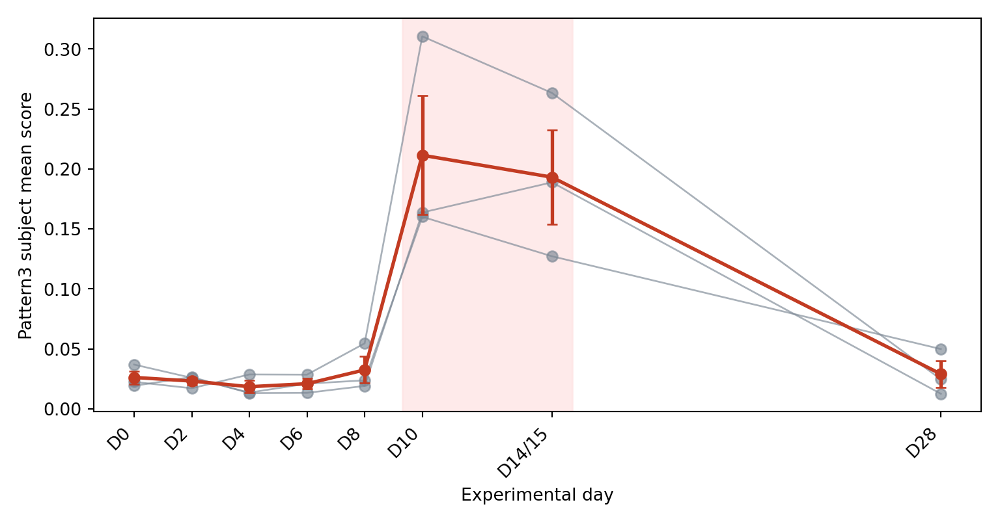

library(here)
library(readr)
library(dplyr)
library(tidyr)
library(ggplot2)
library(knitr)
library(jsonlite)
if (requireNamespace("reticulate", quietly = TRUE) &&
file.exists("/opt/cogaps-venv/bin/python")) {
reticulate::use_python("/opt/cogaps-venv/bin/python", required = FALSE)
}Biomedical Open Case Studies: Discovering Temporal Immune Programs with CoGAPS in Single-Cell Dengue Infection Data
![Five-panel opening roadmap figure. Panel A shows the experimental PBMC discovery time course from D0 through D28 with the late acute D10 to D14 or D15 window highlighted. Panel B shows discovery set composition by timepoint as stacked bars of broad PBMC cell identities. Panel C previews model-rank evidence using stability, temporal structure, and goal-aligned summaries, with one candidate rank highlighted for later evaluation. Panel D previews selected-model pattern usage across infection days. Panel E previews a candidate response-pattern trajectory with a late acute peak.](data/processed/figures/figure_00_opening_summary_spoiler_light.png)
Key terms
- PBMCs: Peripheral blood mononuclear cells, a mixed population of immune cells isolated from blood. PBMCs include lymphocytes such as T cells, B cells, and natural killer cells, as well as monocytes and related antigen-presenting cells.
- PBMC identity: The relatively stable immune-cell identity of a cell, such as T cell, B cell, natural killer cell, or monocyte. A T cell remains a T cell across the infection time course, even though its gene-expression activity can change.
- IFN: Interferon, an antiviral signaling system that helps coordinate host responses to viral infection.
Disclaimer
The purpose of the Open Case Studies project is to demonstrate the use of various data science methods, tools, and software in the context of messy, real-world data. A given case study does not cover all aspects of the research process, is not claiming to be the most appropriate way to analyze a given data set, and should not be used in the context of making policy or clinical decisions without external consultation from scientific experts or medical care professionals. In addition, due to size constraints, datasets used within a case study may be a subset of the original/full dataset.
License information
This work is licensed under the Creative Commons Attribution-NonCommercial 4.0 (CC BY-NC 4.0) United States License unless otherwise noted.
Funding information
This work is funded through the National Institutes of Health, specifically the National Institute of General Medical Sciences: Grant Number 1R25GM160622.
To cite this case study, please use:
Thomas, Oshane O. and Wright, Carrie. (2026). https://github.com/opencasestudies/ocs-bio-temporal. Discovering Temporal Immune Programs with CoGAPS in Single-Cell Dengue Infection Data (Version 0.1.0).
GitHub repository
The source files for this case study are available in the opencasestudies/ocs-bio-temporal GitHub repository.
Keywords
- Dengue virus infection
- Single-cell RNA-seq
- Experimental infection cohort
- Peripheral blood mononuclear cells (PBMCs)
- Time-course analysis
- CoGAPS
- Non-negative matrix factorization
- Latent expression patterns
- K selection
- Reproducible biomedical data science
Prerequisites
Prerequisites
This case study is designed so most learners can follow the standard path without installing R, Python, CoGAPS, or single-cell packages directly on their computer. The standard path uses a Docker image, the case-study GitHub repository, included selected-model files, and precomputed K-selection evidence.
Before you begin, you should have:
- Docker installed and running. Install Docker Desktop for your operating system using the official Docker instructions for Mac, Windows, or Linux. You will use Docker to open the same R and Python environment used by the case study.
- Git installed, or another way to download the GitHub repository. The setup section uses
git cloneso that the case-study files, scripts, figures, and included data are all in one project folder. - A web browser and a Terminal or command prompt. You will open the case study in one browser tab, open RStudio Server from Docker in another tab, and run a few setup commands in your Terminal.
- Basic R or Python familiarity. You do not need to use both languages. In R, you should be comfortable creating objects with
<-, calling functions, reading data frames, using pipes, and reading commondplyrandtidyrverbs such asselect(),filter(),mutate(),group_by(),summarize(), andpivot_wider(). In Python, you should be comfortable running short code chunks, creating variables, usingPath, reading tables withpandas, selecting columns with.loc, previewing data with.head(), and reading common table operations such as.assign(),.groupby().agg(),.merge(), and.pivot(). - Basic table and file-path literacy. You should know how to read rows and columns in a table, recognize CSV and JSON files, follow project-relative paths, and compare long and wide table layouts.
- Introductory biology context. You do not need prior dengue, single-cell RNA-seq, or CoGAPS expertise. It will help to know that gene-expression data measure genes across cells, that PBMCs are mixed blood immune cells, and that models can learn latent patterns that are interpreted only after checking the biological evidence.
The full reproduction path is optional. Choose it only if you want to download the larger external reproduction files, mount both the GitHub repository and reproduction archive into Docker, and run complete preprocessing, selected-model, and interpretation scripts. That path requires more comfort with command-line work, large files, Docker volume mounts, and longer-running computations.
Motivation
Dengue is a mosquito-borne viral disease with a growing global footprint (World Health Organization 2025a). In its 2024 global dengue update, the World Health Organization reported 14,434,584 dengue cases across all six WHO regions, the highest global burden recorded in WHO surveillance (World Health Organization 2025b). Dengue risk is shaped by overlapping factors, including mosquito-vector ecology, urbanization, travel, surveillance capacity, health-system capacity, and climate-sensitive mosquito habitats.

Image source: CBS News, “Maps show dengue fever risk areas as CDC warns of global case surge”.
Dengue surges are not only a question of case counts. During the 2024 global surge, U.S. public-health warnings and news coverage emphasized that clinicians should stay alert for dengue as international records were being broken and locally acquired cases appeared in places such as Puerto Rico and Florida (Centers for Disease Control and Prevention 2024; Moniuszko, Gounder, and Johnston 2024). That matters because dengue care is highly time-dependent: clinicians need to recognize possible cases, order appropriate tests, monitor warning signs, and identify patients who may progress to severe dengue.
There is no dengue-specific antiviral treatment, so care depends on supportive management and close monitoring (Centers for Disease Control and Prevention 2026). That clinical reality makes timing important in two connected ways. Clinicians and public-health teams need to know when risk is changing, and researchers need to understand how the changes as infection unfolds.
This case study focuses on the second timing problem: how can single-cell data help describe immune changes over the course of dengue infection? The source study profiled , or PBMCs, during primary dengue virus type 1 infection (Waickman et al. 2021). PBMCs are blood-derived immune cells, including T cells, B cells, natural killer cells, monocytes, and related antigen-presenting cells. They are useful here because blood is one place where a systemic host response can be observed over time.
The main analysis uses an . In this kind of study, participants are sampled on a planned schedule, so their immune responses can be compared along a shared timeline. A is the starting reference point before later post-infection changes are interpreted. That design lets you ask a more focused question than “which cells are present?” You can ask how immune-cell activity changes from the starting point through later infection and recovery timepoints.
PBMC data are biologically rich, but they are also tangled. Each cell has a relatively stable : a T cell is still a T cell, and a monocyte is still a monocyte. At the same time, infection can turn on such as antiviral signaling, inflammation, cytotoxic activity, or antibody-related responses. A later blood sample may therefore differ from baseline because the mixture of cell types changed, because the same cell types changed their activity, because subjects differ from one another, or because several of these processes happen together.
That is why ordinary clustering is not enough for the central question in this case study. Clustering can help identify groups of similar cells, but it tends to assign each cell to one group. Dengue host response is more layered than that. A monocyte can remain a monocyte while also expressing an interferon-stimulated antiviral program.
This case study therefore focuses on . A latent program is an inferred pattern of gene expression shared across many cells, rather than a variable measured directly in the original data table. You will use , a Bayesian method, to represent cells as additive mixtures of these programs (Fertig et al. 2010; Johnson et al. 2023). In plain language, CoGAPS helps ask which gene-expression patterns define the data and how strongly each cell uses each pattern.
A key modeling choice is how many patterns to ask CoGAPS to learn. That number is called the , or K. If K is too small, distinct biological signals may be compressed into the same pattern. If K is too large, the model may split signal into patterns that are harder to interpret. Choosing K is therefore not just a technical setting; it shapes what biological questions the model can answer.
These ideas lead to the main research questions for the case study: how should the CoGAPS rank be selected, which temporal immune programs appear in the experimental dengue time course, which programs look more like stable PBMC identity versus dynamic infection activity, and which evidence supports an interferon-associated late acute response.
Main Questions
You will answer four connected research questions about the experimental dengue infection time course. The first is a modeling question: which value of , the number of patterns, should anchor the main analysis? You answer that question early, at the start of Data Import, because the selected-model files depend on the rank decision. The remaining questions use that selected model to evaluate temporal immune programs, distinguish PBMC identity from dynamic infection activity, and assess evidence for an interferon-associated late acute response.
Our main questions
- Which value of provides an appropriate CoGAPS model for this case-study goal?
- Which temporal immune programs appear across the experimental dengue time course?
- Which programs reflect PBMC identity, dynamic infection activity, or both?
- Which evidence supports an interferon-associated late acute response?
| Research question | Evidence you will inspect | |
|---|---|---|
|
|
Question 1 Which value of provides an appropriate CoGAPS model for this case-study goal? |
You will answer this first by importing and inspecting precomputed , including , , temporal signal, , and a goal-aligned score. Data Analysis later revisits the decision while checking diagnostics and sensitivity evidence. |
|
|
Question 2 Which appear across the experimental dengue time course? |
You will answer this by using selected-model pattern summaries, , , and temporal effect-size rankings. |
|
|
Question 3 Which programs reflect , , or both? |
You will compare timepoint-associated variation with broad-cell-type-associated variation, then inspect identity/activity summaries, , and pattern-use heatmaps. |
|
|
Question 4 Which evidence supports an ? |
You will combine , , day 10 and day 14/15 trajectories, and relative to baseline. |
The first question should be answered before treating any individual CoGAPS pattern as biology. Choosing K settles which selected-model files the standard path uses; it does not yet settle what any numbered pattern means. The remaining questions build that biological interpretation step by step.
Use this evidence map as a guide as you move through the analysis:
| Question | Main evidence | Where it appears |
|---|---|---|
| Question 1: model rank | Rank-sweep manifest, stability plateau, redundancy, , biological resolution, goal-aligned score, and sensitivity comparator | Data Import; Data Analysis |
| Question 2: temporal programs | Pattern-by-day summaries, subject-level summaries, temporal effect sizes, and pattern trajectories | Data Exploration; Data Visualization; Data Analysis |
| Question 3: identity versus activity | Broad-cell-type effect sizes, timepoint effect sizes, top genes, identity/activity summaries, and pattern heatmaps | Data Wrangling and Preprocessing; Data Visualization; Data Analysis |
| Question 4: IFN-associated response | IFN-score correlation, IFN-stimulated top genes, late acute trajectory, and pseudobulk directionality | Data Visualization; Data Analysis |
Learning Objectives
By the end of this case study, you will be able to evaluate precomputed CoGAPS rank-selection evidence, use that decision to import the K-selected model files, rebuild core summaries, and interpret temporal immune programs from longitudinal single-cell RNA-seq data collected during experimental dengue virus infection.
You may work through the standard path in R or Python. The standard path uses included analysis files, precomputed rank-selection evidence, and K-selected model outputs so that you can focus on evidence checking, visualization, interpretation, and reproducible summaries rather than waiting for a full CoGAPS run. The full-reproduction path is available separately for learners who want to download the large reproduction files from Zenodo and rerun the selected-model workflow inside the case-study Docker image.
The objectives are organized into data science/bioinformatics, statistical/modeling, and biological/topical goals. Together, they prepare you to answer the four research questions: choosing an appropriate CoGAPS rank, identifying temporal immune programs, distinguishing PBMC identity from dynamic infection activity, and evaluating evidence for an interferon-associated late acute response.
Data Science/Bioinformatics Learning Objectives:
- Import rank-selection evidence, then import K-selected CoGAPS files, metadata tables, diagnostics, and manifests in R or Python.
- Check file inventories, table columns, object dimensions, sample metadata, and analysis units before interpreting model output.
- Distinguish standard-path files included with the case study from large full-reproduction files stored outside the repository.
- Join CoGAPS cell scores to subject, timepoint, and broad immune-cell-type annotations.
- Reshape and summarize pattern scores by infection day, subject, and broad PBMC identity.
- Create reproducible visual summaries from included analysis files while keeping R as the default path and Python as a first-class alternate.
Statistical and Modeling Learning Objectives:
- Explain CoGAPS as linked non-negative matrices: gene loadings that define patterns and cell scores that measure pattern use.
- Evaluate candidate values of K using rank-sweep evidence, including stability, redundancy, temporal signal, biological resolution, and goal-aligned evidence.
- Justify why one CoGAPS rank is used for the main analysis while a lower-rank model remains useful as a sensitivity comparison.
- Read convergence, stability, runtime, and trace diagnostics before treating selected-model output as interpretable.
- Distinguish high non-negative pattern scores or gene loadings from gene-expression direction.
- Use pseudobulk directionality to ask whether top pattern genes increase or decrease relative to baseline.
- Explain why subject-level summaries are important when interpreting temporal patterns in single-cell data.
Biological/Topical Learning Objectives:
- Describe the experimental DENV-1 PBMC cohort and explain why it is the primary discovery set for this case study.
- Explain why this analysis studies host immune response rather than directly identifying infected cells.
- Distinguish stable PBMC identity programs, dynamic infection-response activity programs, and mixed programs.
- Interpret temporal immune programs using top genes, subject-level trajectories, broad-cell-type context, and model diagnostics.
- Evaluate evidence for an interferon-associated late acute response using timing, IFN-score correlation, interferon-stimulated genes, and directionality.
- Interpret secondary adaptive, cytotoxic, or plasmablast-related signals cautiously rather than treating those labels as guaranteed findings.
- Discuss limitations from small subject numbers, changing cell composition, selected-model sensitivity, standard-path file construction, and public human-data interpretation.
Objectives Map
This map shows how the learning objectives come together across the case study. The detailed objectives above name the skills; the map below shows where those skills are introduced, practiced, and used for interpretation.
| Learning goal | What this helps you do | Where it appears |
|---|---|---|
| Understand the biological setting | Explain why an experimental DENV-1 PBMC time course can be used to study host immune response over time | Motivation; Context and Background; What Are the Data? |
| Navigate the two analysis paths | Distinguish the standard path, which uses included files, from the full-reproduction path, which adds large external files and longer scripts | Packages and Setup; What Are the Data?; Data Import |
| Evaluate the CoGAPS rank decision | Use precomputed rank-sweep evidence to decide which K-selected model files the standard path should import | Main Questions; Data Import; Data Analysis |
| Import and check model evidence | Load manifests, rank-selection evidence, selected-model outputs, diagnostics, and metadata before interpretation | Data Import; Data Exploration |
| Understand preprocessing and discovery-set construction | Explain how filtering, balancing, matrix orientation, and CoGAPS-ready inputs shape what the selected model can reveal | Data Wrangling and Preprocessing; Limitations |
| Rebuild analysis-ready summaries | Join pattern scores to subject, timepoint, and broad PBMC identity metadata, then summarize patterns across biological units | Data Exploration; Data Wrangling and Preprocessing |
| Visualize temporal and identity structure | Compare temporal patterns, broad-cell-type structure, subject-level trajectories, and top-gene evidence | Data Visualization; Data Analysis |
| Interpret evidence and limitations | Evaluate interferon-associated response evidence, model diagnostics, K = 5 sensitivity, and limits of the standard-path analysis | Data Analysis; Limitations; Summary; Suggested Homework |
Packages and Setup
This section helps you set up the working environment for the case study. The main decision is which path you want to follow.
The standard path is recommended for most learners. It uses the case-study repository, included analysis files, selected-model outputs, and precomputed rank-selection evidence. You will import, summarize, visualize, diagnose, and interpret the selected model without waiting for a full CoGAPS run.
The full reproduction path is optional. It uses the same case-study repository and Docker image, but adds the large Zenodo reproduction archive so you can regenerate source-data preparation outputs, rerun the selected CoGAPS model, or rebuild interpretation outputs.
The K-selection sweep is not rerun in either path. At the start of Data Import, you will inspect precomputed rank-selection evidence to decide which model rank anchors the standard path. Later, Data Analysis revisits that decision while checking diagnostics and biological interpretation.
Setup Layers: Software, Repository, and Large Files
Before running commands, keep the setup layers separate:
| Setup layer | What it provides | Used in |
|---|---|---|
| Docker image | R, Python, CoGAPS, PyCoGAPS, and the other packages used by the case study. | Standard path and full reproduction path |
| GitHub repository | The case-study pages, scripts, included analysis files, figures, and manifests. | Standard path and full reproduction path |
| Zenodo reproduction archive | Large source, preprocessed, model-object, checkpoint, selected-model, and sweep-summary files that are too large for GitHub. | Full reproduction path only |
The Docker image supplies software, not project data. Docker sees your local files only when you mount folders into the container with -v. In the commands below, the cloned GitHub repository is mounted at /home/rstudio/project. If you use the full reproduction path, the Zenodo reproduction archive is also mounted at /home/rstudio/project/data/external/reproduction_archive.
Choose Your Working Path
| Path | Use it when you want to… | Files you need | How you run code |
|---|---|---|---|
| Standard path | Complete the main analysis efficiently and learn how the selected model is interpreted. | The cloned GitHub repository. | Copy short R or Python chunks from the case study into RStudio Server. |
| Full reproduction path | Regenerate major selected-model inputs or outputs after downloading the large files. | The cloned GitHub repository plus the Zenodo reproduction archive. | Run complete scripts inside the same Docker image. |
Both paths use the same precomputed rank-selection evidence. You will inspect that evidence in Data Import before loading the K-selected model files. The sweep scripts are included for provenance, but ordinary learners do not rerun the sweep.
Standard Path Setup
Start here unless you specifically want to regenerate large files. First clone the case-study repository and move into the repository root on your computer:
git clone https://github.com/opencasestudies/ocs-bio-temporal.git
cd ocs-bio-temporalThen pull and launch the Docker image:
docker pull othomas2/cs5-cogaps-runtime:0.1.0
docker run --platform linux/amd64 --rm -it \
-p 8787:8787 \
-e PASSWORD="Password12" \
-v "$PWD":/home/rstudio/project:rw \
othomas2/cs5-cogaps-runtime:0.1.0This command mounts the cloned GitHub repository into the container at /home/rstudio/project. The mount is writable (rw) so any small outputs you create in the project folder are saved back to your local clone.
Before you run analysis chunks, use the shared Use RStudio Server section below to open RStudio Server, confirm your working folder, and learn where R and Python output appears. Once RStudio Server is open, the standard path usually means running one short R or Python tabbed chunk at a time and inspecting the output before moving on.
The R and Python tabs are alternate implementations. Choose one language unless you specifically want to compare how the same task looks in both languages.
Full Reproduction Setup
Use this path only if your goal is to regenerate large analysis outputs. The full reproduction path needs two local folders before Docker starts.
First, clone the GitHub repository if you have not already done so. Launch Docker from the repository root. The repository contains the case-study text, scripts, manifests, included analysis files, and output folders.
Second, download and extract the Zenodo reproduction archive into a local folder outside the Git repository, such as $HOME/cs5_reproduction_archive. Do not commit those files to GitHub.
The archive is a large-file layer for full reproduction: it can contain original source files, preprocessed H5AD files, selected-model objects, checkpoint files, and sweep summaries. If you are using a draft version of the case study before the public Zenodo record is available, use the archive location provided by your instructor or project lead.
Use the following commands from your computer’s Terminal. If you already cloned the case-study repository during the standard path setup, you can skip the git clone line and use cd to move into your existing ocs-bio-temporal folder.
# Get the case-study repository.
git clone https://github.com/opencasestudies/ocs-bio-temporal.git
cd ocs-bio-temporal
# Point to the downloaded Zenodo reproduction archive.
mkdir -p "$HOME/cs5_reproduction_archive"
# Download the Zenodo reproduction archive into this folder.
# If Zenodo provides a zip or tar archive, extract it here before launching Docker.
export CS5_REPRODUCTION_ARCHIVE="$HOME/cs5_reproduction_archive"
# Launch Docker with both local folders mounted.
docker run --platform linux/amd64 --rm -it \
-p 8787:8787 \
-e PASSWORD="Password12" \
-v "$PWD":/home/rstudio/project:rw \
-v "$CS5_REPRODUCTION_ARCHIVE":/home/rstudio/project/data/external/reproduction_archive:ro \
othomas2/cs5-cogaps-runtime:0.1.0This command has two important mounts. The first -v mount sends the cloned GitHub repository, represented by $PWD, into the container at /home/rstudio/project. The second -v mount sends the downloaded Zenodo reproduction archive into the container at /home/rstudio/project/data/external/reproduction_archive. The archive mount is read-only (ro) so the original downloaded files are not modified. Later full-reproduction scripts should write regenerated outputs to a writable project folder, such as /home/rstudio/project/GSE154386, unless you intentionally mount another output folder.
For the full reproduction path, use complete scripts rather than pasting every code chunk by hand. The workflow begins with the preparation script that downloads or reuses the GEO source archive, imports the 10x files, applies preprocessing decisions, and constructs the balanced discovery set. After that, the selected-model and interpretation scripts use those prepared inputs.
The repository also includes an optional launcher script that wraps the Docker command. Use it only after you understand the two folder layers above. For the standard path, run it from the repository root:
bash scripts/run_cs5_runtime.shFor the full reproduction path, point the launcher to your downloaded Zenodo reproduction archive first:
export CS5_REPRODUCTION_ARCHIVE="$HOME/cs5_reproduction_archive"
bash scripts/run_cs5_runtime.shAfter Docker starts, open the Terminal pane in RStudio Server and inspect the script folders:
cd /home/rstudio/project
ls scripts
ls scripts/reproduction
cat scripts/reproduction/README.mdThe main full-reproduction scripts are grouped by task:
- Prepare the source data and construct the discovery set:
scripts/prepare_gse154386_subset_r.Rorscripts/prepare_gse154386_subset_python.py. - Rerun the selected model:
scripts/reproduction/cs5_run_selected_model_r.Rorscripts/reproduction/cs5_run_selected_model_python.py. - Rebuild interpretation-layer and directionality summaries from the selected-model outputs.
Choose the R or Python preparation script for step 1; you do not need to run both unless you want to compare the two implementations. The later scripts expect the prepared discovery-set files to exist before CoGAPS or interpretation steps are rerun. Later sections give the exact selected-model and interpretation commands after the rank-selection evidence has been evaluated.
Run R scripts with Rscript and Python scripts with the Docker image’s Python environment:
Rscript scripts/prepare_gse154386_subset_r.R
# or:
/opt/cogaps-venv/bin/python scripts/prepare_gse154386_subset_python.py
Rscript scripts/reproduction/cs5_run_selected_model_r.R
/opt/cogaps-venv/bin/python scripts/reproduction/cs5_run_selected_model_python.pyThe K-selection sweep scripts are also included in scripts/reproduction for provenance and teaching. They are not part of the standard path or the full reproduction path described here.
Use RStudio Server
Both ready-to-run paths use RStudio Server inside the Docker image. After Docker starts, open http://localhost:8787 and sign in with username rstudio and password Password12. Keep the online case-study page open in one browser tab and RStudio Server open in another.
In RStudio Server, work from /home/rstudio/project. That folder is the copy of the case-study repository that you mounted with Docker. If you are unsure where you are, run getwd() in the R Console or pwd in the Terminal.
The schematic below labels the main panes you will use while working through the case study.

| What you are running | Where to paste or run it | Where output appears |
|---|---|---|
| Short R chunks from an R tab | R Console, or an R script in the Source pane | Console output, Plots pane, and saved files in the Files pane |
| Short Python chunks from a Python tab | Terminal pane using /opt/cogaps-venv/bin/python, or a small .py script |
Terminal output and saved files in the Files pane |
| Full reproduction scripts | Terminal pane from /home/rstudio/project |
Terminal progress messages, logs, and regenerated output folders |
For R chunks, a common workflow is to open File > New File > R Script, paste the code, highlight the lines you want to run, and click Run. You can also paste short chunks directly into the R Console. For Python chunks, use the Terminal pane so you are running Python inside the Docker environment:
cd /home/rstudio/project
/opt/cogaps-venv/bin/pythonYou can paste short Python examples after the >>> prompt. For longer Python examples, save the code in a small .py file and run it from the Terminal.
Load Packages
The Docker image already installs these packages. Load the packages for the language you plan to use; the R and Python tabs support the same standard-path analysis.
from pathlib import Path
import json
import pandas as pd
import matplotlib.pyplot as pltThe R and Python tabs are alternate ways to complete the same analysis. You do not need to run both languages unless you want to inspect both examples.
| Package | Language | Role | Use |
|---|---|---|---|
here |
R | Standard path | Build project-relative paths. |
readr |
R | Standard path | Read CSV tables used by the R code. |
dplyr |
R | Standard path | Select, filter, summarize, and arrange analysis tables. |
tidyr |
R | Standard path | Reshape pattern summaries into long and wide forms. |
ggplot2 |
R | Standard path | Build visualizations from tidy tables. |
knitr |
R | Standard path | Render tables in the case-study document. |
jsonlite |
R | Standard path | Read run manifests and diagnostic JSON files. |
reticulate |
R | Optional bridge | Connect R to the Python environment inside the Docker image. |
pandas |
Python | Standard path | Read, filter, and summarize CSV tables. |
matplotlib |
Python | Standard path | Build Python visualizations. |
CoGAPS |
R | Optional full reproduction | Run the R implementation of CoGAPS. |
PyCoGAPS |
Python | Optional full reproduction | Run the Python implementation of CoGAPS. |
scanpy |
Python | Optional full reproduction | Preprocess and inspect single-cell objects. |
anndata |
Python | Optional full reproduction | Read and write H5AD single-cell objects. |
Check the Runtime
These checks confirm that the standard-path packages are available in the language you choose. They also report whether optional full-reproduction packages are installed in the Docker image.
r_required <- c("here", "readr", "dplyr", "tidyr", "ggplot2", "knitr", "jsonlite")
r_versions <- vapply(
r_required,
function(pkg) as.character(utils::packageVersion(pkg)),
character(1)
)
data.frame(
item = c("R", r_required, "reticulate_available", "CoGAPS_available"),
value = c(
R.version.string,
unname(r_versions),
as.character(requireNamespace("reticulate", quietly = TRUE)),
as.character(requireNamespace("CoGAPS", quietly = TRUE))
)
) |>
knitr::kable()| item | value |
|---|---|
| R | R version 4.3.2 (2023-10-31) |
| here | 1.0.1 |
| readr | 2.1.5 |
| dplyr | 1.1.4 |
| tidyr | 1.3.1 |
| ggplot2 | 4.0.3 |
| knitr | 1.48 |
| jsonlite | 1.8.8 |
| reticulate_available | TRUE |
| CoGAPS_available | TRUE |
import importlib.util
import sys
import matplotlib
pd.DataFrame(
{
"item": [
"Python",
"pandas",
"matplotlib",
"PyCoGAPS_available",
"scanpy_available",
"anndata_available",
],
"value": [
sys.version.split()[0],
pd.__version__,
matplotlib.__version__,
str(importlib.util.find_spec("PyCoGAPS") is not None),
str(importlib.util.find_spec("scanpy") is not None),
str(importlib.util.find_spec("anndata") is not None),
],
}
) item value
0 Python 3.10.12
1 pandas 2.0.3
2 matplotlib 3.7.3
3 PyCoGAPS_available True
4 scanpy_available True
5 anndata_available TrueNow check that the mounted project folder contains the standard-path files. If you mounted the Zenodo reproduction archive, the optional archive check should also return TRUE. If you are following the standard path, it is fine for the archive check to return FALSE.
data.frame(
item = c(
"case-study manifest",
"standard-path processed folder",
"rank-selection evidence",
"optional reproduction archive"
),
available = c(
file.exists(here::here("data", "artifact_manifest.json")),
dir.exists(here::here("data", "processed")),
dir.exists(here::here("data", "processed", "k_selection")),
dir.exists(here::here("data", "external", "reproduction_archive"))
)
) |>
knitr::kable()| item | available |
|---|---|
| case-study manifest | TRUE |
| standard-path processed folder | TRUE |
| rank-selection evidence | TRUE |
| optional reproduction archive | FALSE |
pd.DataFrame({
"item": [
"case-study manifest",
"standard-path processed folder",
"rank-selection evidence",
"optional reproduction archive",
],
"available": [
Path("data/artifact_manifest.json").exists(),
Path("data/processed").is_dir(),
Path("data/processed/k_selection").is_dir(),
Path("data/external/reproduction_archive").is_dir(),
],
}) item available
0 case-study manifest True
1 standard-path processed folder True
2 rank-selection evidence True
3 optional reproduction archive FalseData Import will check the specific K-selected model folder after you evaluate the rank-selection evidence.
When a function is introduced for the first time, the prose uses the package::function() form so you can see which package provides it. Next, you will import the rank-selection evidence, decide which model rank the standard path uses, and then load the K-selected model files for the rest of the case study.
Context and Background
This case study asks how a coordinated immune response emerges over time after primary DENV-1 exposure. Before you inspect the data, it helps to know what would make a pattern biologically meaningful: the study has an aligned experimental infection timeline, PBMCs contain many immune-cell identities in the same sample, and CoGAPS is designed to separate overlapping gene-expression programs rather than assign each cell to only one group.
The background below builds toward the four research questions you will answer later. First, you will review why DENV-1 infection, PBMC sampling, and the experimental cohort design make temporal immune programs possible to study. Then you will connect that biology to the modeling problem: how latent transcriptional programs are represented, why CoGAPS is useful for this kind of single-cell matrix, and why choosing the rank K changes what the model can reveal. By the end of this section, you should understand why the case study first evaluates model rank, then uses the selected model to ask which patterns vary over infection days, which patterns mostly reflect PBMC identity, and which evidence supports an interferon-associated late acute response.
DENV-1 Infection and Blood Immune Response
Dengue is a mosquito-borne viral infection caused by dengue virus, often abbreviated DENV (World Health Organization 2025a). There are four major dengue virus , named DENV-1 through DENV-4. The source study used in this case study focuses on , or dengue virus serotype 1, in both experimental and natural primary infection settings (Waickman et al. 2021).
Dengue can range from no symptoms or mild fever to severe disease requiring urgent clinical care (World Health Organization 2025a; Centers for Disease Control and Prevention 2026). For this case study, the important point is not to diagnose dengue from gene expression. The important point is that dengue unfolds over time. Viral exposure, early symptoms, immune activation, possible warning signs, and recovery do not all happen at once. That time structure is what makes an experimental infection cohort useful for asking when immune programs appear and fade.
A means that the infection is interpreted without the same prior dengue immune history expected in secondary infection. That distinction matters because previous dengue exposure can shape immune memory and disease risk. By focusing on primary DENV-1 infection, the case study has a clearer setting for asking how blood immune-cell gene-expression programs change after a shared exposure.
The immune response measured here is a in blood. You will not try to identify which cells are infected by the virus. Instead, you will study how immune cells change their transcriptional activity as infection progresses. This distinction matters because the source study reported no cell-associated DENV-1 RNA in PBMCs, while still observing coordinated immune transcriptional changes across the time course (Waickman et al. 2021).
One response you will return to later is the interferon-associated antiviral response. are immune signals that can help cells enter an antiviral state, and often increase during viral infection. In this case study, those genes provide one biological clue for interpreting CoGAPS patterns, but they are not the only signal you will consider. You will also ask whether patterns reflect immune-cell identity, broader infection activity, or a mixture of both.
PBMCs as a Mixed Immune-Cell System
, or PBMCs, are a mixed population of immune cells isolated from blood. They include T cells, B cells, natural killer cells, monocytes, and related antigen-presenting cells. That mixture is useful for studying a systemic immune response, but it also creates the central modeling challenge in this case study.
A cell can carry more than one interpretable signal. A monocyte can remain identifiable as a monocyte while also activating . A T cell or natural killer cell can retain its lineage markers while also showing activation or cytotoxic activity. A B-cell population can shift toward plasmablast-like states as part of an antibody-related response.
This is the biological reason the case study focuses on latent transcriptional programs rather than only on cell clusters. A useful model should help you ask whether a signal looks like stable immune-cell identity, dynamic infection activity, or a mixture of both.
Experimental and Natural Primary DENV-1 Infection
The primary discovery data come from an . In this setting, participants are enrolled and sampled on a planned study timeline, so the same post-exposure days can be compared across people. That shared clock is the key advantage for this case study: it lets you ask whether a transcriptional program rises, peaks, or returns toward baseline at specific experimental days.
This is different from a . Natural infection samples are collected from people who became infected outside the study setting, often at less precisely aligned stages of illness. Those samples are still valuable for asking whether a learned program appears in real-world infection, but they are harder to use as the primary discovery set for a day-by-day temporal model.
The distinction between experimental and natural infection will come back later. The experimental cohort is the main discovery set. The natural infection cohort is biologically important context and a possible projection target, but it is not the main required analysis.
What the Source Study Found
The data come from the source study by Waickman and colleagues (Waickman et al. 2021), who profiled PBMCs from experimental and natural primary DENV-1 infections using single-cell RNA sequencing. The source study captured 171,208 high-quality cells and annotated major leukocyte populations across both study arms.
Several source-study findings are important background for this case study:
- the experimental infection cohort was sampled at aligned study days
D0,D2,D4,D6,D8,D10,D14/15, andD28 - a consistent experimental transcriptional response became strongest at
D10, especially in monocytes, a broad class of immune cells that often respond strongly to inflammation - among monocytes, the source study highlighted conventional monocytes and
CD16himonocytes;CD16himeans the cells have high expression ofCD16, a molecular label on the cell surface that is often used to distinguish monocyte subtypes - many genes that increased during the
D10toD14/15window were interferon-stimulated or inflammation-associated genes; in plain language, these are genes turned on as part of antiviral signaling and immune alarm responses - examples of these antiviral or inflammatory genes included
IFITM1,IFI6,ISG15,MX1,TRIM22, andLY6E - activated T-cell and plasmablast-like B-cell populations expanded in the experimental cohort around
D14/15; this means the source study observed later changes in immune cells associated with lymphocyte activation and antibody-producing B-cell states - no cell-associated DENV-1 RNA was detected in PBMCs in either the experimental or natural infection samples
These points should not be read as a complete immunology review. They are the source-study facts that make the later modeling questions biologically meaningful. The aligned days let you ask temporal questions. The PBMC annotations let you separate cell identity from activity. The monocyte, interferon, T-cell, and plasmablast-like findings give you biological expectations to check against the CoGAPS patterns.
From Cell Clusters to Latent Programs
Ordinary clustering is often one of the first useful steps in single-cell analysis. It groups cells that have similar overall gene expression, which can help you annotate broad cell types, check whether expected immune-cell populations are present, and compare cell composition across timepoints.
However, clustering mainly asks which cells are most similar to each other overall. The research questions in this case study ask something more layered: whether repeated gene-expression programs appear across cells, subjects, and infection days.
A gene-expression program is a coordinated pattern of genes that tend to vary together across cells. Some programs reflect stable immune-cell identity, such as genes characteristic of T cells, B cells, or monocytes. Other programs reflect biological activity, such as antiviral signaling, inflammation, cytotoxic activity, or antibody-producing B-cell states. This identity-versus-activity framing is a common way to think about single-cell gene-expression programs (Kotliar et al. 2019).
A is inferred from many genes and many cells together, rather than measured directly in the original data table. In this case study, a useful latent program might look identity-like, activity-like, or mixed. That framing matters because a cell can participate in more than one program.
NMF: The Mathematical Shape of the Problem
Single-cell RNA-seq data are often organized as a matrix. In this case study, the rows represent genes, the columns represent cells, and each entry is a non-negative expression value for one gene in one cell.
, or NMF, asks whether that large matrix can be approximated by multiplying two smaller non-negative matrices. NMF was introduced as a parts-based way to represent non-negative data and later became widely used for biological pattern discovery (Lee and Seung 1999; Brunet et al. 2004; Stein-O’Brien et al. 2018). At the intuition level:
observed expression matrix ≈ gene loadings × cell scoresMore formally:
\[ D \approx A P \]
Here, D is the observed expression matrix, A is a gene-by-pattern matrix, and P is a pattern-by-cell matrix. The model is trying to describe many genes and many cells using a smaller number of latent patterns.
| Object | Rows | Columns | How to read it |
|---|---|---|---|
Expression matrix D |
genes | cells | The observed input data after preprocessing and orientation checks. |
A matrix |
genes | patterns | . Large values indicate genes that help define a pattern. |
P matrix |
patterns | cells | . Large values indicate cells that strongly use a pattern. |
| model setting | number of patterns | The number of latent programs the model is asked to learn. |
If D has G genes and C cells, and the model is asked to learn K patterns, then A has G rows and K columns, while P has K rows and C columns. For one gene g and one cell c, the approximation can be read as:
expression for gene g in cell c ≈ sum of that cell's K pattern contributionsThe formal version writes that sum as:
\[ D_{g,c} \approx \sum_{k=1}^{K} A_{g,k} P_{k,c} \]
In plain language, this says that the expression of a gene in a cell is approximated by adding up that gene’s contribution to each pattern multiplied by how strongly that cell uses each pattern.
The word non-negative matters. The entries in A and P are constrained to be zero or positive. This means patterns add together rather than cancel each other out. That additive structure fits the PBMC setting: a cell can carry a stable immune-cell identity signal and a dynamic infection-response signal at the same time.
Many NMF methods are framed as finding non-negative matrices that reconstruct the observed data with small error. At the intuition level, the fitting goal is:
choose A and P so the reconstructed matrix AP is close to the observed matrix DA common formal objective is:
\[ \underset{A \geq 0,\;P \geq 0}{\text{minimize}}\; \lVert D - AP \rVert_F^2 \]
The double bars are a compact way to measure the total reconstruction error across all genes and cells. You do not need to compute this objective by hand. The important idea is that the model is balancing compression and reconstruction: it tries to summarize a large expression matrix with a smaller set of patterns while still preserving meaningful structure in the data.
How CoGAPS Extends Vanilla NMF
is the specific NMF-family method used in this case study. It keeps the additive, non-negative structure described above, but fits the model using a Bayesian, sampling-based framework designed for genomic data (Fertig et al. 2010; Johnson et al. 2023).
That difference matters because single-cell data are noisy, sparse, and high-dimensional. Rather than treating one fitted factorization as automatically meaningful, CoGAPS supports diagnostics that help you decide whether a run is stable enough to interpret. Rank-selection evidence helps decide which model to import; diagnostics later help decide whether that selected run behaved sensibly enough to interpret. In other words, the model output is a starting point for evidence-based interpretation, not a final answer by itself.
This case study builds on three related uses of CoGAPS-style analyses: temporal CoGAPS for interpreting time-course transcriptional patterns (Fertig et al. 2014), single-cell CoGAPS for identifying latent programs across cells (Johnson et al. 2023), and projectR-style projection for asking whether learned patterns appear in another dataset (Stein-O’Brien et al. 2019; Sharma et al. 2020).
What Choosing K Means
The rank, written as K, is the number of patterns CoGAPS is asked to learn. If K is too small, different biological signals may be compressed into the same pattern. If K is too large, the model may split signal into patterns that are harder to interpret or less stable.
At the start of Data Import, you will inspect precomputed rank-sweep evidence and decide which value of K is appropriate for the main analysis goal. The evidence will include stability, redundancy, temporal signal, biological resolution, and a goal-aligned score. This section does not reveal the selected rank because choosing K is one of the research questions you will answer.
The important idea here is that K is goal-dependent: the useful rank is the one that supports the biological question, not a universal property of the dataset.
How Pattern Evidence Will Be Interpreted
Pattern numbers are labels assigned by a model run. The biological interpretation is not the number itself. A pattern becomes meaningful only after you connect it to evidence such as timing, cell-type association, top genes, IFN-score correlation, diagnostics, and directionality. In other runs or other ranks, a similar biological program may receive a different number.
For that reason, the case study emphasizes annotations, top genes, trajectories, diagnostics, and directionality checks rather than treating pattern numbers as universal names. A pattern becomes “IFN-associated” because its genes and time course are consistent with interferon biology, not because it has a particular numeric label.
CoGAPS also does not directly say whether genes are upregulated or downregulated. The A and P matrices are non-negative, so they show association with a pattern. To ask whether top genes are higher than baseline at a peak timepoint, the case study uses a separate subject-level check.
Identity-Like, Activity-Like, and Mixed Programs
You will see three interpretation categories later in the analysis:
- Identity-like programs: patterns whose scores vary mostly by broad immune-cell type, such as T cell, monocyte, B cell, or plasmablast.
- Activity-like programs: patterns whose scores vary mostly by infection day, suggesting a dynamic response over time.
- Mixed programs: patterns where both cell identity and timepoint contribute to the signal.
These labels are interpretation aids, not ground truth. They help you decide what evidence to inspect next: cell-type summaries, pattern-by-day trajectories, top genes, and directionality relative to baseline.
Projection as an Optional Extension
Once a set of patterns has been learned in one dataset, a transfer-learning workflow can ask whether those patterns are also detectable in another dataset. This idea appears in single-cell CoGAPS and projectR-style analyses: learn patterns in a discovery dataset, then project or score related samples against those learned patterns (Stein-O’Brien et al. 2019; Sharma et al. 2020).
For this case study, the experimental cohort is the discovery dataset. The natural infection cohort is reserved for optional material because it asks a different question: whether programs learned from the aligned experimental time course appear in naturally acquired infection.
Core distinctions to carry forward
- Experimental infection cohort vs. natural infection cohort: the experimental cohort has aligned study days and is the discovery setting; the natural cohort is biologically important but belongs to optional projection work.
- Immune-cell identity vs. infection activity: PBMC identity can be stable across time, while infection-response activity can rise or fall during the time course.
- Gene loading vs. cell score: gene loadings describe which genes define a pattern; cell scores describe how strongly each cell uses that pattern.
- Rank
Kvs. pattern label:Kis the number of patterns requested from the model; pattern labels are run-specific names for the patterns learned by one fitted model. - CoGAPS association vs. expression directionality: CoGAPS weights show association with a pattern; separate directionality checks ask whether top genes are higher or lower than baseline.
With these concepts in place, the next section describes the actual data objects used in the case study: where the source data came from, which cohort is used for discovery, and which precomputed artifacts carry the model evidence through the analysis.
What Are the Data?
Now that you know how to launch the analysis environment, this section explains what the data files represent. You will not import, preprocess, or analyze the files here. That work begins in Data Import. The goal for this section is simpler: know which data layer you are looking at before you start reading tables or interpreting CoGAPS patterns.
The public source data come from GEO accession GSE154386, associated with the source study by Waickman and colleagues (Waickman et al. 2021). The source study used a 10x Genomics 5-prime single-cell RNA-seq workflow to profile unfractionated peripheral blood mononuclear cells, or PBMCs. PBMCs are immune cells isolated from blood, including T cells, B cells, natural killer cells, monocytes, and related antigen-presenting cells. Unfractionated means those immune-cell types were measured together rather than first being sorted into separate purified populations.
That design is useful for studying host response because many immune-cell types can be examined in the same experiment. It also creates the central modeling challenge in this case study: stable immune-cell identity and dynamic infection-response activity are mixed in the same expression matrix. CoGAPS is useful here because it can help separate these overlapping sources of variation into latent patterns (Johnson et al. 2023).
The source study includes both experimental dengue infection samples and natural infection samples. The main case-study analysis focuses on the experimental cohort because those subjects were sampled on aligned study days. Natural infection samples remain important context and may be used in optional extension work, but they are not part of the required main analysis.
Data Layers
The case study uses several data layers. The table below is a map, not a workflow. Later sections will show how to import files, check coverage, preprocess source data, draw figures, and answer research questions.
| Data layer | What it represents | Path | Where you will use it |
|---|---|---|---|
| Original public source data | Raw 10x single-cell files from GEO accession GSE154386. |
Full reproduction | Data Import introduces where source 10x files enter R or Python. |
| Experimental infection cohort | Three dengue-naive adults sampled at aligned study days D0, D2, D4, D6, D8, D10, D14/15, and D28. |
Standard path and full reproduction | Data Exploration checks subject and timepoint coverage. |
| Balanced discovery set | The experimental subset prepared for CoGAPS model fitting: 4,800 cells and 5,000 highly variable genes. | Standard path and full reproduction | Data Wrangling explains how the discovery set was prepared. |
| K-selection evidence | Precomputed tables and figures used to evaluate the model-rank decision. | Standard path | Data Import evaluates the rank decision; Data Analysis later audits it with diagnostics and sensitivity evidence. |
| Selected model outputs | Pattern scores, gene loadings, top genes, diagnostics, and summary tables from the model chosen after rank-selection evidence is evaluated. | Standard path | Data Import loads these files after the rank decision; later sections explore, visualize, and interpret them. |
| Zenodo reproduction archive | Large raw, preprocessed, model-object, checkpoint, and selected-model reproduction files. | Full reproduction | Full-reproduction scripts use these files after you download and mount the Zenodo archive. |
| Natural infection files | Source-study samples from natural dengue infection. | Optional extension | Suggested Homework or Further Exploration may use these as projection targets. |
The timeline labels use D for experimental study day. For example, D0 is day 0, D10 is day 10, and D14/15 combines samples collected around days 14 and 15.
From Source Data to Analysis Files
The included analysis files are not a separate biological study. They are a smaller, traceable representation of the source data and the CoGAPS modeling workflow. The transformation has two broad stages.
First, the source single-cell data are prepared for modeling. The full preparation workflow downloads the public GSE154386 raw 10x files from GEO, attaches sample metadata, applies quality control, normalizes expression, selects highly variable genes, adds broad biological labels, and constructs the balanced experimental discovery set. Data Import shows where the source files enter the workflow. Data Wrangling and Preprocessing explains why those preparation decisions matter.
Second, the model-rank evidence is prepared before the selected model results are used for interpretation. The rank-selection summaries let you evaluate the modeling decision. After that decision, the selected model outputs provide the pattern scores, gene loadings, diagnostics, and smaller tables used in the standard path through the case study. Data Import handles both the rank evidence and the selected files. Data Visualization shows how those tables become figures, and Data Analysis uses them to answer the research questions.
The full raw, preprocessed, model-object, and checkpoint files are too large for the standard path, so they are stored in the Zenodo reproduction archive. The archive is the optional large-file layer for full reproduction; the case-study repository still supplies the text, scripts, manifests, and smaller files needed to inspect the rank-selection evidence, load the selected model outputs after the rank is chosen, reproduce the main summaries, and follow the interpretation.
What One Row Means
Different file families summarize different biological or computational units. Keeping those row meanings straight will help you avoid over-interpreting the results.
| File family | One row represents | Used for | Interpretation caution |
|---|---|---|---|
| Single-cell expression matrices | One cell, with genes stored as matrix features or columns. | Full reproduction and model input preparation. | Matrix orientation matters; cells and genes must stay correctly labeled. |
| Discovery cell-score files | One discovery-set cell with metadata and pattern-score columns. | Cell-level summaries and pattern visualization. | The number of pattern-score columns depends on the rank chosen in Data Import; cells are not independent biological replicates. |
| Subject-timepoint summaries | One subject, one timepoint, and one pattern. | Temporal trajectories and repeated-sampling interpretation. | These summaries are better evidence for time-course claims than treating every cell as independent. |
| Gene-loading and top-gene tables | One gene-pattern entry, often with a rank and weight. | Biological interpretation of each CoGAPS pattern. | CoGAPS weights are non-negative and do not indicate whether a gene is up- or down-regulated. |
| Pattern summary tables | One CoGAPS pattern. | Ranking temporal variation, identity/activity structure, and later response evidence. | Pattern labels are model labels, not biological names. |
| Diagnostic traces and metrics | One trace point or one run-level summary record. | Runtime, convergence, and selected-model checks. | Diagnostics support interpretation, but they are not biological findings by themselves. |
Independence and repeated sampling
Single cells are not independent biological replicates. Many cells come from the same subject at the same experimental day. You will use cell-level summaries to visualize patterns, but biological interpretation should also consider subject-level trajectories and repeated sampling over time.
Balanced Discovery Set
The core CoGAPS analysis uses a balanced experimental discovery set rather than the entire published single-cell atlas. The discovery set contains 4,800 cells and 5,000 highly variable genes, with 600 cells contributing to each experimental timepoint. This makes the selected model easier to compare across infection days because no single day contributes far more cells than the others.
This balancing choice is for modeling and interpretation. It should not be used to estimate the true abundance of each immune-cell type in the original source study. You will inspect the discovery-set composition in Data Exploration, then return to the preprocessing decisions that created the discovery set in Data Wrangling and Preprocessing.
Data Dictionary
The terms below appear repeatedly in the import, exploration, wrangling, visualization, and analysis sections.
| Study design term | Meaning | Why it matters |
|---|---|---|
subject |
Experimental participant identifier, such as Subject2. |
Links cells back to the biological person sampled over time. |
sample_id |
GEO sample identifier for a specific sample. | Tracks the source sample used to build the discovery set. |
timepoint_merged |
Display label for the experimental day, such as D0, D10, or D14/15. |
Defines the temporal axis used in figures and summaries. |
day_merged_numeric |
Numeric version of the timepoint, with D14/15 represented as 14.5. |
Lets plots and summaries order the time course correctly. |
| Cell and composition term | Meaning | Why it matters |
|---|---|---|
broad_cell_type |
Broad immune-cell identity, such as T_cell, Monocyte, or B_cell. |
Helps distinguish cell-identity structure from infection-response activity. |
n_cells |
Number of cells in a group. | Shows how much cell-level evidence contributes to a summary. |
fraction |
Proportion of cells in a timepoint or group. | Helps compare cell composition across days. |
| CoGAPS model term | Meaning | Why it matters |
|---|---|---|
| pattern-score columns | CoGAPS pattern scores in the selected-model files. The number of columns depends on the rank chosen in Data Import. | Larger values mean stronger activity of a pattern in a cell or group. |
pattern |
Pattern label used in long-format summaries. | Lets you compare results pattern by pattern. |
gene |
Gene symbol in a pattern or directionality table. | Connects model patterns to biological interpretation. |
weight |
CoGAPS gene loading for a pattern. | Larger values indicate genes that contribute more strongly to that pattern. |
| Interpretation term | Meaning | Why it matters |
|---|---|---|
eta_timepoint |
Fraction of pattern-score variation explained by experimental timepoint. | Helps rank patterns by temporal structure. |
eta_broad_cell_type |
Fraction of pattern-score variation explained by broad immune-cell type. | Helps distinguish identity-like programs from activity-like programs. |
log2FC |
Log2 fold change from a pseudobulk directionality comparison. | Indicates whether selected genes are higher or lower relative to baseline. |
direction |
Direction label derived from log2FC, such as up, down, or unchanged. |
Adds up/down regulation context that CoGAPS weights alone do not encode. |
More specialized response-evidence columns are introduced later where they are used for biological interpretation.
You now know what the file families represent and which biological units they summarize. Next, you will import the rank-selection evidence, decide which model rank the standard path uses, and then load the K-selected model files needed for the rest of the case study.
Limitations
This case study is designed for teaching. The results are useful for learning how to reason about latent factors in single-cell data, but several limitations matter.
- Small experimental cohort: the primary time course has three experimental subjects from the source experimental infection cohort (Waickman et al. 2021). Subject-level summaries are essential, but they do not replace a larger cohort.
- Teaching subset: the CoGAPS discovery set is balanced and tractable for learner-facing analysis. It is not the full published atlas described by the source study (Waickman et al. 2021).
- Model-rank sensitivity: lower-rank models can be stable and compact while still compressing temporal activity into broader patterns. The analysis section therefore treats rank selection as evidence to evaluate, not as a hidden technical detail.
- Pattern labels are run-specific: learners should interpret pattern biology from genes, time course, cell type usage, and diagnostics rather than from pattern numbers alone.
- CoGAPS is non-negative: a high pattern score does not tell us whether genes are upregulated or downregulated relative to baseline. Directionality requires a separate comparison (Johnson et al. 2023).
- Natural projection is optional: projection into the natural infection cohort is biologically motivated by transfer-learning workflows, but it should remain an optional extension until the final selected-model projection workflow is regenerated and validated (Stein-O’Brien et al. 2019; Sharma et al. 2020).
- Host response, not viral tropism: the source study reported no cell-associated DENV-1 RNA in PBMCs (Waickman et al. 2021). This analysis concerns host immune programs, not direct identification of infected cells.
Bioethics, Data Use, and Interpretation Cautions
This case study uses publicly available human single-cell RNA-seq data from GEO, originally generated by Waickman and colleagues (Waickman et al. 2021). Learners should still treat the data as human-subjects-derived research data and interpret results with care.
Important cautions:
- The case study should not be used to make clinical decisions or policy claims.
- The discovery set is a teaching subset and does not capture all possible variation in the full study.
- Patterns are latent statistical summaries, not direct measurements of immune pathways.
- A pattern annotated as interferon-associated is supported by top genes, correlation with an IFN score, timing, and directionality, but it is still an interpretation.
- Subject-level variation should be shown whenever possible so that learners do not confuse large numbers of cells with large numbers of independent people.
- Public data reuse should cite the original study, the GEO accession, and any software used in the analysis.
For clinical care, learners should use medical and public-health guidance rather than this teaching case study (Centers for Disease Control and Prevention 2026).
Data Import
In this section, you will import the files that enter the analysis environment. Import means reading files into R or Python objects so you can inspect them, check them, and use them in later sections.
A CSV file is a rectangular table: rows are observations or summaries, and columns are variables. A JSON file stores structured metadata, such as model settings or diagnostic values. In R, the imported files become data frames. In Python, they become tables managed by pandas.
This section begins with the first modeling decision you need for the case study: which value of , the number of patterns, should anchor the main analysis? Because the selected-model files were generated from one chosen K, you first import precomputed evidence from a , a planned set of CoGAPS runs that compared candidate ranks, seeds, and iteration counts. After using that evidence to choose the main rank, the standard path imports the small K-selected model files included with the case study. The full reproduction path also imports the original source after downloading the larger Zenodo and GEO files, with later preprocessing decisions covered in Data Wrangling and Preprocessing.
This section stops once the K-selection evidence and selected-model files have been read into R or Python and checked for basic file integrity. The biological interpretation comes later in Data Analysis, where you will use these prepared files to evaluate model diagnostics, interpret , examine , check directionality, and compare sensitivity evidence.
The larger files needed to rerun preprocessing or CoGAPS from scratch are intentionally external:
- raw GEO download:
GSE154386_RAW.tar - preprocessed H5AD cache
- experimental discovery H5ADs
- RDS model objects
- checkpoint files
These files are documented in the data/artifact_manifest.json and are distributed through Zenodo for full reproduction.
Standard Path: Evaluate K-Selection Evidence Before Importing the Model
Before importing , you need to answer the first modeling question from Main Questions: which value of K provides an appropriate CoGAPS model for this case-study goal? The standard path does not rerun the full sweep. Instead, it imports precomputed sweep summaries that let you inspect the rank-selection evidence directly.
This belongs in Data Import because the sweep summaries are files you read into the analysis environment. The goal is narrow: decide which model outputs should be imported next.
Step 1: Check the File Availability Manifest
Start with an availability audit. The file inventory is a JSON that records which small files are included locally and which large files are kept in the Zenodo reproduction archive. This check helps you understand why the standard path can inspect K-selection evidence immediately while the full reproduction path needs the larger external files.
Here, you read a structured file and summarize two lists inside it. The list named copied contains files included with the case study. The list named skipped contains large files that were intentionally left out and documented for Zenodo.
manifest <- jsonlite::fromJSON(
here::here("data", "artifact_manifest.json")
)
data.frame(
file_group = c(
"included standard-path files",
"Zenodo reproduction files"
),
file_count = c(
nrow(manifest$copied),
nrow(manifest$skipped)
),
size_mb = c(
round(sum(manifest$copied$size_bytes) / 1024^2, 2),
round(sum(manifest$skipped$size_bytes) / 1024^2, 2)
)
) |>
knitr::kable()| file_group | file_count | size_mb |
|---|---|---|
| included standard-path files | 141 | 29.20 |
| Zenodo reproduction files | 8 | 316.32 |
from pathlib import Path
import json
import pandas as pd
with open("data/artifact_manifest.json") as f:
manifest_py = json.load(f)
pd.DataFrame({
"file_group": [
"included standard-path files",
"Zenodo reproduction files",
],
"file_count": [
len(manifest_py["copied"]),
len(manifest_py["skipped"]),
],
"size_mb": [
round(sum(x["size_bytes"] for x in manifest_py["copied"]) / 1024**2, 2),
round(sum(x["size_bytes"] for x in manifest_py["skipped"]) / 1024**2, 2),
],
}) file_group file_count size_mb
0 included standard-path files 141 29.20
1 Zenodo reproduction files 8 316.32Read this first table as an availability audit. The standard path starts from the included small files. The full reproduction path adds the large source, model-object, and checkpoint files from Zenodo.
Next, read the . After the manifest names the selected rank and representative run, you will check the supporting evidence files.
Step 2: Read the K-Selection Decision Manifest
The decision manifest records the model-rank decision in a machine-readable format. It is useful because it stores the selection rule, the compact stable rank, the selected main rank, and the representative run that the standard path will import.
k_manifest <- jsonlite::fromJSON(
here::here("data", "processed", "k_selection",
"revised_k_selection_manifest.json")
)
compact_stable_k <- k_manifest$previous_chosen_k
selected_main_k <- k_manifest$revised_chosen_k
selected_seed <- k_manifest$revised_seed
selected_iterations <- k_manifest$revised_selected_n_iter
data.frame(
item = c(
"selection rule",
"compact stable K",
"selected main K",
"selected-run seed",
"selected-run iterations"
),
value = c(
k_manifest$selection_rule,
compact_stable_k,
selected_main_k,
selected_seed,
selected_iterations
)
) |>
knitr::kable()| item | value |
|---|---|
| selection rule | smallest stability-plateau K with at least one IFN-candidate activity-like temporal program |
| compact stable K | 5 |
| selected main K | 10 |
| selected-run seed | 2 |
| selected-run iterations | 2000 |
with open(
"data/processed/k_selection/revised_k_selection_manifest.json"
) as f:
k_manifest_py = json.load(f)
compact_stable_k_py = k_manifest_py["previous_chosen_k"]
selected_main_k_py = k_manifest_py["revised_chosen_k"]
selected_seed_py = k_manifest_py["revised_seed"]
selected_iterations_py = k_manifest_py["revised_selected_n_iter"]
k_manifest_table_py = pd.DataFrame({
"item": [
"selection rule",
"compact stable K",
"selected main K",
"selected-run seed",
"selected-run iterations",
],
"value": [
k_manifest_py["selection_rule"],
compact_stable_k_py,
selected_main_k_py,
selected_seed_py,
selected_iterations_py,
],
})
print(k_manifest_table_py.to_markdown(index=False))| item | value |
|---|---|
| selection rule | smallest stability-plateau K with at least one IFN-candidate activity-like temporal program |
| compact stable K | 5 |
| selected main K | 10 |
| selected-run seed | 2 |
| selected-run iterations | 2000 |
The manifest gives you the selected rank, and the next steps show the evidence behind that choice. K = 5 is the compact stable comparator from a stability-focused rule. K = 10 is the selected main rank because it adds enough to support the case-study questions.
Now that the manifest has named the selected rank, make a K-selection evidence checklist. These are the files you will inspect before importing the selected-model outputs.
selected_pattern_file <- sprintf(
"representative_K%s_seed%s_iter%s_patterns.csv",
selected_main_k, selected_seed, selected_iterations
)
k_evidence_files <- data.frame(
evidence_role = c(
"decision manifest",
"stability plateau candidates",
"all-rank summary",
paste("selected K =", selected_main_k, "reproducibility"),
paste("selected K =", selected_main_k, "pattern evidence"),
"K-selection figure"
),
relative_path = c(
"data/processed/k_selection/revised_k_selection_manifest.json",
"data/processed/k_selection/stability_plateau_candidates.csv",
"data/processed/k_selection/revised_k_selection_summary_by_k.csv",
"data/processed/k_selection/selected_pairwise_reproducibility.csv",
file.path("data", "processed", "k_selection", selected_pattern_file),
"data/processed/figures/figure_01_k_selection.png"
),
used_for = c(
"records the selected K decision",
"compares stable candidate ranks",
"shows evidence across the full sweep",
"checks the representative run across seeds",
"records pattern-level evidence for the representative run",
"summarizes K-selection visually"
)
)
k_evidence_files$file_exists <- file.exists(
file.path(here::here(), k_evidence_files$relative_path)
)
k_evidence_files |>
knitr::kable()| evidence_role | relative_path | used_for | file_exists |
|---|---|---|---|
| decision manifest | data/processed/k_selection/revised_k_selection_manifest.json | records the selected K decision | TRUE |
| stability plateau candidates | data/processed/k_selection/stability_plateau_candidates.csv | compares stable candidate ranks | TRUE |
| all-rank summary | data/processed/k_selection/revised_k_selection_summary_by_k.csv | shows evidence across the full sweep | TRUE |
| selected K = 10 reproducibility | data/processed/k_selection/selected_pairwise_reproducibility.csv | checks the representative run across seeds | TRUE |
| selected K = 10 pattern evidence | data/processed/k_selection/representative_K10_seed2_iter2000_patterns.csv | records pattern-level evidence for the representative run | TRUE |
| K-selection figure | data/processed/figures/figure_01_k_selection.png | summarizes K-selection visually | TRUE |
selected_pattern_file_py = (
f"representative_K{selected_main_k_py}_"
f"seed{selected_seed_py}_iter{selected_iterations_py}_patterns.csv"
)
k_evidence_files_py = pd.DataFrame({
"evidence_role": [
"decision manifest",
"stability plateau candidates",
"all-rank summary",
f"selected K = {selected_main_k_py} reproducibility",
f"selected K = {selected_main_k_py} pattern evidence",
"K-selection figure",
],
"relative_path": [
"data/processed/k_selection/revised_k_selection_manifest.json",
"data/processed/k_selection/stability_plateau_candidates.csv",
"data/processed/k_selection/revised_k_selection_summary_by_k.csv",
"data/processed/k_selection/selected_pairwise_reproducibility.csv",
str(Path("data/processed/k_selection") / selected_pattern_file_py),
"data/processed/figures/figure_01_k_selection.png",
],
"used_for": [
"records the selected K decision",
"compares stable candidate ranks",
"shows evidence across the full sweep",
"checks the representative run across seeds",
"records pattern-level evidence for the representative run",
"summarizes K-selection visually",
],
})
k_evidence_files_py["file_exists"] = k_evidence_files_py[
"relative_path"
].map(lambda path: Path(path).exists())
print(k_evidence_files_py.to_markdown(index=False))| evidence_role | relative_path | used_for | file_exists |
|---|---|---|---|
| decision manifest | data/processed/k_selection/revised_k_selection_manifest.json | records the selected K decision | True |
| stability plateau candidates | data/processed/k_selection/stability_plateau_candidates.csv | compares stable candidate ranks | True |
| all-rank summary | data/processed/k_selection/revised_k_selection_summary_by_k.csv | shows evidence across the full sweep | True |
| selected K = 10 reproducibility | data/processed/k_selection/selected_pairwise_reproducibility.csv | checks the representative run across seeds | True |
| selected K = 10 pattern evidence | data/processed/k_selection/representative_K10_seed2_iter2000_patterns.csv | records pattern-level evidence for the representative run | True |
| K-selection figure | data/processed/figures/figure_01_k_selection.png | summarizes K-selection visually | True |
Every file_exists value should be TRUE in R or True in Python. If one is false, stop and resolve the file-path problem before using the selected-model outputs.
Step 3: Understand What the Sweep Tested
The was a modeling experiment. Instead of fitting one CoGAPS model and treating it as final, the sweep compared candidate ranks, random seeds, and iteration counts. Each run asked whether a particular model setting recovered reproducible patterns that could separate stable from dengue-associated temporal activity.
| Sweep component | What varied | Why it matters |
|---|---|---|
Candidate rank K |
Different numbers of CoGAPS patterns. | Controls how much structure the model can separate. |
| Random seed | Different model initializations. | Checks whether a rank gives similar results from different starts. |
| Iteration count | Different sampler lengths. | Helps identify representative runs that are stable enough to inspect. |
| Pattern evidence | Temporal effect, cell-type effect, top-gene evidence, and IFN-candidate summaries. | Asks whether a stable rank can answer the biological question. |
The standard path reads the results of this sweep. It does not rerun hundreds of CoGAPS models. That is why the sweep is treated as a precomputed evidence layer.
Step 4: Apply the Stability Gate
A useful model rank should not depend on one lucky random start. The first gate therefore asks which ranks are on the seed-to-seed . here summarizes whether runs with the same K recover similar patterns across seeds.
k_plateau <- readr::read_csv(
here::here("data", "processed", "k_selection",
"stability_plateau_candidates.csv"),
show_col_types = FALSE
)
k_plateau |>
dplyr::transmute(
K,
iter = selected_n_iter,
stability = round(stability_core, 3),
`top-gene agreement` = round(mean_matched_top_gene_jaccard, 3),
`pattern-class agreement` = round(pattern_class_agreement_mean, 3),
`on plateau` = on_stability_plateau,
`compact stable choice` = chosen_K
) |>
knitr::kable()| K | iter | stability | top-gene agreement | pattern-class agreement | on plateau | compact stable choice |
|---|---|---|---|---|---|---|
| 5 | 8000 | 0.996 | 1.000 | 1 | TRUE | TRUE |
| 6 | 4000 | 0.993 | 1.000 | 1 | TRUE | FALSE |
| 8 | 6000 | 0.989 | 0.992 | 1 | TRUE | FALSE |
| 9 | 4000 | 0.986 | 0.993 | 1 | TRUE | FALSE |
| 10 | 2000 | 0.979 | 0.989 | 1 | TRUE | FALSE |
| 12 | 4000 | 0.979 | 0.976 | 1 | TRUE | FALSE |
k_plateau_py = pd.read_csv(
"data/processed/k_selection/stability_plateau_candidates.csv"
)
k_plateau_display_py = (
k_plateau_py
.assign(
stability=lambda df: df["stability_core"].round(3),
top_gene_agreement=lambda df: df[
"mean_matched_top_gene_jaccard"
].round(3),
pattern_class_agreement=lambda df: df[
"pattern_class_agreement_mean"
].round(3),
)
.rename(columns={
"selected_n_iter": "iter",
"on_stability_plateau": "on plateau",
"chosen_K": "compact stable choice",
})
.loc[:, [
"K", "iter", "stability", "top_gene_agreement",
"pattern_class_agreement", "on plateau",
"compact stable choice",
]]
)
print(k_plateau_display_py.to_markdown(index=False))| K | iter | stability | top_gene_agreement | pattern_class_agreement | on plateau | compact stable choice |
|---|---|---|---|---|---|---|
| 5 | 8000 | 0.996 | 1 | 1 | True | True |
| 6 | 4000 | 0.993 | 1 | 1 | True | False |
| 8 | 6000 | 0.989 | 0.992 | 1 | True | False |
| 9 | 4000 | 0.986 | 0.993 | 1 | True | False |
| 10 | 2000 | 0.979 | 0.989 | 1 | True | False |
| 12 | 4000 | 0.979 | 0.976 | 1 | True | False |
This table explains why K = 5 is a reasonable compact stable comparator. It is stable across seeds, and it sits on the stability plateau. If the only goal were to choose the smallest stable model, K = 5 would be attractive.
Step 5: Ask Why Stability Alone Is Not Enough
The case-study goal is not only to find a compact stable factorization. The goal is to recover in a mixed PBMC sample. A low-rank model can be stable because it captures broad , while still compressing dynamic infection activity into too few patterns.
That is why the rank-selection rule adds a gate. Among stable ranks, the selected model should be small enough to remain interpretable but large enough to resolve at least one connected to the dengue-response biology introduced earlier.
Step 6: Apply the Biological-Resolution Gate
Now compare the stable candidate ranks using evidence tied to the research questions. The table below keeps the rank-level evidence separate from later pattern-level interpretation. At this stage, you are asking whether a rank resolves the right kind of signal, not whether a particular numbered pattern has already been biologically named.
k_plateau |>
dplyr::transmute(
K,
stability = round(stability_core, 3),
`temporal effect` = round(max_eta_timepoint, 3),
`IFN-candidate patterns` = candidate_ifn_pattern_count_mean,
`activity-like patterns` = activity_like_pattern_count_mean,
`goal score` = round(goal_aligned_score, 3),
decision = ifelse(
K == selected_main_k,
"selected main model",
""
)
) |>
knitr::kable()| K | stability | temporal effect | IFN-candidate patterns | activity-like patterns | goal score | decision |
|---|---|---|---|---|---|---|
| 5 | 0.996 | 0.013 | 0 | 0 | 0.353 | |
| 6 | 0.993 | 0.026 | 0 | 0 | 0.460 | |
| 8 | 0.989 | 0.066 | 1 | 0 | 0.504 | |
| 9 | 0.986 | 0.067 | 2 | 0 | 0.595 | |
| 10 | 0.979 | 0.461 | 1 | 1 | 0.715 | selected main model |
| 12 | 0.979 | 0.094 | 2 | 0 | 0.589 |
k_resolution_display_py = (
k_plateau_py
.assign(
stability=lambda df: df["stability_core"].round(3),
temporal_effect=lambda df: df["max_eta_timepoint"].round(3),
goal_score=lambda df: df["goal_aligned_score"].round(3),
decision=lambda df: df["K"].eq(
selected_main_k_py
).map({True: "selected main model", False: ""}),
)
.rename(columns={
"candidate_ifn_pattern_count_mean": "IFN-candidate patterns",
"activity_like_pattern_count_mean": "activity-like patterns",
})
.loc[:, [
"K", "stability", "temporal_effect",
"IFN-candidate patterns", "activity-like patterns",
"goal_score", "decision",
]]
)
print(k_resolution_display_py.to_markdown(index=False))| K | stability | temporal_effect | IFN-candidate patterns | activity-like patterns | goal_score | decision |
|---|---|---|---|---|---|---|
| 5 | 0.996 | 0.013 | 0 | 0 | 0.353 | |
| 6 | 0.993 | 0.026 | 0 | 0 | 0.46 | |
| 8 | 0.989 | 0.066 | 1 | 0 | 0.504 | |
| 9 | 0.986 | 0.067 | 2 | 0 | 0.595 | |
| 10 | 0.979 | 0.461 | 1 | 1 | 0.715 | selected main model |
| 12 | 0.979 | 0.094 | 2 | 0 | 0.589 |
The selected rank comes from the combination of columns. K = 5 is stable, but it has little and no IFN-candidate activity-like pattern. K = 8 and K = 9 begin to show signal, but they do not resolve an activity-like candidate by this rule. K = 10 remains on the stability plateau and is the first plateau rank that resolves an activity-like IFN-candidate temporal program.
Pattern labels are not biological names
can change across runs, ranks, or implementations. A sweep report may attach one number to an IFN-candidate pattern, while the selected model files you import next may use a different number for the corresponding evidence. For that reason, this K-selection step chooses a model rank rather than naming the final biological role of any numbered pattern.
Step 7: Inspect the K-Selection Visual Evidence
The figure below summarizes the same decision visually. The top view asks whether candidate ranks remain stable while resolving temporal structure. The bottom view summarizes the goal-aligned score used for this decision.

Read this as a model-selection figure. It supports the decision to use K = 10 for the main analysis.
Step 8: Record the K Decision
K-selection decision for the standard path
Use the K = 10, seed = 2, nIterations = 2000 CoGAPS run as the main selected model. Keep K = 5 as a compact stable sensitivity comparator because it is useful for asking what a lower-rank model compresses.
This decision settles which selected-model files you should import next.
Standard Path: Import the K-Selected Model Files
The folder name selected_model_k10 should now make sense. It contains the standard-path from the representative K = 10 model chosen by the K-selection evidence you just inspected. These files are compact exports from a CoGAPS fit to the prepared balanced experimental discovery matrix.
A CoGAPS fit produces two core kinds of information: , which show which genes help define each pattern, and , which show how strongly each cell uses each pattern. The pattern summary and top-gene table are derived from those model-fit outputs. The and record run settings and diagnostic values so the selected run can be checked before you interpret it in Data Analysis.
For now, the goal is practical: load the files that belong to the selected K = 10 run and confirm that they have the expected structure.
The standard path imports four K-selected file families:
| File family | Example file | What it provides |
|---|---|---|
| Pattern summary | RQ1_time_varying_patterns.csv |
Pattern-level metrics for temporal, identity/activity, and IFN evidence. |
| Top-gene table | cogaps_K10_seed2_iter2000.top_genes.csv |
Gene-loading evidence for each pattern. |
cogaps_K10_seed2_iter2000.metrics.json |
Selected-run settings, runtime, and . | |
cogaps_K10_seed2_iter2000.trace.csv |
Saved trace values for convergence-related checks. |
The code below is split into short steps. Each step teaches one useful habit: build a path, make a file checklist, read files, inspect table shapes, run sanity checks, and preview the pattern summary.
Programming terms
- Path: The location of a file or folder. Project-relative paths make code work across computers and inside Docker.
- Object: A named value in memory, such as a table, list, or dictionary.
- Assignment: The step where code gives a name to a value. R often uses
<-; Python uses=. - Table shape: The number of rows and columns in a table.
- Sanity check: A small check that catches obvious problems before interpretation begins.
Step 1: Point to the K-Selected Model Folder
Start by defining the folder that contains the files you want to import. In R, here::here() builds a path from the project root. In Python, Path() from pathlib does the same job. Project-relative paths are useful because they work on different computers and inside the Docker runtime.
r_selected_dir <- here::here(
"data", "processed", "selected_model_k10", "r"
)
r_selected_dir[1] "/home/rstudio/project/data/processed/selected_model_k10/r"from pathlib import Path
import json
import pandas as pd
py_selected_dir = Path("data/processed/selected_model_k10/python")
py_selected_dirPosixPath('data/processed/selected_model_k10/python')The output is the folder path that the next chunks will use. You do not need to type the full path again each time; you can reuse the named object. In R, that object is called r_selected_dir. In Python, it is called py_selected_dir.
Step 2: Make a Selected-Output Import Checklist
Before reading the selected-model outputs, make a small import checklist. This is a good reproducibility habit: it catches missing files, misspelled file names, and working-directory mistakes before you start interpreting results. The checklist also connects each file to its role after the K decision.
r_import_plan <- data.frame(
file_role = c(
"pattern summary",
"top genes",
"run metrics",
"diagnostic trace"
),
file_name = c(
"RQ1_time_varying_patterns.csv",
"cogaps_K10_seed2_iter2000.top_genes.csv",
"cogaps_K10_seed2_iter2000.metrics.json",
"cogaps_K10_seed2_iter2000.trace.csv"
),
role_after_import = c(
"pattern-level evidence table",
"top-gene evidence table",
"selected-run settings and provenance",
"diagnostic trace for convergence checks"
)
)
r_import_plan$relative_path <- file.path(
"data", "processed", "selected_model_k10", "r",
r_import_plan$file_name
)
r_import_plan$file_exists <- file.exists(
file.path(here::here(), r_import_plan$relative_path)
)
r_import_plan |>
select(file_role, relative_path, role_after_import, file_exists) |>
knitr::kable()| file_role | relative_path | role_after_import | file_exists |
|---|---|---|---|
| pattern summary | data/processed/selected_model_k10/r/RQ1_time_varying_patterns.csv | pattern-level evidence table | TRUE |
| top genes | data/processed/selected_model_k10/r/cogaps_K10_seed2_iter2000.top_genes.csv | top-gene evidence table | TRUE |
| run metrics | data/processed/selected_model_k10/r/cogaps_K10_seed2_iter2000.metrics.json | selected-run settings and provenance | TRUE |
| diagnostic trace | data/processed/selected_model_k10/r/cogaps_K10_seed2_iter2000.trace.csv | diagnostic trace for convergence checks | TRUE |
py_import_plan = pd.DataFrame({
"file_role": [
"pattern summary",
"top genes",
"run metrics",
"diagnostic trace",
],
"file_name": [
"RQ1_time_varying_patterns.csv",
"cogaps_K10_seed2_iter2000.top_genes.csv",
"cogaps_K10_seed2_iter2000.metrics.json",
"cogaps_K10_seed2_iter2000.trace.csv",
],
"role_after_import": [
"pattern-level evidence table",
"top-gene evidence table",
"selected-run settings and provenance",
"diagnostic trace for convergence checks",
],
})
py_import_plan["relative_path"] = py_import_plan["file_name"].map(
lambda name: str(py_selected_dir / name)
)
py_import_plan["file_exists"] = py_import_plan["relative_path"].map(
lambda path: Path(path).exists()
)
py_import_plan.loc[:, [
"file_role", "relative_path", "role_after_import", "file_exists"
]] file_role ... file_exists
0 pattern summary ... True
1 top genes ... True
2 run metrics ... True
3 diagnostic trace ... True
[4 rows x 4 columns]The file_exists column should be TRUE in R or True in Python for every expected standard-path file. If one value is false, the problem is usually a path, file name, or missing-data issue. That is useful to know before you spend time debugging analysis code.
Step 3: Read the Files into Memory
Now you can create the R or Python objects that later chunks will reuse.
The object names are intentionally descriptive. For example, r_pattern_summary and py_pattern_summary store the pattern-level summary. The top-gene objects store genes ranked by pattern loading, the metrics objects store run settings, and the trace objects store diagnostic values saved during the run.
r_pattern_summary <- readr::read_csv(
file.path(r_selected_dir, "RQ1_time_varying_patterns.csv"),
show_col_types = FALSE
)
r_top_genes <- readr::read_csv(
file.path(r_selected_dir, "cogaps_K10_seed2_iter2000.top_genes.csv"),
show_col_types = FALSE
)
r_model_metrics <- jsonlite::fromJSON(
file.path(r_selected_dir, "cogaps_K10_seed2_iter2000.metrics.json")
)
r_trace <- readr::read_csv(
file.path(r_selected_dir, "cogaps_K10_seed2_iter2000.trace.csv"),
show_col_types = FALSE
)py_pattern_summary = pd.read_csv(
py_selected_dir / "RQ1_time_varying_patterns.csv"
)
py_top_genes = pd.read_csv(
py_selected_dir / "cogaps_K10_seed2_iter2000.top_genes.csv"
)
with open(py_selected_dir / "cogaps_K10_seed2_iter2000.metrics.json") as f:
py_model_metrics = json.load(f)
py_trace = pd.read_csv(py_selected_dir / "cogaps_K10_seed2_iter2000.trace.csv")This chunk does not print a table because its main job is to create objects for later use. In R, assignment uses <-. In Python, assignment uses =. In both languages, the name on the left is the object you will reuse later.
Step 4: Inspect the Imported Objects
After reading files, inspect their shapes. A table’s shape tells you how many rows and columns were imported. This quick check can reveal accidental empty files, wrong file paths, or files that do not have the columns you expected.
data.frame(
imported_object = c("r_pattern_summary", "r_top_genes", "r_trace"),
rows = c(nrow(r_pattern_summary), nrow(r_top_genes), nrow(r_trace)),
columns = c(ncol(r_pattern_summary), ncol(r_top_genes), ncol(r_trace)),
first_columns = c(
paste(head(names(r_pattern_summary), 5), collapse = ", "),
paste(head(names(r_top_genes), 4), collapse = ", "),
paste(head(names(r_trace), 4), collapse = ", ")
)
) |>
knitr::kable()| imported_object | rows | columns | first_columns |
|---|---|---|---|
| r_pattern_summary | 10 | 13 | pattern, kruskal_time_stat, kruskal_time_p, eta_timepoint, eta_broad_cell_type |
| r_top_genes | 500 | 4 | pattern, rank, gene, weight |
| r_trace | 40 | 4 | trace_index, chisq, atomsA, atomsP |
pd.DataFrame({
"imported_object": ["py_pattern_summary", "py_top_genes", "py_trace"],
"rows": [len(py_pattern_summary), len(py_top_genes), len(py_trace)],
"columns": [
py_pattern_summary.shape[1],
py_top_genes.shape[1],
py_trace.shape[1],
],
"first_columns": [
", ".join(py_pattern_summary.columns[:5]),
", ".join(py_top_genes.columns[:4]),
", ".join(py_trace.columns[:4]),
],
}) imported_object ... first_columns
0 py_pattern_summary ... pattern, kruskal_time_stat, kruskal_time_p, et...
1 py_top_genes ... pattern, rank, gene, weight
2 py_trace ... trace_index, chisq, atomsA, atomsP
[3 rows x 4 columns]Read this output as a basic import audit. The row counts tell you how much information was loaded. The first_columns field tells you whether the table looks like the file you intended to read. For example, the pattern summary should begin with pattern-level columns, while the trace file should begin with diagnostic trace columns.
Step 5: Run Sanity Checks on the Selected Model
The next check asks whether the imported files describe the model chosen by the K-selection evidence. These checks confirm that you imported the expected K = 10, seed = 2, nIterations = 2000 run and that the main tables contain all ten patterns.
data.frame(
check = c(
"model rank K",
"seed",
"iterations",
"CoGAPS threads",
"number of pattern rows",
"patterns represented in top-gene table",
"diagnostic trace length"
),
value = c(
r_model_metrics$K,
r_model_metrics$seed,
r_model_metrics$n_iter,
r_model_metrics$nThreads,
nrow(r_pattern_summary),
length(unique(r_top_genes$pattern)),
nrow(r_trace)
)
) |>
knitr::kable()| check | value |
|---|---|
| model rank K | 10 |
| seed | 2 |
| iterations | 2000 |
| CoGAPS threads | 4 |
| number of pattern rows | 10 |
| patterns represented in top-gene table | 10 |
| diagnostic trace length | 40 |
pd.DataFrame({
"check": [
"model rank K",
"seed",
"iterations",
"CoGAPS threads",
"number of pattern rows",
"patterns represented in top-gene table",
"diagnostic trace length",
],
"value": [
py_model_metrics["K"],
py_model_metrics.get("seed", 2),
py_model_metrics["n_iter"],
py_model_metrics["cogaps_threads"],
len(py_pattern_summary),
py_top_genes["pattern"].nunique(),
len(py_trace),
],
}) check value
0 model rank K 10
1 seed 2
2 iterations 2000
3 CoGAPS threads 4
4 number of pattern rows 10
5 patterns represented in top-gene table 10
6 diagnostic trace length 40The sanity-check output should confirm that the imported files match the selected model. The number of pattern rows should be 10, and the top-gene table should contain entries for all ten patterns. If those values do not match, stop here and resolve the import problem before continuing.
Step 6: Preview the Pattern Summary
As a final import check, preview a few columns from the pattern summary. This is a structural preview, not a ranking step. It asks whether the table contains pattern labels and the kinds of columns that later sections will use.
r_pattern_summary |>
select(pattern, eta_timepoint, eta_broad_cell_type, peak_timepoint) |>
head(5) |>
knitr::kable(digits = 3)| pattern | eta_timepoint | eta_broad_cell_type | peak_timepoint |
|---|---|---|---|
| Pattern3 | 0.454 | 0.165 | D10 |
| Pattern5 | 0.021 | 0.160 | D14/15 |
| Pattern1 | 0.019 | 0.163 | D6 |
| Pattern4 | 0.010 | 0.047 | D14/15 |
| Pattern10 | 0.009 | 0.912 | D0 |
py_pattern_summary.loc[
:, ["pattern", "eta_timepoint", "eta_broad_cell_type", "peak_timepoint"]
].head(5) pattern eta_timepoint eta_broad_cell_type peak_timepoint
0 Pattern3 0.454036 0.164630 D10
1 Pattern5 0.020907 0.159815 D14/15
2 Pattern1 0.019500 0.163340 D6
3 Pattern4 0.009813 0.046964 D14/15
4 Pattern10 0.009410 0.911550 D0By the end of this subsection, the K-selected model files have become named objects in R or Python. You have also checked that they exist, have the expected shapes, and describe the selected K = 10 model. The next sections use these imported tables to explore the discovery set and reshape model outputs for interpretation.
Full Reproduction Path: Import Source 10x Files
Everything above this point is part of the standard path. If you are following the standard path, continue to Data Exploration. You can skip this subsection if you are not running the optional full reproduction path.
This subsection is included so the source of the prepared files is transparent, and so learners who download the large Zenodo/GEO files can see how the raw enter the workflow.
The optional import path stops once the source data have become a labeled . Quality control, normalization, gene selection, annotation, and discovery-set construction happen later in Data Wrangling and Preprocessing.
Full reproduction note
The short toy chunks in this subsection are examples you can run to understand the import logic. They use small in-memory objects so you can see how source 10x files become a labeled single-cell object without downloading the full GEO archive.
If you want to run the optional full reproduction workflow on the real source files, use the complete script shown in Data Wrangling and Preprocessing. That one script includes both the import steps in this section and the preprocessing steps in the next section. Keeping those steps in one script makes the workflow easier to rerun because the downloaded files, imported objects, quality-control decisions, and saved outputs are handled in one continuous run. Helper chunks marked with eval: false below are script excerpts for transparency, not standalone workflow steps.
flowchart TB
classDef source fill:#eaf3ff,stroke:#2d6da3,stroke-width:2px,color:#102a43
classDef process fill:#f7f9fb,stroke:#6b7c8f,stroke-width:1.5px,color:#102a43
classDef stage fill:#1f4e79,stroke:#123047,stroke-width:2px,color:#ffffff
A["Source data<br/><b>GEO GSE154386</b><br/>raw 10x archive"]:::source
subgraph S1[" "]
P1["1. Build the single-cell<br/>data object"]:::stage
B["Parse file names<br/>subject, cohort, day"]:::process
C["Read 10x triplets<br/>matrix + barcodes + features"]:::process
D["Attach metadata<br/>cells x genes object"]:::process
end
A --> P1 --> B --> C --> D
style S1 fill:#f8fafc,stroke:#cbd5e1,stroke-width:1px,color:#102a43
The key idea in this diagram is alignment: a raw 10x sample is not one tidy table, but a linked matrix, barcode list, and feature list. In the steps below, you will see how those linked files become a labeled , with expression values connected to the correct cells, genes, samples, subjects, and infection days. Pay special attention to , because raw 10x matrices are usually stored as features by cells before being converted into the view used later.
Identify Source Files and Sample Metadata
Before expression values can be interpreted biologically, each cell has to be connected back to its sample. In this dataset, the sample name tells you which subject the cell came from, whether that subject was in the experimental or natural infection cohort, and which infection day the sample represents.
The raw GEO archive contains sample-level 10x files. In this context, “sample-level” means that the raw sequencing output is organized one biological sample at a time, rather than as one combined study-wide table. For each sample, the 10x Genomics files are usually a small set of linked files: a sparse expression matrix, a list of cell barcodes, and a list of gene or feature names. These files have to be read together because the matrix alone only contains numbers; the barcode and feature files tell you which cells and genes those numbers refer to.
The goal is to make implicit information explicit. A variable stores a value you want to reuse, such as a source URL or file path. A function is reusable code with inputs and outputs. Here, the function parse_sample_key() takes one sample name as input and returns metadata columns as output. Later, those metadata columns are copied onto every cell from that sample.
Step 1: Record Where the Raw Archive Comes From
This first short chunk does not download anything. It gives a name to the GEO source URL and to the local file name that would store the source archive. Naming these values makes the optional full workflow easier to audit because the source location is written once and reused.
RAW_TAR_URL <- "https://www.ncbi.nlm.nih.gov/geo/download/?acc=GSE154386&format=file"
RAW_TAR <- file.path("data", "external", "GSE154386", "GSE154386_RAW.tar")
data.frame(
item = c("GEO source archive", "local archive path"),
value = c(RAW_TAR_URL, RAW_TAR)
) |>
knitr::kable()| item | value |
|---|---|
| GEO source archive | https://www.ncbi.nlm.nih.gov/geo/download/?acc=GSE154386&format=file |
| local archive path | data/external/GSE154386/GSE154386_RAW.tar |
from pathlib import Path
import pandas as pd
RAW_TAR_URL = "https://www.ncbi.nlm.nih.gov/geo/download/?acc=GSE154386&format=file"
RAW_TAR = Path("data/external/GSE154386/GSE154386_RAW.tar")
pd.DataFrame({
"item": ["GEO source archive", "local archive path"],
"value": [RAW_TAR_URL, str(RAW_TAR)],
}) item value
0 GEO source archive https://www.ncbi.nlm.nih.gov/geo/download/?acc...
1 local archive path data/external/GSE154386/GSE154386_RAW.tarThe archive is a source file, not an analysis table. It contains raw 10x files that still need to be connected to sample labels before quality control or modeling can happen.
Step 2: Inspect the Structure of One Sample Name
The source filenames are not arbitrary. A name such as GSM4670192_Subject2_D0 can be read as three pieces: a GEO sample identifier, a subject label, and a day label. The experimental samples use labels such as Subject2, while natural infection samples use labels such as Natural1.
sample_key_examples <- data.frame(
sample_key = c(
"GSM4670192_Subject2_D0",
"GSM4670216_Natural1_Dneg3"
),
meaning = c(
"experimental subject 2 at day 0",
"natural infection sample 1 at day -3"
)
)
sample_key_examples |>
knitr::kable()| sample_key | meaning |
|---|---|
| GSM4670192_Subject2_D0 | experimental subject 2 at day 0 |
| GSM4670216_Natural1_Dneg3 | natural infection sample 1 at day -3 |
sample_key_examples = pd.DataFrame({
"sample_key": [
"GSM4670192_Subject2_D0",
"GSM4670216_Natural1_Dneg3",
],
"meaning": [
"experimental subject 2 at day 0",
"natural infection sample 1 at day -3",
],
})
sample_key_examples sample_key meaning
0 GSM4670192_Subject2_D0 experimental subject 2 at day 0
1 GSM4670216_Natural1_Dneg3 natural infection sample 1 at day -3The label D0 means day 0. A label such as Dneg3 means day -3. The numeric form of the day will matter later because it lets you sort timepoints and summarize pattern scores along the infection time course.
Step 3: Write a Function That Parses a Sample Name
The next snippet defines parse_sample_key(). In programming, a function is useful when the same operation needs to be repeated many times. The input is one sample name. The output is a small set of metadata fields that can be attached to cells from that sample.
The main programming tools are a regular expression and an if statement. A regular expression is a pattern used to find pieces of text. Here, it captures the GEO identifier, the subject label, and the day label. The if statement then translates the subject label into a cohort label and translates the day label into a number.
parse_sample_key <- function(sample_key) {
match <- regexec(
"^(GSM[0-9]+)_([^_]+)_(D(?:neg)?[0-9]+)$",
sample_key,
perl = TRUE
)
parts <- regmatches(sample_key, match)[[1]]
if (length(parts) == 0) {
stop("Could not parse sample key: ", sample_key)
}
gsm_id <- parts[[2]]
subject <- parts[[3]]
tp <- parts[[4]]
cohort <- if (startsWith(subject, "Subject")) {
"experimental"
} else if (startsWith(subject, "Natural")) {
"natural"
} else {
"unknown"
}
day <- if (startsWith(tp, "Dneg")) {
-as.integer(sub("Dneg", "", tp))
} else {
as.integer(sub("D", "", tp))
}
data.frame(
gsm_id = gsm_id,
sample_id = gsm_id,
subject = subject,
cohort = cohort,
timepoint_raw = tp,
timepoint_display = paste0("D", day),
day_numeric = day,
stringsAsFactors = FALSE
)
}import re
def parse_sample_key(sample_key: str) -> dict:
match = re.match(r"^(GSM\d+)_([^_]+)_(D(?:neg)?\d+)$", sample_key)
if not match:
raise ValueError(f"Could not parse sample key: {sample_key}")
gsm_id, subject, tp = match.groups()
if subject.startswith("Subject"):
cohort = "experimental"
elif subject.startswith("Natural"):
cohort = "natural"
else:
cohort = "unknown"
day = -int(tp.replace("Dneg", "")) if tp.startswith("Dneg") else int(tp.replace("D", ""))
return {
"gsm_id": gsm_id,
"sample_id": gsm_id,
"subject": subject,
"cohort": cohort,
"timepoint_raw": tp,
"timepoint_display": f"D{day}",
"day_numeric": day,
}In R, the parsed metadata becomes a data frame. In Python, it becomes a dictionary, which can then be placed into a pandas table. In both languages, the goal is the same: every cell must carry the biological labels needed for subject-level and timepoint-level summaries.
Step 4: Test the Function on Two Sample Names
When you write a function, test it on a small example before using it on every file in a dataset. This is a coding habit, but it is also a biological check. If the day or cohort is parsed incorrectly here, every later time-course summary will be mislabeled.
parsed_examples <- do.call(
rbind,
lapply(sample_key_examples$sample_key, parse_sample_key)
)
parsed_examples |>
knitr::kable()| gsm_id | sample_id | subject | cohort | timepoint_raw | timepoint_display | day_numeric |
|---|---|---|---|---|---|---|
| GSM4670192 | GSM4670192 | Subject2 | experimental | D0 | D0 | 0 |
| GSM4670216 | GSM4670216 | Natural1 | natural | Dneg3 | D-3 | -3 |
parsed_examples = pd.DataFrame([
parse_sample_key(sample_key)
for sample_key in sample_key_examples["sample_key"]
])
parsed_examples gsm_id sample_id ... timepoint_display day_numeric
0 GSM4670192 GSM4670192 ... D0 0
1 GSM4670216 GSM4670216 ... D-3 -3
[2 rows x 7 columns]Read the output from left to right. The gsm_id and sample_id identify the GEO sample. The subject and cohort columns tell you which biological group the sample belongs to. The timepoint_display column is a readable label for plotting, while day_numeric is the numeric version used for sorting and summarizing days.
Checkpoint
If the sample name is GSM4670198_Subject2_D15, what should the cohort and numeric day be?
Show answer
The cohort should be experimental because the subject label begins with Subject. The numeric day should be 15 because the timepoint label is D15.
Optional helper: download the GEO archive safely
The complete preparation scripts include a small download helper. This helper is kept separate from the parsing lesson because downloading is not the main biological idea here. It is still useful for full reproduction because it skips an existing archive and avoids treating the tar file as a text table.
download_if_needed <- function(url, dest) {
if (file.exists(dest) && file.info(dest)$size > 0) {
message("[skip] ", dest, " already exists")
return(invisible(dest))
}
download.file(url, destfile = dest, mode = "wb", quiet = FALSE)
invisible(dest)
}import requests
def download(url: str, dest: Path, chunk_mb: int = 16) -> None:
if dest.exists() and dest.stat().st_size > 0:
print(f"[skip] {dest} already exists")
return
tmp = dest.with_suffix(dest.suffix + ".part")
with requests.get(url, stream=True, timeout=180) as response:
response.raise_for_status()
with open(tmp, "wb") as handle:
for chunk in response.iter_content(chunk_size=chunk_mb * 1024 * 1024):
if chunk:
handle.write(chunk)
tmp.rename(dest)After this step, the workflow has not changed any expression values yet. The important result is that each future cell-level observation can carry subject, cohort, and day labels. Without those labels, the later CoGAPS pattern scores could not be summarized by timepoint or subject.
Build the Cell-by-Gene Data Object
In the previous step, you learned how a sample name becomes metadata. Now you will see how the raw expression files become a labeled object. The goal is not just to read files; the goal is to preserve the relationship between counts, cells, genes, and sample metadata.
Single-cell RNA-seq data do not begin as a tidy table. For each 10x Genomics sample, the data are split into three linked files. None of these files is biologically interpretable on its own.
| 10x file | What it contains | Why it matters |
|---|---|---|
matrix.mtx |
The expression count matrix. In raw 10x output, rows are usually features and columns are cells. | Stores the measured RNA counts, but not the cell or gene names. |
barcodes.tsv |
Cell barcode labels. | Tells you which captured cell or droplet each matrix column represents. |
features.tsv or genes.tsv |
Gene IDs, gene symbols, and sometimes feature types. | Tells you which gene or measured feature each matrix row represents. |
This alignment is biologically important. If genes and cells are mislabeled or transposed, marker scoring and CoGAPS interpretation can point to the wrong biological signal. The code below uses a small toy example so you can see the alignment logic without downloading the full GEO archive.
The R and Python workflows use different object classes for the same basic purpose. They are different containers, but they solve the same problem: they keep the count matrix connected to cell and gene annotations.
| Concept | R SingleCellExperiment |
Python AnnData |
|---|---|---|
| Expression matrix | assays(sce)$counts |
adata.X |
colData(sce) |
adata.obs |
|
rowData(sce) |
adata.var |
|
| Cell names | colnames(sce) |
adata.obs_names |
| Gene names | rownames(sce) |
adata.var_names |
Step 1: Represent the Three Linked 10x Pieces
In the full reproduction script, this step reads matrix.mtx, barcodes.tsv, and features.tsv from disk. Here, the same idea is shown with a small in-memory example. The matrix, barcode table, and feature table are separate objects at first.
toy_counts_10x <- matrix(
c(1, 0,
3, 2,
0, 4,
7, 1),
nrow = 4,
byrow = TRUE
)
toy_barcodes <- c("AAAC-1", "TTGG-1")
toy_features <- data.frame(
gene_id = c("ENSG1", "ENSG2", "ENSG3", "AB1"),
gene_symbol = c("ISG15", "MX1", "CD3D", "TotalSeq_B"),
feature_type = c(
"Gene Expression",
"Gene Expression",
"Gene Expression",
"Antibody Capture"
)
)
data.frame(
object = c("toy_counts_10x", "toy_barcodes", "toy_features"),
rows = c(nrow(toy_counts_10x), length(toy_barcodes), nrow(toy_features)),
columns = c(ncol(toy_counts_10x), NA, ncol(toy_features))
) |>
knitr::kable()| object | rows | columns |
|---|---|---|
| toy_counts_10x | 4 | 2 |
| toy_barcodes | 2 | NA |
| toy_features | 4 | 3 |
import numpy as np
toy_counts_10x = np.array([
[1, 0],
[3, 2],
[0, 4],
[7, 1],
])
toy_barcodes = ["AAAC-1", "TTGG-1"]
toy_features = pd.DataFrame({
"gene_id": ["ENSG1", "ENSG2", "ENSG3", "AB1"],
"gene_symbol": ["ISG15", "MX1", "CD3D", "TotalSeq_B"],
"feature_type": [
"Gene Expression",
"Gene Expression",
"Gene Expression",
"Antibody Capture",
],
})
pd.DataFrame({
"object": ["toy_counts_10x", "toy_barcodes", "toy_features"],
"rows": [toy_counts_10x.shape[0], len(toy_barcodes), len(toy_features)],
"columns": [toy_counts_10x.shape[1], None, toy_features.shape[1]],
}) object rows columns
0 toy_counts_10x 4 2.0
1 toy_barcodes 2 NaN
2 toy_features 4 3.0In this toy example, the count matrix has four feature rows and two cell columns. The feature table also has four rows, and the barcode list has two labels. Those matching dimensions are the first sign that the pieces can be aligned.
Step 2: Check Orientation and Dimensions
Raw 10x matrices are usually stored as features by cells. That means rows match the feature table and columns match the barcode table. Many downstream analyses are described as cell-by-gene analyses, so the workflow needs to know when a is required. A transpose flips a matrix so rows become columns and columns become rows.
data.frame(
check = c("feature rows match matrix rows", "barcode labels match matrix columns"),
expected = c(nrow(toy_features), length(toy_barcodes)),
observed = c(nrow(toy_counts_10x), ncol(toy_counts_10x)),
passes = c(
nrow(toy_features) == nrow(toy_counts_10x),
length(toy_barcodes) == ncol(toy_counts_10x)
)
) |>
knitr::kable()| check | expected | observed | passes |
|---|---|---|---|
| feature rows match matrix rows | 4 | 4 | TRUE |
| barcode labels match matrix columns | 2 | 2 | TRUE |
pd.DataFrame({
"check": [
"feature rows match matrix rows",
"barcode labels match matrix columns",
],
"expected": [len(toy_features), len(toy_barcodes)],
"observed": [toy_counts_10x.shape[0], toy_counts_10x.shape[1]],
"passes": [
len(toy_features) == toy_counts_10x.shape[0],
len(toy_barcodes) == toy_counts_10x.shape[1],
],
}) check expected observed passes
0 feature rows match matrix rows 4 4 True
1 barcode labels match matrix columns 2 2 TrueThese checks look simple, but they protect the biological interpretation. If the feature count does not match the matrix rows, gene labels could be attached to the wrong counts. If the barcode count does not match the matrix columns, cell metadata could be attached to the wrong cells.
Step 3: Keep the Gene-Expression Rows
Some 10x files include feature types that are not RNA gene-expression measurements. This case study models transcript abundance, so the import workflow keeps Gene Expression rows and drops other feature types before CoGAPS input preparation.
keep_gene_expression <- toy_features$feature_type == "Gene Expression"
toy_counts_gene_expression <- toy_counts_10x[keep_gene_expression, , drop = FALSE]
toy_features_gene_expression <- toy_features[keep_gene_expression, , drop = FALSE]
data.frame(
retained_gene_symbols = toy_features_gene_expression$gene_symbol,
retained_feature_type = toy_features_gene_expression$feature_type
) |>
knitr::kable()| retained_gene_symbols | retained_feature_type |
|---|---|
| ISG15 | Gene Expression |
| MX1 | Gene Expression |
| CD3D | Gene Expression |
keep_gene_expression = toy_features["feature_type"].eq("Gene Expression")
toy_counts_gene_expression = toy_counts_10x[keep_gene_expression.to_numpy(), :]
toy_features_gene_expression = toy_features.loc[keep_gene_expression, :].copy()
toy_features_gene_expression.loc[
:, ["gene_symbol", "feature_type"]
].rename(columns={
"gene_symbol": "retained_gene_symbols",
"feature_type": "retained_feature_type",
}) retained_gene_symbols retained_feature_type
0 ISG15 Gene Expression
1 MX1 Gene Expression
2 CD3D Gene ExpressionThe dropped toy feature, TotalSeq_B, represents the kind of non-RNA feature that should not be mixed into this RNA expression model. In the real dataset, this filtering step keeps the biological question focused on gene-expression programs.
Step 4: Name Cells and Genes Before Constructing the Object
Cell barcodes are only guaranteed to be unique within a sample. The same barcode sequence can appear in different samples, so the workflow prefixes each barcode with the sample ID. Gene symbols are easier for humans to interpret than gene IDs, but duplicated gene symbols can occur, so the workflow makes gene names unique.
toy_meta <- parse_sample_key("GSM4670192_Subject2_D0")
toy_gene_names <- make.unique(
toy_features_gene_expression$gene_symbol,
sep = "_"
)
toy_cell_names <- paste0(toy_meta$sample_id, ":", toy_barcodes)
data.frame(
cell_name = toy_cell_names,
sample_id = toy_meta$sample_id,
subject = toy_meta$subject,
timepoint = toy_meta$timepoint_display
) |>
knitr::kable()| cell_name | sample_id | subject | timepoint |
|---|---|---|---|
| GSM4670192:AAAC-1 | GSM4670192 | Subject2 | D0 |
| GSM4670192:TTGG-1 | GSM4670192 | Subject2 | D0 |
toy_meta = parse_sample_key("GSM4670192_Subject2_D0")
toy_gene_names = pd.Index(
toy_features_gene_expression["gene_symbol"]
).astype(str).tolist()
toy_cell_names = [
f"{toy_meta['sample_id']}:{barcode}"
for barcode in toy_barcodes
]
pd.DataFrame({
"cell_name": toy_cell_names,
"sample_id": toy_meta["sample_id"],
"subject": toy_meta["subject"],
"timepoint": toy_meta["timepoint_display"],
}) cell_name sample_id subject timepoint
0 GSM4670192:AAAC-1 GSM4670192 Subject2 D0
1 GSM4670192:TTGG-1 GSM4670192 Subject2 D0This is where the metadata from the previous subsection starts to matter. The count matrix has measurements, but the cell names and metadata make those measurements traceable to a subject and infection day.
Step 5: Build a Labeled Cell-by-Gene Representation
The raw 10x matrix is features by cells. For a view, transpose the retained matrix so cells are rows and genes are columns. The small table below shows what the aligned expression data look like after naming cells and genes.
toy_cell_by_gene <- t(toy_counts_gene_expression)
rownames(toy_cell_by_gene) <- toy_cell_names
colnames(toy_cell_by_gene) <- toy_gene_names
toy_cell_by_gene_display <- data.frame(
cell_name = rownames(toy_cell_by_gene),
as.data.frame(toy_cell_by_gene),
check.names = FALSE
)
toy_cell_by_gene_display |>
knitr::kable()| cell_name | ISG15 | MX1 | CD3D | |
|---|---|---|---|---|
| GSM4670192:AAAC-1 | GSM4670192:AAAC-1 | 1 | 3 | 0 |
| GSM4670192:TTGG-1 | GSM4670192:TTGG-1 | 0 | 2 | 4 |
toy_cell_by_gene = pd.DataFrame(
toy_counts_gene_expression.T,
index=toy_cell_names,
columns=toy_gene_names,
)
toy_cell_by_gene.reset_index().rename(columns={"index": "cell_name"}) cell_name ISG15 MX1 CD3D
0 GSM4670192:AAAC-1 1 3 0
1 GSM4670192:TTGG-1 0 2 4In the full workflow, this aligned matrix is stored in a rather than as a plain table. In R, the container is ; in Python, it is . The container keeps the expression matrix, cell metadata, and gene metadata together when later steps filter cells, select genes, score markers, or save outputs.
Optional: construct the full single-cell container
The code below shows the final construction step used in the complete preparation scripts. It is shown for transparency, but the key concept is the same one you saw in the toy table: counts, cell labels, gene labels, and metadata must stay aligned.
SingleCellExperiment::SingleCellExperiment(
assays = list(counts = mat),
rowData = S4Vectors::DataFrame(gene_id = gene_ids[keep]),
colData = S4Vectors::DataFrame(meta[rep(1L, ncol(mat)), , drop = FALSE])
)from anndata import AnnData
adata = AnnData(X=matrix.T.tocsr())
adata.obs_names = [
f"{meta['sample_id']}:{barcode}"
for barcode in barcodes
]
adata.var_names = pd.Index([
gene
for gene, keep_gene in zip(gene_symbols, keep)
if keep_gene
])
adata.var_names_make_unique()Checkpoint
If a raw 10x matrix has 20,000 feature rows and 800 cell columns, how many barcode labels should there be?
Show answer
There should be 800 barcode labels because barcodes label cells, and cells are columns in the raw 10x matrix before it is transposed into a cell-by-gene view.
After this step, the optional import path has produced a labeled single-cell object. Biologically, that means every expression measurement can be traced back to a cell, a gene, and a sample. In code, later filtering and summarizing can use the same object instead of passing separate matrices and metadata tables around by hand.
Optional: file-reading helper functions used above
The complete preparation scripts use small helper functions to read compressed 10x matrix and table files. These helpers are file-reading utilities, not biological decisions. They are shown here for transparency, but the important concept is that the matrix, barcode table, and feature table are read together and checked before they are aligned into one labeled single-cell object.
The parse_sample_key() function is defined in the previous subsection. The helpers below handle the remaining file-reading steps.
R
open_text_file <- function(path) {
# 10x files are often gzip-compressed. This helper opens either a
# compressed or uncompressed text file.
if (grepl("\\.gz$", path)) {
gzfile(path, open = "rt")
} else {
file(path, open = "rt")
}
}
open_binary_file <- function(path) {
# Matrix Market files are read as binary connections.
if (grepl("\\.gz$", path)) {
gzfile(path, open = "rb")
} else {
file(path, open = "rb")
}
}
read_table_gz <- function(path) {
# Read a barcode or feature table with no header row.
con <- open_text_file(path)
on.exit(close(con), add = TRUE)
readr::read_tsv(
con,
col_names = FALSE,
show_col_types = FALSE
)
}
read_mtx_gz <- function(path) {
# Read a sparse Matrix Market expression matrix.
con <- open_binary_file(path)
on.exit(close(con), add = TRUE)
Matrix::readMM(con)
}Python
import gzip
import pandas as pd
from scipy import sparse
from scipy.io import mmread
def read_text_table(path):
# Read a barcode or feature table with no header row.
opener = gzip.open if path.suffix == ".gz" else open
with opener(path, "rt") as handle:
return pd.read_csv(handle, sep="\t", header=None)
def read_mtx(path):
# Read a sparse Matrix Market expression matrix.
opener = gzip.open if path.suffix == ".gz" else open
with opener(path, "rb") as handle:
matrix = mmread(handle)
return sparse.csr_matrix(matrix)The next section uses the small included files to explore the discovery set before you move deeper into preprocessing decisions. The optional full-preparation workflow resumes in Data Wrangling and Preprocessing, where the imported single-cell object is filtered, normalized, annotated, and subset for modeling. The complete executable preparation scripts are provided there.
Data Exploration
Now that you have imported the , you should inspect the and the selected K = 10 summaries before interpreting any pattern biologically. The model rank has been chosen, but the numbered patterns are still just . This section asks a few checks before moving into interpretation: are the subjects and timepoints represented, what broad cell types dominate the discovery set, and what information is stored in the pattern-evidence tables?
This section uses the small included standard-path tables. If you later run the full reproduction scripts, you can repeat the same checks on the regenerated equivalent tables.
Check Subject and Timepoint Coverage
Before asking which CoGAPS patterns change over time, you should check whether the discovery set is balanced across subjects and infection days. This check uses the subject-level pattern summary imported in Data Import. A temporal comparison is easier to interpret when the same subjects and similar numbers of cells are represented at each timepoint.
This check is not about CoGAPS yet. It asks whether the data structure supports the biological question. If one infection day had fewer subjects, many fewer cells, or a missing sample, an apparent temporal pattern could partly reflect sampling coverage rather than infection biology.
The table is stored in . In a long table, each row holds one measurement for one group. Here, each row is one subject, one timepoint, and one CoGAPS pattern. Because the selected model has 10 patterns, the same subject-timepoint cell count appears 10 times. To check coverage, you first need one row per subject and timepoint.
| Column | Meaning | Why it matters in this check |
|---|---|---|
subject |
Experimental participant. | Identifies the . |
timepoint_merged |
Infection-day label, such as D0 or D14/15. |
Names the timepoint being compared. |
day_merged_numeric |
Numeric version of the infection day. | Sorts the timepoints in biological order. |
pattern |
CoGAPS pattern ID. | Explains why subject-timepoint rows are repeated. |
n_cells |
Number of discovery cells in the subject-timepoint summary. | Measures coverage before pattern interpretation. |
Step 1: Import the Subject-Level Long Table
Begin by reading the table and inspecting the columns that define coverage. In both R and Python, the imported object is a table. The preview below shows why this file is called “long”: Subject2 at D0 appears once for each pattern.
subject_pattern_scores <- readr::read_csv(
here::here("data", "processed", "interpretation", "subject_level",
"subject_time_pattern_means_long.csv"),
show_col_types = FALSE
)
timepoint_order <- c("D0", "D2", "D4", "D6", "D8", "D10", "D14/15", "D28")
subject_pattern_scores |>
select(subject, timepoint_merged, day_merged_numeric, pattern, n_cells) |>
head(8) |>
knitr::kable()| subject | timepoint_merged | day_merged_numeric | pattern | n_cells |
|---|---|---|---|---|
| Subject2 | D0 | 0 | Pattern1 | 200 |
| Subject2 | D0 | 0 | Pattern2 | 200 |
| Subject2 | D0 | 0 | Pattern3 | 200 |
| Subject2 | D0 | 0 | Pattern4 | 200 |
| Subject2 | D0 | 0 | Pattern5 | 200 |
| Subject2 | D0 | 0 | Pattern6 | 200 |
| Subject2 | D0 | 0 | Pattern7 | 200 |
| Subject2 | D0 | 0 | Pattern8 | 200 |
py_subject_pattern_scores = pd.read_csv(
"data/processed/interpretation/subject_level/"
"subject_time_pattern_means_long.csv"
)
py_timepoint_order = ["D0", "D2", "D4", "D6", "D8", "D10", "D14/15", "D28"]
py_subject_pattern_scores.loc[
:, ["subject", "timepoint_merged", "day_merged_numeric", "pattern", "n_cells"]
].head(8) subject timepoint_merged day_merged_numeric pattern n_cells
0 Subject2 D0 0.0 Pattern1 200
1 Subject2 D0 0.0 Pattern2 200
2 Subject2 D0 0.0 Pattern3 200
3 Subject2 D0 0.0 Pattern4 200
4 Subject2 D0 0.0 Pattern5 200
5 Subject2 D0 0.0 Pattern6 200
6 Subject2 D0 0.0 Pattern7 200
7 Subject2 D0 0.0 Pattern8 200The first rows show repeated coverage information because the table is organized by pattern. That is useful for pattern summaries, but it is not the right shape for checking subject-timepoint coverage.
Step 2: Keep One Row per Subject and Timepoint
Next, remove repeated coverage rows. In R, dplyr::distinct() keeps unique combinations of selected columns. In Python, drop_duplicates() does the same job. This is not filtering cells out of the dataset; it is reducing repeated summary rows so the coverage check counts each subject-timepoint once.
subject_time_counts <- subject_pattern_scores |>
distinct(subject, timepoint_merged, day_merged_numeric, n_cells) |>
mutate(timepoint_merged = factor(timepoint_merged, levels = timepoint_order)) |>
arrange(subject, day_merged_numeric)
data.frame(
table = c("pattern-level rows", "unique subject-timepoint rows"),
rows = c(nrow(subject_pattern_scores), nrow(subject_time_counts))
) |>
knitr::kable()| table | rows |
|---|---|
| pattern-level rows | 240 |
| unique subject-timepoint rows | 24 |
py_subject_time_counts = (
py_subject_pattern_scores
.loc[:, ["subject", "timepoint_merged", "day_merged_numeric", "n_cells"]]
.drop_duplicates()
.sort_values(["subject", "day_merged_numeric"])
)
pd.DataFrame({
"table": ["pattern-level rows", "unique subject-timepoint rows"],
"rows": [len(py_subject_pattern_scores), len(py_subject_time_counts)],
}) table rows
0 pattern-level rows 240
1 unique subject-timepoint rows 24The row count drops because the repeated pattern rows have been collapsed to one row per subject-timepoint. This prepares the data for a coverage table where subjects and days can be inspected directly.
Step 3: Make a Subject-by-Day Coverage Table
A places subjects in rows and timepoints in columns. This layout is useful for exploration because missing or uneven coverage becomes visible quickly. The values in the table are discovery cells, not pattern scores.
subject_time_counts |>
select(subject, timepoint_merged, n_cells) |>
tidyr::pivot_wider(
names_from = timepoint_merged,
values_from = n_cells
) |>
knitr::kable()| subject | D0 | D2 | D4 | D6 | D8 | D10 | D14/15 | D28 |
|---|---|---|---|---|---|---|---|---|
| Subject2 | 200 | 200 | 200 | 200 | 200 | 200 | 200 | 200 |
| Subject3 | 200 | 200 | 200 | 200 | 200 | 200 | 200 | 200 |
| Subject5 | 200 | 200 | 200 | 200 | 200 | 200 | 200 | 200 |
(
py_subject_time_counts
.pivot(index="subject", columns="timepoint_merged", values="n_cells")
.loc[:, py_timepoint_order]
.reset_index()
)timepoint_merged subject D0 D2 D4 D6 D8 D10 D14/15 D28
0 Subject2 200 200 200 200 200 200 200 200
1 Subject3 200 200 200 200 200 200 200 200
2 Subject5 200 200 200 200 200 200 200 200Read across each row. Each subject contributes cells at every infection day used in the main experimental time course. That makes later easier to compare because the same three subjects are represented throughout the time course.
Step 4: Summarize Coverage by Infection Day
The final coverage check groups rows by timepoint. In R, group_by() and summarize() create a grouped summary. In Python, groupby() and agg() do the same thing. The n_subjects column checks whether all three subjects appear at each day. The discovery_cells column checks the total number of cells represented at each day.
subject_time_counts |>
group_by(timepoint_merged, day_merged_numeric) |>
summarize(
n_subjects = n_distinct(subject),
discovery_cells = sum(n_cells),
.groups = "drop"
) |>
arrange(day_merged_numeric) |>
select(timepoint_merged, n_subjects, discovery_cells) |>
knitr::kable()| timepoint_merged | n_subjects | discovery_cells |
|---|---|---|
| D0 | 3 | 600 |
| D2 | 3 | 600 |
| D4 | 3 | 600 |
| D6 | 3 | 600 |
| D8 | 3 | 600 |
| D10 | 3 | 600 |
| D14/15 | 3 | 600 |
| D28 | 3 | 600 |
(
py_subject_time_counts
.groupby(["timepoint_merged", "day_merged_numeric"], as_index=False)
.agg(
n_subjects=("subject", "nunique"),
discovery_cells=("n_cells", "sum"),
)
.sort_values("day_merged_numeric")
.loc[:, ["timepoint_merged", "n_subjects", "discovery_cells"]]
) timepoint_merged n_subjects discovery_cells
0 D0 3 600
3 D2 3 600
5 D4 3 600
6 D6 3 600
7 D8 3 600
1 D10 3 600
2 D14/15 3 600
4 D28 3 600Checkpoint
Why should you not count the rows of subject_pattern_scores directly to estimate the number of subject-timepoint observations?
Show answer
Each subject-timepoint appears once for each CoGAPS pattern. Counting rows in the long pattern table would multiply the coverage by the number of patterns and would overstate the number of biological subject-timepoint observations.
The coverage check shows that the discovery set contains three experimental subjects at each infection timepoint. Each subject contributes 200 discovery cells per timepoint, for 600 cells per timepoint. This means the main temporal comparisons are not driven by a missing subject or a major difference in total discovery-set size across days. However, balanced cell counts do not guarantee that the mixture of immune-cell types is identical across days, so the next exploration step checks broad immune-cell composition.
Inspect Broad Cell-Type Composition
The previous check showed that each timepoint has the same number of discovery cells. That is useful, but it does not mean the same types of immune cells are present in the same proportions. Because , or PBMCs, are a mixture of immune-cell types, you should inspect broad cell-type composition before interpreting temporal CoGAPS patterns.
This check asks whether a later pattern might be influenced by the mixture of broad immune-cell types. A pattern can look temporal because cells are changing their , because the mixture of immune-cell types changes, or because both are happening at once.
The composition table has one row for each infection day and broad immune-cell type.
| Column | Meaning | Why it matters |
|---|---|---|
timepoint_merged |
Infection-day label, such as D0 or D14/15. |
Names the timepoint being compared. |
day_merged_numeric |
Numeric version of the infection day. | Sorts days in time-course order. |
broad_cell_type |
Coarse immune-cell label. | Shows the PBMC mixture. |
n_cells |
Number of discovery cells in that cell type and timepoint. | Counts each part of the mixture. |
fraction |
Fraction of cells at that timepoint in the cell type. | Makes cell-type composition comparable across days. |
Step 1: Preview the Composition Table
Start by inspecting the rows you are about to summarize. In this table, one row represents one broad cell type at one infection day. The fraction column is already scaled within each timepoint, so the fractions across cell types for one day add up to 1.
composition <- readr::read_csv(
here::here("data", "processed", "figures", "source_tables",
"figure_02_discovery_set_composition_source.csv"),
show_col_types = FALSE
)
composition |>
mutate(timepoint_merged = factor(timepoint_merged, levels = timepoint_order)) |>
arrange(day_merged_numeric, broad_cell_type) |>
select(timepoint_merged, broad_cell_type, n_cells, fraction) |>
head(10) |>
knitr::kable(digits = 3)| timepoint_merged | broad_cell_type | n_cells | fraction |
|---|---|---|---|
| D0 | B_cell | 73 | 0.122 |
| D0 | Monocyte | 110 | 0.183 |
| D0 | NK_cell | 88 | 0.147 |
| D0 | Neutrophil | 3 | 0.005 |
| D0 | Plasmablast | 2 | 0.003 |
| D0 | T_cell | 324 | 0.540 |
| D2 | B_cell | 38 | 0.063 |
| D2 | Monocyte | 86 | 0.143 |
| D2 | NK_cell | 118 | 0.197 |
| D2 | Neutrophil | 5 | 0.008 |
composition_py = pd.read_csv(
"data/processed/figures/source_tables/"
"figure_02_discovery_set_composition_source.csv"
)
(
composition_py
.sort_values(["day_merged_numeric", "broad_cell_type"])
.loc[:, ["timepoint_merged", "broad_cell_type", "n_cells", "fraction"]]
.head(10)
) timepoint_merged broad_cell_type n_cells fraction
0 D0 B_cell 73 0.121667
1 D0 Monocyte 110 0.183333
2 D0 NK_cell 88 0.146667
3 D0 Neutrophil 3 0.005000
4 D0 Plasmablast 2 0.003333
5 D0 T_cell 324 0.540000
18 D2 B_cell 38 0.063333
19 D2 Monocyte 86 0.143333
20 D2 NK_cell 118 0.196667
21 D2 Neutrophil 5 0.008333This preview tells you how to read the table before summarizing it. For example, a row with timepoint_merged = D0 and broad_cell_type = T_cell describes T cells within the D0 discovery-set cells, not all T cells in the original source study.
Step 2: Read the Composition Figure
The stacked bar chart shows the same idea visually. Each bar is one infection day. The full bar height is the number of discovery cells at that day. The colored segments show how many of those cells belong to each broad immune-cell type.

The first thing to notice is that each timepoint is close to 600 discovery cells. This agrees with the coverage check above: later timepoint comparisons are not driven simply by one day having many more cells than another.
The second thing to notice is that the bars are not identical. T cells are the largest broad cell-type group at every timepoint, while monocytes, natural killer cells, B cells, neutrophils, and plasmablasts vary across days. These counts describe the balanced discovery set, not the original abundance of each cell type in the full source study.
Step 3: Summarize Cell Types Across the Whole Discovery Set
Now make a grouped summary. A grouped summary splits the table into groups, calculates one row of results per group, and then puts those rows back together. In R, group_by() creates the groups and summarize() calculates the totals. In Python, groupby() and agg() do the same job.
Here, the groups are broad cell types. The summary totals the number of discovery cells and calculates the average fraction across timepoints.
composition |>
group_by(broad_cell_type) |>
summarize(
n_cells = sum(n_cells),
mean_fraction = mean(fraction),
.groups = "drop"
) |>
arrange(desc(n_cells)) |>
knitr::kable(digits = 3)| broad_cell_type | n_cells | mean_fraction |
|---|---|---|
| T_cell | 2669 | 0.556 |
| NK_cell | 888 | 0.185 |
| Monocyte | 723 | 0.151 |
| B_cell | 420 | 0.088 |
| Neutrophil | 67 | 0.014 |
| Plasmablast | 33 | 0.007 |
(
composition_py
.groupby("broad_cell_type", as_index=False)
.agg(n_cells=("n_cells", "sum"), mean_fraction=("fraction", "mean"))
.sort_values("n_cells", ascending=False)
) broad_cell_type n_cells mean_fraction
5 T_cell 2669 0.556042
2 NK_cell 888 0.185000
1 Monocyte 723 0.150625
0 B_cell 420 0.087500
3 Neutrophil 67 0.013958
4 Plasmablast 33 0.006875The discovery set is dominated by T cells, with monocytes and natural killer cells also contributing substantial numbers of cells. That matters because a pattern with high scores in T cells might appear across many timepoints simply because T cells are common.
Step 4: Convert Fractions to Percentages
Fractions are convenient for computation, but percentages are often easier to read. A fraction of 0.25 means 25 percent of the discovery cells at that timepoint are in that broad cell type. In R, mutate() creates a new column. In Python, assign() does the same kind of column creation.
composition_percent <- composition |>
mutate(
timepoint_merged = factor(timepoint_merged, levels = timepoint_order),
fraction_percent = 100 * fraction
)
composition_percent |>
arrange(day_merged_numeric, desc(fraction_percent)) |>
select(timepoint_merged, broad_cell_type, fraction_percent) |>
head(10) |>
knitr::kable(digits = 1)| timepoint_merged | broad_cell_type | fraction_percent |
|---|---|---|
| D0 | T_cell | 54.0 |
| D0 | Monocyte | 18.3 |
| D0 | NK_cell | 14.7 |
| D0 | B_cell | 12.2 |
| D0 | Neutrophil | 0.5 |
| D0 | Plasmablast | 0.3 |
| D2 | T_cell | 58.0 |
| D2 | NK_cell | 19.7 |
| D2 | Monocyte | 14.3 |
| D2 | B_cell | 6.3 |
py_composition_percent = composition_py.assign(
fraction_percent=lambda df: 100 * df["fraction"]
)
(
py_composition_percent
.sort_values(["day_merged_numeric", "fraction_percent"],
ascending=[True, False])
.loc[:, ["timepoint_merged", "broad_cell_type", "fraction_percent"]]
.head(10)
.round({"fraction_percent": 1})
) timepoint_merged broad_cell_type fraction_percent
5 D0 T_cell 54.0
1 D0 Monocyte 18.3
2 D0 NK_cell 14.7
0 D0 B_cell 12.2
3 D0 Neutrophil 0.5
4 D0 Plasmablast 0.3
23 D2 T_cell 58.0
20 D2 NK_cell 19.7
19 D2 Monocyte 14.3
18 D2 B_cell 6.3This step does not change the underlying biological information. It changes the display scale so the next table is easier to read.
Step 5: Make a Timepoint-by-Cell-Type Table
For temporal interpretation, it is useful to reshape the composition table so each row is an infection day and each column is a broad immune-cell type. This is a wide table. In R, tidyr::pivot_wider() creates this layout. In Python, pivot_table() does the same kind of reshape.
composition_fraction_table <- composition_percent |>
select(timepoint_merged, day_merged_numeric,
broad_cell_type, fraction_percent) |>
tidyr::pivot_wider(
names_from = broad_cell_type,
values_from = fraction_percent,
values_fill = 0
) |>
arrange(day_merged_numeric) |>
select(-day_merged_numeric)
composition_fraction_table |>
knitr::kable(digits = 1)| timepoint_merged | B_cell | Monocyte | NK_cell | Neutrophil | Plasmablast | T_cell |
|---|---|---|---|---|---|---|
| D0 | 12.2 | 18.3 | 14.7 | 0.5 | 0.3 | 54.0 |
| D2 | 6.3 | 14.3 | 19.7 | 0.8 | 0.8 | 58.0 |
| D4 | 10.5 | 12.0 | 17.2 | 1.7 | 0.7 | 58.0 |
| D6 | 10.2 | 10.7 | 18.3 | 2.0 | 1.0 | 57.8 |
| D8 | 10.0 | 14.7 | 17.5 | 1.3 | 0.7 | 55.8 |
| D10 | 7.7 | 19.5 | 19.0 | 2.7 | 1.0 | 50.2 |
| D14/15 | 3.8 | 17.2 | 24.0 | 0.3 | 0.8 | 53.8 |
| D28 | 9.3 | 13.8 | 17.7 | 1.8 | 0.2 | 57.2 |
py_composition_fraction_table = (
py_composition_percent
.pivot_table(
index=["day_merged_numeric", "timepoint_merged"],
columns="broad_cell_type",
values="fraction_percent",
fill_value=0,
)
.reset_index()
.sort_values("day_merged_numeric")
.drop(columns="day_merged_numeric")
)
py_composition_fraction_table.columns.name = None
py_composition_fraction_table.round(1) timepoint_merged B_cell Monocyte NK_cell Neutrophil Plasmablast T_cell
0 D0 12.2 18.3 14.7 0.5 0.3 54.0
1 D2 6.3 14.3 19.7 0.8 0.8 58.0
2 D4 10.5 12.0 17.2 1.7 0.7 58.0
3 D6 10.2 10.7 18.3 2.0 1.0 57.8
4 D8 10.0 14.7 17.5 1.3 0.7 55.8
5 D10 7.7 19.5 19.0 2.7 1.0 50.2
6 D14/15 3.8 17.2 24.0 0.3 0.8 53.8
7 D28 9.3 13.8 17.7 1.8 0.2 57.2Use this table as a warning label for the later visualization and analysis sections. For example, T cells are common at every timepoint, while monocyte, natural killer cell, and B-cell fractions vary across the time course. Later, when a pattern changes over time, you will ask whether it is tracking infection activity, broad , or both.
Checkpoint
Suppose a CoGAPS pattern is strongest in a broad cell type that becomes more common at D10. Why might that pattern look temporal even if cells in that cell type are not changing their gene-expression activity?
Show answer
The average pattern score at D10 could rise because more cells from the high-scoring cell type are present. That would make the pattern look temporal at the sample level, even if individual cells in that cell type did not increase the program. To separate these explanations, you will later inspect pattern scores by cell type, subject-level trajectories, top genes, and directionality.
The composition check does not explain CoGAPS patterns by itself. It gives you a caution: temporal plots must be interpreted alongside cell-type summaries. The next exploration step checks what the pattern-evidence tables contain without choosing one numbered pattern yet.
Map the CoGAPS Evidence Tables
The selected model gives you several evidence tables. Before using those tables to name a biological program, inspect what one row means and how the tables fit together. This keeps the exploration step focused on structure: what evidence exists for each pattern, and what later sections will need to combine?
Each CoGAPS pattern has two linked views. tell you which genes define the pattern. tell you which cells, subjects, timepoints, or cell groups use the pattern more strongly. You need both views because can suggest a biological theme, but cell scores show whether that theme appears in the relevant part of the time course.
| Object | What one row means | Key columns | Why you inspect it |
|---|---|---|---|
r_top_genes / py_top_genes |
One gene in one CoGAPS pattern, ordered by that gene’s loading weight. | pattern, rank, gene, weight |
Identifies genes that help define a pattern. |
subject_pattern_scores / py_subject_pattern_scores |
One pattern summarized for one subject at one infection day. | subject, timepoint_merged, pattern, mean_pattern_score |
Shows where a pattern is used across the time course. |
Step 1: Preview the Top-Gene Table
Start with the top-gene table. In both R and Python, the code uses column selection: keep only the columns needed to understand the table, then print the first few rows. Here, one row links one gene to one pattern.
The word rank has a different meaning here than it did in K selection. The selected model has K = 10 patterns, but the rank column in this table orders genes within one pattern’s sorted loading list. In the preview below, the column is displayed as gene_rank to make that distinction visible.
r_top_genes |>
transmute(pattern, gene_rank = rank, gene, weight) |>
head(8) |>
knitr::kable(digits = 3)| pattern | gene_rank | gene | weight |
|---|---|---|---|
| Pattern1 | 1 | VIM | 5.255 |
| Pattern1 | 2 | FTH1 | 4.133 |
| Pattern1 | 3 | EEF1A1 | 3.914 |
| Pattern1 | 4 | B2M | 3.843 |
| Pattern1 | 5 | MT-CO2 | 3.727 |
| Pattern1 | 6 | MT-CO1 | 3.566 |
| Pattern1 | 7 | MT-ATP6 | 3.502 |
| Pattern1 | 8 | MT-CYB | 3.481 |
(
py_top_genes
.loc[:, ["pattern", "rank", "gene", "weight"]]
.rename(columns={"rank": "gene_rank"})
.head(8)
) pattern gene_rank gene weight
0 Pattern1 1 VIM 5.254761
1 Pattern1 2 FTH1 4.132780
2 Pattern1 3 EEF1A1 3.914240
3 Pattern1 4 B2M 3.843381
4 Pattern1 5 MT-CO2 3.726581
5 Pattern1 6 MT-CO1 3.565673
6 Pattern1 7 MT-ATP6 3.502095
7 Pattern1 8 MT-CYB 3.480910The stored rank column orders genes within a pattern, starting with the highest-weighted gene. The weight column is the nonnegative CoGAPS loading for that gene in that pattern. Higher weights mean the gene contributes more strongly to that pattern, but weights alone do not tell you whether the gene increased or decreased relative to baseline.
Step 2: Count Top-Gene Evidence by Pattern
Next, check that top-gene evidence exists for every pattern in the selected model. This is a structural check, not a biological ranking. It tells you that each numbered pattern has a comparable top-gene list to inspect later.
top_gene_pattern_summary <- r_top_genes |>
mutate(pattern_number = as.integer(sub("Pattern", "", pattern))) |>
group_by(pattern, pattern_number) |>
summarize(
n_top_genes = n(),
first_gene_rank = min(rank),
last_gene_rank = max(rank),
highest_weight = max(weight),
.groups = "drop"
) |>
arrange(pattern_number) |>
select(-pattern_number)
top_gene_pattern_summary |>
knitr::kable(digits = 3)| pattern | n_top_genes | first_gene_rank | last_gene_rank | highest_weight |
|---|---|---|---|---|
| Pattern1 | 50 | 1 | 50 | 5.255 |
| Pattern2 | 50 | 1 | 50 | 5.611 |
| Pattern3 | 50 | 1 | 50 | 6.662 |
| Pattern4 | 50 | 1 | 50 | 4.200 |
| Pattern5 | 50 | 1 | 50 | 0.989 |
| Pattern6 | 50 | 1 | 50 | 4.682 |
| Pattern7 | 50 | 1 | 50 | 5.869 |
| Pattern8 | 50 | 1 | 50 | 6.139 |
| Pattern9 | 50 | 1 | 50 | 6.710 |
| Pattern10 | 50 | 1 | 50 | 7.796 |
py_top_gene_pattern_summary = (
py_top_genes
.assign(pattern_number=lambda df: (
df["pattern"].str.replace("Pattern", "", regex=False).astype(int)
))
.groupby(["pattern", "pattern_number"], as_index=False)
.agg(
n_top_genes=("gene", "size"),
first_gene_rank=("rank", "min"),
last_gene_rank=("rank", "max"),
highest_weight=("weight", "max"),
)
.sort_values("pattern_number")
.drop(columns="pattern_number")
)
py_top_gene_pattern_summary pattern n_top_genes first_gene_rank last_gene_rank highest_weight
0 Pattern1 50 1 50 5.254761
2 Pattern2 50 1 50 5.611287
3 Pattern3 50 1 50 6.661504
4 Pattern4 50 1 50 4.199801
5 Pattern5 50 1 50 0.989261
6 Pattern6 50 1 50 4.681984
7 Pattern7 50 1 50 5.868568
8 Pattern8 50 1 50 6.138575
9 Pattern9 50 1 50 6.709939
1 Pattern10 50 1 50 7.795567Each selected-model pattern has a top-gene list with 50 genes ordered by within-pattern loading weight. Later, the analysis will ask which of those lists support a specific biological interpretation. For now, the important point is that the table has one comparable gene list per pattern.
Step 3: Preview the Subject-Timepoint Score Table
Cell scores provide the second view. Instead of asking which genes define a pattern, they ask how strongly a cell or cell group uses that pattern. The subject-level table summarizes those cell scores by subject, infection day, and pattern. A long table keeps one measurement per row, which is useful for grouping, plotting, and checking the unit of evidence.
subject_pattern_scores |>
mutate(
timepoint_merged = factor(timepoint_merged, levels = timepoint_order),
pattern_number = as.integer(sub("Pattern", "", pattern))
) |>
arrange(subject, day_merged_numeric, pattern_number) |>
select(subject, timepoint_merged, pattern, n_cells, mean_pattern_score) |>
head(12) |>
knitr::kable(digits = 3)| subject | timepoint_merged | pattern | n_cells | mean_pattern_score |
|---|---|---|---|---|
| Subject2 | D0 | Pattern1 | 200 | 0.192 |
| Subject2 | D0 | Pattern2 | 200 | 0.091 |
| Subject2 | D0 | Pattern3 | 200 | 0.037 |
| Subject2 | D0 | Pattern4 | 200 | 0.173 |
| Subject2 | D0 | Pattern5 | 200 | 0.129 |
| Subject2 | D0 | Pattern6 | 200 | 0.026 |
| Subject2 | D0 | Pattern7 | 200 | 0.404 |
| Subject2 | D0 | Pattern8 | 200 | 0.004 |
| Subject2 | D0 | Pattern9 | 200 | 0.054 |
| Subject2 | D0 | Pattern10 | 200 | 0.114 |
| Subject2 | D2 | Pattern1 | 200 | 0.206 |
| Subject2 | D2 | Pattern2 | 200 | 0.061 |
(
py_subject_pattern_scores
.assign(pattern_number=lambda df: (
df["pattern"].str.replace("Pattern", "", regex=False).astype(int)
))
.sort_values(["subject", "day_merged_numeric", "pattern_number"])
.loc[:, ["subject", "timepoint_merged", "pattern",
"n_cells", "mean_pattern_score"]]
.head(12)
) subject timepoint_merged pattern n_cells mean_pattern_score
0 Subject2 D0 Pattern1 200 0.191970
1 Subject2 D0 Pattern2 200 0.091010
2 Subject2 D0 Pattern3 200 0.036863
3 Subject2 D0 Pattern4 200 0.173440
4 Subject2 D0 Pattern5 200 0.129315
5 Subject2 D0 Pattern6 200 0.025860
6 Subject2 D0 Pattern7 200 0.403750
7 Subject2 D0 Pattern8 200 0.003978
8 Subject2 D0 Pattern9 200 0.054151
9 Subject2 D0 Pattern10 200 0.114203
30 Subject2 D2 Pattern1 200 0.206462
31 Subject2 D2 Pattern2 200 0.061261The important unit here is the subject-timepoint-pattern summary, not the individual cell. That matters because cells from the same person at the same infection day are related observations. Later visualizations and analyses use these subject-level summaries so the temporal interpretation is not driven only by the number of cells.
Step 4: Summarize Score Coverage Across Patterns
Now summarize the score table across all patterns. This check asks whether each selected-model pattern has the same number of subject-timepoint summaries and a comparable score range to inspect later.
score_coverage_by_pattern <- subject_pattern_scores |>
mutate(pattern_number = as.integer(sub("Pattern", "", pattern))) |>
group_by(pattern, pattern_number) |>
summarize(
n_subject_timepoints = n(),
n_subjects = n_distinct(subject),
n_timepoints = n_distinct(timepoint_merged),
min_score = min(mean_pattern_score),
median_score = median(mean_pattern_score),
max_score = max(mean_pattern_score),
.groups = "drop"
) |>
arrange(pattern_number) |>
select(-pattern_number)
score_coverage_by_pattern |>
knitr::kable(digits = 3)| pattern | n_subject_timepoints | n_subjects | n_timepoints | min_score | median_score | max_score |
|---|---|---|---|---|---|---|
| Pattern1 | 24 | 3 | 8 | 0.040 | 0.172 | 0.317 |
| Pattern2 | 24 | 3 | 8 | 0.005 | 0.053 | 0.127 |
| Pattern3 | 24 | 3 | 8 | 0.012 | 0.026 | 0.311 |
| Pattern4 | 24 | 3 | 8 | 0.021 | 0.169 | 0.296 |
| Pattern5 | 24 | 3 | 8 | 0.061 | 0.105 | 0.202 |
| Pattern6 | 24 | 3 | 8 | 0.024 | 0.050 | 0.457 |
| Pattern7 | 24 | 3 | 8 | 0.087 | 0.263 | 0.492 |
| Pattern8 | 24 | 3 | 8 | 0.004 | 0.048 | 0.190 |
| Pattern9 | 24 | 3 | 8 | 0.039 | 0.089 | 0.317 |
| Pattern10 | 24 | 3 | 8 | 0.036 | 0.083 | 0.128 |
py_score_coverage_by_pattern = (
py_subject_pattern_scores
.assign(pattern_number=lambda df: (
df["pattern"].str.replace("Pattern", "", regex=False).astype(int)
))
.groupby(["pattern", "pattern_number"], as_index=False)
.agg(
n_subject_timepoints=("mean_pattern_score", "size"),
n_subjects=("subject", "nunique"),
n_timepoints=("timepoint_merged", "nunique"),
min_score=("mean_pattern_score", "min"),
median_score=("mean_pattern_score", "median"),
max_score=("mean_pattern_score", "max"),
)
.sort_values("pattern_number")
.drop(columns="pattern_number")
)
py_score_coverage_by_pattern.round(3) pattern n_subject_timepoints ... median_score max_score
0 Pattern1 24 ... 0.172 0.317
2 Pattern2 24 ... 0.053 0.127
3 Pattern3 24 ... 0.026 0.311
4 Pattern4 24 ... 0.169 0.296
5 Pattern5 24 ... 0.105 0.202
6 Pattern6 24 ... 0.050 0.457
7 Pattern7 24 ... 0.263 0.492
8 Pattern8 24 ... 0.048 0.190
9 Pattern9 24 ... 0.089 0.317
1 Pattern10 24 ... 0.083 0.128
[10 rows x 7 columns]Each pattern has the expected subject-timepoint coverage. The score ranges differ because the model learned different programs, but this table is still not a biological interpretation. It tells you that the evidence is ready for later summaries that compare timing, cell identity, top genes, directionality, and diagnostics.
Checkpoint
Why are top genes not enough to name a CoGAPS pattern biologically?
Show answer
Top genes suggest a biological theme, but they do not show timing, subject consistency, cell-type context, model stability, or expression direction. To support a biological label, later sections connect gene loadings to cell scores, subject-level trajectories, broad cell-type summaries, diagnostics, and directionality relative to baseline.
This exploration gives you the map of the evidence, not the final interpretation. You now know how to read the coverage, composition, top-gene, and subject-level score tables for the selected K = 10 model. The next section steps back from these included tables to explain the preprocessing decisions that produced the balanced discovery set. After that, the visualization and analysis sections use these evidence layers to identify and evaluate candidate biological programs.
Data Wrangling and Preprocessing
Data Import selected the K = 10 model for the standard path and loaded the compact selected-model files. Data Exploration checked what those files represent: which subjects, timepoints, broad cell types, genes, and pattern-score summaries are available. This section connects those selected-model files to the preprocessing decisions that made them interpretable.
Before CoGAPS can discover temporal immune programs, every cell needs to stay connected to its subject, infection day, cohort, quality-control information, and broad immune-cell identity. Without that structure, model patterns can reflect damaged cells, sequencing-depth differences, unstable gene selection, or one overrepresented sample rather than dengue-associated biology.
The goal is not to memorize every preprocessing command. The goal is to understand how each decision protects the later interpretation that a pattern reflects temporal infection-response activity rather than technical noise, PBMC composition, or sampling imbalance.
You will use this section in two ways:
- Full reproduction path: read how the imported single-cell object becomes a filtered, normalized, annotated, and balanced discovery set.
- Standard path: return to the small selected-model files in
data/processedand reshape them into summaries used by Visualization and Analysis.
First, you will read the preprocessing workflow in pieces so the source of the analysis files is transparent. Then you will return to the included selected-model files and practice the wrangling moves used for the rest of the case study.
How to use this section
- Standard path: read the full-reproduction preprocessing excerpts as provenance, then begin running code again at Standard Path: Return to the Case-Study Files.
- Full reproduction path: use the complete R or Python scripts near the end of this section rather than copying each excerpt one by one.
- K-selection evidence: the rank-sweep evidence was assessed in Data Import. Here you inspect how the discovery matrix was prepared and reshape the selected-model files into interpretation-ready tables.
Preprocessing vocabulary
- asks which cells and genes are reliable enough to keep.
- and put expression values on a more comparable scale.
- selection and the define what CoGAPS learns from.
- logic keeps or removes rows, columns, cells, or genes.
Together, these ideas explain why the code is careful about filtering, scaling, gene selection, and sample balance: a temporal immune-program analysis only works if the model is learning biological structure rather than technical artifacts or sampling imbalance.
Preprocessing Decisions That Shape Interpretation
Before reading preprocessing code, pause on the decisions that shape what CoGAPS is allowed to learn. These choices are not just software settings. They define which cells are reliable, which genes enter the model, which timepoints are compared, and which cohort represents the main temporal discovery question.
Think about the workflow as four connected decision groups:
- Protect the signal: decide which cells and genes are reliable enough to interpret.
- Make expression comparable: put cells on a comparable expression scale and choose the genes CoGAPS can learn from.
- Define the biological comparison: decide which timepoints, cell identities, and cohort belong in the main case-study question.
- Keep the model input fair and reproducible: prevent one sample from dominating the model and make the selected subset rebuildable.
Decision group 1: Protect the signal
Question this group answers: Which cells and genes are reliable enough to interpret?
Choices used here: start from a labeled or object, keep cells with at least 200 and 500 , flag cells above 20% , remove , and keep genes detected in at least 10 cells.
Why it matters: These checks reduce the chance that CoGAPS learns low-coverage cells, damaged cells, multiplets, or unstable rare-gene artifacts instead of coordinated immune-program structure.
What to watch: These thresholds are practical filters, not biological boundaries. Changing them could alter rare-cell retention, stress-like signals, or which genes are available later.
Decision group 2: Make expression comparable
Question this group answers: Which expression scale and gene set should CoGAPS learn from?
Choices used here: apply library-size normalization, log-transform the expression values, and select 5,000 highly variable genes.
Why it matters: Cells are sequenced to different depths, and genes vary in how much information they carry. Normalization reduces a major technical scale difference, while highly variable gene selection focuses the model on genes with useful cell-to-cell and time-course variation.
What to watch: Normalization does not remove every batch or subject effect. Highly variable genes can include infection-response genes, but they can also emphasize stable PBMC identity differences.
Decision group 3: Define the biological comparison
Question this group answers: Which samples represent the main temporal infection question?
Choices used here: merge nearby late experimental days D14 and D15 as D14/15, assign broad PBMC identities with marker-set scores, use the experimental cohort as the discovery cohort, and reserve the natural infection cohort as optional extension material.
Why it matters: The case study asks about temporal immune programs in an aligned experimental infection time course. Cell-type annotation helps separate identity-like structure from activity-like programs, while the cohort choice keeps the main comparison tied to the controlled discovery dataset.
What to watch: Broad PBMC labels are interpretation aids, not fine-grained cell-state calls. The D14/15 merge improves late-timepoint stability but removes a one-day distinction.
Decision group 4: Keep the model input fair and reproducible
Question this group answers: How do we keep one sample from controlling the model?
Choices used here: construct a balanced experimental discovery set with up to 600 cells per sample and use seed = 42 for subset construction.
Why it matters: A time-course model should not be dominated by the largest sample or by one infection day. Balancing makes the CoGAPS input more evenly represent subjects and timepoints, and the seed makes the selected subset reproducible.
What to watch: The balanced discovery set is a modeling input, not an abundance estimate for the original study. A different seed could select a slightly different subset from samples with more than 600 cells.
Checkpoint
Which decision group would most affect whether a CoGAPS pattern looks like PBMC identity, time after infection, technical quality, or sample imbalance?
Show answer
Different interpretations point back to different preprocessing decisions. A pattern that mainly separates PBMC identities is most affected by Decision group 3, especially broad cell-type annotation and the choice to focus on the experimental cohort. A pattern that changes across infection days also depends on Decision group 3, because the timepoint labels and D14/15 merge define the temporal comparison. A pattern that looks like damaged cells or poor RNA recovery points back to Decision group 1, the quality-control filters. A pattern dominated by one subject or one timepoint points back to Decision group 4, the balancing and random-seed choices. Decision group 2 sits in the middle: normalization and highly variable gene selection affect which expression differences are available for any of these patterns to learn.
Show the full preprocessing decision reference
| Decision | Value used | Biological or analytical reason | What it affects | Limitation or sensitivity |
|---|---|---|---|---|
| Imported single-cell object | Labeled SingleCellExperiment or AnnData object with counts and sample metadata |
Keeps expression values aligned with subject, cohort, infection day, cell, and gene labels. | Starting point for QC, normalization, annotation, and discovery-set construction. | Incorrect metadata or matrix orientation would compromise downstream biological interpretation. |
| Minimum genes per cell | MIN_GENES = 200 |
Cells with very few detected genes provide too little transcriptome information for learning coordinated gene-expression programs. | Which cells enter normalization and CoGAPS input preparation. | More or less stringent cutoffs could change rare-cell retention. |
| Minimum counts per cell | MIN_COUNTS = 500 |
Low-count cells are more likely to reflect poor RNA recovery than interpretable immune activity. | Which cells remain after QC. | Count thresholds are practical filters, not biological boundaries. |
| Mitochondrial fraction filter | MAX_PCT_MT = 20 |
High mitochondrial signal can indicate stressed or damaged cells, which can create technical stress-like programs. | QC cell retention. | High mitochondrial signal can be technical or biological, so this cutoff should be reported. |
| Sample-specific upper outliers | 99.5th percentile for high gene count and high total count flags | Extreme count profiles can represent multiplets or sample-specific technical outliers. | Removes cells that may otherwise dominate summaries. | Outlier definitions depend on each sample’s distribution. |
| Minimum cells per gene | MIN_CELLS_PER_GENE = 10 |
Genes detected in very few cells are hard to interpret as stable temporal programs. | Gene set available for HVG selection and CoGAPS. | Very rare but biologically meaningful genes may be excluded. |
| Normalization | Library-size normalization followed by log transform | Cells are sequenced to different depths; normalization puts expression values on a more comparable scale. | Expression values used for marker scoring, HVG selection, and downstream summaries. | Normalization reduces technical scale differences but does not remove all batch or subject effects. |
| Highly variable genes | N_HVGS = 5000 |
CoGAPS should focus on genes carrying useful cell-to-cell or time-course variation, not genes that are nearly constant. | CoGAPS input gene space. | Different HVG strategies can change the patterns; the Python and R reproduction scripts use related but not identical implementations. |
| Timepoint merge | Experimental D14 and D15 are merged to D14/15 |
Nearby late experimental days are combined to support a stable late-timepoint summary. | Timepoint labels used in figures and research-question tables. | The merge improves interpretability but removes a one-day distinction. |
| Broad cell-type annotation | Marker-set scores for broad immune-cell identities | PBMC identity is a major source of expression variation; broad labels help separate identity-like patterns from activity-like programs. | Composition summaries and identity/activity pattern classification. | Broad labels are useful for interpretation but are not fine-grained cell-state annotations. |
| Discovery cohort | Experimental cohort only | The experimental infection cohort has aligned days, making it the appropriate primary time course for temporal program discovery. | CoGAPS model input for the standard path. | Natural infection samples are not used as the primary discovery model here. |
| Discovery-set balancing | Up to 600 cells per sample |
Balancing reduces the chance that one sample or timepoint dominates the learned patterns. | Number of discovery cells used for CoGAPS. | This is not an abundance estimate for the full source study. |
| Random seed | seed = 42 for subset construction |
Makes the balanced discovery subset reproducible. | Which cells are selected when a sample has more than 600 cells. | A different seed could select a slightly different subset. |
| Natural cohort | Reserved as an optional projection target | Keeps the primary lesson focused on the aligned experimental time course. | Optional extension, not required for the main case study. | Projection requires separate validation before being treated as a main result. |
From Imported Object to the Discovery Set
The decision groups above become the workflow below. In the full reproduction path, the source-file import in Data Import creates a labeled : expression counts are connected to cells, genes, subjects, cohorts, and infection days. This workflow begins from that object and ends with the CoGAPS-ready discovery set: the filtered, normalized, highly variable gene matrix and aligned used to fit the selected model. Later sections use the model outputs from that input for visualization and biological interpretation.
Standard-path learners read this workflow as provenance for the included files. Full-reproduction learners use the complete scripts later in this section to rebuild those files.
Read the diagram from top to bottom as a map of decisions. At each step, ask what biological comparison would be affected if that decision changed.
flowchart TB
classDef source fill:#eaf3ff,stroke:#2d6da3,stroke-width:2px,color:#102a43
classDef process fill:#f7f9fb,stroke:#6b7c8f,stroke-width:1.5px,color:#102a43
classDef decision fill:#fff4df,stroke:#b36b00,stroke-width:2px,color:#102a43
classDef output fill:#e9f7ef,stroke:#2f855a,stroke-width:2px,color:#102a43
classDef note fill:#f3eefc,stroke:#6b46c1,stroke-width:1.5px,color:#102a43
classDef stage fill:#1f4e79,stroke:#123047,stroke-width:2px,color:#ffffff
A["Imported single-cell object<br/>counts + subject/cohort/day metadata"]:::source
subgraph S1[" "]
P1["1. Apply preprocessing<br/>decisions"]:::stage
E{{"QC filters<br/>cells and genes"}}:::decision
F["Normalize counts<br/>library-size + log scale"]:::process
G{{"Select HVGs<br/>5,000 genes"}}:::decision
H["Score marker/program sets<br/>PBMC identity + response-program scores"]:::process
end
subgraph S2[" "]
P2["2. Define the case-study<br/>discovery set"]:::stage
I{{"Assign broad PBMC identity"}}:::decision
J{{"Use experimental cohort<br/>for the main time course"}}:::decision
K["Balance samples<br/>up to 600 cells each"]:::process
end
subgraph S3[" "]
P3["3. Save outputs<br/>for two paths"]:::stage
L["Full reproduction:<br/>CoGAPS-ready model input<br/>and preprocessing manifest"]:::output
M["Standard path:<br/>small included tables<br/>used after model fitting"]:::output
N["Optional extension:<br/>natural-cohort projection target"]:::note
end
A --> P1 --> E --> F --> G --> H --> P2 --> I --> J --> K --> P3
P3 --> M
P3 --> L
P3 --> N
J -. "not part of standard path" .-> N
style S1 fill:#f8fafc,stroke:#cbd5e1,stroke-width:1px,color:#102a43
style S2 fill:#f8fafc,stroke:#cbd5e1,stroke-width:1px,color:#102a43
style S3 fill:#f8fafc,stroke:#cbd5e1,stroke-width:1px,color:#102a43
Show the files represented by the final graph boxes
Full reproduction model-input files
gse154386_experimental_discovery_genes_x_cells.rdsgse154386_experimental_discovery_genes_x_cells.h5adgse154386_experimental_discovery_cells_x_genes.h5adpreprocessing_manifest.json
Standard-path analysis tables
subject_time_pattern_means_long.csvsubject_time_celltype_pattern_means_long.csvpattern_annotation_table.csvRQ1_temporal_programs.csvRQ2_identity_vs_activity.csvRQ3_ifn_associated_program.csv
Optional projection target files
gse154386_natural_projection_target.rdsgse154386_natural_projection_target.h5ad
Full Reproduction Path: Read the Preprocessing Workflow in Pieces
The code excerpts below mirror the stages in the From Imported Object to the Discovery Set diagram above: quality control, normalization, highly variable gene selection, marker and program scoring, discovery-set construction, and reproducible output saving.
They are displayed for reading during the standard path; the complete scripts near the end of the section are the runnable full-reproduction entry points. Each subsection starts with the biological or analytical reason for the step, then shows how the R and Python scripts implement that idea.
Use the table below as a map for reading the preprocessing excerpts. Each row names a recurring task, shows where it appears in the workflow, and explains why it matters for preparing a CoGAPS-ready discovery set.
| Preprocessing task | Where it appears | Why it matters |
|---|---|---|
| Start from labeled containers | imported | keeps counts, , and aligned during preprocessing |
| Use | quality control | makes cell and gene retention rules explicit |
| Rank and subset features | highly variable genes | defines the gene space used for pattern discovery |
| Score gene sets | marker and program scores | connects expression measurements to biological interpretation |
| Sample within groups | balanced discovery subset | prevents one sample from dominating the model input |
| Write a manifest | reproducible outputs | records enough information to explain or reproduce the saved files |
Step 1: Remove Low-Quality Cells and Rare Genes
Quality control is not about making the dataset look cleaner for its own sake. It protects the latent-factor analysis from learning patterns that mostly reflect low RNA recovery, damaged cells, or extreme count profiles. In a PBMC infection study, that matters because a technical stress pattern can be mistaken for an immune-response program if it is not filtered or at least reported.
This step has two jobs: remove cells whose measurements are unlikely to support reliable pattern discovery, then remove genes detected in too few remaining cells. The first chunk names the thresholds used by the workflow. Keeping these values in one place makes the QC rules visible: two thresholds ask whether a cell has enough RNA information, one asks whether is too high, and one asks whether is frequent enough to interpret.
MIN_GENES <- 200L
MIN_COUNTS <- 500L
MAX_PCT_MT <- 20
MIN_CELLS_PER_GENE <- 10LMIN_GENES = 200
MIN_COUNTS = 500
MAX_PCT_MT = 20.0
MIN_CELLS_PER_GENE = 10The next chunk uses standard single-cell QC helpers instead of calculating each metric by hand. In R, scuttle::perCellQCMetrics() means “use the perCellQCMetrics() function from the scuttle package”; it reads the object and returns per-cell summaries such as detected genes, total counts, and mitochondrial-count percentage. In Python, sc.pp.calculate_qc_metrics() is the Scanpy preprocessing helper for the same kind of QC summary, and with inplace=True it stores the results in , adata_all.obs. These metrics are warning signals, not biological conclusions.
qc <- scuttle::perCellQCMetrics(
sce_all,
subsets = list(Mito = which(is_mito))
)
sce_all$n_genes_by_counts <- qc$detected
sce_all$total_counts <- qc$sum
sce_all$pct_counts_mt <- qc$subsets_Mito_percentsc.pp.calculate_qc_metrics(
adata_all,
qc_vars=["mt", "ribo", "hb"],
log1p=False,
inplace=True,
)Those metrics become the keep-or-remove decision for each cell. A cell stays in the QC-filtered object only if it passes every stated rule: enough , enough , acceptable , and no .
keep_cells <- sce_all$n_genes_by_counts >= MIN_GENES &
sce_all$total_counts >= MIN_COUNTS &
sce_all$pct_counts_mt <= MAX_PCT_MT &
!sce_all$high_genes_outlier &
!sce_all$high_counts_outlier
sce_qc <- sce_all[, keep_cells]keep_cells = (
(adata_all.obs["n_genes_by_counts"] >= MIN_GENES)
& (adata_all.obs["total_counts"] >= MIN_COUNTS)
& (adata_all.obs["pct_counts_mt"] <= MAX_PCT_MT)
& (~adata_all.obs["high_genes_outlier"])
& (~adata_all.obs["high_counts_outlier"])
)
adata_qc = adata_all[keep_cells].copy()The final QC filter switches from cells to genes. After unreliable cells have been removed, the code counts how many remaining cells have a for each gene. Genes detected in fewer than MIN_CELLS_PER_GENE cells are removed before modeling. This keeps very isolated, hard-to-interpret genes from shaping the CoGAPS input, while preserving an important limitation: a strict threshold can also remove rare but real biology.
keep_genes <- Matrix::rowSums(counts(sce_qc) > 0) >= MIN_CELLS_PER_GENE
sce_qc <- sce_qc[keep_genes, ]sc.pp.filter_genes(adata_qc, min_cells=MIN_CELLS_PER_GENE)These filter values are deliberately visible because they affect interpretation. If you change them during full reproduction, the resulting CoGAPS-ready input and the patterns learned from it may change too.
Checkpoint
Which filter is most directly aimed at damaged or stressed cells? Which filter could remove rare but real biology if it were made too strict?
Show answer
The mitochondrial fraction filter is most directly aimed at damaged or stressed cells, because high mitochondrial signal can be a sign that a cell is compromised. The minimum-cells-per-gene filter could remove rare but real biology if it were too strict, especially genes expressed only in a small immune-cell population or transient activation state. This is why QC thresholds should be reported as analysis decisions rather than treated as invisible defaults.
Step 2: Normalize Expression and Select Variable Genes
After QC, cells still differ in sequencing depth. and make expression values more comparable before marker scoring and variable-gene selection. This does not make the data perfect, but it reduces a major technical scale difference.
selection then focuses the model on genes that carry useful variation across cells and timepoints. CoGAPS can run on many genes, but using 5,000 highly variable genes keeps the model tractable while preserving the major transcriptional structure needed for temporal program discovery.
The first chunk names the gene-selection target. This value defines the gene space available to the selected-model workflow.
N_HVGS <- 5000LN_HVGS = 5000Next, the expression values are scaled and log-transformed. This step makes cells more comparable before the workflow asks which genes vary most across the dataset.
sce_qc <- scuttle::logNormCounts(sce_qc)sc.pp.normalize_total(adata_qc, target_sum = 1e4)
sc.pp.log1p(adata_qc)Finally, the workflow keeps highly variable genes. The R excerpt shows the decision with a simple variance ranking; the Python script uses the Scanpy highly variable gene routine with sample_id as a batch key. Because gene selection can affect learned patterns, the exact method should be documented whenever the full model is rerun.
select_hvgs <- function(sce, n_hvgs) {
logmat <- as.matrix(logcounts(sce))
vars <- apply(logmat, 1L, stats::var)
keep <- order(vars, decreasing = TRUE)[seq_len(min(n_hvgs, length(vars)))]
sce[keep, ]
}
sce_hvg <- select_hvgs(sce_qc, N_HVGS)sc.pp.highly_variable_genes(
adata_qc,
n_top_genes=N_HVGS,
flavor="seurat_v3",
layer="counts",
batch_key="sample_id",
)
adata_hvg = adata_qc[:, adata_qc.var["highly_variable"]].copy()These chunks create the gene-restricted objects used to build the discovery set for CoGAPS.
Checkpoint
Highly variable genes may include infection-response genes, but they can also emphasize stable PBMC identity differences. Why will you need cell-type and timepoint summaries before naming a CoGAPS pattern biologically?
Show answer
Highly variable genes capture strong variation, but strong variation is not automatically infection biology. In PBMC data, many high-variance signals come from stable immune-cell identities, such as T cells, B cells, monocytes, or plasmablasts. You need timepoint summaries to see whether a pattern changes across infection days, and cell-type summaries to see whether the same pattern mostly separates broad immune-cell identities.
Step 3: Attach Biological Context with Marker Scores
CoGAPS learns patterns from the expression matrix, but those pattern labels are numerical at first. A numbered pattern does not tell you whether it is related to T cells, monocytes, interferon signaling, or something else. Marker and program scores provide biological anchors before you interpret the CoGAPS patterns.
A asks whether each cell expresses a small group of genes associated with a broad PBMC identity, such as T cells, monocytes, natural killer cells, B cells, plasmablasts, dendritic cells, or neutrophils. A uses the same scoring idea for biological activity rather than cell identity. These gene sets are a real part of the preprocessing scripts: the broad PBMC lists are manually curated canonical markers chosen to support coarse immune-cell interpretation, and the interferon, or IFN, program is anchored in dengue-response biology from Waickman et al. 2021, including interferon-induced and inflammation-associated genes such as IFITM1, IFI6, ISG15, MX1, TRIM22, and LY6E.
| Score type | Example score | Where the genes come from | What it helps you ask | Important limitation |
|---|---|---|---|---|
| Broad marker score | T_cell_score, Monocyte_score |
Manually curated canonical PBMC marker genes | Does this cell resemble a broad immune-cell identity? | It is an annotation aid, not a definitive cell-type call. |
| Program score | ifn_program_score |
Manually specified response genes, with the IFN list anchored in Waickman et al.’s acute dengue-response genes and common interferon-stimulated genes | Does this cell express an antiviral or inflammatory response program? | It does not prove that a CoGAPS pattern is caused by interferon signaling. |
This step is not final cell typing. It gives you guideposts for asking whether a pattern is mostly stable PBMC identity, dynamic infection activity, or a mixture of both.
First, the script defines broad PBMC marker sets. These are short reference lists used for coarse interpretation, not a fine-grained annotation atlas.
BROAD_MARKERS <- list(
Monocyte = c("LST1", "FCN1", "CTSS", "SAT1", "TYMP", "S100A8", "S100A9"),
T_cell = c("CD3D", "CD3E", "TRAC", "LTB", "IL7R", "MALAT1"),
NK_cell = c("NKG7", "GNLY", "PRF1", "CTSW", "KLRD1", "TYROBP"),
B_cell = c("MS4A1", "CD79A", "CD79B", "CD74", "HLA-DRA", "BANK1"),
Plasmablast = c("MZB1", "JCHAIN", "XBP1", "SDC1", "IGHG1", "IGKC"),
Dendritic = c("FCER1A", "CST3", "CLEC10A", "CD1C", "HLA-DRA"),
Neutrophil = c("FCGR3B", "CXCR2", "CSF3R", "MNDA", "S100A8", "S100A9")
)BROAD_MARKERS = {
"Monocyte": ["LST1", "FCN1", "CTSS", "SAT1", "TYMP", "S100A8", "S100A9"],
"T_cell": ["CD3D", "CD3E", "TRAC", "LTB", "IL7R", "MALAT1"],
"NK_cell": ["NKG7", "GNLY", "PRF1", "CTSW", "KLRD1", "TYROBP"],
"B_cell": ["MS4A1", "CD79A", "CD79B", "CD74", "HLA-DRA", "BANK1"],
"Plasmablast": ["MZB1", "JCHAIN", "XBP1", "SDC1", "IGHG1", "IGKC"],
"Dendritic": ["FCER1A", "CST3", "CLEC10A", "CD1C", "HLA-DRA"],
"Neutrophil": ["FCGR3B", "CXCR2", "CSF3R", "MNDA", "S100A8", "S100A9"],
}The response-program lists use the same scoring idea, but they point to biological activity rather than broad immune-cell identity. The IFN program is included because acute dengue responses in the source study are strongly connected to interferon-induced and inflammation-associated genes.
PROGRAMS <- list(
ifn_program = c(
"IFITM1", "IFI6", "ISG15", "MX1", "IFIT1", "IFIT3",
"IFI44L", "ISG20", "LY6E", "TRIM22", "OAS1", "OASL"
),
plasmablast_program = c("MZB1", "JCHAIN", "XBP1", "SDC1", "IGHG1", "IGKC"),
translation_program = c("RPL4", "RPL5", "RPL6", "RPS3", "RPS8", "EEF2"),
mito_program = c("MT-CYB", "MT-ND4", "MT-ND1", "MT-CO1", "MT-CO2")
)PROGRAMS = {
"ifn_program": [
"IFITM1", "IFI6", "ISG15", "MX1", "IFIT1", "IFIT3",
"IFI44L", "ISG20", "LY6E", "TRIM22", "OAS1", "OASL",
],
"plasmablast_program": ["MZB1", "JCHAIN", "XBP1", "SDC1", "IGHG1", "IGKC"],
"translation_program": ["RPL4", "RPL5", "RPL6", "RPS3", "RPS8", "EEF2"],
"mito_program": ["MT-CYB", "MT-ND4", "MT-CO1", "MT-CO2"],
}The helper function repeats the same operation for each named gene set. You have already seen why functions are useful, so focus here on the input and output: the input is a named list of genes, and the output is new cell-level score columns.
score_gene_sets <- function(sce, gene_sets) {
logmat <- logcounts(sce)
for (label in names(gene_sets)) {
present <- intersect(gene_sets[[label]], rownames(sce))
if (length(present) >= 2L) {
colData(sce)[[paste0(label, "_score")]] <-
Matrix::colMeans(logmat[present, , drop = FALSE])
}
}
sce
}def score_gene_sets(adata, gene_sets):
for label, genes in gene_sets.items():
present = [gene for gene in genes if gene in adata.var_names]
if len(present) >= 2:
sc.tl.score_genes(
adata,
present,
score_name=f"{label}_score",
use_raw=False,
)After the marker and program lists are defined, applying the scores is intentionally short. The new columns guide later comparisons with CoGAPS cell scores and top genes.
sce_qc <- score_gene_sets(sce_qc, BROAD_MARKERS)
sce_qc <- score_gene_sets(sce_qc, PROGRAMS)score_gene_sets(adata_qc, BROAD_MARKERS)
score_gene_sets(adata_qc, PROGRAMS)What the marker-score columns mean
The function keeps only genes that are present in the filtered single-cell object. This matters because a marker gene may be absent after filtering or highly variable gene selection.
In the R version, the score is the average log-normalized expression of the present genes in each cell. In the Python version, scanpy.tl.score_genes() computes an analogous per-cell gene-set score and stores it in adata.obs. Either way, the output is a new cell-level metadata column, such as Monocyte_score or ifn_program_score.
The score tells you whether each cell expresses a group of genes associated with a broad PBMC identity or response program. Treat these scores as supporting evidence, not as final labels.
The important idea is that marker and program sets turn many individual gene measurements into interpretable columns. Those columns are later compared with CoGAPS pattern scores, top genes, time trajectories, and diagnostics so you can separate PBMC composition from infection-associated activity.
Step 4: Construct the Balanced Experimental Discovery Set
The experimental cohort is the main discovery cohort because its timepoints are aligned across subjects. The natural infection cohort is biologically interesting, but it is less controlled for the primary temporal discovery question and is better handled as an optional projection target.
Within the experimental cohort, samples are balanced so that no sample contributes more than 600 cells. This supports fairer comparison across subjects and timepoints. The tradeoff is important: the is designed for modeling temporal programs, not for estimating the original abundance of PBMC cell types in the full source study.
The first chunk records the balancing rule and . These values are part of the model input definition, so they should be easy to find in a reproduction script.
DISCOVERY_MAX_CELLS_PER_SAMPLE <- 600L
RANDOM_SEED <- 42LDISCOVERY_MAX_CELLS_PER_SAMPLE = 600
RANDOM_SEED = 42Next, keep the experimental cohort for the primary time-course model.
sce_exp <- sce_hvg[, sce_hvg$cohort == "experimental"]adata_exp = adata_hvg[adata_hvg.obs["cohort"] == "experimental"].copy()The grouped sampling function uses a programming pattern you have already seen in summaries: split by a grouping variable, do one operation within each group, and combine the result. Here the operation is sampling cells within each sample, not calculating a table summary.
balanced_subset <- function(sce, max_cells_per_sample, seed) {
set.seed(seed)
keep <- unlist(lapply(split(seq_len(ncol(sce)), sce$sample_id), function(idx) {
if (length(idx) <= max_cells_per_sample) {
idx
} else {
sample(idx, max_cells_per_sample)
}
}), use.names = FALSE)
sce[, keep]
}def balanced_sample_by_group(
adata,
groupby="sample_id",
max_cells_per_group=DISCOVERY_MAX_CELLS_PER_SAMPLE,
seed=RANDOM_SEED,
):
rng = np.random.default_rng(seed)
keep = []
for _, idx in adata.obs.groupby(groupby, observed=True).groups.items():
idx_list = list(idx)
if len(idx_list) <= max_cells_per_group:
keep.extend(idx_list)
else:
keep.extend(
rng.choice(idx_list, max_cells_per_group, replace=False).tolist()
)
return adata[keep].copy()The last chunk applies the sampling rule. After this point, the discovery object is suitable for CoGAPS model input, but it should not be used to estimate original cell-type abundance in the source study.
sce_discovery <- balanced_subset(
sce_exp,
DISCOVERY_MAX_CELLS_PER_SAMPLE,
RANDOM_SEED
)adata_discovery = balanced_sample_by_group(adata_exp)This grouped sampling step keeps the model from being dominated by the largest sample.
Checkpoint
The balanced discovery set is good for modeling temporal programs. Why would it be inappropriate to use this same balanced subset to estimate the original abundance of T cells, monocytes, or B cells in the full source study?
Show answer
The subset was intentionally balanced so that each sample contributes up to the same number of cells. That helps CoGAPS learn patterns without being dominated by the largest samples, but it changes the original sample sizes. Because abundance questions depend on the original number and proportion of cells, the balanced subset is appropriate for pattern discovery but not for estimating cell-type abundance in the full source study.
Step 5: Confirm and Save CoGAPS-Ready Inputs
At this point, the preprocessing workflow has produced the discovery data that CoGAPS needs for model fitting. The object is no longer just an imported single-cell dataset. It has been filtered, normalized, restricted to highly variable genes, limited to the experimental cohort, labeled with biological metadata, and balanced so that no single sample dominates the model.
This is the right place to pause before visualization or analysis. Visualization and interpretation depend on CoGAPS outputs, but CoGAPS can only be interpreted biologically if its input matrix is well defined. Before saving the files, check that the final discovery object has the structure required for the modeling question.
| CoGAPS input requirement | What has been prepared | Why it matters |
|---|---|---|
| Reliable cells | Low-quality cells and technical outliers have been filtered. | Reduces the chance that patterns reflect damaged cells or sequencing artifacts. |
| Informative genes | The matrix has been restricted to highly variable genes. | Focuses CoGAPS on genes that can distinguish PBMC identity and infection-response programs. |
| Non-negative expression values | Normalized, log-transformed values are checked so invalid or negative values are removed before modeling. | CoGAPS is a non-negative matrix factorization method, so its input must be non-negative. |
| Aligned biological metadata | Each cell remains linked to subject, sample, cohort, infection day, merged timepoint, and broad PBMC identity. | Later interpretation depends on joining back to biological context. |
| Experimental discovery cohort | The required CoGAPS discovery input uses the experimental cohort only. | Aligned infection days make this cohort appropriate for temporal program discovery. |
| Balanced sample contribution | Each sample contributes up to the same number of cells. | Prevents one large sample from dominating the learned patterns. |
| Explicit | The workflow saves orientation-specific files, including the genes-by-cells matrix used for PyCoGAPS. | and can only be interpreted correctly when genes and cells are in the expected orientation. |
| Reproducible | A manifest records shapes, parameters, seed, and output paths. | Makes the modeling input traceable if preprocessing is rerun. |
The key distinction is between the biological annotation context and the matrix passed to CoGAPS. The annotation context keeps cells connected to sample, subject, cohort, infection day, merged timepoint, and broad PBMC identity. The CoGAPS input matrix is the expression matrix used for factorization, where the model learns and .
tells CoGAPS which dimension contains genes and which dimension contains cells. If the orientation is wrong, gene loadings and cell scores can be swapped or mislabeled.
In the R full-reproduction path, the discovery object uses the usual genes-by-cells shape. In the Python full-reproduction path, the workflow saves one cells-by-genes object for metadata joins and one genes-by-cells AnnData object for PyCoGAPS. The selected Python runner uses the genes-by-cells file with transposeData = False, so the saved file name documents the expected orientation.
The saved discovery object is appropriate for learning transcriptional programs. It is not appropriate for estimating the original abundance of immune-cell types in the source study, because the balanced subset intentionally changes sample sizes. That tradeoff is deliberate: the goal here is temporal program discovery, not population abundance estimation.
saveRDS(sce_hvg, file.path(workdir, "gse154386_preprocessed_hvg.rds"))
saveRDS(
sce_discovery,
file.path(workdir, "gse154386_experimental_discovery_genes_x_cells.rds")
)
saveRDS(
sce_nat,
file.path(workdir, "gse154386_natural_projection_target.rds")
)
write_h5ad_if_available(
sce_hvg,
file.path(workdir, "gse154386_preprocessed_hvg.h5ad")
)
write_h5ad_if_available(
sce_discovery,
file.path(workdir, "gse154386_experimental_discovery_genes_x_cells.h5ad")
)
write_h5ad_if_available(
sce_nat,
file.path(workdir, "gse154386_natural_projection_target.h5ad")
)adata_hvg.write_h5ad(workdir / "gse154386_preprocessed_hvg.h5ad")
adata_discovery_cogaps.write_h5ad(
workdir / "gse154386_experimental_discovery_cells_x_genes.h5ad"
)
adata_discovery_cogaps.T.write_h5ad(
workdir / "gse154386_experimental_discovery_genes_x_cells.h5ad"
)
adata_nat_target.write_h5ad(
workdir / "gse154386_natural_projection_target.h5ad"
)The manifest is the compact record. It connects the saved files to the source accession, object shapes, balancing rule, seed, and output paths.
manifest <- list(
source = "GSE154386",
raw_tar_url = RAW_TAR_URL,
n_samples = length(triplets),
all_cells_after_qc = ncol(sce_qc),
hvg_shape = c(cells = ncol(sce_hvg), genes = nrow(sce_hvg)),
experimental_discovery_shape = c(
cells = ncol(sce_discovery),
genes = nrow(sce_discovery)
),
natural_projection_shape = c(
cells = ncol(sce_nat),
genes = nrow(sce_nat)
),
max_cells_per_sample = args$max_cells_per_sample,
seed = args$seed,
outputs = list(
preprocessed_hvg = file.path(workdir, "gse154386_preprocessed_hvg.rds"),
discovery_genes_x_cells = file.path(
workdir,
"gse154386_experimental_discovery_genes_x_cells.rds"
),
natural_projection_target = file.path(
workdir,
"gse154386_natural_projection_target.rds"
),
preprocessed_hvg_h5ad = file.path(
workdir,
"gse154386_preprocessed_hvg.h5ad"
),
discovery_genes_x_cells_h5ad = file.path(
workdir,
"gse154386_experimental_discovery_genes_x_cells.h5ad"
),
natural_projection_target_h5ad = file.path(
workdir,
"gse154386_natural_projection_target.h5ad"
)
)
)
jsonlite::write_json(
manifest,
file.path(results_dir, "preprocessing_manifest.json"),
pretty = TRUE,
auto_unbox = TRUE
)write_manifest(
results_dir / "preprocessing_manifest.json",
{
"source": "GSE154386",
"raw_tar_url": RAW_TAR_URL,
"n_samples": len(triplets),
"all_cells_after_qc": int(adata_qc.n_obs),
"hvg_shape": [int(adata_hvg.n_obs), int(adata_hvg.n_vars)],
"experimental_discovery_shape": [
int(adata_discovery_cogaps.n_obs),
int(adata_discovery_cogaps.n_vars),
],
"natural_projection_shape": [
int(adata_nat_target.n_obs),
int(adata_nat_target.n_vars),
],
"max_cells_per_sample": args.max_cells_per_sample,
"seed": args.seed,
"outputs": {
"preprocessed_hvg": str(
workdir / "gse154386_preprocessed_hvg.h5ad"
),
"discovery_cells_x_genes": str(
workdir / "gse154386_experimental_discovery_cells_x_genes.h5ad"
),
"discovery_genes_x_cells": str(
workdir / "gse154386_experimental_discovery_genes_x_cells.h5ad"
),
"natural_projection_target": str(
workdir / "gse154386_natural_projection_target.h5ad"
),
},
},
)After this step, the full-reproduction path has the large objects needed to rerun the selected CoGAPS model. The standard path returns to smaller precomputed tables, but those tables should now make more sense: they come from a CoGAPS model fit to this prepared experimental discovery matrix.
The complete optional preparation scripts are provided after the standard-path wrangling steps so the main runnable path is easy to resume on a first read.
Standard Path: Return to the Case-Study Files
From this point forward, you return to the small files already included in data/processed. You are no longer preprocessing raw single-cell data. Instead, you are revisiting that Data Exploration introduced and reshaping them into tables that support later biological interpretation.
You can run these chunks now
If you have been reading the full-reproduction excerpts without running them, start running code again here. The chunks below use included selected-model files, so they should run during the standard path. Full-reproduction learners can run the same checks after they regenerate equivalent files.
| Starting point | Wrangling task | Resulting evidence |
|---|---|---|
| group by subject, timepoint, and pattern | subject-timepoint means | |
| subject-timepoint means | reshape from to | readable time-course tables |
| pattern summary metrics | filter, rank, and compare | identity/activity evidence table |
Step 1: Read Subject-Level Pattern Summaries
are useful, but cells from the same subject and timepoint are not independent people. If you treated thousands of cells as thousands of independent biological replicates, the analysis would exaggerate the amount of independent evidence. The is the better evidence unit for temporal claims in this case study.
The first standard-path chunk rereads a prepared that you saw structurally in Data Exploration. Here the purpose is different: each row, representing one subject at one infection day for one CoGAPS pattern, becomes the starting point for derived summaries.
subject_time <- readr::read_csv(
here::here("data", "processed", "interpretation", "subject_level",
"subject_time_pattern_means_long.csv"),
show_col_types = FALSE
)subject_time = pd.read_csv(
"data/processed/interpretation/subject_level/"
"subject_time_pattern_means_long.csv"
)Now inspect the subject-timepoint summaries without choosing one biological candidate yet. The output keeps n_cells visible so you can see how many cells contributed to each subject-timepoint-pattern summary.
subject_time |>
mutate(pattern_number = as.integer(sub("Pattern", "", pattern))) |>
select(subject, timepoint_merged, day_merged_numeric,
pattern, pattern_number, n_cells, mean_pattern_score) |>
arrange(subject, day_merged_numeric, pattern_number) |>
select(-pattern_number) |>
head(12) |>
knitr::kable(digits = 3)| subject | timepoint_merged | day_merged_numeric | pattern | n_cells | mean_pattern_score |
|---|---|---|---|---|---|
| Subject2 | D0 | 0 | Pattern1 | 200 | 0.192 |
| Subject2 | D0 | 0 | Pattern2 | 200 | 0.091 |
| Subject2 | D0 | 0 | Pattern3 | 200 | 0.037 |
| Subject2 | D0 | 0 | Pattern4 | 200 | 0.173 |
| Subject2 | D0 | 0 | Pattern5 | 200 | 0.129 |
| Subject2 | D0 | 0 | Pattern6 | 200 | 0.026 |
| Subject2 | D0 | 0 | Pattern7 | 200 | 0.404 |
| Subject2 | D0 | 0 | Pattern8 | 200 | 0.004 |
| Subject2 | D0 | 0 | Pattern9 | 200 | 0.054 |
| Subject2 | D0 | 0 | Pattern10 | 200 | 0.114 |
| Subject2 | D2 | 2 | Pattern1 | 200 | 0.206 |
| Subject2 | D2 | 2 | Pattern2 | 200 | 0.061 |
(
subject_time
.assign(pattern_number=lambda df: (
df["pattern"].str.replace("Pattern", "", regex=False).astype(int)
))
.loc[:, ["subject", "timepoint_merged", "day_merged_numeric",
"pattern", "pattern_number", "n_cells", "mean_pattern_score"]]
.sort_values(["subject", "day_merged_numeric", "pattern_number"])
.drop(columns="pattern_number")
.head(12)
) subject timepoint_merged ... n_cells mean_pattern_score
0 Subject2 D0 ... 200 0.191970
1 Subject2 D0 ... 200 0.091010
2 Subject2 D0 ... 200 0.036863
3 Subject2 D0 ... 200 0.173440
4 Subject2 D0 ... 200 0.129315
5 Subject2 D0 ... 200 0.025860
6 Subject2 D0 ... 200 0.403750
7 Subject2 D0 ... 200 0.003978
8 Subject2 D0 ... 200 0.054151
9 Subject2 D0 ... 200 0.114203
30 Subject2 D2 ... 200 0.206462
31 Subject2 D2 ... 200 0.061261
[12 rows x 6 columns]This table shows why the case study often works at the subject-timepoint level: it keeps the time course visible while avoiding the mistake of treating every cell as an independent subject.
Step 2: Reshape All Patterns into a Readable Time Course
The next chunk summarizes the subject-timepoint table across subjects, then reshapes the result so patterns become rows and infection days become columns. You have already seen reshaping in earlier sections, so focus here on why the display changes: the makes the selected model’s time-course structure easier to scan without assigning a final biological label.
timepoint_order <- c("D0", "D2", "D4", "D6", "D8", "D10", "D14/15", "D28")
all_pattern_timecourse <- subject_time |>
mutate(
timepoint_merged = factor(timepoint_merged, levels = timepoint_order),
pattern_number = as.integer(sub("Pattern", "", pattern))
) |>
group_by(pattern, pattern_number, timepoint_merged, day_merged_numeric) |>
summarize(
n_subjects = n_distinct(subject),
cells_summarized = sum(n_cells),
mean_subject_score = mean(mean_pattern_score),
.groups = "drop"
) |>
arrange(pattern_number, day_merged_numeric)
all_pattern_timecourse_wide <- all_pattern_timecourse |>
select(pattern, pattern_number, timepoint_merged, mean_subject_score) |>
tidyr::pivot_wider(
names_from = timepoint_merged,
values_from = mean_subject_score
) |>
arrange(pattern_number) |>
select(-pattern_number)
all_pattern_timecourse_wide |>
knitr::kable(digits = 3)| pattern | D0 | D2 | D4 | D6 | D8 | D10 | D14/15 | D28 |
|---|---|---|---|---|---|---|---|---|
| Pattern1 | 0.167 | 0.184 | 0.140 | 0.186 | 0.172 | 0.134 | 0.107 | 0.173 |
| Pattern2 | 0.076 | 0.053 | 0.041 | 0.040 | 0.045 | 0.060 | 0.044 | 0.039 |
| Pattern3 | 0.026 | 0.023 | 0.018 | 0.021 | 0.032 | 0.211 | 0.193 | 0.029 |
| Pattern4 | 0.127 | 0.152 | 0.135 | 0.156 | 0.137 | 0.116 | 0.168 | 0.145 |
| Pattern5 | 0.120 | 0.109 | 0.095 | 0.112 | 0.108 | 0.087 | 0.154 | 0.079 |
| Pattern6 | 0.165 | 0.179 | 0.179 | 0.168 | 0.173 | 0.150 | 0.157 | 0.180 |
| Pattern7 | 0.265 | 0.276 | 0.280 | 0.255 | 0.259 | 0.228 | 0.290 | 0.235 |
| Pattern8 | 0.075 | 0.064 | 0.057 | 0.050 | 0.071 | 0.080 | 0.084 | 0.065 |
| Pattern9 | 0.103 | 0.135 | 0.126 | 0.136 | 0.137 | 0.151 | 0.187 | 0.129 |
| Pattern10 | 0.109 | 0.069 | 0.094 | 0.092 | 0.086 | 0.073 | 0.042 | 0.082 |
py_timepoint_order = ["D0", "D2", "D4", "D6", "D8", "D10", "D14/15", "D28"]
all_pattern_timecourse_py = (
subject_time
.assign(pattern_number=lambda df: (
df["pattern"].str.replace("Pattern", "", regex=False).astype(int)
))
.groupby(
["pattern", "pattern_number", "timepoint_merged", "day_merged_numeric"],
as_index=False
)
.agg(
n_subjects=("subject", "nunique"),
cells_summarized=("n_cells", "sum"),
mean_subject_score=("mean_pattern_score", "mean"),
)
.sort_values(["pattern_number", "day_merged_numeric"])
)
all_pattern_timecourse_wide_py = (
all_pattern_timecourse_py
.pivot(index=["pattern", "pattern_number"],
columns="timepoint_merged",
values="mean_subject_score")
.loc[:, py_timepoint_order]
.reset_index()
.sort_values("pattern_number")
.drop(columns="pattern_number")
)
all_pattern_timecourse_wide_py.round(3)timepoint_merged pattern D0 D2 D4 ... D8 D10 D14/15 D28
0 Pattern1 0.167 0.184 0.140 ... 0.172 0.134 0.107 0.173
2 Pattern2 0.076 0.053 0.041 ... 0.045 0.060 0.044 0.039
3 Pattern3 0.026 0.023 0.018 ... 0.032 0.211 0.193 0.029
4 Pattern4 0.127 0.152 0.135 ... 0.137 0.116 0.168 0.145
5 Pattern5 0.120 0.109 0.095 ... 0.108 0.087 0.154 0.079
6 Pattern6 0.165 0.179 0.179 ... 0.173 0.150 0.157 0.180
7 Pattern7 0.265 0.276 0.280 ... 0.259 0.228 0.290 0.235
8 Pattern8 0.075 0.064 0.057 ... 0.071 0.080 0.084 0.065
9 Pattern9 0.103 0.135 0.126 ... 0.137 0.151 0.187 0.129
1 Pattern10 0.109 0.069 0.094 ... 0.086 0.073 0.042 0.082
[10 rows x 9 columns]The is a wrangling product, not a conclusion. It prepares a compact view of all selected-model patterns so the visualization and analysis sections can decide which patterns deserve biological interpretation.
Checkpoint
For a temporal claim, what is the evidence unit: one cell, one subject, or one subject at one timepoint? Why does that choice matter for how confident the figure should look?
Show answer
For the temporal claims in this case study, the evidence unit is a subject at one timepoint. Individual cells are useful measurements, but cells from the same subject and day are not independent biological replicates. Summarizing by subject-timepoint keeps the repeated-subject design visible and prevents the analysis from looking more precise than the study design supports.
Step 3: Prepare the Identity/Activity Table
The final wrangling task prepares the table used for the identity/activity research question. This table asks whether a pattern changes mostly across infection days, mostly across broad immune-cell identities, or across both. That distinction matters because a pattern can look temporal if the mix of PBMC cell types changes over time, even if the pattern itself is mostly a cell-identity signal.
The heuristic compares two summaries. eta_timepoint measures how much pattern variation is associated with infection day. eta_broad_cell_type measures how much pattern variation is associated with broad PBMC identity. A pattern with stronger timepoint variation is a better candidate for dynamic infection activity, while a pattern with stronger cell-type variation is more likely to represent stable PBMC identity or composition.
The summary table already stores this classification for each selected K = 10 pattern. Here you inspect the prepared table so the later analysis can focus on interpretation rather than table construction. The file name begins with RQ2 because this table belongs to the identity/activity question in the analysis files; Data Import has already handled the model-rank question.
rq2 <- readr::read_csv(
here::here("data", "processed", "interpretation", "rq_tables",
"RQ2_identity_vs_activity.csv"),
show_col_types = FALSE
)rq2_py = pd.read_csv(
"data/processed/interpretation/rq_tables/"
"RQ2_identity_vs_activity.csv"
)First, count how many selected-model patterns fall into each broad interpretation class.
rq2 |>
count(pattern_class) |>
knitr::kable()| pattern_class | n |
|---|---|
| activity-like | 1 |
| identity-like | 9 |
rq2_py["pattern_class"].value_counts().rename_axis(
"pattern_class"
).reset_index(name="n") pattern_class n
0 identity-like 9
1 activity-like 1Next, rank patterns by the timepoint effect size. This preview prepares the identity/activity question without yet assigning a final biological label.
rq2 |>
select(pattern, eta_timepoint, eta_broad_cell_type,
pattern_class, dominant_broad_cell_type,
subject_peak_timepoint) |>
arrange(desc(eta_timepoint)) |>
head(6) |>
knitr::kable(digits = 3)| pattern | eta_timepoint | eta_broad_cell_type | pattern_class | dominant_broad_cell_type | subject_peak_timepoint |
|---|---|---|---|---|---|
| Pattern3 | 0.454 | 0.165 | activity-like | Monocyte | D10 |
| Pattern5 | 0.021 | 0.160 | identity-like | Plasmablast | D14/15 |
| Pattern1 | 0.019 | 0.163 | identity-like | T_cell | D6 |
| Pattern4 | 0.010 | 0.047 | identity-like | NK_cell | D14/15 |
| Pattern10 | 0.009 | 0.912 | identity-like | B_cell | D0 |
| Pattern9 | 0.009 | 0.780 | identity-like | NK_cell | D14/15 |
(
rq2_py
.loc[:, ["pattern", "eta_timepoint", "eta_broad_cell_type",
"pattern_class", "dominant_broad_cell_type",
"subject_peak_timepoint"]]
.sort_values("eta_timepoint", ascending=False)
.head(6)
) pattern eta_timepoint ... dominant_broad_cell_type subject_peak_timepoint
2 Pattern3 0.454036 ... Monocyte D10
4 Pattern5 0.020907 ... Plasmablast D14/15
0 Pattern1 0.019500 ... T_cell D6
3 Pattern4 0.009813 ... NK_cell D14/15
9 Pattern10 0.009410 ... B_cell D0
8 Pattern9 0.009242 ... NK_cell D14/15
[6 rows x 6 columns]In the selected K = 10 run, most patterns are classified as identity-like. One pattern is classified as activity-like by this heuristic, which flags it for later visual and analytic follow-up. Treat that label as a guide, not a conclusion: top genes, subject trajectories, directionality, and model diagnostics still have to support the biological interpretation.
Checkpoint
If a pattern has high cell-type variation but low timepoint variation, what kind of biological story would be most cautious? If a pattern has high timepoint variation, what additional evidence would you want before calling it an infection-response program?
Show answer
A pattern with high cell-type variation but low timepoint variation should be described cautiously as identity-like or composition-associated, not as a dynamic infection-response program. A pattern with high timepoint variation is a stronger candidate for infection-response activity, but it still needs supporting evidence. You would want to inspect top genes, subject-level trajectories, directionality relative to baseline, and model diagnostics before assigning a biological label.
Full Reproduction Path: Complete Optional Preparation Scripts
This optional block is placed after the standard-path wrangling steps so the standard path stays easy to follow. If you want to run the full preparation workflow, use one of the complete scripts below instead of copying the tutorial excerpts one at a time.
Each script is the executable version of the workflow you just walked through. It downloads or reuses the GEO source archive, imports the 10x files into a labeled single-cell object, applies the preprocessing decisions described above, constructs the balanced experimental discovery set, and saves large local objects plus a .
The scripts prepare the inputs needed before a selected CoGAPS model can be run. They do not run CoGAPS itself, and they do not rerun the rank sweep already assessed in Data Import.
You can skip this block on a first read. The full scripts are displayed as source code for reproducibility, but they do not run during the standard path.
Run this from the repository root inside the case-study Docker image after downloading the large reproduction files from Zenodo, or locally in an equivalent R/Bioconductor environment:
Rscript scripts/prepare_gse154386_subset_r.R \
--workdir data/external/GSE154386 \
--max-cells-per-sample 600 \
--n-hvgs 5000 \
--seed 42Complete R preparation script
#!/usr/bin/env Rscript
# Download, preprocess, and subset GSE154386 for Case Study 5.
# This optional full-reproduction script prepares large local objects, but it
# does not run CoGAPS.
suppressPackageStartupMessages({
library(Matrix)
library(SingleCellExperiment)
library(SummarizedExperiment)
library(scuttle)
library(jsonlite)
})
RAW_TAR_URL <- "https://www.ncbi.nlm.nih.gov/geo/download/?acc=GSE154386&format=file"
RANDOM_SEED <- 42L
MIN_GENES <- 200L
MIN_COUNTS <- 500L
MAX_PCT_MT <- 20
MIN_CELLS_PER_GENE <- 10L
N_HVGS <- 5000L
DISCOVERY_MAX_CELLS_PER_SAMPLE <- 600L
BROAD_MARKERS <- list(
Monocyte = c("LST1", "FCN1", "CTSS", "SAT1", "TYMP", "S100A8", "S100A9"),
T_cell = c("CD3D", "CD3E", "TRAC", "LTB", "IL7R", "MALAT1"),
NK_cell = c("NKG7", "GNLY", "PRF1", "CTSW", "KLRD1", "TYROBP"),
B_cell = c("MS4A1", "CD79A", "CD79B", "CD74", "HLA-DRA", "BANK1"),
Plasmablast = c("MZB1", "JCHAIN", "XBP1", "SDC1", "IGHG1", "IGKC"),
Dendritic = c("FCER1A", "CST3", "CLEC10A", "CD1C", "HLA-DRA"),
Neutrophil = c("FCGR3B", "CXCR2", "CSF3R", "MNDA", "S100A8", "S100A9")
)
PROGRAMS <- list(
ifn_program = c(
"IFITM1", "IFI6", "ISG15", "MX1", "IFIT1", "IFIT3",
"IFI44L", "ISG20", "LY6E", "TRIM22", "OAS1", "OASL"
),
plasmablast_program = c("MZB1", "JCHAIN", "XBP1", "SDC1", "IGHG1", "IGKC"),
translation_program = c("RPL4", "RPL5", "RPL6", "RPS3", "RPS8", "EEF2"),
mito_program = c("MT-CYB", "MT-ND4", "MT-ND1", "MT-CO1", "MT-CO2")
)
`%||%` <- function(x, y) if (is.null(x)) y else x
parse_args <- function() {
args <- commandArgs(trailingOnly = TRUE)
out <- list(
workdir = "data/external/GSE154386",
max_cells_per_sample = DISCOVERY_MAX_CELLS_PER_SAMPLE,
n_hvgs = N_HVGS,
seed = RANDOM_SEED
)
i <- 1L
while (i <= length(args)) {
key <- args[[i]]
value <- args[[i + 1L]]
if (key == "--workdir") out$workdir <- value
if (key == "--max-cells-per-sample") out$max_cells_per_sample <- as.integer(value)
if (key == "--n-hvgs") out$n_hvgs <- as.integer(value)
if (key == "--seed") out$seed <- as.integer(value)
i <- i + 2L
}
out
}
download_if_needed <- function(url, dest) {
if (file.exists(dest) && file.info(dest)$size > 0) {
message("[skip] ", dest, " already exists")
return(invisible(dest))
}
message("[download] ", url, " -> ", dest)
download.file(url, destfile = dest, mode = "wb", quiet = FALSE)
invisible(dest)
}
extract_if_needed <- function(tar_path, out_dir) {
dir.create(out_dir, recursive = TRUE, showWarnings = FALSE)
if (length(list.files(out_dir, all.files = FALSE, recursive = FALSE)) > 0) {
message("[skip] ", out_dir, " already has extracted files")
return(invisible(out_dir))
}
message("[extract] ", tar_path, " -> ", out_dir)
utils::untar(tar_path, exdir = out_dir)
invisible(out_dir)
}
parse_sample_key <- function(sample_key) {
match <- regexec("^(GSM[0-9]+)_([^_]+)_(D(?:neg)?[0-9]+)$", sample_key)
parts <- regmatches(sample_key, match)[[1]]
if (length(parts) == 0) stop("Could not parse sample key: ", sample_key)
gsm_id <- parts[[2]]
subject <- parts[[3]]
tp <- parts[[4]]
cohort <- if (startsWith(subject, "Subject")) "experimental" else "natural"
day <- if (startsWith(tp, "Dneg")) -as.integer(sub("Dneg", "", tp)) else as.integer(sub("D", "", tp))
data.frame(
gsm_id = gsm_id,
sample_key = sample_key,
sample_id = gsm_id,
subject = subject,
cohort = cohort,
timepoint_raw = tp,
timepoint_display = paste0("D", day),
day_numeric = day,
is_reference = (cohort == "experimental" && day == 0) || (cohort == "natural" && day == 180),
stringsAsFactors = FALSE
)
}
strip_known_suffix <- function(fname) {
suffix_map <- c(
"_matrix.mtx.gz" = "matrix",
"_matrix.mtx" = "matrix",
"_barcodes.tsv.gz" = "barcodes",
"_barcodes.tsv" = "barcodes",
"_features.tsv.gz" = "features",
"_features.tsv" = "features",
"_genes.tsv.gz" = "genes",
"_genes.tsv" = "genes"
)
for (suffix in names(suffix_map)) {
if (endsWith(fname, suffix)) {
return(list(key = substr(fname, 1L, nchar(fname) - nchar(suffix)), role = suffix_map[[suffix]]))
}
}
list(key = fname, role = NA_character_)
}
discover_10x_triplets <- function(root) {
files <- list.files(root, recursive = TRUE, full.names = TRUE)
groups <- list()
for (path in files) {
parsed <- strip_known_suffix(basename(path))
if (is.na(parsed$role)) next
groups[[parsed$key]][[parsed$role]] <- path
}
Filter(function(x) {
!is.null(x$matrix) && !is.null(x$barcodes) && (!is.null(x$features) || !is.null(x$genes))
}, groups)
}
read_table_gz <- function(path) {
con <- if (endsWith(path, ".gz")) gzfile(path, "rt") else file(path, "rt")
on.exit(close(con), add = TRUE)
read.delim(con, header = FALSE, stringsAsFactors = FALSE)
}
read_mtx_gz <- function(path) {
con <- if (endsWith(path, ".gz")) gzfile(path, "rb") else file(path, "rb")
on.exit(close(con), add = TRUE)
Matrix::readMM(con)
}
make_unique <- function(x) make.unique(as.character(x), sep = "_")
read_sample_sce <- function(sample_key, triplet) {
meta <- parse_sample_key(sample_key)
mat <- read_mtx_gz(triplet$matrix) # features x cells
barcodes <- read_table_gz(triplet$barcodes)[[1]]
features_path <- triplet$features %||% triplet$genes
features <- read_table_gz(features_path)
gene_ids <- as.character(features[[1]])
gene_symbols <- if (ncol(features) >= 2L) as.character(features[[2]]) else gene_ids
feature_types <- if (ncol(features) >= 3L) as.character(features[[3]]) else rep("Gene Expression", length(gene_symbols))
keep <- feature_types == "Gene Expression"
if (!any(keep)) keep <- rep(TRUE, length(gene_symbols))
mat <- as(mat[keep, , drop = FALSE], "dgCMatrix")
gene_ids <- gene_ids[keep]
gene_symbols <- make_unique(gene_symbols[keep])
rownames(mat) <- gene_symbols
colnames(mat) <- paste0(meta$sample_id, ":", barcodes)
col_data <- meta[rep(1L, ncol(mat)), , drop = FALSE]
col_data$barcode <- barcodes
rownames(col_data) <- colnames(mat)
sce <- SingleCellExperiment(
assays = list(counts = mat),
rowData = DataFrame(gene_id = gene_ids, gene_symbol = gene_symbols),
colData = DataFrame(col_data)
)
sce
}
add_merged_timepoints <- function(sce) {
day <- as.numeric(sce$day_numeric)
label <- as.character(sce$timepoint_display)
is_exp_d14_15 <- sce$cohort == "experimental" & day %in% c(14, 15)
label[is_exp_d14_15] <- "D14/15"
day[is_exp_d14_15] <- 14.5
sce$timepoint_merged <- label
sce$day_merged_numeric <- day
sce
}
upper_outliers_by_sample <- function(values, sample_id, q = 0.995) {
flags <- rep(FALSE, length(values))
for (sample in unique(sample_id)) {
idx <- which(sample_id == sample)
if (length(idx) >= 10L) {
threshold <- as.numeric(stats::quantile(values[idx], probs = q, na.rm = TRUE))
flags[idx] <- values[idx] > threshold
}
}
flags
}
score_gene_sets <- function(sce, gene_sets) {
logmat <- logcounts(sce)
for (label in names(gene_sets)) {
present <- intersect(gene_sets[[label]], rownames(sce))
if (length(present) >= 2L) {
colData(sce)[[paste0(label, "_score")]] <- Matrix::colMeans(logmat[present, , drop = FALSE])
}
}
sce
}
assign_broad_cell_type <- function(sce) {
score_cols <- paste0(names(BROAD_MARKERS), "_score")
score_cols <- score_cols[score_cols %in% colnames(colData(sce))]
scores <- as.data.frame(colData(sce)[, score_cols, drop = FALSE])
labels <- sub("_score$", "", score_cols)
best <- labels[max.col(as.matrix(scores), ties.method = "first")]
sce$broad_cell_type <- best
sce
}
select_hvgs <- function(sce, n_hvgs) {
logmat <- as.matrix(logcounts(sce))
vars <- apply(logmat, 1L, stats::var)
keep <- order(vars, decreasing = TRUE)[seq_len(min(n_hvgs, length(vars)))]
sce[keep, ]
}
balanced_subset <- function(sce, max_cells_per_sample, seed) {
if (is.na(max_cells_per_sample)) return(sce)
set.seed(seed)
keep <- unlist(lapply(split(seq_len(ncol(sce)), sce$sample_id), function(idx) {
if (length(idx) <= max_cells_per_sample) idx else sample(idx, max_cells_per_sample)
}), use.names = FALSE)
sce[, keep]
}
write_h5ad_if_available <- function(sce, path) {
if (requireNamespace("zellkonverter", quietly = TRUE)) {
zellkonverter::writeH5AD(sce, path)
} else {
message("[skip] zellkonverter not installed, did not write ", path)
}
}
main <- function() {
args <- parse_args()
workdir <- args$workdir
raw_tar <- file.path(workdir, "GSE154386_RAW.tar")
extract_dir <- file.path(workdir, "extracted")
results_dir <- file.path(workdir, "results")
dir.create(results_dir, recursive = TRUE, showWarnings = FALSE)
download_if_needed(RAW_TAR_URL, raw_tar)
extract_if_needed(raw_tar, extract_dir)
triplets <- discover_10x_triplets(extract_dir)
if (length(triplets) == 0L) stop("No 10x matrix triplets found under ", extract_dir)
sample_sces <- Map(read_sample_sce, names(triplets), triplets)
sce_all <- do.call(cbind, sample_sces)
sce_all <- add_merged_timepoints(sce_all)
is_mito <- grepl("^MT-", rownames(sce_all), ignore.case = TRUE)
qc <- scuttle::perCellQCMetrics(sce_all, subsets = list(Mito = which(is_mito)))
sce_all$n_genes_by_counts <- qc$detected
sce_all$total_counts <- qc$sum
sce_all$pct_counts_mt <- qc$subsets_Mito_percent
sce_all$high_genes_outlier <- upper_outliers_by_sample(qc$detected, sce_all$sample_id)
sce_all$high_counts_outlier <- upper_outliers_by_sample(qc$sum, sce_all$sample_id)
keep_cells <- sce_all$n_genes_by_counts >= MIN_GENES &
sce_all$total_counts >= MIN_COUNTS &
sce_all$pct_counts_mt <= MAX_PCT_MT &
!sce_all$high_genes_outlier &
!sce_all$high_counts_outlier
sce_qc <- sce_all[, keep_cells]
keep_genes <- Matrix::rowSums(counts(sce_qc) > 0) >= MIN_CELLS_PER_GENE
sce_qc <- sce_qc[keep_genes, ]
sce_qc <- scuttle::logNormCounts(sce_qc)
sce_qc <- add_merged_timepoints(sce_qc)
sce_qc <- score_gene_sets(sce_qc, BROAD_MARKERS)
sce_qc <- score_gene_sets(sce_qc, PROGRAMS)
sce_hvg <- select_hvgs(sce_qc, args$n_hvgs)
sce_hvg <- assign_broad_cell_type(sce_hvg)
sce_hvg <- add_merged_timepoints(sce_hvg)
comp <- as.data.frame(colData(sce_hvg))
comp <- aggregate(
x = list(n_cells = rep(1L, nrow(comp))),
by = comp[c("cohort", "timepoint_merged", "day_merged_numeric", "broad_cell_type")],
FUN = sum
)
comp$fraction <- ave(comp$n_cells, comp$cohort, comp$timepoint_merged, FUN = function(x) x / sum(x))
write.csv(comp, file.path(results_dir, "cell_composition_by_timepoint.csv"), row.names = FALSE)
sce_exp <- sce_hvg[, sce_hvg$cohort == "experimental"]
sce_nat <- sce_hvg[, sce_hvg$cohort == "natural"]
sce_discovery <- balanced_subset(sce_exp, args$max_cells_per_sample, args$seed)
sce_discovery <- add_merged_timepoints(sce_discovery)
discovery_counts <- as.data.frame(colData(sce_discovery))
discovery_counts <- aggregate(
x = list(n_cells = rep(1L, nrow(discovery_counts))),
by = discovery_counts[c("sample_id", "subject", "timepoint_merged", "day_merged_numeric", "broad_cell_type")],
FUN = sum
)
write.csv(discovery_counts, file.path(results_dir, "experimental_discovery_cell_counts.csv"), row.names = FALSE)
saveRDS(sce_hvg, file.path(workdir, "gse154386_preprocessed_hvg.rds"))
saveRDS(sce_discovery, file.path(workdir, "gse154386_experimental_discovery_genes_x_cells.rds"))
saveRDS(sce_nat, file.path(workdir, "gse154386_natural_projection_target.rds"))
write_h5ad_if_available(sce_hvg, file.path(workdir, "gse154386_preprocessed_hvg.h5ad"))
write_h5ad_if_available(sce_discovery, file.path(workdir, "gse154386_experimental_discovery_genes_x_cells.h5ad"))
write_h5ad_if_available(sce_nat, file.path(workdir, "gse154386_natural_projection_target.h5ad"))
manifest <- list(
source = "GSE154386",
raw_tar_url = RAW_TAR_URL,
n_samples = length(triplets),
all_cells_after_qc = ncol(sce_qc),
hvg_shape = c(cells = ncol(sce_hvg), genes = nrow(sce_hvg)),
experimental_discovery_shape = c(cells = ncol(sce_discovery), genes = nrow(sce_discovery)),
natural_projection_shape = c(cells = ncol(sce_nat), genes = nrow(sce_nat)),
max_cells_per_sample = args$max_cells_per_sample,
seed = args$seed,
outputs = list(
preprocessed_hvg = file.path(workdir, "gse154386_preprocessed_hvg.rds"),
discovery_genes_x_cells = file.path(workdir, "gse154386_experimental_discovery_genes_x_cells.rds"),
natural_projection_target = file.path(workdir, "gse154386_natural_projection_target.rds"),
preprocessed_hvg_h5ad = file.path(workdir, "gse154386_preprocessed_hvg.h5ad"),
discovery_genes_x_cells_h5ad = file.path(workdir, "gse154386_experimental_discovery_genes_x_cells.h5ad"),
natural_projection_target_h5ad = file.path(workdir, "gse154386_natural_projection_target.h5ad")
)
)
write_json(manifest, file.path(results_dir, "preprocessing_manifest.json"), pretty = TRUE, auto_unbox = TRUE)
}
main()Run this from the repository root inside the case-study Docker image after downloading the large reproduction files from Zenodo, or locally in an equivalent Python environment:
python scripts/prepare_gse154386_subset_python.py \
--workdir data/external/GSE154386 \
--max-cells-per-sample 600 \
--n-hvgs 5000 \
--seed 42Complete Python preparation script
#!/usr/bin/env python3
"""Download, preprocess, and subset GSE154386 for Case Study 5.
This is an optional full-reproduction script. It prepares the large local
objects used before CoGAPS is run, but it does not run CoGAPS.
"""
from __future__ import annotations
import argparse
import gzip
import json
import re
import tarfile
from pathlib import Path
from typing import Dict, List, Optional, Tuple
import anndata as ad
import numpy as np
import pandas as pd
import requests
import scanpy as sc
from anndata import AnnData
from scipy import sparse
from scipy.io import mmread
RAW_TAR_URL = "https://www.ncbi.nlm.nih.gov/geo/download/?acc=GSE154386&format=file"
RANDOM_SEED = 42
MIN_GENES = 200
MIN_COUNTS = 500
MAX_PCT_MT = 20.0
MIN_CELLS_PER_GENE = 10
N_HVGS = 5000
DISCOVERY_MAX_CELLS_PER_SAMPLE = 600
BROAD_MARKERS = {
"Monocyte": ["LST1", "FCN1", "CTSS", "SAT1", "TYMP", "S100A8", "S100A9"],
"T_cell": ["CD3D", "CD3E", "TRAC", "LTB", "IL7R", "MALAT1"],
"NK_cell": ["NKG7", "GNLY", "PRF1", "CTSW", "KLRD1", "TYROBP"],
"B_cell": ["MS4A1", "CD79A", "CD79B", "CD74", "HLA-DRA", "BANK1"],
"Plasmablast": ["MZB1", "JCHAIN", "XBP1", "SDC1", "IGHG1", "IGKC"],
"Dendritic": ["FCER1A", "CST3", "CLEC10A", "CD1C", "HLA-DRA"],
"Neutrophil": ["FCGR3B", "CXCR2", "CSF3R", "MNDA", "S100A8", "S100A9"],
}
PROGRAMS = {
"ifn_program": [
"IFITM1", "IFI6", "ISG15", "MX1", "IFIT1", "IFIT3",
"IFI44L", "ISG20", "LY6E", "TRIM22", "OAS1", "OASL",
],
"plasmablast_program": ["MZB1", "JCHAIN", "XBP1", "SDC1", "IGHG1", "IGKC"],
"translation_program": ["RPL4", "RPL5", "RPL6", "RPS3", "RPS8", "EEF2"],
"mito_program": ["MT-CYB", "MT-ND4", "MT-ND1", "MT-CO1", "MT-CO2"],
}
def download(url: str, dest: Path, chunk_mb: int = 16) -> None:
if dest.exists() and dest.stat().st_size > 0:
print(f"[skip] {dest} already exists")
return
print(f"[download] {url} -> {dest}")
tmp = dest.with_suffix(dest.suffix + ".part")
with requests.get(url, stream=True, timeout=180) as response:
response.raise_for_status()
with open(tmp, "wb") as handle:
for chunk in response.iter_content(chunk_size=chunk_mb * 1024 * 1024):
if chunk:
handle.write(chunk)
tmp.rename(dest)
def safe_extract_tar(tar_path: Path, out_dir: Path) -> None:
if any(out_dir.iterdir()):
print(f"[skip] {out_dir} already has extracted files")
return
print(f"[extract] {tar_path} -> {out_dir}")
out_dir_resolved = out_dir.resolve()
with tarfile.open(tar_path, "r") as tf:
for member in tf.getmembers():
target = (out_dir / member.name).resolve()
if not str(target).startswith(str(out_dir_resolved)):
raise RuntimeError(f"Unsafe tar member path: {member.name}")
tf.extractall(out_dir)
def parse_sample_key(sample_key: str) -> Dict[str, object]:
match = re.match(r"^(GSM\d+)_([^_]+)_(D(?:neg)?\d+)$", sample_key)
if not match:
raise ValueError(f"Could not parse sample key: {sample_key}")
gsm_id, subject, tp = match.groups()
cohort = "experimental" if subject.startswith("Subject") else "natural"
day = -int(tp.replace("Dneg", "")) if tp.startswith("Dneg") else int(tp.replace("D", ""))
return {
"gsm_id": gsm_id,
"sample_key": sample_key,
"sample_id": gsm_id,
"subject": subject,
"cohort": cohort,
"timepoint_raw": tp,
"timepoint_display": f"D{day}",
"day_numeric": day,
"is_reference": (cohort == "experimental" and day == 0)
or (cohort == "natural" and day == 180),
}
def add_merged_timepoints(adata: AnnData) -> None:
labels: List[str] = []
days: List[float] = []
for cohort, day, display in zip(
adata.obs["cohort"].astype(str),
adata.obs["day_numeric"].astype(float),
adata.obs["timepoint_display"].astype(str),
):
if cohort == "experimental" and day in (14.0, 15.0):
labels.append("D14/15")
days.append(14.5)
else:
labels.append(display)
days.append(float(day))
adata.obs["timepoint_merged"] = labels
adata.obs["day_merged_numeric"] = days
def strip_known_suffix(fname: str) -> Tuple[str, Optional[str]]:
suffix_map = {
"_matrix.mtx.gz": "matrix",
"_matrix.mtx": "matrix",
"_barcodes.tsv.gz": "barcodes",
"_barcodes.tsv": "barcodes",
"_features.tsv.gz": "features",
"_features.tsv": "features",
"_genes.tsv.gz": "genes",
"_genes.tsv": "genes",
}
for suffix, role in suffix_map.items():
if fname.endswith(suffix):
return fname[: -len(suffix)], role
return fname, None
def discover_10x_triplets(root: Path) -> List[Dict[str, Path]]:
grouped: Dict[str, Dict[str, Path]] = {}
for path in root.rglob("*"):
if not path.is_file():
continue
key, role = strip_known_suffix(path.name)
if role is None:
continue
grouped.setdefault(key, {})[role] = path
triplets: List[Dict[str, Path]] = []
for key, files in sorted(grouped.items()):
if "matrix" in files and "barcodes" in files and ("features" in files or "genes" in files):
entry = {"sample_key": key, **files}
triplets.append(entry)
return triplets
def read_text_table(path: Path) -> pd.DataFrame:
opener = gzip.open if path.suffix == ".gz" else open
with opener(path, "rt") as handle:
return pd.read_csv(handle, sep="\t", header=None)
def read_mtx(path: Path) -> sparse.csr_matrix:
opener = gzip.open if path.suffix == ".gz" else open
with opener(path, "rb") as handle:
return sparse.csr_matrix(mmread(handle))
def build_anndata_from_triplet(triplet: Dict[str, Path]) -> AnnData:
sample_key = str(triplet["sample_key"])
meta = parse_sample_key(sample_key)
matrix = read_mtx(Path(triplet["matrix"])) # features x cells
barcodes = read_text_table(Path(triplet["barcodes"])).iloc[:, 0].astype(str).tolist()
feature_path = Path(triplet.get("features", triplet.get("genes")))
features = read_text_table(feature_path)
gene_ids = features.iloc[:, 0].astype(str).tolist()
gene_symbols = features.iloc[:, 1].astype(str).tolist() if features.shape[1] > 1 else gene_ids
feature_types = (
features.iloc[:, 2].astype(str).tolist()
if features.shape[1] > 2
else ["Gene Expression"] * len(gene_symbols)
)
keep = np.array([x == "Gene Expression" for x in feature_types])
if keep.sum() == 0:
keep = np.ones(len(gene_symbols), dtype=bool)
matrix = matrix[keep, :]
gene_ids = [g for g, k in zip(gene_ids, keep) if k]
gene_symbols = [g for g, k in zip(gene_symbols, keep) if k]
adata = AnnData(X=matrix.T.tocsr()) # cells x genes
adata.obs_names = [f"{meta['sample_id']}:{barcode}" for barcode in barcodes]
adata.var_names = pd.Index(gene_symbols)
adata.var_names_make_unique()
adata.var["gene_id"] = gene_ids
adata.var["gene_symbol"] = gene_symbols
adata.obs["barcode"] = barcodes
for key, value in meta.items():
adata.obs[key] = value
adata.layers["counts"] = adata.X.copy()
return adata
def flag_upper_outliers_by_sample(adata: AnnData, column: str, q: float = 99.5) -> pd.Series:
flags = pd.Series(False, index=adata.obs_names)
for _, idx in adata.obs.groupby("sample_id", observed=True).groups.items():
vals = adata.obs.loc[idx, column].astype(float).to_numpy()
if len(vals) >= 10:
threshold = float(np.nanpercentile(vals, q))
flags.loc[idx] = adata.obs.loc[idx, column] > threshold
return flags
def score_gene_sets(adata: AnnData, gene_sets: Dict[str, List[str]]) -> None:
for label, genes in gene_sets.items():
present = [gene for gene in genes if gene in adata.var_names]
if len(present) >= 2:
sc.tl.score_genes(adata, present, score_name=f"{label}_score", use_raw=False)
def annotate_broad_cell_types(adata: AnnData, cluster_key: str = "leiden") -> pd.DataFrame:
score_cols = [f"{label}_score" for label in BROAD_MARKERS if f"{label}_score" in adata.obs]
cluster_means = adata.obs.groupby(cluster_key, observed=True)[score_cols].mean()
best = cluster_means.idxmax(axis=1).str.replace("_score", "", regex=False)
adata.obs["broad_cell_type"] = adata.obs[cluster_key].map(best.to_dict()).astype("category")
out = cluster_means.copy()
out["assigned_label"] = best
return out.reset_index()
def balanced_sample_by_group(
adata: AnnData,
groupby: str = "sample_id",
max_cells_per_group: Optional[int] = DISCOVERY_MAX_CELLS_PER_SAMPLE,
seed: int = RANDOM_SEED,
) -> AnnData:
if max_cells_per_group is None:
return adata.copy()
rng = np.random.default_rng(seed)
keep: List[str] = []
for _, idx in adata.obs.groupby(groupby, observed=True).groups.items():
idx_list = list(idx)
if len(idx_list) <= max_cells_per_group:
keep.extend(idx_list)
else:
keep.extend(rng.choice(idx_list, max_cells_per_group, replace=False).tolist())
return adata[keep].copy()
def make_cogaps_ready(adata: AnnData) -> AnnData:
out = adata.copy()
x = out.X.toarray() if sparse.issparse(out.X) else np.asarray(out.X)
x = np.nan_to_num(x.astype(np.float32), nan=0.0, posinf=0.0, neginf=0.0)
x[x < 0] = 0.0
out.X = x
return out
def write_manifest(out_path: Path, payload: Dict[str, object]) -> None:
out_path.write_text(json.dumps(payload, indent=2), encoding="utf-8")
def main() -> None:
parser = argparse.ArgumentParser(description=__doc__)
parser.add_argument("--workdir", type=Path, default=Path("data/external/GSE154386"))
parser.add_argument("--max-cells-per-sample", type=int, default=DISCOVERY_MAX_CELLS_PER_SAMPLE)
parser.add_argument("--n-hvgs", type=int, default=N_HVGS)
parser.add_argument("--seed", type=int, default=RANDOM_SEED)
args = parser.parse_args()
workdir = args.workdir
raw_tar = workdir / "GSE154386_RAW.tar"
extract_dir = workdir / "extracted"
results_dir = workdir / "results"
for path in [workdir, extract_dir, results_dir]:
path.mkdir(parents=True, exist_ok=True)
download(RAW_TAR_URL, raw_tar)
safe_extract_tar(raw_tar, extract_dir)
triplets = discover_10x_triplets(extract_dir)
if not triplets:
raise RuntimeError(f"No 10x matrix triplets found under {extract_dir}")
adatas = [build_anndata_from_triplet(triplet) for triplet in triplets]
adata_all = sc.concat(
adatas,
join="outer",
label="batch",
keys=[a.obs["sample_id"].iloc[0] for a in adatas],
fill_value=0,
index_unique=None,
)
adata_all.layers["counts"] = adata_all.X.copy()
add_merged_timepoints(adata_all)
adata_all.var["mt"] = adata_all.var_names.str.upper().str.startswith("MT-")
adata_all.var["ribo"] = adata_all.var_names.str.upper().str.startswith(("RPS", "RPL"))
adata_all.var["hb"] = adata_all.var_names.str.upper().isin(
["HBA1", "HBA2", "HBB", "HBD", "HBE1", "HBG1", "HBG2", "HBM", "HBQ1", "HBZ"]
)
sc.pp.calculate_qc_metrics(adata_all, qc_vars=["mt", "ribo", "hb"], log1p=False, inplace=True)
adata_all.obs["high_genes_outlier"] = flag_upper_outliers_by_sample(adata_all, "n_genes_by_counts")
adata_all.obs["high_counts_outlier"] = flag_upper_outliers_by_sample(adata_all, "total_counts")
keep_cells = (
(adata_all.obs["n_genes_by_counts"] >= MIN_GENES)
& (adata_all.obs["total_counts"] >= MIN_COUNTS)
& (adata_all.obs["pct_counts_mt"] <= MAX_PCT_MT)
& (~adata_all.obs["high_genes_outlier"])
& (~adata_all.obs["high_counts_outlier"])
)
adata_qc = adata_all[keep_cells].copy()
sc.pp.filter_genes(adata_qc, min_cells=MIN_CELLS_PER_GENE)
adata_qc.layers["counts"] = adata_qc.X.copy()
sc.pp.normalize_total(adata_qc, target_sum=1e4)
sc.pp.log1p(adata_qc)
add_merged_timepoints(adata_qc)
score_gene_sets(adata_qc, BROAD_MARKERS)
score_gene_sets(adata_qc, PROGRAMS)
try:
sc.pp.highly_variable_genes(
adata_qc,
n_top_genes=args.n_hvgs,
flavor="seurat_v3",
layer="counts",
batch_key="sample_id",
)
except Exception:
sc.pp.highly_variable_genes(adata_qc, n_top_genes=args.n_hvgs, flavor="cell_ranger", layer="counts")
adata_hvg = adata_qc[:, adata_qc.var["highly_variable"]].copy()
add_merged_timepoints(adata_hvg)
sc.pp.pca(adata_hvg, n_comps=50, svd_solver="arpack")
sc.pp.neighbors(adata_hvg, n_neighbors=15, n_pcs=30)
sc.tl.umap(adata_hvg, min_dist=0.3)
sc.tl.leiden(adata_hvg, resolution=0.5, key_added="leiden")
cluster_annotation = annotate_broad_cell_types(adata_hvg)
cluster_annotation.to_csv(results_dir / "cluster_to_broad_cell_type.csv", index=False)
comp = (
adata_hvg.obs.groupby(["cohort", "timepoint_merged", "day_merged_numeric", "broad_cell_type"], observed=True)
.size()
.reset_index(name="n_cells")
)
comp["fraction"] = comp.groupby(["cohort", "timepoint_merged"], observed=True)["n_cells"].transform(lambda x: x / x.sum())
comp.to_csv(results_dir / "cell_composition_by_timepoint.csv", index=False)
adata_exp = adata_hvg[adata_hvg.obs["cohort"] == "experimental"].copy()
adata_nat = adata_hvg[adata_hvg.obs["cohort"] == "natural"].copy()
adata_discovery = balanced_sample_by_group(
adata_exp,
groupby="sample_id",
max_cells_per_group=args.max_cells_per_sample,
seed=args.seed,
)
add_merged_timepoints(adata_discovery)
discovery_counts = (
adata_discovery.obs.groupby(
["sample_id", "subject", "timepoint_merged", "day_merged_numeric", "broad_cell_type"],
observed=True,
)
.size()
.reset_index(name="n_cells")
)
discovery_counts.to_csv(results_dir / "experimental_discovery_cell_counts.csv", index=False)
adata_discovery_cogaps = make_cogaps_ready(adata_discovery)
adata_nat_target = make_cogaps_ready(adata_nat)
adata_hvg.write_h5ad(workdir / "gse154386_preprocessed_hvg.h5ad")
adata_discovery_cogaps.write_h5ad(workdir / "gse154386_experimental_discovery_cells_x_genes.h5ad")
adata_discovery_cogaps.T.write_h5ad(workdir / "gse154386_experimental_discovery_genes_x_cells.h5ad")
adata_nat_target.write_h5ad(workdir / "gse154386_natural_projection_target.h5ad")
write_manifest(
results_dir / "preprocessing_manifest.json",
{
"source": "GSE154386",
"raw_tar_url": RAW_TAR_URL,
"n_samples": len(triplets),
"all_cells_after_qc": int(adata_qc.n_obs),
"hvg_shape": [int(adata_hvg.n_obs), int(adata_hvg.n_vars)],
"experimental_discovery_shape": [int(adata_discovery_cogaps.n_obs), int(adata_discovery_cogaps.n_vars)],
"natural_projection_shape": [int(adata_nat_target.n_obs), int(adata_nat_target.n_vars)],
"max_cells_per_sample": args.max_cells_per_sample,
"seed": args.seed,
"outputs": {
"preprocessed_hvg": str(workdir / "gse154386_preprocessed_hvg.h5ad"),
"discovery_cells_x_genes": str(workdir / "gse154386_experimental_discovery_cells_x_genes.h5ad"),
"discovery_genes_x_cells": str(workdir / "gse154386_experimental_discovery_genes_x_cells.h5ad"),
"natural_projection_target": str(workdir / "gse154386_natural_projection_target.h5ad"),
},
},
)
if __name__ == "__main__":
main()What to carry forward
- The preprocessing choices define the discovery set that the selected CoGAPS model learns from.
- The standard-path summaries use subject-timepoint evidence rather than treating every cell as an independent replicate.
- Marker and program scores are annotation aids. They help guide interpretation, but they do not replace top genes, trajectories, directionality, or diagnostics.
- Complete scripts and manifests keep the full-reproduction workflow traceable without making standard-path learners rebuild the large data objects.
By the end of this section, you have followed the path from an imported single-cell object to analysis-ready model inputs, then from cell-level CoGAPS scores to subject-level summaries. The next section uses those summaries to visualize temporal structure, PBMC identity structure, and candidate patterns that Analysis will test more formally.
Data Visualization
The previous sections showed where the data came from, how the prepared discovery set was created, and how selected-model evidence tables are organized. In this section, you will use figures as a visual triage step. The goal is not to prove the biological interpretation yet. The goal is to decide which patterns deserve closer analysis and which alternative explanations still need to be checked.
The figures are built from small source tables in data/processed/figures/source_tables/. Saved images are shown first so you can read the evidence quickly. The R and Python code then show how the same source tables become the plots, so you can modify or recreate the figures without rerunning CoGAPS.
| Figure | Source table | What it shows | Research question | What it cannot prove |
|---|---|---|---|---|
| K-selection figure | figure_01_k_selection_source.csv |
How candidate model ranks balance stability, temporal resolution, and goal-aligned evidence. | Which value of K provides an appropriate CoGAPS model for this case-study goal? |
It does not identify a biological program by itself. |
| Pattern usage across time | figure_03_pattern_usage_by_time_matrix.csv |
Mean pattern usage trajectories and heatmap summaries for each CoGAPS pattern across infection days. | Which temporal programs appear across the experimental time course? | It does not tell whether a pattern is driven by cell identity, subject effects, or gene-direction changes. |
| Pattern usage by broad cell type | figure_04_pattern_usage_by_cell_type_matrix.csv |
Mean pattern usage across broad PBMC identities. | Which programs reflect PBMC identity, dynamic infection activity, or both? | It does not show whether a pattern changes over time within the same cell type. |
| Pattern scores on transcriptome UMAP | figure_08_transcriptome_umap_pattern_scores_source.csv |
Cell-level pattern scores over a transcriptome embedding. | Where do selected patterns appear in cell-state space? | It is a context view, not a statistical test or a replacement for subject-level summaries. |
| IFN pattern trajectory | figure_05_ifn_pattern_subject_trajectory_source.csv; figure_05_ifn_pattern_summary_trajectory_source.csv |
Subject-level trajectory for the candidate IFN-associated pattern. | Does the candidate IFN program peak in the late acute window? | It does not show whether top genes are higher or lower than baseline. |
| Directionality heatmap | figure_06_ifn_top_gene_directionality_matrix.csv |
Log2 fold-change direction for top genes in the IFN-associated pattern. | Do top genes support an upregulated late acute response? | It does not replace the CoGAPS model; it adds direction to the non-negative pattern interpretation. |
How to read the figures in this section
A CoGAPS heatmap cell is a mean pattern score, not an upregulated or downregulated gene. Pattern names such as Pattern3 are model labels until they are connected to timing, cell identity, top genes, directionality, and diagnostics. UMAP plots provide cell-level context, while subject-level trajectories provide stronger evidence for temporal claims.
K Selection Visualization
This figure is a visual reminder of the model-rank decision introduced in Data Import. The top panel asks whether a model rank is stable across seeds while still resolving temporal structure. The bottom panel summarizes a goal-aligned score that combines stability, low redundancy, temporal signal, and IFN-candidate evidence.
Use this plot to compare K = 5 and K = 10. K = 5 is useful because it is stable and compact, but compact models can compress several biological signals into fewer patterns. K = 10 stays in a stable region while separating a late acute IFN-associated program more clearly. This is why K = 10 is used for the main model and K = 5 remains a sensitivity comparison.
Pattern Usage Across Time

This source table is the first visual pass at Research Question 2. Because temporal structure can be hard to see in a heatmap alone, you will inspect the same pattern-by-time table in two ways. The line-panel view emphasizes the shape of each pattern over time. The heatmap view emphasizes the relative magnitude of all pattern-day combinations in one compact display.
Start with the line panels. Each panel uses the same y-axis, so a sharp rise in one pattern can be compared with smaller changes in other patterns. In this visual pass, Pattern3 emerges as the strongest temporal candidate: it rises sharply at D10, remains elevated at D14/15, and returns toward baseline at D28. Other patterns also show temporal structure, but their changes are more modest. For example, Pattern9 increases toward D14/15 and then decreases at D28, making it a secondary visual candidate to carry forward rather than a pattern to ignore.

Now use the heatmap as a magnitude check. A line plot can make modest changes easy to notice, but the heatmap helps you compare how large each mean pattern score is relative to the rest of the model. Together, these views support a better first question: not “which single pattern changes?”, but “which patterns show temporal structure strong enough to analyze more carefully?”
This figure starts with a reshape. The source table is stored in a wide form, with one row per pattern and one column per infection day. To draw either figure, you convert that table to long form so each row represents one pattern, one day, and one mean usage value. The line panels then map day to the x-axis and mean usage to the y-axis; the heatmap maps day, pattern, and mean usage to a grid of colored tiles.
# Infection days should appear in biological order, not alphabetic order.
timepoint_order <- c("D0", "D2", "D4", "D6", "D8", "D10", "D14/15", "D28")
# Read the source table: one row per pattern and one column per timepoint.
pattern_time_matrix <- readr::read_csv(
here::here("data", "processed", "figures", "source_tables",
"figure_03_pattern_usage_by_time_matrix.csv"),
show_col_types = FALSE
)
# Convert from wide to long so each plotted tile has one pattern, day, and score.
pattern_time_long <- pattern_time_matrix |>
tidyr::pivot_longer(
cols = -pattern,
names_to = "timepoint",
values_to = "mean_usage"
) |>
dplyr::mutate(
timepoint = factor(timepoint, levels = timepoint_order),
pattern = factor(pattern, levels = pattern_time_matrix$pattern),
day_index = as.integer(timepoint),
is_visual_candidate = pattern == "Pattern3"
)
# View 1: line panels emphasize temporal shape.
# The late acute window is shaded in every panel, and the visual candidate is highlighted.
ggplot(pattern_time_long, aes(x = day_index, y = mean_usage, group = pattern)) +
annotate(
"rect",
xmin = which(timepoint_order == "D10") - 0.35,
xmax = which(timepoint_order == "D14/15") + 0.35,
ymin = -Inf,
ymax = Inf,
fill = "#fee2e2",
alpha = 0.75
) +
geom_line(aes(color = is_visual_candidate), linewidth = 0.8) +
geom_point(aes(color = is_visual_candidate), size = 1.8) +
facet_wrap(~ pattern, ncol = 5) +
scale_color_manual(values = c(`FALSE` = "#4f6f8f", `TRUE` = "#c23b22"), guide = "none") +
scale_x_continuous(breaks = seq_along(timepoint_order), labels = timepoint_order) +
scale_y_continuous(limits = c(0, 0.31)) +
labs(x = "Experimental day", y = "Mean pattern usage") +
theme_minimal(base_size = 10) +
theme(
axis.text.x = element_text(angle = 45, hjust = 1),
strip.text = element_text(face = "bold"),
panel.grid.minor = element_blank(),
panel.grid.major.x = element_blank()
)
# View 2: the heatmap emphasizes relative magnitude across all pattern-day pairs.
pattern_time_heatmap <- pattern_time_long |>
dplyr::mutate(pattern = factor(pattern, levels = rev(pattern_time_matrix$pattern)))
ggplot(pattern_time_heatmap, aes(x = timepoint, y = pattern, fill = mean_usage)) +
geom_tile() +
scale_fill_viridis_c(option = "C") +
labs(x = "Experimental timepoint", y = "CoGAPS pattern", fill = "Mean usage") +
theme_minimal(base_size = 11) +
theme(axis.text.x = element_text(angle = 45, hjust = 1))
timepoint_order = ["D0", "D2", "D4", "D6", "D8", "D10", "D14/15", "D28"]
# Read the source table: one row per pattern and one column per timepoint.
pattern_time_matrix = pd.read_csv(
"data/processed/figures/source_tables/"
"figure_03_pattern_usage_by_time_matrix.csv"
)
# Reshape to long form, which makes the pattern-day-score structure explicit.
pattern_time_long = pattern_time_matrix.melt(
id_vars="pattern", var_name="timepoint", value_name="mean_usage"
)
pattern_time_long["timepoint"] = pd.Categorical(
pattern_time_long["timepoint"], categories=timepoint_order, ordered=True
)
pattern_time_long["day_index"] = pattern_time_long["timepoint"].cat.codes + 1
# View 1: line panels emphasize temporal shape.
# The late acute window is shaded in every panel, and the visual candidate is highlighted.
patterns = pattern_time_matrix["pattern"].tolist()
fig, axes = plt.subplots(2, 5, figsize=(11, 5.8), sharex=True, sharey=True)
axes = axes.ravel()
for ax, pattern in zip(axes, patterns):
pattern_df = (
pattern_time_long.loc[pattern_time_long["pattern"] == pattern]
.sort_values("day_index")
)
color = "#c23b22" if pattern == "Pattern3" else "#4f6f8f"
ax.axvspan(
timepoint_order.index("D10") + 1 - 0.35,
timepoint_order.index("D14/15") + 1 + 0.35,
color="#fee2e2",
alpha=0.75,
)
ax.plot(pattern_df["day_index"], pattern_df["mean_usage"], marker="o", color=color)
_ = ax.set_title(pattern, fontweight="bold")
_ = ax.set_ylim(0, 0.31)
_ = ax.grid(axis="y", alpha=0.25)<matplotlib.patches.Polygon object at 0x7fffc4803a00>
[<matplotlib.lines.Line2D object at 0x7fffc4837850>]
<matplotlib.patches.Polygon object at 0x7fffc4a803a0>
[<matplotlib.lines.Line2D object at 0x7fffc4803910>]
<matplotlib.patches.Polygon object at 0x7fffc479b250>
[<matplotlib.lines.Line2D object at 0x7fffc4835f90>]
<matplotlib.patches.Polygon object at 0x7fffc4ae55d0>
[<matplotlib.lines.Line2D object at 0x7fffc4837400>]
<matplotlib.patches.Polygon object at 0x7fffc4803e80>
[<matplotlib.lines.Line2D object at 0x7fffc4837220>]
<matplotlib.patches.Polygon object at 0x7fffc488cdc0>
[<matplotlib.lines.Line2D object at 0x7fffc4836bf0>]
<matplotlib.patches.Polygon object at 0x7fffc48fe8f0>
[<matplotlib.lines.Line2D object at 0x7fffc48365c0>]
<matplotlib.patches.Polygon object at 0x7fffc4933ca0>
[<matplotlib.lines.Line2D object at 0x7fffc4835b10>]
<matplotlib.patches.Polygon object at 0x7fffc47985b0>
[<matplotlib.lines.Line2D object at 0x7fffc48354e0>]
<matplotlib.patches.Polygon object at 0x7fffc47ccaf0>
[<matplotlib.lines.Line2D object at 0x7fffc4834bb0>]for ax in axes:
_ = ax.set_xticks(range(1, len(timepoint_order) + 1))
_ = ax.set_xticklabels(timepoint_order, rotation=45, ha="right")
_ = fig.supxlabel("Experimental day")
_ = fig.supylabel("Mean pattern usage")
fig.tight_layout()
plt.show()
# View 2: the heatmap emphasizes relative magnitude across all pattern-day pairs.
# Pivot back to a matrix for matplotlib and keep the biological day order.
pivot = pattern_time_long.pivot(
index="pattern", columns="timepoint", values="mean_usage"
).loc[:, timepoint_order]
fig, ax = plt.subplots(figsize=(8, 4.5))
image = ax.imshow(pivot.values, aspect="auto")
ax.set_xticks(range(pivot.shape[1]))
ax.set_xticklabels(pivot.columns, rotation=45, ha="right")
ax.set_yticks(range(pivot.shape[0]))
ax.set_yticklabels(pivot.index)
ax.set_xlabel("Experimental timepoint")
ax.set_ylabel("CoGAPS pattern")
fig.colorbar(image, ax=ax, label="Mean usage")
fig.tight_layout()
plt.show()
Before moving on, ask which patterns change most visibly over time and which merely have high average usage. Pattern3 is the strongest visual candidate because it is low near baseline and higher during the late acute window. Pattern9 has a smaller rise toward D14/15, so it should be treated as a secondary temporal pattern to inspect later. These observations are hypotheses at this point; the Data Analysis section will connect them to subject-level summaries, top genes, directionality, and model diagnostics.
Pattern Usage by Broad Cell Type

This figure connects back to Data Exploration. PBMC samples contain a mixture of immune-cell identities, and that mixture can affect how a pattern looks over time. A pattern can look temporal because cells changed their gene-expression activity, because the mix of cell types changed, or because both happened.
The source table has the same structure as the time heatmap, but the columns are broad PBMC identities instead of infection days. This change in columns changes the biological question. You are no longer asking “when does the pattern appear?” You are asking “which immune-cell identities use this pattern most strongly?”
cell_type_order <- c(
"T_cell", "NK_cell", "Monocyte", "B_cell", "Neutrophil", "Plasmablast"
)
# Read the source table: one row per pattern and one column per broad cell type.
pattern_cell_matrix <- readr::read_csv(
here::here("data", "processed", "figures", "source_tables",
"figure_04_pattern_usage_by_cell_type_matrix.csv"),
show_col_types = FALSE
)
# Reshape so each tile represents one pattern-cell-type mean score.
pattern_cell_long <- pattern_cell_matrix |>
tidyr::pivot_longer(
cols = -pattern,
names_to = "broad_cell_type",
values_to = "mean_usage"
) |>
dplyr::mutate(
broad_cell_type = factor(broad_cell_type, levels = cell_type_order),
pattern = factor(pattern, levels = rev(pattern_cell_matrix$pattern))
)
ggplot(pattern_cell_long, aes(x = broad_cell_type, y = pattern, fill = mean_usage)) +
geom_tile() +
scale_fill_viridis_c(option = "C") +
labs(x = "Broad PBMC identity", y = "CoGAPS pattern", fill = "Mean usage") +
theme_minimal(base_size = 11) +
theme(axis.text.x = element_text(angle = 45, hjust = 1))
cell_type_order = ["T_cell", "NK_cell", "Monocyte", "B_cell", "Neutrophil", "Plasmablast"]
# Read the source table: one row per pattern and one column per broad cell type.
pattern_cell_matrix = pd.read_csv(
"data/processed/figures/source_tables/"
"figure_04_pattern_usage_by_cell_type_matrix.csv"
)
# Pivoting is simple here because the CSV is already matrix-like.
celltype_pivot = pattern_cell_matrix.set_index("pattern").loc[:, cell_type_order]
fig, ax = plt.subplots(figsize=(8, 4.5))
image = ax.imshow(celltype_pivot.values, aspect="auto")
ax.set_xticks(range(celltype_pivot.shape[1]))
ax.set_xticklabels(celltype_pivot.columns, rotation=45, ha="right")
ax.set_yticks(range(celltype_pivot.shape[0]))
ax.set_yticklabels(celltype_pivot.index)
ax.set_xlabel("Broad PBMC identity")
ax.set_ylabel("CoGAPS pattern")
fig.colorbar(image, ax=ax, label="Mean usage")
fig.tight_layout()
plt.show()
Use this heatmap to separate visual hypotheses. Patterns that are strongest in T cells, B cells, or plasmablasts may be useful identity or composition patterns. A pattern should not be called an infection-response program from this plot alone. For Pattern3, the important observation is that it has a temporal signal and is also visible in monocyte-rich regions of the PBMC mixture. That makes it worth testing more formally in Data Analysis.
Pattern Scores on a Transcriptome UMAP

This cell-level context view shows where selected CoGAPS pattern scores appear in transcriptome space. The coordinates come from the transcriptome UMAP stored in the full preprocessed H5AD object. The small source table included here stores only the discovery-cell coordinates, metadata, and selected-model pattern scores.
Do not treat a UMAP as proof. Nearby points are useful for visual context, but the axes are not biological units, and the display can change with preprocessing and embedding parameters. The reason to include this view is narrower: it helps you see that identity-like patterns concentrate in broad cell-state regions, while the candidate IFN-associated pattern appears as a pattern score over cells in those same transcriptome neighborhoods.
# Read the small UMAP table. It contains coordinates, cell metadata, and pattern scores.
embedding_scores <- readr::read_csv(
here::here("data", "processed", "figures", "source_tables",
"figure_08_transcriptome_umap_pattern_scores_source.csv"),
show_col_types = FALSE
)
# Plot only a small set of patterns so the figure remains interpretable.
selected_patterns <- c(
Pattern3 = "Pattern3: candidate IFN activity",
Pattern7 = "Pattern7: T-cell identity",
Pattern10 = "Pattern10: B-cell identity"
)
# Convert selected pattern columns into one long cell-score column for faceting.
embedding_long <- embedding_scores |>
dplyr::select(cell_id, umap_1, umap_2, dplyr::all_of(names(selected_patterns))) |>
tidyr::pivot_longer(
cols = dplyr::all_of(names(selected_patterns)),
names_to = "pattern",
values_to = "cell_score"
) |>
dplyr::mutate(pattern_label = selected_patterns[pattern])
ggplot(embedding_long, aes(x = umap_1, y = umap_2, color = cell_score)) +
geom_point(size = 0.35, alpha = 0.75) +
facet_wrap(~ pattern_label, ncol = 3) +
scale_color_viridis_c(option = "C") +
labs(x = "UMAP 1", y = "UMAP 2", color = "Cell score") +
theme_minimal(base_size = 10) +
theme(panel.grid = element_blank())
# Read the small UMAP table. It contains coordinates, cell metadata, and pattern scores.
embedding_scores = pd.read_csv(
"data/processed/figures/source_tables/"
"figure_08_transcriptome_umap_pattern_scores_source.csv"
)
# Plot a selected set of patterns rather than all ten panels.
selected_patterns = {
"Pattern3": "Pattern3: candidate IFN activity",
"Pattern7": "Pattern7: T-cell identity",
"Pattern10": "Pattern10: B-cell identity",
}
fig, axes = plt.subplots(1, 3, figsize=(11, 3.6), sharex=True, sharey=True)
for ax, (pattern, title) in zip(axes, selected_patterns.items()):
image = ax.scatter(
embedding_scores["umap_1"],
embedding_scores["umap_2"],
c=embedding_scores[pattern],
s=2,
alpha=0.75,
)
ax.set_title(title)
ax.set_xlabel("UMAP 1")
ax.set_ylabel("UMAP 2")
ax.set_xticks([])
ax.set_yticks([])
fig.colorbar(image, ax=axes.ravel().tolist(), label="Cell score")
plt.show()
Read the UMAP together with the heatmaps. If a pattern is concentrated in one broad transcriptome neighborhood, it may be identity-like. If a pattern has a clear temporal trajectory but is still visible within recognizable cell-state regions, it may represent activity layered onto PBMC identity.
Candidate IFN Pattern Trajectory

This trajectory is the main visual evidence for the late acute timing of the candidate IFN-associated program. Gray lines show subject-level means. The red line shows the mean across subjects with standard error. The shaded region marks the late acute window.
This figure uses subject-timepoint summaries rather than treating every cell as an independent biological replicate. That choice matters because cells from the same subject and day are related measurements. The plotting strategy is to draw one line per subject, then overlay the across-subject mean.
# Subject table: one mean Pattern3 score per subject and timepoint.
ifn_subjects <- readr::read_csv(
here::here("data", "processed", "figures", "source_tables",
"figure_05_ifn_pattern_subject_trajectory_source.csv"),
show_col_types = FALSE
)
# Summary table: across-subject mean and standard error at each timepoint.
ifn_summary <- readr::read_csv(
here::here("data", "processed", "figures", "source_tables",
"figure_05_ifn_pattern_summary_trajectory_source.csv"),
show_col_types = FALSE
)
ggplot() +
annotate("rect", xmin = 9.3, xmax = 15.2, ymin = -Inf, ymax = Inf,
fill = "#fee2e2", alpha = 0.7) +
geom_line(data = ifn_subjects,
aes(x = day_merged_numeric, y = mean_pattern_score, group = subject),
color = "#7b8794", alpha = 0.65) +
geom_point(data = ifn_subjects,
aes(x = day_merged_numeric, y = mean_pattern_score),
color = "#7b8794", alpha = 0.65, size = 1.6) +
geom_errorbar(data = ifn_summary,
aes(x = day_merged_numeric,
ymin = mean_subject_score - se_subject_score,
ymax = mean_subject_score + se_subject_score),
color = "#c23b22", width = 0.35) +
geom_line(data = ifn_summary,
aes(x = day_merged_numeric, y = mean_subject_score),
color = "#c23b22", linewidth = 1.1) +
geom_point(data = ifn_summary,
aes(x = day_merged_numeric, y = mean_subject_score),
color = "#c23b22", size = 2) +
scale_x_continuous(
breaks = ifn_summary$day_merged_numeric,
labels = ifn_summary$timepoint_merged
) +
labs(x = "Experimental day", y = "Pattern3 subject mean score") +
theme_minimal(base_size = 11) +
theme(axis.text.x = element_text(angle = 45, hjust = 1))
# Subject table: one mean Pattern3 score per subject and timepoint.
ifn_subjects = pd.read_csv(
"data/processed/figures/source_tables/"
"figure_05_ifn_pattern_subject_trajectory_source.csv"
)
# Summary table: across-subject mean and standard error at each timepoint.
ifn_summary = pd.read_csv(
"data/processed/figures/source_tables/"
"figure_05_ifn_pattern_summary_trajectory_source.csv"
).sort_values("day_merged_numeric")
fig, ax = plt.subplots(figsize=(8, 4.2))
ax.axvspan(9.3, 15.2, color="#fee2e2", alpha=0.7)
for subject, subject_df in ifn_subjects.groupby("subject"):
subject_df = subject_df.sort_values("day_merged_numeric")
ax.plot(
subject_df["day_merged_numeric"],
subject_df["mean_pattern_score"],
color="#7b8794",
marker="o",
alpha=0.65,
linewidth=1,
)
ax.errorbar(
ifn_summary["day_merged_numeric"],
ifn_summary["mean_subject_score"],
yerr=ifn_summary["se_subject_score"],
color="#c23b22",
marker="o",
linewidth=2,
capsize=3,
)
ax.set_xticks(ifn_summary["day_merged_numeric"])
ax.set_xticklabels(ifn_summary["timepoint_merged"], rotation=45, ha="right")
ax.set_xlabel("Experimental day")
ax.set_ylabel("Pattern3 subject mean score")
fig.tight_layout()
plt.show()
This plot supports the visual hypothesis that Pattern3 rises during the late acute window and returns closer to baseline by D28. It still does not show whether the genes associated with the pattern increase relative to baseline. That is why the next visualization checks directionality.
Directionality Heatmap

The directionality heatmap comes after the trajectory for a reason. CoGAPS scores are non-negative, so a high pattern score tells you that a cell or group uses a pattern more strongly, but it does not tell you whether the top genes are higher or lower than baseline. This heatmap adds that missing direction by showing pseudobulk log2 fold changes for top genes in the candidate IFN-associated pattern.
The important plotting choice here is a diverging color scale centered at zero. Values above zero indicate higher expression relative to baseline; values below zero indicate lower expression relative to baseline. Centering the color scale prevents a small negative value and a large positive value from being read as the same kind of evidence.
# Rows are top Pattern3 genes; columns are post-baseline timepoints.
direction_matrix <- readr::read_csv(
here::here("data", "processed", "figures", "source_tables",
"figure_06_ifn_top_gene_directionality_matrix.csv"),
show_col_types = FALSE
)
# Convert the matrix to long form so ggplot can draw one tile per gene-timepoint.
direction_long <- direction_matrix |>
tidyr::pivot_longer(
cols = -gene_label,
names_to = "timepoint",
values_to = "log2_fold_change"
) |>
dplyr::mutate(
timepoint = factor(timepoint, levels = c("D2", "D4", "D6", "D8", "D10", "D14/15", "D28")),
gene_label = factor(gene_label, levels = rev(direction_matrix$gene_label))
)
max_abs_change <- max(abs(direction_long$log2_fold_change), na.rm = TRUE)
ggplot(direction_long, aes(x = timepoint, y = gene_label, fill = log2_fold_change)) +
geom_tile() +
scale_fill_gradient2(
low = "#2166ac", mid = "white", high = "#b2182b",
midpoint = 0, limits = c(-max_abs_change, max_abs_change)
) +
labs(x = "Experimental timepoint", y = "Top Pattern3 gene", fill = "log2 fold change") +
theme_minimal(base_size = 10) +
theme(axis.text.x = element_text(angle = 45, hjust = 1))
import matplotlib.colors as mcolors
# Rows are top Pattern3 genes; columns are post-baseline timepoints.
direction_matrix = pd.read_csv(
"data/processed/figures/source_tables/"
"figure_06_ifn_top_gene_directionality_matrix.csv"
)
direction_pivot = direction_matrix.set_index("gene_label")
max_abs_change = abs(direction_pivot.to_numpy()).max()
norm = mcolors.TwoSlopeNorm(vmin=-max_abs_change, vcenter=0, vmax=max_abs_change)
fig, ax = plt.subplots(figsize=(8, 5.2))
image = ax.imshow(direction_pivot.values, aspect="auto", cmap="RdBu_r", norm=norm)
ax.set_xticks(range(direction_pivot.shape[1]))
ax.set_xticklabels(direction_pivot.columns, rotation=45, ha="right")
ax.set_yticks(range(direction_pivot.shape[0]))
ax.set_yticklabels(direction_pivot.index)
ax.set_xlabel("Experimental timepoint")
ax.set_ylabel("Top Pattern3 gene")
fig.colorbar(image, ax=ax, label="log2 fold change")
fig.tight_layout()
plt.show()
Use this figure as a final visualization check before Data Analysis. If the trajectory rises at D10 and D14/15, and the top genes are also mostly higher than baseline at those timepoints, the IFN-associated interpretation becomes more convincing. The next section turns these visual hypotheses into research-question tables, model diagnostics, and sensitivity checks.
Data Analysis
Dengue infection does not change every immune cell in the same way at the same time. Some transcriptional patterns reflect stable PBMC identity, such as T-cell, monocyte, B-cell, or plasmablast-associated structure. Other patterns may reflect infection-response activity that rises and falls across the experimental time course. The central analysis question is how to separate those two sources of variation so that a temporal immune program is not mistaken for ordinary cell-type composition.
In this section, you will answer the main research questions by moving from model-rank evidence to biological interpretation. You will first examine why the selected K = 10 CoGAPS model was chosen from the sweep, then check whether that model behaved sensibly using stability and convergence diagnostics. After that, you will connect CoGAPS outputs to biological interpretation: ranking temporal programs, distinguishing identity-like from activity-like patterns, identifying the IFN-associated late acute response, and using directionality analysis to ask whether the top genes in that program increase relative to baseline.
The goal is not simply to name a pattern. The goal is to build a chain of evidence from model selection, diagnostics, cell scores, gene loadings, subject-level summaries, and pseudobulk expression changes. By the end of the section, you should be able to explain why Pattern3 is interpreted as an IFN-associated late acute response and why the compact K = 5 model is useful as a sensitivity comparison but not used as the main model.
| Analysis step | Question it answers | Required now? | Main files |
|---|---|---|---|
| Rank sweep | Which values of K are stable enough to consider? |
No; read and inspect precomputed results. | data/processed/k_selection/ |
| K-selection review | Which value of K provides an appropriate CoGAPS model for this case-study goal? |
Yes; interpret the selection evidence. | stability_plateau_candidates.csv; revised_k_selection_manifest.json |
| Selected CoGAPS run | What hyperparameters produced the model? | No; optional reproduction. | data/processed/selected_model_k10/ |
| Diagnostics | Did the selected run behave like a usable model fit? | Yes; inspect metrics and traces. | *.metrics.json; *.trace.csv; *.diagnostics.json |
| Research-question tables | What temporal, identity, and IFN-associated programs were found? | Yes. | data/processed/interpretation/rq_tables/ |
| Directionality | Are top genes higher or lower than baseline? | Yes; interpret precomputed pseudobulk contrasts. | data/processed/directionality/ |
K = 5 comparator |
What is lost in a compact stable model? | Yes; sensitivity interpretation only. | data/processed/comparator_model_k5/ |
The Sweep as a Modeling Experiment
CoGAPS rank, written as K, is the number of latent patterns the model is allowed to learn. A small K can be attractive because it is compact and often stable across random seeds. The biological risk is compression: several immune processes can be squeezed into one broad pattern, especially when cell identity, subject effects, and infection timing all vary in the same dataset.
For this case study, the sweep was used as a modeling experiment. Each run asked: if we choose this K, this random seed, and this iteration count, do we recover stable patterns that can separate PBMC identity from dengue-associated temporal activity?
In code, the sweep is a grid. One row of a job table becomes one model run.
# This is the core idea behind scripts/reproduction/gse154386_make_cogaps_jobs_tsv.py.
k_grid = [5, 6, 7, 8, 9, 10, 11, 12, 16, 20, 24, 28, 32, 36, 40]
seeds = [1, 2, 3, 4, 5]
iteration_grid = [2000, 4000, 6000, 8000]
for k_value in k_grid:
for n_iter in iteration_grid:
for seed in seeds:
print(k_value, seed, n_iter, sep="\t")The most important reproduction scripts for the sweep are included in scripts/reproduction/:
| Script | Role |
|---|---|
gse154386_make_cogaps_jobs_tsv.py |
Creates one K, seed, iteration row per sweep job. |
gse154386_cogaps_sweep_array_singleprocess_rhino_light.sbatch |
Runs the sweep as a SLURM array on an HPC system. |
gse154386_run_one_singleprocess.py |
Runs one PyCoGAPS model and writes tables, traces, and metrics. |
gse154386_aggregate_results.py |
Aggregates per-run metrics into reproducibility and stability summaries. |
cs5_generate_revised_k_selection_report.py |
Reassesses K-selection using stability plus biological-resolution criteria. |
How the Sweep Runs on HPC
The sweep treats model rank selection as a reproducible modeling experiment. Instead of running one CoGAPS model by hand, the workflow creates a table of model runs. Each row specifies a rank K, a random seed, and an iteration count. On an HPC system, a SLURM array can then assign one row to each task.
The job-table script creates those rows:
python scripts/reproduction/gse154386_make_cogaps_jobs_tsv.py \
--k-grid 5,6,7,8,9,10,11,12,16,20,24,28,32,36,40 \
--seeds 1,2,3,4,5 \
--iters 2000,4000,6000,8000 \
--out GSE154386/cogaps_sweep_singleprocess_hpc/jobs.tsvThe SLURM launcher reads that table and sends each row to the single-run script. The important idea is that every model run is handled the same way: read one set of parameters, run PyCoGAPS, write outputs with a consistent file stem, and record enough metadata to compare the run later.
sbatch --array=1-300%15 \
scripts/reproduction/gse154386_cogaps_sweep_array_singleprocess_rhino_light.sbatchThe single-run script, gse154386_run_one_singleprocess.py, is the center of the sweep. For one K, seed, and iteration count, it loads the prepared discovery-set CoGAPS input, runs PyCoGAPS, and writes the model outputs needed for interpretation. Those outputs include gene loadings, cell scores, top genes for each pattern, pattern summaries, diagnostic traces, and a metrics JSON file. This is why the sweep can be reviewed after the fact: each run leaves behind both biological summaries and technical diagnostics.
After the sweep finishes, gse154386_aggregate_results.py collects the per-run outputs into comparison tables. At this stage, the analysis is no longer asking what one model found. It is asking whether models with the same K behave consistently across seeds, whether they recover time-varying programs, and whether higher ranks resolve biological signal that lower ranks compress.
The revised K-selection report is then generated from the aggregated sweep results. That report does not choose K by stability alone. It first asks which ranks are reproducible enough to consider, then asks which of those ranks resolves a biologically useful temporal program. This is the evidence used to answer Research Question 1.
Question 1: How Was K = 10 Selected?
The sweep was first reviewed with a conservative stability rule:
Original rule: choose the smallest
Kon the seed-to-seed stability plateau.
That rule selected K = 5. A stability plateau means that the same value of K gives broadly similar patterns across random seeds, so the result is not driven by one lucky initialization. Choosing the smallest plateau value is often useful because it avoids an unnecessarily complex model.
For this data set, however, the first rule was too compact for the main biological question. A model can be stable and still merge several immune processes into broad PBMC identity patterns. In the sweep table below, K = 5 has very high stability, but it has a small maximum temporal effect size and no IFN-candidate activity-like pattern. In plain language, it is reproducible, but it mostly summarizes stable cell identity.
The closer sweep review asked a second question: among stable models, which is the smallest K that also separates a dengue-associated temporal program from the background PBMC mixture? This changed K-selection from a one-metric decision into a two-step decision:
| Step | Rule | Why it matters |
|---|---|---|
| 1. Stability gate | Keep K values on the seed-to-seed stability plateau. | The selected model should be reproducible across random starts. |
| 2. Biological-resolution gate | Among those stable K values, choose the smallest K with at least one IFN-candidate, activity-like temporal program. | The selected model should resolve infection-response activity, not only stable immune-cell identity. |
The revised rule is:
Select the smallest stability-plateau K that resolves at least one IFN-candidate, activity-like temporal program.
This rule selects K = 10. The intermediate K values explain why. K = 8 and K = 9 begin to show IFN-candidate signal, but their candidate patterns are not activity-like by the timepoint-versus-cell-type heuristic used here. K = 10 remains stable, has a much larger temporal effect size, and resolves one IFN-candidate activity-like program. K = 12 is also on the plateau, but it does not improve the biological-resolution criterion enough to justify moving past the smaller K = 10 model.
k_manifest <- jsonlite::fromJSON(
here::here("data", "processed", "k_selection",
"revised_k_selection_manifest.json")
)
k_plateau <- readr::read_csv(
here::here("data", "processed", "k_selection",
"stability_plateau_candidates.csv"),
show_col_types = FALSE
)
k_plateau |>
transmute(
K,
iter = selected_n_iter,
stability = round(stability_core, 3),
`temporal eta` = round(max_eta_timepoint, 3),
`IFN cand.` = candidate_ifn_pattern_count_mean,
`activity-like` = activity_like_pattern_count_mean,
score = round(goal_aligned_score, 3),
selected = if_else(
K == k_manifest$revised_chosen_k,
"yes",
""
)
) |>
knitr::kable()| K | iter | stability | temporal eta | IFN cand. | activity-like | score | selected |
|---|---|---|---|---|---|---|---|
| 5 | 8000 | 0.996 | 0.013 | 0 | 0 | 0.353 | |
| 6 | 4000 | 0.993 | 0.026 | 0 | 0 | 0.460 | |
| 8 | 6000 | 0.989 | 0.066 | 1 | 0 | 0.504 | |
| 9 | 4000 | 0.986 | 0.067 | 2 | 0 | 0.595 | |
| 10 | 2000 | 0.979 | 0.461 | 1 | 1 | 0.715 | yes |
| 12 | 4000 | 0.979 | 0.094 | 2 | 0 | 0.589 |
with open(
"data/processed/k_selection/revised_k_selection_manifest.json"
) as f:
k_manifest_py = json.load(f)
k_plateau_py = pd.read_csv(
"data/processed/k_selection/stability_plateau_candidates.csv"
)
k_selection_display = (
k_plateau_py
.assign(
stability_core=lambda x: x["stability_core"].round(3),
max_eta_timepoint=lambda x: x["max_eta_timepoint"].round(3),
goal_aligned_score=lambda x: x["goal_aligned_score"].round(3),
selected=lambda x: x["K"].eq(
k_manifest_py["revised_chosen_k"]
).map({True: "yes", False: ""})
)
.rename(columns={
"selected_n_iter": "iter",
"stability_core": "stability",
"max_eta_timepoint": "temporal eta",
"candidate_ifn_pattern_count_mean": "IFN cand.",
"activity_like_pattern_count_mean": "activity-like",
"goal_aligned_score": "score",
})
.loc[:, [
"K", "iter", "stability", "temporal eta",
"IFN cand.", "activity-like", "score", "selected"
]]
)
print(k_selection_display.to_markdown(index=False))Read the table as a record of the decision. stability stays high across the plateau candidates, so stability alone cannot distinguish the biological usefulness of these ranks. The temporal effect column is what changes the interpretation: K = 5 has a maximum temporal effect size near zero, while K = 10 shows a much stronger temporal effect and is the first plateau model with an activity-like IFN-candidate pattern.
The selected model is K = 10, seed = 2, and nIterations = 2000. K = 10 stays on the stability plateau and resolves an activity-like IFN-candidate temporal program. K = 5 is still valuable, but it is used as a sensitivity comparator because it is stable and compact while compressing the temporal biology.
One technical detail matters for interpretation: pattern numbers are model labels, not biological names. A sweep report may label the IFN-candidate pattern as Pattern5, while the selected R model outputs label the IFN-associated program as Pattern3. That is not a biological contradiction. It means that factor labels can permute across runs or implementations, so you should follow the evidence attached to the pattern: timing, cell-type association, top genes, IFN-score correlation, and directionality.
Selected K = 10 Model Settings
The main analysis starts from precomputed selected-model files. If you want to rerun the selected model, download the large reproduction files from Zenodo and run inside the case-study Docker image.
The selected model uses the same biological dataset and model rank in R and Python. R is shown first because it is the default path in this case study.
| Parameter | Value | Programming role | Biological or interpretive reason |
|---|---|---|---|
K / nPatterns |
10 |
Number of CoGAPS patterns. | Resolves a late acute IFN-associated temporal program while retaining stable identity patterns. |
seed |
2 |
Makes the selected run reproducible. | Fixes the representative model used for interpretation. |
nIterations |
2000 |
Number of sampler iterations. | Selected from the sweep for the stable K=10 representative run. |
nThreads |
4 |
Uses OpenMP threading for CoGAPS. | Keeps local optional reruns tractable in the Docker runtime. |
sparseOptimization |
TRUE |
Uses sparse-aware CoGAPS updates. | Appropriate for sparse single-cell expression matrices. |
outputFrequency |
100 |
Records traces during the run. | Supports convergence and stability diagnostics. |
checkpointInterval |
500 |
Writes checkpoint information during the run. | Allows recovery and provenance for longer runs. |
nSnapshots |
10 |
Collects diagnostic snapshots. | Helps inspect sampler behavior beyond the final result. |
snapshotPhase |
all |
Samples both model phases where available. | Makes diagnostic output more complete. |
takePumpSamples |
TRUE |
Collects pump statistics. | Adds another diagnostic view of sampler behavior. |
params <- CogapsParams(
nPatterns = 10,
nIterations = 2000,
seed = 2,
sparseOptimization = TRUE
)
params@takePumpSamples <- TRUE
result <- CoGAPS(
data_matrix,
params,
nThreads = 4,
outputFrequency = 100,
checkpointOutFile = "cogaps_K10_seed2_iter2000.checkpoint.out",
checkpointInterval = 500,
nSnapshots = 10,
snapshotPhase = "all",
asynchronousUpdates = TRUE
)The complete R runner is included as scripts/reproduction/cs5_run_selected_model_r.R. It reads the discovery H5AD, runs CoGAPS, writes matrices and top-gene tables, and records metrics in JSON.
params = CoParams(adata=cogaps_input)
setParams(
params,
{
"nPatterns": 10,
"nIterations": 2000,
"seed": 2,
"useSparseOptimization": True,
"transposeData": False,
"nThreads": 4,
"takePumpSamples": True,
},
)
result = CoGAPS(
cogaps_input,
params,
nThreads=4,
outputFrequency=100,
checkpointOutFile="cogaps_K10_seed2_iter2000.checkpoint.out",
checkpointInterval=500,
nSnapshots=10,
snapshotPhase="all",
)The complete Python runner is included as scripts/reproduction/cs5_run_selected_model_python.py. It writes the same families of outputs: model object, metrics, diagnostics, trace table, gene loadings, cell scores, top genes, and research-question summaries.
If you download the Zenodo reproduction archive, you can run either selected-model implementation from the repository root. The examples below mount the repository and the local reproduction archive into the same Docker image used for the case study.
export CS5_REPRODUCTION_ARCHIVE="/path/to/downloaded/reproduction_archive"
docker run --platform linux/amd64 --rm \
-v "$PWD":/home/rstudio/project:rw \
-v "$CS5_REPRODUCTION_ARCHIVE":/home/rstudio/project/data/external/reproduction_archive:ro \
-w /home/rstudio/project \
othomas2/cs5-cogaps-runtime:0.1.0 \
Rscript scripts/reproduction/cs5_run_selected_model_r.R \
--discovery-h5ad /home/rstudio/project/data/external/reproduction_archive/cache/gse154386_experimental_discovery_cells_x_genes.h5ad \
--outdir /home/rstudio/project/GSE154386/cogaps_r_revised_model_K10_seed2_iter2000 \
--k 10 \
--seed 2 \
--n-iter 2000 \
--cogaps-threads 4 \
--blas-threads 1 \
--output-frequency 100 \
--checkpoint-interval 500 \
--n-snapshots 10 \
--snapshot-phase all \
--take-pump-samples \
--use-sparse-optexport CS5_REPRODUCTION_ARCHIVE="/path/to/downloaded/reproduction_archive"
docker run --platform linux/amd64 --rm \
-v "$PWD":/home/rstudio/project:rw \
-v "$CS5_REPRODUCTION_ARCHIVE":/home/rstudio/project/data/external/reproduction_archive:ro \
-w /home/rstudio/project \
othomas2/cs5-cogaps-runtime:0.1.0 \
python scripts/reproduction/cs5_run_selected_model_python.py \
--cogaps-input-h5ad /home/rstudio/project/data/external/reproduction_archive/cache/gse154386_experimental_discovery_genes_x_cells.h5ad \
--discovery-h5ad /home/rstudio/project/data/external/reproduction_archive/cache/gse154386_experimental_discovery_cells_x_genes.h5ad \
--source-script /home/rstudio/project/scripts/reproduction/gse154386_sparse_distributed_cogaps.py \
--outdir /home/rstudio/project/GSE154386/cogaps_python_revised_model_K10_seed2_iter2000 \
--k 10 \
--seed 2 \
--n-iter 2000 \
--cogaps-threads 4 \
--blas-threads 1 \
--output-frequency 100 \
--checkpoint-interval 500 \
--n-snapshots 10 \
--snapshot-phase all \
--take-pump-samples \
--use-sparse-optYou can summarize the selected run from the included metrics files:
r_metrics <- jsonlite::fromJSON(
here::here("data", "processed", "selected_model_k10", "r",
"cogaps_K10_seed2_iter2000.metrics.json")
)
data.frame(
language = r_metrics$language,
K = r_metrics$K,
seed = r_metrics$seed,
nIterations = r_metrics$n_iter,
nThreads = r_metrics$nThreads,
sparseOptimization = r_metrics$sparseOptimization,
outputFrequency = r_metrics$outputFrequency,
checkpointInterval = r_metrics$checkpointInterval,
nSnapshots = r_metrics$nSnapshots,
runtime_minutes = round(r_metrics$runtime_sec / 60, 1),
meanChiSq = r_metrics$meanChiSq,
trace_length = r_metrics$chisqHistory_length
) |>
knitr::kable()| language | K | seed | nIterations | nThreads | sparseOptimization | outputFrequency | checkpointInterval | nSnapshots | runtime_minutes | meanChiSq | trace_length |
|---|---|---|---|---|---|---|---|---|---|---|---|
| R | 10 | 2 | 2000 | 4 | TRUE | 100 | 500 | 10 | 24.3 | 117373456 | 40 |
with open(
"data/processed/selected_model_k10/python/"
"cogaps_K10_seed2_iter2000.metrics.json"
) as f:
py_metrics = json.load(f)
pd.DataFrame([{
"language": py_metrics["language"],
"K": py_metrics["K"],
"seed_requested": 2,
"nIterations": py_metrics["n_iter"],
"nThreads": py_metrics["cogaps_threads"],
"sparseOptimization": py_metrics["use_sparse_optimization"],
"outputFrequency": py_metrics["outputFrequency"],
"checkpointInterval": py_metrics["checkpointInterval"],
"nSnapshots": py_metrics["nSnapshots"],
"runtime_minutes": round(py_metrics["runtime_sec"] / 60, 1),
"meanChiSq": py_metrics["meanChiSq"],
"trace_length": py_metrics["chisqHistory_length"],
}])In the four-thread Docker setup used to create these files, the selected R and Python runs each took about 24 minutes. That timing is why the analysis above uses precomputed files.
From CoGAPS Output to Analysis Tables
The selected CoGAPS run does not directly produce a table called “temporal programs” or “identity versus activity.” It produces pattern matrices. The gene-loading matrix says which genes define each pattern, and the cell-score matrix says how strongly each cell uses each pattern. The biological research-question tables are built by joining those scores back to cell metadata, summarizing them at biologically meaningful levels, and then adding gene-based annotations.
This is the most important computational idea in the analysis section: model output becomes biological evidence only after careful joins, grouping, summarizing, reshaping, and filtering. The table below names the main files in that chain.
| File | Where it comes from | What it contributes |
|---|---|---|
cogaps_K10_seed2_iter2000.gene_loadings.csv |
CoGAPS gene-pattern matrix | Pattern-defining genes and top-gene lists. |
cogaps_K10_seed2_iter2000.cell_scores.csv |
CoGAPS cell-pattern matrix | Pattern usage score for each discovery-set cell. |
cogaps_K10_seed2_iter2000.discovery_cells_with_patterns.csv |
Cell metadata joined to cell scores | Subject, timepoint, broad cell type, marker scores, and pattern scores in one table. |
cogaps_K10_seed2_iter2000.pattern_summary.csv |
Cell scores, metadata, IFN scores, and top genes | Temporal effect size, cell-type effect size, IFN correlation, and pattern class. |
pattern_annotation_table.csv |
Interpretation-layer merge | Subject-level summaries, readable labels, dominant cell type, top genes, and notes. |
RQ1, RQ2, and RQ3 tables |
Filtered and reordered views of the annotation table | Learner-facing evidence for the temporal-program, identity-versus-activity, and IFN-associated-response questions. |
The first transformation joins cell metadata to CoGAPS cell scores. The included file discovery_cells_with_patterns.csv already contains that join, so you can inspect the result without rerunning CoGAPS.
selected_cells <- readr::read_csv(
here::here("data", "processed", "selected_model_k10", "r",
"cogaps_K10_seed2_iter2000.discovery_cells_with_patterns.csv"),
show_col_types = FALSE
)
pattern_cols <- names(selected_cells)[grepl("^Pattern[0-9]+$", names(selected_cells))]
subject_time_rebuilt <- selected_cells |>
group_by(subject, timepoint_merged, day_merged_numeric) |>
summarize(
n_cells = n(),
across(all_of(pattern_cols), ~ mean(.x, na.rm = TRUE)),
.groups = "drop"
)
subject_time_rebuilt_long <- subject_time_rebuilt |>
tidyr::pivot_longer(
cols = all_of(pattern_cols),
names_to = "pattern",
values_to = "mean_pattern_score"
)
subject_time_rebuilt_long |>
filter(pattern == "Pattern3") |>
arrange(subject, day_merged_numeric) |>
select(subject, timepoint_merged, n_cells, pattern, mean_pattern_score) |>
head(9) |>
knitr::kable(digits = 3)| subject | timepoint_merged | n_cells | pattern | mean_pattern_score |
|---|---|---|---|---|
| Subject2 | D0 | 200 | Pattern3 | 0.037 |
| Subject2 | D2 | 200 | Pattern3 | 0.026 |
| Subject2 | D4 | 200 | Pattern3 | 0.013 |
| Subject2 | D6 | 200 | Pattern3 | 0.021 |
| Subject2 | D8 | 200 | Pattern3 | 0.024 |
| Subject2 | D10 | 200 | Pattern3 | 0.160 |
| Subject2 | D14/15 | 200 | Pattern3 | 0.127 |
| Subject2 | D28 | 200 | Pattern3 | 0.050 |
| Subject3 | D0 | 200 | Pattern3 | 0.022 |
selected_cells_py = pd.read_csv(
"data/processed/selected_model_k10/r/"
"cogaps_K10_seed2_iter2000.discovery_cells_with_patterns.csv",
index_col=0,
)
pattern_cols_py = [
col for col in selected_cells_py.columns
if col.startswith("Pattern")
]
subject_time_rebuilt_py = (
selected_cells_py
.groupby(["subject", "timepoint_merged", "day_merged_numeric"],
as_index=False)
.agg(
n_cells=("subject", "size"),
**{pattern: (pattern, "mean") for pattern in pattern_cols_py}
)
)
subject_time_rebuilt_long_py = subject_time_rebuilt_py.melt(
id_vars=["subject", "timepoint_merged", "day_merged_numeric", "n_cells"],
value_vars=pattern_cols_py,
var_name="pattern",
value_name="mean_pattern_score",
)
(
subject_time_rebuilt_long_py
.loc[subject_time_rebuilt_long_py["pattern"].eq("Pattern3"),
["subject", "timepoint_merged", "n_cells",
"day_merged_numeric", "pattern", "mean_pattern_score"]]
.sort_values(["subject", "day_merged_numeric"])
.drop(columns="day_merged_numeric")
.head(9)
)In both languages, the same sequence appears. The code identifies pattern columns, groups cells by subject and timepoint, computes mean pattern usage within each group, and reshapes the wide pattern table into a long table. The reshaping step is not cosmetic: long tables are easier to filter, plot, and summarize by pattern.
The richer interpretation layer is built by scripts/reproduction/cs5_build_k10_interpretation_layer.py. That script starts from the selected-model outputs, builds subject-level summaries, joins top-gene lists, adds readable labels, and writes the RQ1, RQ2, and RQ3 tables used below. Those filenames preserve the original biological-question numbering from the interpretation layer; in the revised case-study question map, they provide evidence for Questions 2, 3, and 4. The script defaults to writing rebuilt tables to data/processed/interpretation_rebuilt so that you can inspect the workflow without overwriting the included analysis files.
Checkpoint. When you look at a research-question table below, ask which columns came from cell scores, which came from gene loadings, and which were added later as interpretation labels.
Stability and Convergence Diagnostics
A CoGAPS run should not be interpreted only from the final matrices. Before treating patterns as biology, you should ask whether the run behaved like a usable model fit. In this case study, diagnostics come from three files: the trace table records how chi-square and atom counts changed over recorded trace points, the diagnostics JSON records sampler outputs such as snapshots and pump statistics, and the metrics JSON records runtime, total updates, and run settings.
The chi-square trace is the first diagnostic to inspect because it tracks model fit over the recorded trace points. A rapidly decreasing early trace followed by much smaller late changes is consistent with a sampler that has moved away from a poor initial state and is no longer changing dramatically. That does not prove a global optimum or biological correctness, but it is a necessary technical check before interpretation.
r_trace <- readr::read_csv(
here::here("data", "processed", "selected_model_k10", "r",
"cogaps_K10_seed2_iter2000.trace.csv"),
show_col_types = FALSE
)
ggplot(r_trace, aes(x = trace_index, y = chisq)) +
geom_line(linewidth = 0.8) +
geom_point(size = 1.5) +
labs(
x = "Trace point",
y = "Chi-square",
title = "Selected R CoGAPS run diagnostic trace"
) +
theme_minimal(base_size = 11)
py_trace = pd.read_csv(
"data/processed/selected_model_k10/python/"
"cogaps_K10_seed2_iter2000.trace.csv"
)
fig, ax = plt.subplots(figsize=(7, 4))
ax.plot(py_trace["trace_index"], py_trace["chisq"], marker="o")
ax.set_xlabel("Trace point")
ax.set_ylabel("Chi-square")
ax.set_title("Selected Python CoGAPS run diagnostic trace")
fig.tight_layout()
plt.show()
The plot is easier to interpret when paired with a compact diagnostic table. The code below combines the trace, diagnostics JSON, and metrics JSON into a small checklist. Notice that these summarize run behavior: they do not use gene names or timepoints, so they are technical diagnostics rather than biological evidence.
r_diag <- jsonlite::fromJSON(
here::here("data", "processed", "selected_model_k10", "r",
"cogaps_K10_seed2_iter2000.diagnostics.json")
)
r_metrics_diag <- jsonlite::fromJSON(
here::here("data", "processed", "selected_model_k10", "r",
"cogaps_K10_seed2_iter2000.metrics.json")
)
r_trace_diag <- readr::read_csv(
here::here("data", "processed", "selected_model_k10", "r",
"cogaps_K10_seed2_iter2000.trace.csv"),
show_col_types = FALSE
)
last_five <- tail(r_trace_diag$chisq, 5)
shape_text <- function(x) {
if (is.null(x) || length(x) == 0) return("")
paste(unlist(x), collapse = " x ")
}
data.frame(
diagnostic = c(
"chi-square first trace point",
"chi-square final trace point",
"chi-square reduction",
"final-five relative range",
"trace points",
"A and P atom traces",
"snapshots",
"pump statistic dimensions",
"total updates",
"runtime minutes"
),
value = c(
round(first(r_trace_diag$chisq) / 1e6, 1),
round(last(r_trace_diag$chisq) / 1e6, 1),
paste0(round(
100 * (first(r_trace_diag$chisq) - last(r_trace_diag$chisq)) /
first(r_trace_diag$chisq), 1
), "%"),
paste0(round(
100 * (max(last_five) - min(last_five)) / last(r_trace_diag$chisq), 4
), "%"),
r_diag$chisqHistory_length,
paste(r_diag$atomhistoryA_length, r_diag$atomhistoryP_length, sep = " / "),
paste0(
r_diag$equilibrationSnapshotsA_length,
" equilibration / ",
r_diag$samplingSnapshotsA_length,
" sampling"
),
shape_text(r_diag$pumpStat_shape),
r_diag$totalUpdates,
round(r_metrics_diag$runtime_sec / 60, 1)
)
) |>
knitr::kable()| diagnostic | value |
|---|---|
| chi-square first trace point | 149.3 |
| chi-square final trace point | 124 |
| chi-square reduction | 17% |
| final-five relative range | 0.0053% |
| trace points | 40 |
| A and P atom traces | 40 / 40 |
| snapshots | 10 equilibration / 10 sampling |
| pump statistic dimensions | 5000 x 10 |
| total updates | 237789291 |
| runtime minutes | 24.3 |
with open(
"data/processed/selected_model_k10/python/"
"cogaps_K10_seed2_iter2000.diagnostics.json"
) as f:
py_diag = json.load(f)
with open(
"data/processed/selected_model_k10/python/"
"cogaps_K10_seed2_iter2000.metrics.json"
) as f:
py_metrics_diag = json.load(f)
py_trace_diag = pd.read_csv(
"data/processed/selected_model_k10/python/"
"cogaps_K10_seed2_iter2000.trace.csv"
)
last_five_py = py_trace_diag["chisq"].tail(5)
diagnostic_table_py = pd.DataFrame({
"diagnostic": [
"chi-square first trace point",
"chi-square final trace point",
"chi-square reduction",
"final-five relative range",
"trace points",
"A and P atom traces",
"snapshots",
"pump statistic dimensions",
"total updates",
"runtime minutes",
],
"value": [
round(py_trace_diag["chisq"].iloc[0] / 1e6, 1),
round(py_trace_diag["chisq"].iloc[-1] / 1e6, 1),
f"{100 * (py_trace_diag['chisq'].iloc[0] - py_trace_diag['chisq'].iloc[-1]) / py_trace_diag['chisq'].iloc[0]:.1f}%",
f"{100 * (last_five_py.max() - last_five_py.min()) / py_trace_diag['chisq'].iloc[-1]:.4f}%",
py_diag["chisqHistory_length"],
f"{py_diag['atomhistoryA_length']} / {py_diag['atomhistoryP_length']}",
f"{py_diag['equilibrationSnapshotsA_length']} equilibration / {py_diag['samplingSnapshotsA_length']} sampling",
" x ".join(map(str, py_diag.get("pumpMatrix_shape", []))),
py_diag["totalUpdates"],
round(py_metrics_diag["runtime_sec"] / 60, 1),
],
})
diagnostic_table_pyThe selected run passes the basic technical checks used here. Chi-square drops from about 149.3 million to about 124.0 million, and the last five recorded trace points vary by only about 0.005 percent of the final value. The run also records 40 chi-square trace points, atom traces for both matrices, equilibration and sampling snapshots, pump statistics, roughly 238 million updates, and a runtime of about 24 minutes. Together, these diagnostics support treating the model as technically usable for interpretation, while still leaving the biological claims to be checked with time courses, top genes, and directionality.
Checkpoint. The diagnostics tell you whether the run behaved sensibly; they do not tell you what Pattern3 means. Biological interpretation starts only after the technical run checks are acceptable.
Question 2: Which Latent Programs Vary Over Time?
Research Question 2 asks which latent programs change across the experimental infection time course. Biologically, this table helps you separate programs that are mostly stable across days from programs that rise or fall as infection progresses. The table you inspect here is not a raw CoGAPS output. It is built from the interpretation-layer annotation table, which combines CoGAPS cell scores, subject-level time summaries, top genes from the loading matrix, and pattern-level statistics.
The inputs are the selected-model cell-score table, the gene-loading table, the pattern-summary table, and the subject-level summaries produced by the interpretation-layer script. The task is a rank-and-select operation. You start with one row per pattern in pattern_annotation_table.csv, keep the columns that describe temporal behavior, rank patterns by eta_timepoint, and display the strongest temporal programs. The subject-level columns such as subject_mean_D10 are there because the biological question is about repeated subjects over infection days, not thousands of cells treated as independent people.
pattern_annotation <- readr::read_csv(
here::here("data", "processed", "interpretation",
"pattern_annotation_table.csv"),
show_col_types = FALSE
)
rq1_view <- pattern_annotation |>
select(pattern, observed_label, pattern_class, eta_timepoint,
subject_peak_timepoint, subject_mean_D0, subject_mean_D10,
subject_mean_D14_15, subject_mean_D28, top_10_genes) |>
arrange(desc(eta_timepoint)) |>
head(6)
rq1_view |>
knitr::kable(digits = 3)| pattern | observed_label | pattern_class | eta_timepoint | subject_peak_timepoint | subject_mean_D0 | subject_mean_D10 | subject_mean_D14_15 | subject_mean_D28 | top_10_genes |
|---|---|---|---|---|---|---|---|---|---|
| Pattern3 | IFN-associated temporal activity program | activity-like | 0.454 | D10 | 0.026 | 0.211 | 0.193 | 0.029 | LY6E, ISG15, IFITM1, IFITM2, IFI6, IFITM3, MX1, PSME2, IRF7, XAF1 |
| Pattern5 | Plasmablast identity/composition-associated program | identity-like | 0.021 | D14/15 | 0.120 | 0.087 | 0.154 | 0.079 | ACTG1, GAPDH, LDHB, ARPC1B, COX5A, C1QBP, NAP1L1, ATP5G3, PPIB, H2AFY |
| Pattern1 | T_cell identity/composition-associated program | identity-like | 0.019 | D6 | 0.167 | 0.134 | 0.107 | 0.173 | VIM, FTH1, EEF1A1, B2M, MT-CO2, MT-CO1, MT-ATP6, MT-CYB, RPS12, MT-CO3 |
| Pattern4 | NK_cell identity/composition-associated program | identity-like | 0.010 | D14/15 | 0.127 | 0.116 | 0.168 | 0.145 | TNFAIP3, H3F3B, FTH1, MALAT1, NFKBIA, SRGN, ZFP36, PTMA, NR4A2, MYADM |
| Pattern10 | B_cell identity/composition-associated program | identity-like | 0.009 | D0 | 0.109 | 0.073 | 0.042 | 0.082 | CD74, EEF1A1, MALAT1, HLA-DRA, MT-CO2, MT-CO1, HLA-DRB1, RPS8, RPS12, MT-ATP6 |
| Pattern9 | NK_cell identity/composition-associated program | identity-like | 0.009 | D14/15 | 0.103 | 0.151 | 0.187 | 0.129 | NKG7, B2M, MT-CO2, CST7, CCL5, MALAT1, MT-CO1, TMSB4X, HLA-B, EEF1A1 |
pattern_annotation_py = pd.read_csv(
"data/processed/interpretation/pattern_annotation_table.csv"
)
rq1_view_py = (
pattern_annotation_py
.loc[:, [
"pattern", "observed_label", "pattern_class", "eta_timepoint",
"subject_peak_timepoint", "subject_mean_D0", "subject_mean_D10",
"subject_mean_D14_15", "subject_mean_D28", "top_10_genes"
]]
.sort_values("eta_timepoint", ascending=False)
.head(6)
)
rq1_view_pyThis code is the same logic used to create RQ1_temporal_programs.csv: select temporal evidence columns, sort by temporal effect size, and keep the patterns most relevant to the research question. You should conclude that Pattern3 is the dominant temporal program in the selected model. Its mean subject-level score rises from baseline at D0, peaks at D10, remains high at D14/15, and returns near baseline by D28. That timing matches the late acute window introduced earlier in the case study.
This table cannot prove that Pattern3 is an interferon program by itself. It tells you that Pattern3 is the strongest time-varying pattern. The biological label still depends on top genes, IFN-score correlation, and directionality.
Checkpoint. In the temporal-program table, the subject-mean columns come from cell scores summarized by subject and timepoint. The
top_10_genescolumn comes from gene loadings. Those are different kinds of evidence.
Question 3: Identity Programs Versus Activity Programs
Research Question 3 asks whether a pattern mostly reflects stable PBMC identity or dynamic infection activity. This matters because PBMC data mix many immune-cell types in one expression matrix. A pattern can look important because it separates T cells from monocytes, or because it changes over infection time, or because both are true.
The inputs are the same pattern annotation table and the pattern-summary statistics derived from cell scores joined to timepoint and broad cell-type metadata. Here, the code compares two effect sizes. eta_timepoint asks how much of a pattern’s variation is explained by infection day, while eta_broad_cell_type asks how much is explained by broad immune-cell identity. The interpretation-layer script classifies a pattern as activity-like when the timepoint effect is more than 1.5 times the cell-type effect, identity-like when the cell-type effect is more than 1.5 times the timepoint effect, and mixed otherwise.
rq2_view <- pattern_annotation |>
mutate(
recomputed_class = case_when(
eta_timepoint > 1.5 * eta_broad_cell_type ~ "activity-like",
eta_broad_cell_type > 1.5 * eta_timepoint ~ "identity-like",
TRUE ~ "mixed"
),
eta_time_to_cell_ratio = eta_timepoint / eta_broad_cell_type
) |>
select(pattern, observed_label, pattern_class, recomputed_class,
eta_timepoint, eta_broad_cell_type,
eta_time_to_cell_ratio, dominant_broad_cell_type) |>
arrange(pattern)
rq2_view |>
knitr::kable(digits = 3)| pattern | observed_label | pattern_class | recomputed_class | eta_timepoint | eta_broad_cell_type | eta_time_to_cell_ratio | dominant_broad_cell_type |
|---|---|---|---|---|---|---|---|
| Pattern1 | T_cell identity/composition-associated program | identity-like | identity-like | 0.019 | 0.163 | 0.119 | T_cell |
| Pattern10 | B_cell identity/composition-associated program | identity-like | identity-like | 0.009 | 0.912 | 0.010 | B_cell |
| Pattern2 | Monocyte identity/composition-associated program | identity-like | identity-like | 0.006 | 0.500 | 0.012 | Monocyte |
| Pattern3 | IFN-associated temporal activity program | activity-like | activity-like | 0.454 | 0.165 | 2.758 | Monocyte |
| Pattern4 | NK_cell identity/composition-associated program | identity-like | identity-like | 0.010 | 0.047 | 0.209 | NK_cell |
| Pattern5 | Plasmablast identity/composition-associated program | identity-like | identity-like | 0.021 | 0.160 | 0.131 | Plasmablast |
| Pattern6 | T_cell identity/composition-associated program | identity-like | identity-like | 0.002 | 0.166 | 0.012 | T_cell |
| Pattern7 | T_cell identity/composition-associated program | identity-like | identity-like | 0.005 | 0.550 | 0.009 | T_cell |
| Pattern8 | Monocyte identity/composition-associated program | identity-like | identity-like | 0.003 | 0.642 | 0.005 | Monocyte |
| Pattern9 | NK_cell identity/composition-associated program | identity-like | identity-like | 0.009 | 0.780 | 0.012 | NK_cell |
import numpy as np
rq2_view_py = pattern_annotation_py.copy()
rq2_view_py["recomputed_class"] = np.select(
[
rq2_view_py["eta_timepoint"] > 1.5 * rq2_view_py["eta_broad_cell_type"],
rq2_view_py["eta_broad_cell_type"] > 1.5 * rq2_view_py["eta_timepoint"],
],
["activity-like", "identity-like"],
default="mixed",
)
rq2_view_py["eta_time_to_cell_ratio"] = (
rq2_view_py["eta_timepoint"] / rq2_view_py["eta_broad_cell_type"]
)
rq2_view_py.loc[:, [
"pattern", "observed_label", "pattern_class", "recomputed_class",
"eta_timepoint", "eta_broad_cell_type",
"eta_time_to_cell_ratio", "dominant_broad_cell_type"
]].sort_values("pattern")This code recreates the logic behind RQ2_identity_vs_activity.csv. The stored pattern_class and the recomputed class should agree; showing both columns makes the classification rule auditable. You should notice that most selected-model patterns are identity-like, which means CoGAPS is recovering stable immune-cell structure in the PBMC mixture. Pattern3 is the key exception: its timepoint effect is much larger than its broad-cell-type effect, making it the clearest activity-like program in the selected model.
The limitation is that this classification is a heuristic, not a biological truth label. A pattern classified as identity-like can still change with infection within a specific cell type, and an activity-like pattern can still be stronger in one broad cell compartment than another. The classification helps you decide what evidence to inspect next.
Checkpoint. If cell-type composition changed strongly across days, which column would help you notice that a pattern might be identity-like rather than infection-activity-like?
Question 4: Which Program Is IFN-Associated and When Does It Peak?
Research Question 4 asks which pattern is most consistent with an interferon-associated late acute response. No single column is enough to answer that question. A strong candidate should vary over time, correlate with an IFN gene-set score, contain interferon-stimulated genes among its top loadings, peak in the late acute window, and show that its top genes increase relative to baseline.
The inputs are the pattern annotation table and the pattern-level directionality summary. This step filters and joins tables. First, the annotation table is filtered to candidate IFN patterns. Then the directionality summary is joined in so that the same row contains both CoGAPS-based evidence and expression-change evidence. This lets you read timing, IFN-gene evidence, and up-or-down expression behavior together rather than treating them as disconnected tables.
First, make the gene-identity clue explicit. A learner should not have to recognize every immune gene symbol from memory, so the next code compares the top genes for Pattern3 with a small interferon-related reference list. This is not the whole interpretation. It only asks whether the genes defining the visual temporal candidate include genes that are useful anchors for an IFN-associated response.
pattern3_top_genes <- r_top_genes |>
filter(pattern == "Pattern3") |>
arrange(rank) |>
select(pattern, rank, gene, weight) |>
slice_head(n = 15)
ifn_reference_genes <- c(
"LY6E", "ISG15", "IFITM1", "IFI6", "MX1", "IRF7",
"IFI44L", "IFIT3", "OAS1", "OASL", "IFIT1",
"IFIT2", "IFITM3", "ISG20", "TRIM22"
)
pattern3_top_genes |>
mutate(ifn_reference_gene = gene %in% ifn_reference_genes) |>
select(rank, gene, weight, ifn_reference_gene) |>
knitr::kable(digits = 3)| rank | gene | weight | ifn_reference_gene |
|---|---|---|---|
| 1 | LY6E | 6.662 | TRUE |
| 2 | ISG15 | 5.737 | TRUE |
| 3 | IFITM1 | 5.703 | TRUE |
| 4 | IFITM2 | 5.496 | FALSE |
| 5 | IFI6 | 5.175 | TRUE |
| 6 | IFITM3 | 4.665 | TRUE |
| 7 | MX1 | 3.095 | TRUE |
| 8 | PSME2 | 3.094 | FALSE |
| 9 | IRF7 | 2.814 | TRUE |
| 10 | XAF1 | 2.801 | FALSE |
| 11 | HLA-A | 2.524 | FALSE |
| 12 | MT2A | 2.509 | FALSE |
| 13 | B2M | 2.506 | FALSE |
| 14 | MYL12A | 2.492 | FALSE |
| 15 | IFI44L | 2.341 | TRUE |
py_pattern3_top_genes = (
py_top_genes
.loc[py_top_genes["pattern"].eq("Pattern3"),
["pattern", "rank", "gene", "weight"]]
.sort_values("rank")
.head(15)
)
ifn_reference_genes = [
"LY6E", "ISG15", "IFITM1", "IFI6", "MX1", "IRF7",
"IFI44L", "IFIT3", "OAS1", "OASL", "IFIT1",
"IFIT2", "IFITM3", "ISG20", "TRIM22",
]
py_pattern3_top_genes.assign(
ifn_reference_gene=lambda df: df["gene"].isin(ifn_reference_genes)
)Several top genes in Pattern3, including LY6E, ISG15, IFITM1, IFI6, MX1, IRF7, and IFI44L, overlap this interferon-related reference list. That makes the visual temporal candidate biologically plausible, but it does not prove mechanism and it does not show whether the genes are higher or lower than baseline. The next table adds timing, IFN-score correlation, and directionality evidence.
directionality_for_rq3 <- readr::read_csv(
here::here("data", "processed", "directionality", "tables",
"pattern_directionality_summary.csv"),
show_col_types = FALSE
) |>
filter(pattern == "Pattern3",
scope == "all_cells",
stratum == "all_cells",
timepoint_merged %in% c("D10", "D14/15")) |>
mutate(timepoint_key = if_else(timepoint_merged == "D14/15",
"D14_15", timepoint_merged)) |>
select(pattern, timepoint_key,
median_gene_log2fc, frac_genes_up) |>
tidyr::pivot_wider(
names_from = timepoint_key,
values_from = c(median_gene_log2fc, frac_genes_up)
)
rq3_view <- pattern_annotation |>
filter(candidate_ifn_pattern) |>
select(pattern, observed_label, eta_timepoint, eta_broad_cell_type,
spearman_ifn_score_rho, ifn_top_gene_overlap_top15,
subject_peak_timepoint, top_15_genes) |>
left_join(directionality_for_rq3, by = "pattern")
rq3_view |>
knitr::kable(digits = 3)| pattern | observed_label | eta_timepoint | eta_broad_cell_type | spearman_ifn_score_rho | ifn_top_gene_overlap_top15 | subject_peak_timepoint | top_15_genes | median_gene_log2fc_D10 | median_gene_log2fc_D14_15 | frac_genes_up_D10 | frac_genes_up_D14_15 |
|---|---|---|---|---|---|---|---|---|---|---|---|
| Pattern3 | IFN-associated temporal activity program | 0.454 | 0.165 | 0.756 | 6 | D10 | LY6E, ISG15, IFITM1, IFITM2, IFI6, IFITM3, MX1, PSME2, IRF7, XAF1, HLA-A, MT2A, B2M, MYL12A, IFI44L | 1.457 | 1.562 | 0.88 | 0.96 |
directionality_for_rq3_py = pd.read_csv(
"data/processed/directionality/tables/"
"pattern_directionality_summary.csv"
)
directionality_for_rq3_py = (
directionality_for_rq3_py
.loc[
directionality_for_rq3_py["pattern"].eq("Pattern3")
& directionality_for_rq3_py["scope"].eq("all_cells")
& directionality_for_rq3_py["stratum"].eq("all_cells")
& directionality_for_rq3_py["timepoint_merged"].isin(["D10", "D14/15"]),
["pattern", "timepoint_merged", "median_gene_log2fc", "frac_genes_up"]
]
.assign(
timepoint_key=lambda x: x["timepoint_merged"].replace({"D14/15": "D14_15"})
)
.pivot(
index="pattern",
columns="timepoint_key",
values=["median_gene_log2fc", "frac_genes_up"],
)
)
directionality_for_rq3_py.columns = [
f"{value}_{timepoint}" for value, timepoint in directionality_for_rq3_py.columns
]
directionality_for_rq3_py = directionality_for_rq3_py.reset_index()
candidate_ifn_mask_py = (
pattern_annotation_py["candidate_ifn_pattern"]
.astype(str)
.str.lower()
.isin(["true", "1", "yes"])
)
rq3_view_py = (
pattern_annotation_py
.loc[candidate_ifn_mask_py,
["pattern", "observed_label", "eta_timepoint", "eta_broad_cell_type",
"spearman_ifn_score_rho", "ifn_top_gene_overlap_top15",
"subject_peak_timepoint", "top_15_genes"]]
.merge(directionality_for_rq3_py, on="pattern", how="left")
)
rq3_view_pyYou should conclude that Pattern3 is most consistent with an IFN-associated late acute response. It has a strong IFN-score correlation, contains several interferon-stimulated genes among its top genes, peaks at D10, and remains elevated at D14/15.
This table still cannot prove mechanism. It supports the narrower interpretation that Pattern3 is consistent with an interferon-associated late acute response in this discovery subset. Mechanistic claims would require additional experimental or clinical evidence outside this case study.
Checkpoint. The IFN label is supported by gene identity and IFN-score correlation, while the “late acute response” claim is supported by subject-level timing and directionality. Keep those evidence types separate.
Why Directionality Is Separate
CoGAPS uses non-negative factorization. That means a high gene loading says a gene belongs strongly to a pattern, and a high cell score says a cell uses that pattern strongly. It does not say whether the gene increased or decreased relative to baseline.
The biological question for directionality is narrower than the CoGAPS question. CoGAPS identifies a pattern and its top genes; directionality asks whether those top genes are higher or lower than baseline during infection. For that question, the case study uses a separate pseudobulk analysis. Pseudobulk means aggregating cells into biologically meaningful groups before calculating expression contrasts. Here, cells are grouped by subject and timepoint. Then each group is compared with the same subject’s D0 baseline.
The inputs are the precomputed group-expression table, the top genes from the selected CoGAPS pattern, and the directionality summaries written by gse154386_pattern_directionality.py. This calculation has a biological reason. A subject’s cells are not independent people, so the contrast is built from subject-level summaries rather than treating every cell as a separate replicate. The code then asks a different question from CoGAPS: after a pattern has been identified, do its top genes move up or down during infection relative to the same subject’s baseline? The included directionality tables let you inspect that calculation without rebuilding the large expression object.
group_expression <- readr::read_csv(
here::here("data", "processed", "directionality", "tables",
"group_expression_log2cpm.csv"),
show_col_types = FALSE
)
example_gene <- group_expression |>
filter(scope == "all_cells",
stratum == "all_cells",
subject == "Subject2",
gene == "LY6E") |>
arrange(day_merged_numeric)
baseline_log2_cpm <- example_gene |>
filter(timepoint_merged == "D0") |>
pull(log2_cpm)
example_gene |>
mutate(log2fc_vs_D0 = log2_cpm - baseline_log2_cpm) |>
select(subject, timepoint_merged, gene, n_cells,
log2_cpm, log2fc_vs_D0) |>
knitr::kable(digits = 3)| subject | timepoint_merged | gene | n_cells | log2_cpm | log2fc_vs_D0 |
|---|---|---|---|---|---|
| Subject2 | D0 | LY6E | 5383 | 8.319 | 0.000 |
| Subject2 | D2 | LY6E | 4187 | 8.046 | -0.273 |
| Subject2 | D4 | LY6E | 6997 | 7.929 | -0.390 |
| Subject2 | D6 | LY6E | 6352 | 8.055 | -0.264 |
| Subject2 | D8 | LY6E | 6772 | 8.176 | -0.143 |
| Subject2 | D10 | LY6E | 5220 | 10.572 | 2.253 |
| Subject2 | D14/15 | LY6E | 5108 | 10.370 | 2.051 |
| Subject2 | D28 | LY6E | 7474 | 9.573 | 1.254 |
group_expression_py = pd.read_csv(
"data/processed/directionality/tables/group_expression_log2cpm.csv"
)
example_gene_py = (
group_expression_py
.query(
"scope == 'all_cells' and stratum == 'all_cells' "
"and subject == 'Subject2' and gene == 'LY6E'"
)
.sort_values("day_merged_numeric")
.copy()
)
baseline_log2_cpm_py = example_gene_py.loc[
example_gene_py["timepoint_merged"].eq("D0"),
"log2_cpm"
].iloc[0]
example_gene_py["log2fc_vs_D0"] = (
example_gene_py["log2_cpm"] - baseline_log2_cpm_py
)
example_gene_py.loc[:, [
"subject", "timepoint_merged", "gene", "n_cells",
"log2_cpm", "log2fc_vs_D0"
]]This example follows one top IFN-associated gene for one subject. The code performs a within-subject subtraction: the D0 log expression value becomes the baseline, and every later timepoint is expressed as a log2 fold-change from that baseline. The full directionality script repeats the same idea across subjects, top genes, patterns, timepoints, and cell-type strata. A gene is labeled up, down, or near_zero using a log2 fold-change threshold; pattern-level direction is summarized from the top genes.
The next step scales from one gene to the top genes that define Pattern3. The gene-level table stores one row per pattern, gene, timepoint, and stratum. The pattern-level table then summarizes those gene rows with quantities such as the median log2 fold-change and the fraction of top genes that are up relative to baseline.
gene_directionality <- readr::read_csv(
here::here("data", "processed", "directionality", "tables",
"gene_directionality_summary.csv"),
show_col_types = FALSE
)
gene_directionality |>
filter(pattern == "Pattern3",
scope == "all_cells",
stratum == "all_cells",
timepoint_merged == "D10") |>
arrange(rank) |>
select(rank, gene, median_log2fc, frac_up,
gene_direction_consensus) |>
head(10) |>
knitr::kable(digits = 3)| rank | gene | median_log2fc | frac_up | gene_direction_consensus |
|---|---|---|---|---|
| 1 | LY6E | 2.612 | 1 | mostly_up |
| 2 | ISG15 | 3.636 | 1 | mostly_up |
| 3 | IFITM1 | 2.052 | 1 | mostly_up |
| 4 | IFITM2 | 1.134 | 1 | mostly_up |
| 5 | IFI6 | 3.849 | 1 | mostly_up |
| 6 | IFITM3 | 2.076 | 1 | mostly_up |
| 7 | MX1 | 3.098 | 1 | mostly_up |
| 8 | PSME2 | 1.165 | 1 | mostly_up |
| 9 | IRF7 | 1.768 | 1 | mostly_up |
| 10 | XAF1 | 2.587 | 1 | mostly_up |
gene_directionality_py = pd.read_csv(
"data/processed/directionality/tables/"
"gene_directionality_summary.csv"
)
(
gene_directionality_py
.loc[
gene_directionality_py["pattern"].eq("Pattern3")
& gene_directionality_py["scope"].eq("all_cells")
& gene_directionality_py["stratum"].eq("all_cells")
& gene_directionality_py["timepoint_merged"].eq("D10"),
["rank", "gene", "median_log2fc", "frac_up",
"gene_direction_consensus"]
]
.sort_values("rank")
.head(10)
)This gene-level view is useful because it shows that directionality is not assigned from one marker alone. The code filters the gene-level directionality table to Pattern3, the all-cell scope, and the D10 timepoint, then ranks the top genes by their CoGAPS loading rank. The pattern-level direction below summarizes the top genes together. That summary is more appropriate for interpreting a CoGAPS pattern, because a pattern is a weighted gene program rather than a single-gene result.
directionality <- readr::read_csv(
here::here("data", "processed", "directionality", "tables",
"pattern_directionality_summary.csv"),
show_col_types = FALSE
)
directionality |>
filter(pattern == "Pattern3",
scope == "all_cells",
stratum == "all_cells",
timepoint_merged %in% c("D10", "D14/15")) |>
select(pattern, timepoint_merged, n_genes_tested,
median_gene_log2fc, frac_genes_up,
pattern_direction_consensus) |>
knitr::kable(digits = 3)| pattern | timepoint_merged | n_genes_tested | median_gene_log2fc | frac_genes_up | pattern_direction_consensus |
|---|---|---|---|---|---|
| Pattern3 | D10 | 25 | 1.457 | 0.88 | mostly_up |
| Pattern3 | D14/15 | 25 | 1.562 | 0.96 | mostly_up |
directionality_py = pd.read_csv(
"data/processed/directionality/tables/"
"pattern_directionality_summary.csv"
)
directionality_py.loc[
directionality_py["pattern"].eq("Pattern3")
& directionality_py["scope"].eq("all_cells")
& directionality_py["stratum"].eq("all_cells")
& directionality_py["timepoint_merged"].isin(["D10", "D14/15"]),
[
"pattern", "timepoint_merged", "n_genes_tested",
"median_gene_log2fc", "frac_genes_up",
"pattern_direction_consensus"
]
]For Pattern3, most top genes are higher than baseline at the late acute timepoints. You should interpret that as directionality support for the IFN-associated label: the pattern is not only IFN-associated by gene identity, but also consistent with an upregulated late acute response. The limitation is that this summary does not prove causality, does not identify the signaling source of the response, and does not replace cell-type-specific validation. It is a focused expression-change check for the genes that define the selected CoGAPS pattern.
To reproduce the directionality tables from the large expression object, run the directionality script after the selected model outputs are available. This step is separate from CoGAPS because it answers a different question: not “which genes define the pattern?”, but “did those genes increase or decrease relative to baseline?”
export CS5_REPRODUCTION_ARCHIVE="/path/to/downloaded/reproduction_archive"
docker run --platform linux/amd64 --rm \
-v "$PWD":/home/rstudio/project:rw \
-v "$CS5_REPRODUCTION_ARCHIVE":/home/rstudio/project/data/external/reproduction_archive:ro \
-w /home/rstudio/project \
othomas2/cs5-cogaps-runtime:0.1.0 \
python scripts/reproduction/gse154386_pattern_directionality.py \
--sweep-outdir /home/rstudio/project/data/external/reproduction_archive \
--run-stem cogaps_K10_seed2_iter2000 \
--outdir /home/rstudio/project/GSE154386/pattern_directionality_revised_model_K10_seed2_iter2000 \
--top-n 25 \
--baseline-timepoint D0 \
--cohort experimental \
--layer counts \
--min-cells 10 \
--log2fc-threshold 0.25K = 5 Comparator
K = 5 is included as a precomputed comparator, not as a required rerun. Its role is instructional: it shows that a lower-rank model can be stable and still too compressed for the main biological question.
k5_rq1 <- readr::read_csv(
here::here("data", "processed", "comparator_model_k5", "r",
"RQ1_time_varying_patterns.csv"),
show_col_types = FALSE
)
k5_rq1 |>
arrange(desc(eta_timepoint)) |>
select(pattern, eta_timepoint, peak_timepoint,
spearman_ifn_score_rho, candidate_ifn_pattern) |>
knitr::kable(digits = 3)| pattern | eta_timepoint | peak_timepoint | spearman_ifn_score_rho | candidate_ifn_pattern |
|---|---|---|---|---|
| Pattern2 | 0.013 | D14/15 | 0.311 | FALSE |
| Pattern3 | 0.010 | D10 | 0.113 | FALSE |
| Pattern4 | 0.009 | D6 | -0.126 | FALSE |
| Pattern5 | 0.006 | D0 | -0.080 | FALSE |
| Pattern1 | 0.004 | D14/15 | -0.003 | FALSE |
k5_rq1_py = pd.read_csv(
"data/processed/comparator_model_k5/python/"
"RQ1_time_varying_patterns.csv"
)
(
k5_rq1_py
.sort_values("eta_timepoint", ascending=False)
.loc[:, [
"pattern", "eta_timepoint", "peak_timepoint",
"spearman_ifn_score_rho", "candidate_ifn_pattern"
]]
)The K = 5 model is stable, but the strongest patterns are identity-like and no pattern meets the IFN-candidate criterion used for the selected analysis. This is the sensitivity takeaway: a compact model can be technically reproducible while being too compressed for a specific biological goal.
Optional Extension: Natural Infection Projection
Projection into the natural infection cohort is biologically motivated because the original study compared experimental and natural primary infection. It is not part of the main analysis yet. A future extension would use the K = 10 gene loading matrix learned from the experimental discovery cohort, project those programs into natural infection samples with a validated projectR-style or NNLS workflow, compare acute natural samples with convalescent reference samples, and report subject-level and cell-type-level summaries. Those results should be clearly labeled as transfer-learning evidence rather than primary discovery.
Full Reproduction Path: Complete Reproduction Scripts
The excerpts above are meant for learning. The full scripts below are included for provenance and optional reproduction. They do not run while you work through the analysis above.
Sweep job-table generator
#!/usr/bin/env python3
from __future__ import annotations
import argparse
from pathlib import Path
from gse154386_cogaps_sweep_common import parse_int_csv
def build_parser() -> argparse.ArgumentParser:
parser = argparse.ArgumentParser(
description="Create a headerless jobs.tsv for the GSE154386 CoGAPS Slurm array sweep."
)
parser.add_argument(
"--k-grid",
required=True,
help="Comma-separated K grid, for example 6,8,10,12,14",
)
parser.add_argument(
"--seeds",
required=True,
help="Comma-separated random seeds, for example 1,2,3,4,5",
)
parser.add_argument(
"--iters",
required=True,
help="Comma-separated CoGAPS iteration counts, for example 4000,10000",
)
parser.add_argument(
"--out",
default=str(Path("GSE154386") / "cogaps_sweep_singleprocess_hpc" / "jobs.tsv"),
help="Output TSV path. The file has no header and each line is K<TAB>seed<TAB>n_iter.",
)
return parser
def main() -> None:
args = build_parser().parse_args()
k_grid = parse_int_csv(args.k_grid)
seeds = parse_int_csv(args.seeds)
iters = parse_int_csv(args.iters)
out_path = Path(args.out).resolve()
out_path.parent.mkdir(parents=True, exist_ok=True)
lines = []
for k_value in k_grid:
for n_iter in iters:
for seed in seeds:
lines.append(f"{k_value}\t{seed}\t{n_iter}\n")
out_path.write_text("".join(lines), encoding="utf-8")
print(f"[jobs] wrote {out_path} with {len(lines)} rows")
if __name__ == "__main__":
main()SLURM array sweep launcher
#!/bin/bash
#SBATCH --job-name=gse154386_sweep
#SBATCH --partition=campus-new
#SBATCH --cpus-per-task=4
#SBATCH --mem=32G
#SBATCH --time=36:00:00
#SBATCH --output=slurm-%A_%a.out
#SBATCH --error=slurm-%A_%a.err
set -euo pipefail
REPO_DIR="${SLURM_SUBMIT_DIR:-$HOME/CS5}"
CONFIG_FILE="${REPO_DIR}/gse154386_cogaps_sweep_config.sh"
if [[ ! -f "${CONFIG_FILE}" ]]; then
echo "ERROR: shared config file not found: ${CONFIG_FILE}" >&2
exit 2
fi
source "${CONFIG_FILE}"
JOBS_TSV="${JOBS_TSV_OVERRIDE:-${OUTDIR}/jobs.tsv}"
COGAPS_INPUT_H5AD="${OUTDIR}/cache/gse154386_experimental_discovery_genes_x_cells.h5ad"
DISCOVERY_H5AD="${OUTDIR}/cache/gse154386_experimental_discovery_cells_x_genes.h5ad"
echo "=== GSE154386 sweep array task ==="
date
hostname
echo "SLURM_JOB_ID=${SLURM_JOB_ID:-}"
echo "SLURM_ARRAY_TASK_ID=${SLURM_ARRAY_TASK_ID:-}"
echo "SLURM_CPUS_PER_TASK=${SLURM_CPUS_PER_TASK:-}"
echo "SUBMIT_DIR=${SUBMIT_DIR}"
echo "OUTDIR=${OUTDIR}"
echo "JOBS_TSV=${JOBS_TSV}"
echo "=================================="
cd "${SUBMIT_DIR}"
export PYTHONPATH="${PYTHONPATH:-}"
if [[ ! -f "${JOBS_TSV}" ]]; then
echo "ERROR: jobs.tsv not found: ${JOBS_TSV}" >&2
exit 2
fi
if [[ ! -f "${COGAPS_INPUT_H5AD}" ]]; then
echo "ERROR: CoGAPS input cache not found: ${COGAPS_INPUT_H5AD}" >&2
exit 2
fi
if [[ ! -f "${DISCOVERY_H5AD}" ]]; then
echo "ERROR: discovery cache not found: ${DISCOVERY_H5AD}" >&2
exit 2
fi
if [[ ! -f "${CONDA_SH}" ]]; then
echo "ERROR: conda init script not found: ${CONDA_SH}" >&2
exit 2
fi
source "${CONDA_SH}"
conda activate "${CONDA_ENV}"
if [[ -d "${PYCOGAPS_SOURCE}" ]]; then
export PYTHONPATH="${PYCOGAPS_SOURCE}:${PYTHONPATH:-}"
fi
NTHREADS="${SLURM_CPUS_PER_TASK:-1}"
export OMP_NUM_THREADS="${NTHREADS}"
export OPENBLAS_NUM_THREADS="${NTHREADS}"
export MKL_NUM_THREADS="${NTHREADS}"
export VECLIB_MAXIMUM_THREADS="${NTHREADS}"
export NUMEXPR_NUM_THREADS="${NTHREADS}"
LINE_NO=$((SLURM_ARRAY_TASK_ID + 1))
JOB_LINE="$(sed -n "${LINE_NO}p" "${JOBS_TSV}")"
if [[ -z "${JOB_LINE}" ]]; then
echo "ERROR: no job line found for SLURM_ARRAY_TASK_ID=${SLURM_ARRAY_TASK_ID} (line ${LINE_NO})" >&2
exit 2
fi
IFS=$'\t' read -r K SEED N_ITER <<< "${JOB_LINE}"
echo "Resolved job: K=${K} seed=${SEED} n_iter=${N_ITER}"
python3 gse154386_run_one_singleprocess.py \
--outdir "${OUTDIR}" \
--cogaps-input-h5ad "${COGAPS_INPUT_H5AD}" \
--discovery-h5ad "${DISCOVERY_H5AD}" \
--k "${K}" \
--seed "${SEED}" \
--n-iter "${N_ITER}" \
--cogaps-threads "${NTHREADS}" \
--blas-threads "${NTHREADS}" \
--top-genes "${TOP_GENES}"One-run PyCoGAPS sweep runner
#!/usr/bin/env python3
from __future__ import annotations
import argparse
import contextlib
import os
import sys
import time
import traceback
from pathlib import Path
from gse154386_cogaps_sweep_common import (
DEFAULT_OUTDIR,
REPO_ROOT,
cache_paths,
find_case_study5_script,
load_reference_module,
metrics_status_ok,
resolve_path,
run_artifact_paths,
set_thread_env,
utc_now_iso,
write_json,
)
class TeeStream:
def __init__(self, *streams):
self.streams = streams
def write(self, text: str) -> int:
for stream in self.streams:
stream.write(text)
stream.flush()
return len(text)
def flush(self) -> None:
for stream in self.streams:
stream.flush()
@contextlib.contextmanager
def tee_output(log_path: Path):
log_path.parent.mkdir(parents=True, exist_ok=True)
with open(log_path, "w", encoding="utf-8") as handle:
stdout_orig = sys.stdout
stderr_orig = sys.stderr
sys.stdout = TeeStream(stdout_orig, handle)
sys.stderr = TeeStream(stderr_orig, handle)
try:
yield
finally:
sys.stdout = stdout_orig
sys.stderr = stderr_orig
def build_parser() -> argparse.ArgumentParser:
parser = argparse.ArgumentParser(
description=(
"Run exactly one non-distributed GSE154386 CoGAPS configuration from the cached "
"Case Study 5 prep outputs."
)
)
parser.add_argument("--outdir", default=str(DEFAULT_OUTDIR), help="Sweep output directory.")
parser.add_argument(
"--case-study-script",
default=None,
help="Optional override for the local Case Study 5 source script path.",
)
parser.add_argument(
"--cogaps-input-h5ad",
default=None,
help="Prep-generated genes x cells AnnData for CoGAPS. Defaults to the sweep cache file.",
)
parser.add_argument(
"--discovery-h5ad",
default=None,
help="Prep-generated experimental discovery AnnData in cells x genes orientation.",
)
parser.add_argument("--k", type=int, required=True, help="CoGAPS nPatterns value.")
parser.add_argument("--seed", type=int, required=True, help="Random seed for CoGAPS.")
parser.add_argument("--n-iter", type=int, required=True, help="CoGAPS nIterations value.")
parser.add_argument(
"--cogaps-threads",
type=int,
default=None,
help="Thread count passed to CoGAPS nThreads. Defaults to available CPU count.",
)
parser.add_argument(
"--blas-threads",
type=int,
default=None,
help="Thread count exported to BLAS/OpenMP environment variables.",
)
parser.add_argument(
"--top-genes",
type=int,
default=50,
help="Number of top genes to record per pattern in CSV and metrics outputs.",
)
parser.add_argument(
"--use-sparse-optimization",
dest="use_sparse_optimization",
action="store_true",
default=True,
help="Pass useSparseOptimization=True to CoGAPS. Enabled by default.",
)
parser.add_argument(
"--no-sparse-optimization",
dest="use_sparse_optimization",
action="store_false",
help="Disable CoGAPS sparse optimization.",
)
parser.add_argument(
"--force-rerun",
action="store_true",
help="Rerun even if a previous metrics JSON already reports status=ok.",
)
return parser
def pattern_effectiveness_summary(gene_patterns_df, cell_patterns_df, np):
rows = []
for pattern in gene_patterns_df.columns:
gene_vec = gene_patterns_df[pattern].replace([np.inf, -np.inf], np.nan).fillna(0.0).to_numpy(dtype=float)
cell_vec = cell_patterns_df[pattern].replace([np.inf, -np.inf], np.nan).fillna(0.0).to_numpy(dtype=float)
gene_max = float(np.max(gene_vec)) if gene_vec.size else 0.0
cell_max = float(np.max(cell_vec)) if cell_vec.size else 0.0
nonzero_gene_count = int(np.count_nonzero(gene_vec > 0))
effective = bool(gene_max > 0.0 and cell_max > 0.0 and float(np.std(cell_vec)) > 1e-8 and nonzero_gene_count >= 10)
rows.append(
{
"pattern": str(pattern),
"effective": effective,
"gene_loading_max": gene_max,
"cell_score_max": cell_max,
"nonzero_gene_count": nonzero_gene_count,
}
)
effective_count = sum(1 for row in rows if row["effective"])
degenerate = [row["pattern"] for row in rows if not row["effective"]]
return rows, effective_count, degenerate
def within_run_redundancy(gene_patterns_df, top_gene_df, np):
corr = gene_patterns_df.corr(method="spearman").to_numpy(dtype=float)
if corr.shape[0] <= 1:
return {
"within_run_pattern_redundancy_mean": 0.0,
"within_run_pattern_redundancy_max": 0.0,
"within_run_top_gene_jaccard_mean": 0.0,
"within_run_top_gene_jaccard_max": 0.0,
}
tri = corr[np.triu_indices_from(corr, k=1)]
tri = np.nan_to_num(tri, nan=0.0, posinf=0.0, neginf=0.0)
tri = np.clip(tri, 0.0, None)
top_gene_sets = {
str(pattern): set(group["gene"].astype(str).tolist())
for pattern, group in top_gene_df.groupby("pattern", observed=True)
}
pattern_names = list(gene_patterns_df.columns)
jaccards = []
for i, left in enumerate(pattern_names):
for right in pattern_names[i + 1:]:
left_set = top_gene_sets.get(str(left), set())
right_set = top_gene_sets.get(str(right), set())
union = left_set.union(right_set)
jaccards.append(float(len(left_set.intersection(right_set)) / len(union)) if union else 0.0)
return {
"within_run_pattern_redundancy_mean": float(np.mean(tri)) if tri.size else 0.0,
"within_run_pattern_redundancy_max": float(np.max(tri)) if tri.size else 0.0,
"within_run_top_gene_jaccard_mean": float(np.mean(jaccards)) if jaccards else 0.0,
"within_run_top_gene_jaccard_max": float(np.max(jaccards)) if jaccards else 0.0,
}
def main() -> None:
args = build_parser().parse_args()
if args.k <= 0:
raise ValueError("--k must be positive")
if args.seed < 0:
raise ValueError("--seed must be non-negative")
if args.n_iter <= 0:
raise ValueError("--n-iter must be positive")
if args.top_genes <= 0:
raise ValueError("--top-genes must be positive")
outdir = resolve_path(args.outdir)
cache = cache_paths(outdir)
source_script = resolve_path(args.case_study_script) if args.case_study_script else find_case_study5_script()
cogaps_input_h5ad = resolve_path(args.cogaps_input_h5ad) if args.cogaps_input_h5ad else cache["cogaps_input_h5ad"]
discovery_h5ad = resolve_path(args.discovery_h5ad) if args.discovery_h5ad else cache["experimental_discovery_h5ad"]
artifacts = run_artifact_paths(outdir=outdir, k=args.k, seed=args.seed, n_iter=args.n_iter)
if metrics_status_ok(artifacts["metrics_path"]) and not args.force_rerun:
print(f"[skip] existing successful metrics found: {artifacts['metrics_path']}")
return
with tee_output(artifacts["log_path"]):
print(f"[run] started at {utc_now_iso()}")
print(f"[run] outdir={outdir}")
print(f"[run] source_script={source_script}")
print(f"[run] cogaps_input_h5ad={cogaps_input_h5ad}")
print(f"[run] discovery_h5ad={discovery_h5ad}")
print(f"[run] parameters: K={args.k} seed={args.seed} n_iter={args.n_iter}")
run_start = time.time()
try:
os.chdir(REPO_ROOT)
requested_threads = args.cogaps_threads or max(1, os.cpu_count() or 1)
set_thread_env(args.blas_threads or requested_threads)
import numpy as np # lazy import so --help works without cluster deps
import scanpy as sc
module = load_reference_module(source_script)
adata_discovery_cogaps = sc.read_h5ad(cogaps_input_h5ad)
adata_discovery = sc.read_h5ad(discovery_h5ad)
module.COGAPS_N_PATTERNS = int(args.k)
module.COGAPS_N_ITER = int(args.n_iter)
module.RANDOM_SEED = int(args.seed)
module.COGAPS_N_THREADS = int(requested_threads)
module.COGAPS_USE_SPARSE_OPT = bool(args.use_sparse_optimization)
result = module.run_cogaps_nondistributed(adata_discovery_cogaps, artifacts["result_path"])
gene_patterns_df, cell_patterns_df, orientation_msg = module.extract_cogaps_matrices(result, adata_discovery)
print(f"[run] orientation: {orientation_msg}")
gene_patterns_df = module.clean_pattern_df(gene_patterns_df, clip_negative=True)
cell_patterns_df = module.clean_pattern_df(cell_patterns_df, clip_negative=True)
top_gene_df = module.top_genes_per_pattern(gene_patterns_df, top_n=args.top_genes)
cell_meta_patterns = adata_discovery.obs.join(cell_patterns_df, how="inner")
pattern_summary_df = module.summarize_cogaps_patterns(cell_meta_patterns, top_gene_df)
gene_patterns_df.to_csv(artifacts["gene_loadings_csv"])
cell_patterns_df.to_csv(artifacts["cell_scores_csv"])
top_gene_df.to_csv(artifacts["top_genes_csv"], index=False)
pattern_summary_df.to_csv(artifacts["pattern_summary_csv"], index=False)
cell_meta_patterns.to_csv(artifacts["cell_metadata_patterns_csv"])
effective_rows, n_patterns_effective, degenerate_patterns = pattern_effectiveness_summary(
gene_patterns_df=gene_patterns_df,
cell_patterns_df=cell_patterns_df,
np=np,
)
redundancy = within_run_redundancy(
gene_patterns_df=gene_patterns_df,
top_gene_df=top_gene_df,
np=np,
)
pattern_counts = pattern_summary_df["pattern_class"].astype(str).value_counts(dropna=False)
activity_like_count = int(pattern_counts.get("activity-like", 0))
identity_like_count = int(pattern_counts.get("identity-like", 0))
mixed_count = int(pattern_counts.get("mixed", 0))
unclassified_count = int(pattern_counts.get("unclassified", 0))
pattern_mix_balance = float(min(activity_like_count, identity_like_count) / max(1, args.k))
top_genes_by_pattern = {
str(pattern): group["gene"].astype(str).tolist()
for pattern, group in top_gene_df.groupby("pattern", observed=True)
}
eta_series = pattern_summary_df["eta_timepoint"].replace([np.inf, -np.inf], np.nan).dropna()
ifn_overlap_series = pattern_summary_df["ifn_top_gene_overlap_top15"].replace([np.inf, -np.inf], np.nan).dropna()
ifn_rho_series = pattern_summary_df["spearman_ifn_score_rho"].replace([np.inf, -np.inf], np.nan).dropna()
runtime_sec = float(time.time() - run_start)
metrics = {
"created_at_utc": utc_now_iso(),
"status": "ok",
"source_script_path": str(source_script),
"K": int(args.k),
"seed": int(args.seed),
"n_iter": int(args.n_iter),
"runtime_sec": runtime_sec,
"transposeData": False,
"distributed_mode": False,
"use_sparse_optimization": bool(args.use_sparse_optimization),
"cogaps_threads": int(requested_threads),
"blas_threads": int(args.blas_threads or requested_threads),
"orientation_msg": orientation_msg,
"result_path": str(artifacts["result_path"]),
"metrics_path": str(artifacts["metrics_path"]),
"log_path": str(artifacts["log_path"]),
"gene_loadings_csv": str(artifacts["gene_loadings_csv"]),
"cell_scores_csv": str(artifacts["cell_scores_csv"]),
"top_genes_csv": str(artifacts["top_genes_csv"]),
"pattern_summary_csv": str(artifacts["pattern_summary_csv"]),
"cell_metadata_patterns_csv": str(artifacts["cell_metadata_patterns_csv"]),
"n_patterns_effective": int(n_patterns_effective),
"degenerate_patterns": degenerate_patterns,
"top_genes_by_pattern": top_genes_by_pattern,
"effective_pattern_details": effective_rows,
"activity_like_pattern_count": activity_like_count,
"identity_like_pattern_count": identity_like_count,
"mixed_pattern_count": mixed_count,
"unclassified_pattern_count": unclassified_count,
"pattern_mix_balance": pattern_mix_balance,
"candidate_ifn_pattern_count": int(pattern_summary_df["candidate_ifn_pattern"].fillna(False).astype(bool).sum()),
"max_ifn_top_gene_overlap_top15": int(ifn_overlap_series.max()) if len(ifn_overlap_series) else 0,
"max_ifn_score_rho": float(ifn_rho_series.max()) if len(ifn_rho_series) else 0.0,
"mean_eta_timepoint": float(eta_series.mean()) if len(eta_series) else 0.0,
"max_eta_timepoint": float(eta_series.max()) if len(eta_series) else 0.0,
**redundancy,
}
write_json(artifacts["metrics_path"], metrics)
print(f"[run] wrote result: {artifacts['result_path']}")
print(f"[run] wrote metrics: {artifacts['metrics_path']}")
except Exception as exc:
failure_metrics = {
"created_at_utc": utc_now_iso(),
"status": "error",
"source_script_path": str(source_script),
"K": int(args.k),
"seed": int(args.seed),
"n_iter": int(args.n_iter),
"runtime_sec": float(time.time() - run_start),
"result_path": str(artifacts["result_path"]),
"metrics_path": str(artifacts["metrics_path"]),
"log_path": str(artifacts["log_path"]),
"error_type": exc.__class__.__name__,
"error_message": str(exc),
"traceback": traceback.format_exc(),
}
write_json(artifacts["metrics_path"], failure_metrics)
print(f"[run] wrote failure metrics: {artifacts['metrics_path']}", file=sys.stderr)
raise
if __name__ == "__main__":
main()Sweep aggregation script
#!/usr/bin/env python3
from __future__ import annotations
import argparse
import itertools
import json
from pathlib import Path
from gse154386_cogaps_sweep_common import (
DEFAULT_OUTDIR,
cache_paths,
parse_int_csv,
read_json,
resolve_path,
utc_now_iso,
write_json,
)
def build_parser() -> argparse.ArgumentParser:
parser = argparse.ArgumentParser(
description=(
"Aggregate GSE154386 CoGAPS sweep metrics, score reproducibility and redundancy, "
"and choose K using stability-first logic."
)
)
parser.add_argument("--outdir", default=str(DEFAULT_OUTDIR), help="Sweep output directory.")
parser.add_argument(
"--k-grid",
default=None,
help="Optional expected K grid used for coverage warnings only, for example 6,8,10,12,14.",
)
parser.add_argument(
"--seeds",
default=None,
help="Optional expected seeds used for coverage warnings only, for example 1,2,3,4,5.",
)
parser.add_argument(
"--iters",
default=None,
help="Optional expected iteration counts used for coverage warnings only, for example 4000,10000.",
)
parser.add_argument(
"--top-genes",
type=int,
default=50,
help="Top genes per pattern used for matched top-gene overlap calculations.",
)
parser.add_argument(
"--plateau-tol",
type=float,
default=0.03,
help="Absolute tolerance on the stability score when defining the stability plateau.",
)
parser.add_argument(
"--min-successful-runs",
type=int,
default=2,
help="Minimum successful seeds required before a (K, n_iter) config is eligible for selection.",
)
parser.add_argument(
"--no-plots",
action="store_true",
help="Skip plot generation.",
)
return parser
def metrics_records_to_dataframe(records):
import pandas as pd
rows = []
for record in records:
row = {}
for key, value in record.items():
if isinstance(value, (dict, list)):
row[key] = json.dumps(value, sort_keys=True)
else:
row[key] = value
rows.append(row)
return pd.DataFrame(rows)
def load_gene_loadings(path, pd):
frame = pd.read_csv(path, index_col=0)
pattern_cols = [col for col in frame.columns if str(col).startswith("Pattern")]
if not pattern_cols:
raise ValueError(f"No Pattern columns found in gene loading CSV: {path}")
frame = frame[pattern_cols].copy()
frame.index = frame.index.astype(str)
return frame
def load_pattern_summary(path, pd):
frame = pd.read_csv(path)
if "pattern" not in frame.columns:
raise ValueError(f"pattern column missing from pattern summary CSV: {path}")
frame["pattern"] = frame["pattern"].astype(str)
return frame.set_index("pattern", drop=False)
def top_gene_sets(gene_loadings_df, top_n):
out = {}
for pattern in gene_loadings_df.columns:
top = gene_loadings_df[pattern].sort_values(ascending=False).head(top_n)
out[str(pattern)] = set(top.index.astype(str))
return out
def greedy_assignment(similarity_matrix):
flat = []
for i in range(similarity_matrix.shape[0]):
for j in range(similarity_matrix.shape[1]):
flat.append((float(similarity_matrix[i, j]), i, j))
flat.sort(reverse=True, key=lambda row: row[0])
used_i = set()
used_j = set()
matches = []
for _score, i, j in flat:
if i in used_i or j in used_j:
continue
used_i.add(i)
used_j.add(j)
matches.append((i, j))
return matches
def optimal_assignment(similarity_matrix):
try:
from scipy.optimize import linear_sum_assignment
except Exception:
return greedy_assignment(similarity_matrix)
row_ind, col_ind = linear_sum_assignment(-similarity_matrix)
return list(zip(row_ind.tolist(), col_ind.tolist()))
def safe_spearman(left, right):
corr = left.corr(right, method="spearman")
if corr is None:
return 0.0
try:
value = float(corr)
except Exception:
return 0.0
if value != value:
return 0.0
if value == float("inf") or value == float("-inf"):
return 0.0
return value
def pairwise_reproducibility(row_a, row_b, pd, np, top_n, table_cache):
key_a = str(row_a["metrics_path"])
key_b = str(row_b["metrics_path"])
if key_a not in table_cache:
table_cache[key_a] = (
load_gene_loadings(Path(row_a["gene_loadings_csv"]), pd),
load_pattern_summary(Path(row_a["pattern_summary_csv"]), pd),
)
if key_b not in table_cache:
table_cache[key_b] = (
load_gene_loadings(Path(row_b["gene_loadings_csv"]), pd),
load_pattern_summary(Path(row_b["pattern_summary_csv"]), pd),
)
gene_a, summary_a = table_cache[key_a]
gene_b, summary_b = table_cache[key_b]
common_genes = gene_a.index.intersection(gene_b.index)
if len(common_genes) == 0:
raise ValueError(
f"No common genes between {row_a['gene_loadings_csv']} and {row_b['gene_loadings_csv']}"
)
gene_a = gene_a.loc[common_genes]
gene_b = gene_b.loc[common_genes]
patterns_a = list(gene_a.columns)
patterns_b = list(gene_b.columns)
set_a = top_gene_sets(gene_a, top_n=top_n)
set_b = top_gene_sets(gene_b, top_n=top_n)
similarity = np.zeros((len(patterns_a), len(patterns_b)), dtype=float)
jaccard = np.zeros((len(patterns_a), len(patterns_b)), dtype=float)
for i, pattern_a in enumerate(patterns_a):
left = gene_a[pattern_a]
for j, pattern_b in enumerate(patterns_b):
right = gene_b[pattern_b]
similarity[i, j] = safe_spearman(left, right)
union = set_a[str(pattern_a)].union(set_b[str(pattern_b)])
jaccard[i, j] = (
float(len(set_a[str(pattern_a)].intersection(set_b[str(pattern_b)])) / len(union))
if union else 0.0
)
matched_pairs = optimal_assignment(similarity)
matched_corr_raw = []
matched_corr_clipped = []
matched_jaccard = []
peak_agreements = []
class_agreements = []
for i, j in matched_pairs:
pattern_a = str(patterns_a[i])
pattern_b = str(patterns_b[j])
raw_corr = float(similarity[i, j])
matched_corr_raw.append(raw_corr)
matched_corr_clipped.append(max(0.0, raw_corr))
matched_jaccard.append(float(jaccard[i, j]))
peak_a = summary_a.loc[pattern_a, "peak_timepoint"] if pattern_a in summary_a.index else None
peak_b = summary_b.loc[pattern_b, "peak_timepoint"] if pattern_b in summary_b.index else None
if pd.notna(peak_a) and pd.notna(peak_b):
peak_agreements.append(float(str(peak_a) == str(peak_b)))
class_a = summary_a.loc[pattern_a, "pattern_class"] if pattern_a in summary_a.index else None
class_b = summary_b.loc[pattern_b, "pattern_class"] if pattern_b in summary_b.index else None
if pd.notna(class_a) and pd.notna(class_b):
class_agreements.append(float(str(class_a) == str(class_b)))
return {
"K": int(row_a["K"]),
"n_iter": int(row_a["n_iter"]),
"seed_a": int(row_a["seed"]),
"seed_b": int(row_b["seed"]),
"matched_pattern_count": len(matched_pairs),
"matched_loading_corr_mean_raw": float(np.mean(matched_corr_raw)) if matched_corr_raw else 0.0,
"matched_loading_corr_mean_clipped": float(np.mean(matched_corr_clipped)) if matched_corr_clipped else 0.0,
"matched_loading_corr_median_raw": float(np.median(matched_corr_raw)) if matched_corr_raw else 0.0,
"matched_top_gene_jaccard_mean": float(np.mean(matched_jaccard)) if matched_jaccard else 0.0,
"matched_peak_timepoint_agreement": float(np.mean(peak_agreements)) if peak_agreements else 0.0,
"matched_pattern_class_agreement": float(np.mean(class_agreements)) if class_agreements else 0.0,
}
def coverage_warnings(ok_df, expected_ks, expected_seeds, expected_iters):
warnings = []
if expected_ks is None or expected_seeds is None or expected_iters is None:
return warnings
expected = {
(int(k_value), int(seed), int(n_iter))
for k_value in expected_ks
for seed in expected_seeds
for n_iter in expected_iters
}
observed = {
(int(row.K), int(row.seed), int(row.n_iter))
for row in ok_df.itertuples(index=False)
}
missing = sorted(expected.difference(observed))
if missing:
preview = ", ".join(str(entry) for entry in missing[:10])
suffix = "" if len(missing) <= 10 else f" ... and {len(missing) - 10} more"
warnings.append(f"Missing successful runs for {len(missing)} expected configs: {preview}{suffix}")
return warnings
def summarize_config(group, pair_df, np):
k_value = int(group["K"].iloc[0])
n_iter = int(group["n_iter"].iloc[0])
successful_seed_count = int(group["seed"].nunique())
pair_subset = pair_df[(pair_df["K"] == k_value) & (pair_df["n_iter"] == n_iter)].copy()
effective_fraction = (group["n_patterns_effective"].astype(float) / float(k_value)).replace([np.inf, -np.inf], np.nan).fillna(0.0)
ifn_secondary = (
(
group["candidate_ifn_pattern_count"].astype(float).clip(lower=0.0) / 1.0
).clip(upper=1.0) +
(
group["max_ifn_top_gene_overlap_top15"].astype(float).clip(lower=0.0) / 5.0
).clip(upper=1.0)
) / 2.0
mean_corr = float(pair_subset["matched_loading_corr_mean_clipped"].mean()) if len(pair_subset) else 0.0
mean_jaccard = float(pair_subset["matched_top_gene_jaccard_mean"].mean()) if len(pair_subset) else 0.0
stability_core = (0.7 * mean_corr) + (0.3 * mean_jaccard)
redundancy_penalty = (
0.50 * float(group["within_run_pattern_redundancy_mean"].astype(float).mean()) +
0.20 * float(group["within_run_pattern_redundancy_max"].astype(float).mean()) +
0.20 * float(group["within_run_top_gene_jaccard_mean"].astype(float).mean()) +
0.10 * float((1.0 - effective_fraction).mean())
)
secondary_score = (
0.50 * float(group["pattern_mix_balance"].astype(float).mean()) +
0.35 * (float(pair_subset["matched_peak_timepoint_agreement"].mean()) if len(pair_subset) else 0.0) +
0.15 * float(ifn_secondary.mean())
)
overall_score = stability_core - (0.35 * redundancy_penalty) + (0.08 * secondary_score)
return {
"K": k_value,
"n_iter": n_iter,
"successful_seed_count": successful_seed_count,
"pairwise_seed_comparisons": int(len(pair_subset)),
"mean_matched_loading_corr": mean_corr,
"mean_matched_top_gene_jaccard": mean_jaccard,
"peak_timepoint_agreement_mean": float(pair_subset["matched_peak_timepoint_agreement"].mean()) if len(pair_subset) else 0.0,
"pattern_class_agreement_mean": float(pair_subset["matched_pattern_class_agreement"].mean()) if len(pair_subset) else 0.0,
"effective_fraction_mean": float(effective_fraction.mean()),
"degenerate_fraction_mean": float((1.0 - effective_fraction).mean()),
"within_run_pattern_redundancy_mean": float(group["within_run_pattern_redundancy_mean"].astype(float).mean()),
"within_run_pattern_redundancy_max": float(group["within_run_pattern_redundancy_max"].astype(float).mean()),
"within_run_top_gene_jaccard_mean": float(group["within_run_top_gene_jaccard_mean"].astype(float).mean()),
"pattern_mix_balance_mean": float(group["pattern_mix_balance"].astype(float).mean()),
"mean_eta_timepoint": float(group["mean_eta_timepoint"].astype(float).mean()),
"max_eta_timepoint": float(group["max_eta_timepoint"].astype(float).max()),
"candidate_ifn_pattern_count_mean": float(group["candidate_ifn_pattern_count"].astype(float).mean()),
"ifn_secondary_score": float(ifn_secondary.mean()),
"stability_core": float(stability_core),
"redundancy_penalty": float(redundancy_penalty),
"secondary_score": float(secondary_score),
"overall_score": float(overall_score),
}
def pick_best_per_k(summary_config_df):
best_rows = (
summary_config_df
.sort_values(
["selection_eligible", "overall_score", "successful_seed_count", "stability_core", "redundancy_penalty", "n_iter"],
ascending=[False, False, False, False, True, True],
)
.drop_duplicates(subset=["K"], keep="first")
.copy()
.sort_values("K")
)
best_rows = best_rows.rename(columns={"n_iter": "selected_n_iter"})
return best_rows
def generate_plots(summary_config_df, best_by_k_df, figures_dir, plateau_threshold):
import matplotlib.pyplot as plt
figures_dir.mkdir(parents=True, exist_ok=True)
if not best_by_k_df.empty:
fig, ax = plt.subplots(figsize=(8, 5))
ax.plot(best_by_k_df["K"], best_by_k_df["stability_core"], marker="o", label="stability_core")
ax.plot(best_by_k_df["K"], best_by_k_df["overall_score"], marker="s", label="overall_score")
ax.axhline(plateau_threshold, color="tab:gray", linestyle="--", linewidth=1.2, label="plateau threshold")
ax.set_xlabel("K")
ax.set_ylabel("score")
ax.set_title("Best-per-K stability and overall scores")
ax.legend()
fig.tight_layout()
fig.savefig(figures_dir / "best_config_scores_by_k.png", dpi=160)
plt.close(fig)
fig, ax = plt.subplots(figsize=(8, 5))
ax.scatter(best_by_k_df["redundancy_penalty"], best_by_k_df["stability_core"], s=70)
for row in best_by_k_df.itertuples(index=False):
ax.annotate(f"K={row.K}\niter={row.selected_n_iter}", (row.redundancy_penalty, row.stability_core))
ax.set_xlabel("redundancy_penalty")
ax.set_ylabel("stability_core")
ax.set_title("Best-per-K stability vs redundancy")
fig.tight_layout()
fig.savefig(figures_dir / "best_config_stability_vs_redundancy.png", dpi=160)
plt.close(fig)
if not summary_config_df.empty:
fig, ax = plt.subplots(figsize=(max(8, 1.2 * len(summary_config_df)), 5))
labels = [f"K={int(row.K)}\niter={int(row.n_iter)}" for row in summary_config_df.itertuples(index=False)]
ax.bar(range(len(summary_config_df)), summary_config_df["successful_seed_count"])
ax.set_xticks(range(len(summary_config_df)))
ax.set_xticklabels(labels, rotation=45, ha="right")
ax.set_ylabel("successful seeds")
ax.set_title("Completed successful runs by (K, n_iter)")
fig.tight_layout()
fig.savefig(figures_dir / "successful_runs_by_config.png", dpi=160)
plt.close(fig)
def write_report(report_path, source_script_path, prep_manifest_path, coverage_messages, per_run_df, summary_config_df, best_by_k_df, chosen_row, plateau_threshold):
lines = [
"# GSE154386 CoGAPS sweep report",
"",
f"- Generated at: `{utc_now_iso()}`",
f"- Source Case Study 5 script: `{source_script_path}`",
f"- Prep manifest: `{prep_manifest_path}`",
"",
"## Coverage",
f"- Metrics JSON files discovered: {len(per_run_df)}",
f"- Successful runs: {int((per_run_df['status'].astype(str) == 'ok').sum())}",
]
if coverage_messages:
lines.append("- Coverage warnings:")
for message in coverage_messages:
lines.append(f" - {message}")
else:
lines.append("- Coverage warnings: none")
lines.extend(
[
"",
"## Selection logic",
"- Primary score is stability across seeds: matched gene-loading correlations plus matched top-gene overlap.",
"- Redundancy penalties come from within-run pattern similarity and effectively empty/degenerate patterns.",
"- Secondary signals reward a useful mix of identity-like and activity-like patterns and stable time-varying behavior across seeds.",
"- IFN-like signal is recorded, but only as a low-weight secondary metric.",
f"- Stability plateau threshold score: `{plateau_threshold:.3f}`. K selection then prefers the smallest K on or above that plateau.",
"",
"## Chosen K",
f"- Chosen K: `{int(chosen_row['K'])}`",
f"- Representative n_iter for that K: `{int(chosen_row['selected_n_iter'])}`",
f"- stability_core: `{chosen_row['stability_core']:.4f}`",
f"- redundancy_penalty: `{chosen_row['redundancy_penalty']:.4f}`",
f"- overall_score: `{chosen_row['overall_score']:.4f}`",
"",
"## Top candidate K values",
"```text",
best_by_k_df[
[
"K",
"selected_n_iter",
"successful_seed_count",
"stability_core",
"redundancy_penalty",
"overall_score",
"on_stability_plateau",
"chosen_K",
]
].to_string(index=False),
"```",
"",
"## Summary by (K, n_iter)",
"```text",
summary_config_df[
[
"K",
"n_iter",
"successful_seed_count",
"pairwise_seed_comparisons",
"stability_core",
"redundancy_penalty",
"overall_score",
"selection_eligible",
]
].to_string(index=False),
"```",
"",
"## Interpretation",
"- Prefer the smallest K whose seed-to-seed solutions are already stable.",
"- Reject larger K values when they mostly add redundant or weak patterns instead of new reproducible structure.",
"- Use the chosen K as the default, but review nearby plateau candidates if biological interpretability or runtime tradeoffs matter.",
"",
]
)
report_path.write_text("\n".join(lines), encoding="utf-8")
def main() -> None:
args = build_parser().parse_args()
if args.top_genes <= 0:
raise ValueError("--top-genes must be positive")
if args.plateau_tol < 0:
raise ValueError("--plateau-tol must be non-negative")
if args.min_successful_runs < 2:
raise ValueError("--min-successful-runs must be at least 2")
outdir = resolve_path(args.outdir)
cache = cache_paths(outdir)
runs_dir = outdir / "runs"
if not runs_dir.exists():
raise FileNotFoundError(f"Runs directory does not exist: {runs_dir}")
import numpy as np # lazy imports so --help works without cluster deps
import pandas as pd
metric_paths = sorted(runs_dir.glob("*.metrics.json"))
if not metric_paths:
raise FileNotFoundError(f"No metrics JSON files were found under {runs_dir}")
raw_records = []
for path in metric_paths:
record = read_json(path)
record.setdefault("metrics_path", str(path.resolve()))
raw_records.append(record)
per_run_df = metrics_records_to_dataframe(raw_records)
if per_run_df.empty:
raise ValueError("No metrics records could be parsed.")
per_run_csv = outdir / "per_run_metrics.csv"
per_run_df.to_csv(per_run_csv, index=False)
ok_df = per_run_df.loc[per_run_df["status"].astype(str) == "ok"].copy()
if ok_df.empty:
raise ValueError(
f"Found {len(per_run_df)} metrics JSON files but none with status=ok. "
"Check the per-run metrics for actionable errors."
)
for column in (
"K",
"seed",
"n_iter",
"n_patterns_effective",
"within_run_pattern_redundancy_mean",
"within_run_pattern_redundancy_max",
"within_run_top_gene_jaccard_mean",
"pattern_mix_balance",
"candidate_ifn_pattern_count",
"max_ifn_top_gene_overlap_top15",
"mean_eta_timepoint",
"max_eta_timepoint",
):
ok_df[column] = pd.to_numeric(ok_df[column], errors="coerce")
expected_ks = parse_int_csv(args.k_grid) if args.k_grid else None
expected_seeds = parse_int_csv(args.seeds) if args.seeds else None
expected_iters = parse_int_csv(args.iters) if args.iters else None
warnings = coverage_warnings(ok_df=ok_df, expected_ks=expected_ks, expected_seeds=expected_seeds, expected_iters=expected_iters)
pair_rows = []
table_cache = {}
for (k_value, n_iter), group in ok_df.groupby(["K", "n_iter"], observed=True):
group = group.sort_values("seed")
rows = list(group.to_dict(orient="records"))
for row_a, row_b in itertools.combinations(rows, 2):
pair_rows.append(
pairwise_reproducibility(
row_a=row_a,
row_b=row_b,
pd=pd,
np=np,
top_n=args.top_genes,
table_cache=table_cache,
)
)
pair_df = pd.DataFrame(
pair_rows,
columns=[
"K",
"n_iter",
"seed_a",
"seed_b",
"matched_pattern_count",
"matched_loading_corr_mean_raw",
"matched_loading_corr_mean_clipped",
"matched_loading_corr_median_raw",
"matched_top_gene_jaccard_mean",
"matched_peak_timepoint_agreement",
"matched_pattern_class_agreement",
],
)
pair_csv = outdir / "pairwise_reproducibility.csv"
pair_df.to_csv(pair_csv, index=False)
summary_rows = []
for (_k_value, _n_iter), group in ok_df.groupby(["K", "n_iter"], observed=True):
summary = summarize_config(group=group, pair_df=pair_df, np=np)
summary["selection_eligible"] = bool(
summary["successful_seed_count"] >= args.min_successful_runs and summary["pairwise_seed_comparisons"] > 0
)
summary_rows.append(summary)
summary_config_df = pd.DataFrame(summary_rows).sort_values(["K", "n_iter"]).reset_index(drop=True)
if summary_config_df.empty:
raise ValueError("No successful (K, n_iter) configurations were available to summarize.")
summary_config_csv = outdir / "summary_by_k_n_iter.csv"
summary_config_df.to_csv(summary_config_csv, index=False)
best_by_k_df = pick_best_per_k(summary_config_df)
eligible_best = best_by_k_df.loc[best_by_k_df["selection_eligible"]].copy()
if eligible_best.empty:
raise ValueError(
"No K values are eligible for selection. "
"At least two successful seeds are required for one (K, n_iter) configuration."
)
max_stability = float(eligible_best["stability_core"].max())
plateau_threshold = max_stability - float(args.plateau_tol)
best_by_k_df["on_stability_plateau"] = best_by_k_df["stability_core"] >= plateau_threshold
plateau_candidates = best_by_k_df.loc[
best_by_k_df["selection_eligible"] & best_by_k_df["on_stability_plateau"]
].copy()
if plateau_candidates.empty:
plateau_candidates = eligible_best.sort_values("stability_core", ascending=False).head(1).copy()
chosen_row = (
plateau_candidates
.sort_values(
["K", "redundancy_penalty", "degenerate_fraction_mean", "overall_score", "selected_n_iter"],
ascending=[True, True, True, False, True],
)
.iloc[0]
)
chosen_k = int(chosen_row["K"])
best_by_k_df["chosen_K"] = best_by_k_df["K"].astype(int) == chosen_k
summary_by_k_csv = outdir / "summary_by_K.csv"
best_by_k_df.to_csv(summary_by_k_csv, index=False)
selection_summary_json = outdir / "chosen_k_summary.json"
write_json(
selection_summary_json,
{
"generated_at_utc": utc_now_iso(),
"chosen_K": chosen_k,
"selected_n_iter": int(chosen_row["selected_n_iter"]),
"plateau_threshold": plateau_threshold,
"source_metrics_csv": str(per_run_csv),
"source_summary_by_k_csv": str(summary_by_k_csv),
},
)
if not args.no_plots:
generate_plots(
summary_config_df=summary_config_df,
best_by_k_df=best_by_k_df,
figures_dir=outdir / "figures",
plateau_threshold=plateau_threshold,
)
prep_manifest = cache["prep_manifest_json"]
source_script_path = read_json(prep_manifest).get("source_script_path", "unknown") if prep_manifest.exists() else "unknown"
report_path = outdir / "report.md"
write_report(
report_path=report_path,
source_script_path=source_script_path,
prep_manifest_path=str(prep_manifest),
coverage_messages=warnings,
per_run_df=per_run_df,
summary_config_df=summary_config_df,
best_by_k_df=best_by_k_df.sort_values(["on_stability_plateau", "overall_score"], ascending=[False, False]).reset_index(drop=True),
chosen_row=chosen_row,
plateau_threshold=plateau_threshold,
)
print(f"[aggregate] wrote {per_run_csv}")
print(f"[aggregate] wrote {pair_csv}")
print(f"[aggregate] wrote {summary_config_csv}")
print(f"[aggregate] wrote {summary_by_k_csv}")
print(f"[aggregate] wrote {selection_summary_json}")
print(f"[aggregate] wrote {report_path}")
if not args.no_plots:
print(f"[aggregate] wrote figures under {outdir / 'figures'}")
print(f"[aggregate] chosen K={chosen_k} using selected_n_iter={int(chosen_row['selected_n_iter'])}")
if __name__ == "__main__":
main()Revised K-selection report generator
#!/usr/bin/env python3
from __future__ import annotations
import argparse
import json
import os
from datetime import datetime, timezone
from pathlib import Path
from typing import Any
import pandas as pd
try:
import matplotlib
matplotlib.use("Agg")
import matplotlib.pyplot as plt
except ModuleNotFoundError:
plt = None
DEFAULT_SWEEP_DIR = Path(
os.environ.get(
"CS5_REPRODUCTION_ARCHIVE",
"/home/rstudio/project/data/external/reproduction_archive",
)
)
DEFAULT_OUTDIR = Path("GSE154386/revised_k_selection_K10")
def utc_now() -> str:
return datetime.now(timezone.utc).isoformat(timespec="seconds")
def read_csv(path: Path) -> pd.DataFrame:
if not path.exists():
raise FileNotFoundError(f"Required sweep file not found: {path}")
return pd.read_csv(path)
def scale(series: pd.Series) -> pd.Series:
max_value = series.max()
if pd.isna(max_value) or max_value <= 0:
return pd.Series(0.0, index=series.index)
return series / max_value
def inverse_scale(series: pd.Series) -> pd.Series:
min_value = series.min()
max_value = series.max()
if pd.isna(min_value) or pd.isna(max_value) or max_value == min_value:
return pd.Series(1.0, index=series.index)
return 1 - ((series - min_value) / (max_value - min_value))
def bool_series(series: pd.Series) -> pd.Series:
if series.dtype == bool:
return series
return series.astype(str).str.lower().isin({"true", "1", "yes"})
def selected_config_runs(per_run: pd.DataFrame, summary_by_k: pd.DataFrame) -> pd.DataFrame:
selected = summary_by_k[["K", "selected_n_iter"]].rename(columns={"selected_n_iter": "n_iter"})
return per_run.merge(selected, on=["K", "n_iter"], how="inner")
def top_genes_for_run(sweep_dir: Path, k: int, seed: int, n_iter: int, pattern: str, n: int = 15) -> list[str]:
path = sweep_dir / "runs" / f"cogaps_K{k}_seed{seed}_iter{n_iter}.top_genes.csv"
top = read_csv(path)
return (
top.loc[top["pattern"].astype(str) == str(pattern)]
.sort_values("rank")
.head(n)["gene"]
.astype(str)
.tolist()
)
def write_figures(summary: pd.DataFrame, outdir: Path, chosen_k: int) -> dict[str, str]:
if plt is None:
return {}
figures = outdir / "figures"
figures.mkdir(parents=True, exist_ok=True)
paths: dict[str, str] = {}
fig, ax = plt.subplots(figsize=(8.5, 5))
colors = ["#c44e52" if int(k) == chosen_k else "#4c72b0" for k in summary["K"]]
ax.scatter(summary["stability_core"], summary["max_eta_timepoint"], s=80, c=colors)
for _, row in summary.iterrows():
ax.text(row["stability_core"] + 0.002, row["max_eta_timepoint"], f"K={int(row['K'])}", fontsize=8)
ax.axvline(summary.loc[summary["on_stability_plateau"], "stability_core"].min(), color="#555555", linestyle="--", linewidth=1)
ax.set_xlabel("Seed-to-seed stability core")
ax.set_ylabel("Maximum temporal effect size")
ax.set_title("Stability versus temporal resolution")
ax.grid(alpha=0.25)
fig.tight_layout()
path = figures / "stability_vs_temporal_effect.png"
fig.savefig(path, dpi=180)
plt.close(fig)
paths["stability_vs_temporal_effect"] = str(path)
display = summary[summary["on_stability_plateau"]].copy().sort_values("K")
fig, ax = plt.subplots(figsize=(9, 5))
width = 0.35
x = range(len(display))
ax.bar([v - width / 2 for v in x], display["candidate_ifn_pattern_count_mean"], width=width, label="Mean IFN candidates", color="#55a868")
ax.bar([v + width / 2 for v in x], display["activity_like_pattern_count_mean"], width=width, label="Mean activity-like patterns", color="#8172b3")
ax.set_xticks(list(x))
ax.set_xticklabels([f"K={int(v)}" for v in display["K"]])
ax.set_ylabel("Mean count across seeds")
ax.set_title("Biology-facing signals among stability-plateau K values")
ax.legend(frameon=False)
ax.grid(axis="y", alpha=0.25)
fig.tight_layout()
path = figures / "plateau_biology_signals.png"
fig.savefig(path, dpi=180)
plt.close(fig)
paths["plateau_biology_signals"] = str(path)
ranked = summary.sort_values("goal_aligned_score", ascending=False).head(10).sort_values("goal_aligned_score")
fig, ax = plt.subplots(figsize=(8, 5))
colors = ["#c44e52" if int(k) == chosen_k else "#4c72b0" for k in ranked["K"]]
ax.barh([f"K={int(k)}" for k in ranked["K"]], ranked["goal_aligned_score"], color=colors)
ax.set_xlabel("Goal-aligned score")
ax.set_title("Revised K-selection ranking")
ax.grid(axis="x", alpha=0.25)
fig.tight_layout()
path = figures / "revised_k_goal_aligned_score.png"
fig.savefig(path, dpi=180)
plt.close(fig)
paths["revised_k_goal_aligned_score"] = str(path)
return paths
def markdown_table(df: pd.DataFrame, columns: list[str], float_digits: int = 3) -> str:
view = df[columns].copy()
for col in view.columns:
if pd.api.types.is_float_dtype(view[col]):
view[col] = view[col].map(lambda x: "" if pd.isna(x) else f"{x:.{float_digits}f}")
view = view.fillna("").astype(str)
header = "| " + " | ".join(view.columns) + " |"
separator = "| " + " | ".join(["---"] * len(view.columns)) + " |"
rows = ["| " + " | ".join(row) + " |" for row in view.to_numpy()]
return "\n".join([header, separator, *rows])
def main() -> None:
parser = argparse.ArgumentParser(description="Generate the Case Study 5 revised K-selection report from existing sweep outputs.")
parser.add_argument("--sweep-dir", default=str(DEFAULT_SWEEP_DIR))
parser.add_argument("--outdir", default=str(DEFAULT_OUTDIR))
parser.add_argument("--chosen-k", type=int, default=10)
parser.add_argument("--chosen-seed", type=int, default=2)
args = parser.parse_args()
sweep_dir = Path(args.sweep_dir).resolve()
outdir = Path(args.outdir).resolve()
outdir.mkdir(parents=True, exist_ok=True)
summary_by_k = read_csv(sweep_dir / "summary_by_K.csv")
per_run = read_csv(sweep_dir / "per_run_metrics.csv")
pairwise = read_csv(sweep_dir / "pairwise_reproducibility.csv")
chosen_summary = json.loads((sweep_dir / "chosen_k_summary.json").read_text(encoding="utf-8"))
summary = summary_by_k.copy()
summary["on_stability_plateau"] = bool_series(summary["on_stability_plateau"])
selected_runs = selected_config_runs(per_run, summary[["K", "selected_n_iter"]])
run_agg = (
selected_runs.groupby(["K", "n_iter"], as_index=False)
.agg(
activity_like_pattern_count_mean=("activity_like_pattern_count", "mean"),
activity_like_pattern_count_max=("activity_like_pattern_count", "max"),
candidate_ifn_pattern_count_max=("candidate_ifn_pattern_count", "max"),
max_ifn_score_rho_mean=("max_ifn_score_rho", "mean"),
max_ifn_top_gene_overlap_top15_mean=("max_ifn_top_gene_overlap_top15", "mean"),
runtime_sec_mean=("runtime_sec", "mean"),
)
.rename(columns={"n_iter": "selected_n_iter"})
)
summary = summary.merge(run_agg, on=["K", "selected_n_iter"], how="left")
summary["low_redundancy_score"] = inverse_scale(summary["redundancy_penalty"])
summary["temporal_effect_score"] = scale(summary["max_eta_timepoint"])
summary["ifn_candidate_score"] = scale(summary["candidate_ifn_pattern_count_mean"])
summary["activity_score"] = scale(summary["activity_like_pattern_count_mean"].fillna(0))
summary["goal_aligned_score"] = (
0.35 * summary["stability_core"]
+ 0.15 * summary["low_redundancy_score"]
+ 0.20 * summary["temporal_effect_score"]
+ 0.15 * summary["ifn_candidate_score"]
+ 0.15 * summary["activity_score"]
)
plateau = summary[summary["on_stability_plateau"]].copy()
biology_eligible = plateau[
(plateau["candidate_ifn_pattern_count_mean"] >= 1)
& (plateau["activity_like_pattern_count_mean"].fillna(0) >= 1)
& (plateau["max_eta_timepoint"] >= 0.1)
].copy()
if biology_eligible.empty:
chosen_row = plateau.sort_values("goal_aligned_score", ascending=False).iloc[0]
rule = "highest goal-aligned score among stability-plateau candidates"
else:
chosen_row = biology_eligible.sort_values(["K", "goal_aligned_score"], ascending=[True, False]).iloc[0]
rule = "smallest stability-plateau K with at least one IFN-candidate activity-like temporal program"
chosen_k = int(chosen_row["K"])
chosen_n_iter = int(chosen_row["selected_n_iter"])
chosen_seed = int(args.chosen_seed)
pattern_path = sweep_dir / "runs" / f"cogaps_K{chosen_k}_seed{chosen_seed}_iter{chosen_n_iter}.pattern_summary.csv"
pattern_summary = read_csv(pattern_path)
candidate_patterns = pattern_summary.sort_values(
["candidate_ifn_pattern", "eta_timepoint"], ascending=[False, False]
)
candidate_patterns = candidate_patterns[
[
"pattern",
"eta_timepoint",
"eta_broad_cell_type",
"pattern_class",
"spearman_ifn_score_rho",
"peak_timepoint",
"ifn_top_gene_overlap_top15",
"candidate_ifn_pattern",
]
]
top_candidate = candidate_patterns.iloc[0]
top_candidate_genes = top_genes_for_run(
sweep_dir,
chosen_k,
chosen_seed,
chosen_n_iter,
str(top_candidate["pattern"]),
n=15,
)
figures = write_figures(summary, outdir, chosen_k)
summary_out = outdir / "revised_k_selection_summary_by_k.csv"
plateau_out = outdir / "stability_plateau_candidates.csv"
candidate_out = outdir / f"representative_K{chosen_k}_seed{chosen_seed}_iter{chosen_n_iter}_patterns.csv"
pairwise_out = outdir / "selected_pairwise_reproducibility.csv"
summary.sort_values("K").to_csv(summary_out, index=False)
plateau.sort_values("K").to_csv(plateau_out, index=False)
candidate_patterns.to_csv(candidate_out, index=False)
pairwise.loc[pairwise["K"].eq(chosen_k) & pairwise["n_iter"].eq(chosen_n_iter)].to_csv(pairwise_out, index=False)
manifest: dict[str, Any] = {
"created_at_utc": utc_now(),
"sweep_dir": str(sweep_dir),
"previous_chosen_k": chosen_summary.get("chosen_K"),
"previous_selected_n_iter": chosen_summary.get("selected_n_iter"),
"revised_chosen_k": chosen_k,
"revised_seed": chosen_seed,
"revised_selected_n_iter": chosen_n_iter,
"selection_rule": rule,
"plateau_threshold": chosen_summary.get("plateau_threshold"),
"source_files": {
"summary_by_K": str(sweep_dir / "summary_by_K.csv"),
"summary_by_k_n_iter": str(sweep_dir / "summary_by_k_n_iter.csv"),
"per_run_metrics": str(sweep_dir / "per_run_metrics.csv"),
"pairwise_reproducibility": str(sweep_dir / "pairwise_reproducibility.csv"),
"representative_pattern_summary": str(pattern_path),
},
"outputs": {
"summary_by_k": str(summary_out),
"plateau_candidates": str(plateau_out),
"representative_patterns": str(candidate_out),
"selected_pairwise_reproducibility": str(pairwise_out),
**figures,
},
"top_candidate_pattern": {
"pattern": str(top_candidate["pattern"]),
"eta_timepoint": float(top_candidate["eta_timepoint"]),
"eta_broad_cell_type": float(top_candidate["eta_broad_cell_type"]),
"pattern_class": str(top_candidate["pattern_class"]),
"spearman_ifn_score_rho": float(top_candidate["spearman_ifn_score_rho"]),
"peak_timepoint": str(top_candidate["peak_timepoint"]),
"ifn_top_gene_overlap_top15": int(top_candidate["ifn_top_gene_overlap_top15"]),
"top_15_genes": top_candidate_genes,
},
}
manifest_path = outdir / "revised_k_selection_manifest.json"
manifest_path.write_text(json.dumps(manifest, indent=2, sort_keys=True), encoding="utf-8")
report_path = outdir / "revised_k_selection_report.md"
report = f"""# Revised K Selection for Case Study 5
Generated: `{manifest["created_at_utc"]}`
## Decision
The revised selected model for the main Case Study 5 analysis is:
- `K = {chosen_k}`
- `seed = {chosen_seed}`
- `nIterations = {chosen_n_iter}`
The previous sweep selected `K = {chosen_summary.get("chosen_K")}` because the original rule preferred the smallest K on the seed-to-seed stability plateau. That rule is useful for a compact baseline, but it can be too compressed when the biological question is temporal immune activity: resolving dengue-response programs, especially a D10 interferon-associated activity program.
The revised rule is:
> Select the smallest stability-plateau K that resolves at least one IFN-candidate, activity-like temporal program.
This selects `K = {chosen_k}`.
## Why Reassess K?
This case study asks whether CoGAPS can recover temporal immune programs, separate cell identity from infection activity, and identify interferon-stimulated antiviral responses. A low-rank model can be highly stable while compressing several biological processes into broad lineage-associated factors. The K-selection criterion therefore needs to include biological resolution, not only numerical reproducibility.
This follows the identity/activity framing from Kotliar et al. (2019), where the useful rank depends on the resolution desired by the analyst, and the CoGAPS protocol emphasis on annotating patterns by biological process rather than selecting dimensionality mechanically. Fertig et al. (2014) also motivates using CoGAPS specifically to interpret time-course patterns as overlapping biological processes. Waickman et al. (2021) provides the biological prior that the strongest experimental DENV-1 host response occurs around day 10 and includes interferon/inflammatory genes.
## Stability-Plateau Candidates
{markdown_table(plateau.sort_values("K"), ["K", "selected_n_iter", "stability_core", "overall_score", "max_eta_timepoint", "candidate_ifn_pattern_count_mean", "activity_like_pattern_count_mean", "ifn_secondary_score", "redundancy_penalty"])}
## Revised Ranking
The goal-aligned score is a transparent summary used for review, not a black-box selector:
- 35% seed-to-seed stability
- 15% low redundancy
- 20% maximum temporal effect size
- 15% mean IFN-candidate pattern count
- 15% mean activity-like pattern count
{markdown_table(summary.sort_values("goal_aligned_score", ascending=False).head(10), ["K", "selected_n_iter", "stability_core", "low_redundancy_score", "max_eta_timepoint", "candidate_ifn_pattern_count_mean", "activity_like_pattern_count_mean", "goal_aligned_score", "on_stability_plateau"])}
## Representative K={chosen_k} Pattern Evidence
Representative run: `K={chosen_k}`, `seed={chosen_seed}`, `nIterations={chosen_n_iter}`.
{markdown_table(candidate_patterns.head(10), ["pattern", "eta_timepoint", "eta_broad_cell_type", "pattern_class", "spearman_ifn_score_rho", "peak_timepoint", "ifn_top_gene_overlap_top15", "candidate_ifn_pattern"])}
The leading candidate pattern is `{top_candidate["pattern"]}`:
- temporal effect size: `{float(top_candidate["eta_timepoint"]):.3f}`
- broad-cell-type effect size: `{float(top_candidate["eta_broad_cell_type"]):.3f}`
- class: `{top_candidate["pattern_class"]}`
- IFN-score Spearman rho: `{float(top_candidate["spearman_ifn_score_rho"]):.3f}`
- peak timepoint: `{top_candidate["peak_timepoint"]}`
- top-15 IFN gene overlap: `{int(top_candidate["ifn_top_gene_overlap_top15"])}`
- top genes: `{", ".join(top_candidate_genes)}`
This aligns with the case-study biology: an interferon-associated program peaking at D10, rather than a purely lineage-dominant low-rank factor.
## Interpretation
`K=5` remains useful as a compact stability baseline. It demonstrates that the strongest low-rank structure in this balanced PBMC subset is lineage/identity-associated. However, because the case study's central question is temporal immune activity, `K=10` is the better primary analysis model: it remains on the stability plateau and resolves a D10 IFN-like activity program.
The main takeaway is methodological: the best K depends on the analysis goal. Stability is necessary, but biological resolution determines whether the chosen model can answer the research questions.
## Local Supporting References
- `references/literature/fertig_2014_temporal_cogaps.pdf`
- `references/literature/johnson_2023_cogaps_protocol_nature_protocols.pdf`
- `references/literature/kotliar_2019_identity_activity_cnmf.pdf`
- `references/literature/stein_obrien_2019_sc_cogaps_transfer_learning.pdf`
- `references/literature/sharma_2020_projectr.pdf`
- `references/literature/waickman_2021_dengue_single_cell_pbmc.pdf`
## Output Files
- `{summary_out}`
- `{plateau_out}`
- `{candidate_out}`
- `{pairwise_out}`
- `{manifest_path}`
"""
if figures:
report += "\n".join(
[
f"- `{figures['stability_vs_temporal_effect']}`",
f"- `{figures['plateau_biology_signals']}`",
f"- `{figures['revised_k_goal_aligned_score']}`",
]
)
report += "\n"
else:
report += "- Figures were skipped because matplotlib was not available in the local Python environment.\n"
report += """
"""
report_path.write_text(report, encoding="utf-8")
print(json.dumps({"report": str(report_path), "manifest": str(manifest_path), "chosen_K": chosen_k, "selected_n_iter": chosen_n_iter}, indent=2))
if __name__ == "__main__":
main()K = 10 interpretation-layer table builder
#!/usr/bin/env python3
from __future__ import annotations
import argparse
import json
import math
from datetime import datetime, timezone
from pathlib import Path
from typing import Iterable
import numpy as np
import pandas as pd
DEFAULT_MODEL_OUTDIR = Path("data/processed/selected_model_k10/r")
DEFAULT_COMPARISON_OUTDIR = Path("data/processed/r_python_comparison")
DEFAULT_K_SELECTION_OUTDIR = Path("data/processed/k_selection")
DEFAULT_DIRECTIONALITY_DIR = Path("data/processed/directionality")
DEFAULT_OUTDIR = Path("data/processed/interpretation_rebuilt")
DEFAULT_RUN_STEM = "cogaps_K10_seed2_iter2000"
def utc_now() -> str:
return datetime.now(timezone.utc).isoformat(timespec="seconds")
def require_columns(table_name: str, columns: Iterable[str], required: Iterable[str]) -> None:
missing = [column for column in required if column not in columns]
if missing:
raise ValueError(f"{table_name} is missing required columns: {', '.join(missing)}")
def pattern_sort_key(pattern: str) -> tuple[int, str]:
suffix = str(pattern).replace("Pattern", "")
try:
return (int(suffix), str(pattern))
except ValueError:
return (10_000, str(pattern))
def time_sort_key(row_or_label) -> tuple[float, str]:
if isinstance(row_or_label, pd.Series):
label = str(row_or_label["timepoint_merged"])
day = row_or_label.get("day_merged_numeric", np.nan)
else:
label = str(row_or_label)
day = np.nan
if pd.isna(day):
if label.startswith("D"):
try:
return (float(label.replace("D", "").replace("/15", ".5")), label)
except ValueError:
return (math.inf, label)
return (math.inf, label)
return (float(day), label)
def read_csv(path: Path, table_name: str) -> pd.DataFrame:
if not path.exists():
raise FileNotFoundError(f"Required {table_name} file not found: {path}")
return pd.read_csv(path)
def bool_series(series: pd.Series) -> pd.Series:
if pd.api.types.is_bool_dtype(series):
return series.fillna(False)
return series.astype(str).str.lower().isin({"true", "1", "yes"})
def pattern_columns(cells: pd.DataFrame) -> list[str]:
patterns = [column for column in cells.columns if str(column).startswith("Pattern")]
if not patterns:
raise ValueError("No Pattern* columns found in discovery cell table.")
return sorted(patterns, key=pattern_sort_key)
def group_pattern_means(
cells: pd.DataFrame,
group_cols: list[str],
patterns: list[str],
extra_mean_cols: list[str] | None = None,
) -> pd.DataFrame:
extra_mean_cols = [column for column in (extra_mean_cols or []) if column in cells.columns]
grouped = cells.groupby(group_cols, dropna=False, sort=False)
counts = grouped.size().rename("n_cells").reset_index()
means = grouped[patterns + extra_mean_cols].mean(numeric_only=True).reset_index()
out = counts.merge(means, on=group_cols, how="left")
if "day_merged_numeric" in out.columns:
out = out.sort_values(group_cols, key=lambda col: col if col.name != "day_merged_numeric" else col.astype(float))
return out
def melt_patterns(wide: pd.DataFrame, id_cols: list[str], patterns: list[str]) -> pd.DataFrame:
long = wide.melt(
id_vars=id_cols,
value_vars=patterns,
var_name="pattern",
value_name="mean_pattern_score",
)
long["pattern"] = pd.Categorical(long["pattern"], categories=patterns, ordered=True)
return long.sort_values(id_cols + ["pattern"]).reset_index(drop=True)
def subject_summary(
subject_long: pd.DataFrame,
cell_long: pd.DataFrame,
group_cols: list[str],
) -> pd.DataFrame:
summary = (
subject_long.groupby(group_cols, dropna=False, observed=True)
.agg(
n_subjects=("subject", "nunique"),
n_subject_groups=("subject", "size"),
total_cells=("n_cells", "sum"),
mean_subject_score=("mean_pattern_score", "mean"),
sd_subject_score=("mean_pattern_score", "std"),
median_subject_score=("mean_pattern_score", "median"),
min_subject_score=("mean_pattern_score", "min"),
max_subject_score=("mean_pattern_score", "max"),
)
.reset_index()
)
summary["se_subject_score"] = summary["sd_subject_score"] / np.sqrt(summary["n_subject_groups"].replace(0, np.nan))
cell_summary = (
cell_long.groupby(group_cols, dropna=False, observed=True)
.agg(
n_cells_cell_level=("pattern_score", "size"),
mean_cell_score=("pattern_score", "mean"),
median_cell_score=("pattern_score", "median"),
)
.reset_index()
)
out = summary.merge(cell_summary, on=group_cols, how="left")
sort_cols = [column for column in ["pattern", "day_merged_numeric", "broad_cell_type"] if column in out.columns]
if sort_cols:
out = out.sort_values(sort_cols).reset_index(drop=True)
return out
def make_cell_long(cells: pd.DataFrame, id_cols: list[str], patterns: list[str]) -> pd.DataFrame:
long = cells[id_cols + patterns].melt(
id_vars=id_cols,
value_vars=patterns,
var_name="pattern",
value_name="pattern_score",
)
long["pattern"] = pd.Categorical(long["pattern"], categories=patterns, ordered=True)
return long
def top_gene_lists(top_genes: pd.DataFrame, n_values: tuple[int, ...] = (10, 15, 25)) -> pd.DataFrame:
require_columns("top genes", top_genes.columns, ["pattern", "rank", "gene", "weight"])
rows = []
for pattern, group in top_genes.sort_values(["pattern", "rank"], key=lambda col: col.map(pattern_sort_key) if col.name == "pattern" else col).groupby("pattern", sort=False):
row = {"pattern": pattern}
ordered = group.sort_values("rank")
for n in n_values:
row[f"top_{n}_genes"] = ", ".join(ordered.head(n)["gene"].astype(str).tolist())
rows.append(row)
return pd.DataFrame(rows)
def add_time_values(table: pd.DataFrame, patterns: list[str], value_column: str = "mean_subject_score") -> pd.DataFrame:
rows = []
for pattern in patterns:
group = table[table["pattern"].astype(str) == pattern]
lookup = {str(row["timepoint_merged"]): float(row[value_column]) for _, row in group.iterrows()}
rows.append(
{
"pattern": pattern,
"subject_mean_D0": lookup.get("D0", np.nan),
"subject_mean_D8": lookup.get("D8", np.nan),
"subject_mean_D10": lookup.get("D10", np.nan),
"subject_mean_D14_15": lookup.get("D14/15", np.nan),
"subject_mean_D28": lookup.get("D28", np.nan),
"D10_minus_D0": lookup.get("D10", np.nan) - lookup.get("D0", np.nan),
"D14_15_minus_D0": lookup.get("D14/15", np.nan) - lookup.get("D0", np.nan),
}
)
return pd.DataFrame(rows)
def peak_time_table(pattern_by_time: pd.DataFrame, patterns: list[str]) -> pd.DataFrame:
rows = []
for pattern in patterns:
group = pattern_by_time[pattern_by_time["pattern"].astype(str) == pattern].copy()
if group.empty:
continue
group = group.sort_values("mean_subject_score", ascending=False)
peak = group.iloc[0]
rows.append(
{
"pattern": pattern,
"subject_peak_timepoint": peak["timepoint_merged"],
"subject_peak_day": peak["day_merged_numeric"],
"subject_peak_score": peak["mean_subject_score"],
"subject_score_range": group["mean_subject_score"].max() - group["mean_subject_score"].min(),
}
)
return pd.DataFrame(rows)
def dominant_cell_type_table(pattern_by_cell_type: pd.DataFrame, patterns: list[str]) -> pd.DataFrame:
rows = []
for pattern in patterns:
group = pattern_by_cell_type[pattern_by_cell_type["pattern"].astype(str) == pattern].copy()
if group.empty:
continue
group = group.sort_values("mean_subject_score", ascending=False)
top = group.iloc[0]
rows.append(
{
"pattern": pattern,
"dominant_broad_cell_type": top["broad_cell_type"],
"dominant_broad_cell_type_mean": top["mean_subject_score"],
"dominant_broad_cell_type_n_cells": top["total_cells"],
}
)
return pd.DataFrame(rows)
def observed_label(row: pd.Series) -> str:
if bool(row.get("candidate_ifn_pattern", False)):
return "IFN-associated temporal activity program"
pattern_class = str(row.get("pattern_class", ""))
dominant = str(row.get("dominant_broad_cell_type", ""))
if pattern_class == "identity-like" and dominant and dominant != "nan":
return f"{dominant} identity/composition-associated program"
if pattern_class == "activity-like":
return "Non-IFN temporal activity-associated program"
return "Low-specificity pattern"
def interpretation_note(row: pd.Series) -> str:
if bool(row.get("candidate_ifn_pattern", False)):
return (
"Primary IFN-associated K=10 program; high temporal effect, positive IFN score correlation, "
"and peak usage at the late acute timepoints."
)
if str(row.get("pattern_class", "")) == "identity-like":
return "Interpreted mainly as identity/composition-associated until stratified analyses show otherwise."
return "Temporal signal requires follow-up before biological naming."
def load_directionality(directionality_dir: Path | None) -> dict[str, pd.DataFrame]:
if directionality_dir is None:
return {}
tables = directionality_dir / "tables"
pattern_path = tables / "pattern_directionality_summary.csv"
gene_path = tables / "gene_directionality_summary.csv"
if not pattern_path.exists() or not gene_path.exists():
return {}
return {
"pattern": pd.read_csv(pattern_path),
"gene": pd.read_csv(gene_path),
}
def directionality_for_rq3(candidates: pd.DataFrame, directionality: dict[str, pd.DataFrame]) -> pd.DataFrame:
if candidates.empty:
return candidates
if not directionality:
candidates = candidates.copy()
candidates["directionality_source"] = ""
candidates["D10_median_top_gene_log2fc"] = np.nan
candidates["D10_frac_top_genes_up"] = np.nan
candidates["D10_direction_consensus"] = ""
candidates["D14_15_median_top_gene_log2fc"] = np.nan
candidates["D14_15_frac_top_genes_up"] = np.nan
candidates["D14_15_direction_consensus"] = ""
return candidates
pattern_direction = directionality["pattern"].copy()
pattern_direction = pattern_direction[
(pattern_direction["scope"] == "all_cells")
& (pattern_direction["stratum"] == "all_cells")
]
rows = []
for _, row in candidates.iterrows():
pattern = str(row["pattern"])
matches = pattern_direction[pattern_direction["pattern"].astype(str) == pattern]
lookup = {str(r["timepoint_merged"]): r for _, r in matches.iterrows()}
out = row.to_dict()
out["directionality_source"] = "all_cells_subject_pseudobulk_top25"
for timepoint, prefix in [("D10", "D10"), ("D14/15", "D14_15")]:
match = lookup.get(timepoint)
if match is None:
out[f"{prefix}_median_top_gene_log2fc"] = np.nan
out[f"{prefix}_frac_top_genes_up"] = np.nan
out[f"{prefix}_direction_consensus"] = ""
else:
out[f"{prefix}_median_top_gene_log2fc"] = match["median_gene_log2fc"]
out[f"{prefix}_frac_top_genes_up"] = match["frac_genes_up"]
out[f"{prefix}_direction_consensus"] = match["pattern_direction_consensus"]
rows.append(out)
return pd.DataFrame(rows)
def write_readme(
*,
path: Path,
model_outdir: Path,
comparison_outdir: Path,
k_selection_outdir: Path,
directionality_dir: Path | None,
run_stem: str,
cells: pd.DataFrame,
pattern_summary: pd.DataFrame,
rq3: pd.DataFrame,
) -> None:
ifn_pattern = rq3.iloc[0]["pattern"] if not rq3.empty else "none"
lines = [
"# Case Study 5 K=10 Interpretation Layer",
"",
"This directory contains additive interpretation tables for the revised K=10 selected model.",
"The tables summarize CoGAPS pattern usage at the subject level before aggregating across time or cell type.",
"",
"## Assumptions",
"",
"- The R K=10 selected-model output is used as the primary table source.",
"- R/Python agreement is tracked separately from the comparison directory.",
"- Subjects, not cells, are treated as the replicate unit for the interpretation summaries.",
"- CoGAPS weights remain nonnegative; expression direction is supplied only when the directionality output is available.",
"",
"## Inputs",
"",
f"- Model output: `{model_outdir}`",
f"- Run stem: `{run_stem}`",
f"- R/Python comparison: `{comparison_outdir}`",
f"- Revised K-selection: `{k_selection_outdir}`",
f"- Directionality: `{directionality_dir or ''}`",
"",
"## Dataset Snapshot",
"",
f"- Discovery cells: `{len(cells)}`",
f"- Subjects: `{cells['subject'].nunique()}`",
f"- Timepoints: `{cells['timepoint_merged'].nunique()}`",
f"- Broad cell types: `{cells['broad_cell_type'].nunique()}`",
f"- IFN candidate pattern: `{ifn_pattern}`",
"",
"## Key Output Tables",
"",
"- `subject_level/subject_pattern_means.csv`",
"- `subject_level/subject_time_pattern_means.csv`",
"- `subject_level/subject_celltype_pattern_means.csv`",
"- `subject_level/subject_time_celltype_pattern_means.csv`",
"- `pattern_summaries/pattern_by_time_subject_summary.csv`",
"- `pattern_summaries/pattern_by_cell_type_subject_summary.csv`",
"- `pattern_summaries/pattern_by_time_cell_type_subject_summary.csv`",
"- `rq_tables/RQ1_temporal_programs.csv`",
"- `rq_tables/RQ2_identity_vs_activity.csv`",
"- `rq_tables/RQ3_ifn_associated_program.csv`",
"- `pattern_annotation_table.csv`",
]
path.write_text("\n".join(lines) + "\n", encoding="utf-8")
def main() -> None:
parser = argparse.ArgumentParser(description="Build subject-level K=10 interpretation tables for Case Study 5.")
parser.add_argument("--model-outdir", type=Path, default=DEFAULT_MODEL_OUTDIR)
parser.add_argument("--comparison-outdir", type=Path, default=DEFAULT_COMPARISON_OUTDIR)
parser.add_argument("--k-selection-outdir", type=Path, default=DEFAULT_K_SELECTION_OUTDIR)
parser.add_argument("--directionality-dir", type=Path, default=DEFAULT_DIRECTIONALITY_DIR)
parser.add_argument("--outdir", type=Path, default=DEFAULT_OUTDIR)
parser.add_argument("--run-stem", default=DEFAULT_RUN_STEM)
args = parser.parse_args()
model_outdir = args.model_outdir.resolve()
comparison_outdir = args.comparison_outdir.resolve()
k_selection_outdir = args.k_selection_outdir.resolve()
directionality_dir = args.directionality_dir.resolve() if args.directionality_dir else None
outdir = args.outdir.resolve()
cells_path = model_outdir / f"{args.run_stem}.discovery_cells_with_patterns.csv"
pattern_summary_path = model_outdir / f"{args.run_stem}.pattern_summary.csv"
top_genes_path = model_outdir / f"{args.run_stem}.top_genes.csv"
comparison_metrics_path = comparison_outdir / "comparison_metrics.json"
cells = read_csv(cells_path, "discovery cells")
pattern_summary = read_csv(pattern_summary_path, "pattern summary")
top_genes = read_csv(top_genes_path, "top genes")
require_columns(
"discovery cells",
cells.columns,
["subject", "cohort", "timepoint_merged", "day_merged_numeric", "broad_cell_type"],
)
require_columns(
"pattern summary",
pattern_summary.columns,
[
"pattern",
"eta_timepoint",
"eta_broad_cell_type",
"pattern_class",
"spearman_ifn_score_rho",
"peak_timepoint",
"ifn_top_gene_overlap_top15",
"candidate_ifn_pattern",
],
)
patterns = pattern_columns(cells)
pattern_summary = pattern_summary.copy()
pattern_summary["candidate_ifn_pattern"] = bool_series(pattern_summary["candidate_ifn_pattern"])
pattern_summary["pattern"] = pattern_summary["pattern"].astype(str)
top_lists = top_gene_lists(top_genes)
extra_mean_cols = ["ifn_program_score", "translation_program_score", "mito_program_score", "plasmablast_program_score"]
subject = group_pattern_means(cells, ["subject"], patterns, extra_mean_cols)
subject_time = group_pattern_means(cells, ["subject", "timepoint_merged", "day_merged_numeric"], patterns, extra_mean_cols)
subject_celltype = group_pattern_means(cells, ["subject", "broad_cell_type"], patterns, extra_mean_cols)
subject_time_celltype = group_pattern_means(
cells,
["subject", "broad_cell_type", "timepoint_merged", "day_merged_numeric"],
patterns,
extra_mean_cols,
)
subject_time_long = melt_patterns(
subject_time,
["subject", "timepoint_merged", "day_merged_numeric", "n_cells"],
patterns,
)
subject_celltype_long = melt_patterns(
subject_celltype,
["subject", "broad_cell_type", "n_cells"],
patterns,
)
subject_time_celltype_long = melt_patterns(
subject_time_celltype,
["subject", "broad_cell_type", "timepoint_merged", "day_merged_numeric", "n_cells"],
patterns,
)
cell_time_long = make_cell_long(cells, ["timepoint_merged", "day_merged_numeric"], patterns)
cell_celltype_long = make_cell_long(cells, ["broad_cell_type"], patterns)
cell_time_celltype_long = make_cell_long(cells, ["broad_cell_type", "timepoint_merged", "day_merged_numeric"], patterns)
pattern_by_time = subject_summary(
subject_time_long,
cell_time_long,
["pattern", "timepoint_merged", "day_merged_numeric"],
)
pattern_by_cell_type = subject_summary(
subject_celltype_long,
cell_celltype_long,
["pattern", "broad_cell_type"],
)
pattern_by_time_cell_type = subject_summary(
subject_time_celltype_long,
cell_time_celltype_long,
["pattern", "broad_cell_type", "timepoint_merged", "day_merged_numeric"],
)
peaks = peak_time_table(pattern_by_time, patterns)
time_values = add_time_values(pattern_by_time, patterns)
dominant = dominant_cell_type_table(pattern_by_cell_type, patterns)
annotation = (
pattern_summary.merge(peaks, on="pattern", how="left")
.merge(time_values, on="pattern", how="left")
.merge(dominant, on="pattern", how="left")
.merge(top_lists, on="pattern", how="left")
)
annotation["eta_time_to_cell_ratio"] = annotation["eta_timepoint"] / annotation["eta_broad_cell_type"].replace(0, np.nan)
annotation["observed_label"] = annotation.apply(observed_label, axis=1)
annotation["interpretation_note"] = annotation.apply(interpretation_note, axis=1)
annotation = annotation.sort_values("pattern", key=lambda col: col.map(pattern_sort_key)).reset_index(drop=True)
rq1 = annotation[
[
"pattern",
"observed_label",
"pattern_class",
"eta_timepoint",
"kruskal_time_p_adj",
"subject_peak_timepoint",
"subject_peak_score",
"subject_score_range",
"subject_mean_D0",
"subject_mean_D8",
"subject_mean_D10",
"subject_mean_D14_15",
"subject_mean_D28",
"D10_minus_D0",
"D14_15_minus_D0",
"spearman_ifn_score_rho",
"candidate_ifn_pattern",
"top_10_genes",
"interpretation_note",
]
].sort_values(["eta_timepoint", "subject_score_range"], ascending=False)
rq2 = annotation[
[
"pattern",
"observed_label",
"pattern_class",
"eta_timepoint",
"eta_broad_cell_type",
"eta_time_to_cell_ratio",
"dominant_broad_cell_type",
"dominant_broad_cell_type_mean",
"subject_peak_timepoint",
"candidate_ifn_pattern",
"top_10_genes",
"interpretation_note",
]
].sort_values("pattern", key=lambda col: col.map(pattern_sort_key))
rq3_base = annotation[annotation["candidate_ifn_pattern"]].copy()
if rq3_base.empty:
rq3_base = annotation.sort_values("spearman_ifn_score_rho", ascending=False).head(1).copy()
rq3 = rq3_base[
[
"pattern",
"observed_label",
"eta_timepoint",
"eta_broad_cell_type",
"spearman_ifn_score_rho",
"ifn_score_p_adj",
"ifn_top_gene_overlap_top15",
"peak_timepoint",
"subject_peak_timepoint",
"subject_mean_D0",
"subject_mean_D8",
"subject_mean_D10",
"subject_mean_D14_15",
"subject_mean_D28",
"D10_minus_D0",
"D14_15_minus_D0",
"dominant_broad_cell_type",
"top_15_genes",
"top_25_genes",
"interpretation_note",
]
].copy()
rq3 = directionality_for_rq3(rq3, load_directionality(directionality_dir))
outdir.mkdir(parents=True, exist_ok=True)
subject_dir = outdir / "subject_level"
summary_dir = outdir / "pattern_summaries"
rq_dir = outdir / "rq_tables"
subject_dir.mkdir(parents=True, exist_ok=True)
summary_dir.mkdir(parents=True, exist_ok=True)
rq_dir.mkdir(parents=True, exist_ok=True)
subject.to_csv(subject_dir / "subject_pattern_means.csv", index=False)
subject_time.to_csv(subject_dir / "subject_time_pattern_means.csv", index=False)
subject_celltype.to_csv(subject_dir / "subject_celltype_pattern_means.csv", index=False)
subject_time_celltype.to_csv(subject_dir / "subject_time_celltype_pattern_means.csv", index=False)
subject_time_long.to_csv(subject_dir / "subject_time_pattern_means_long.csv", index=False)
subject_celltype_long.to_csv(subject_dir / "subject_celltype_pattern_means_long.csv", index=False)
subject_time_celltype_long.to_csv(subject_dir / "subject_time_celltype_pattern_means_long.csv", index=False)
pattern_by_time.to_csv(summary_dir / "pattern_by_time_subject_summary.csv", index=False)
pattern_by_cell_type.to_csv(summary_dir / "pattern_by_cell_type_subject_summary.csv", index=False)
pattern_by_time_cell_type.to_csv(summary_dir / "pattern_by_time_cell_type_subject_summary.csv", index=False)
rq1.to_csv(rq_dir / "RQ1_temporal_programs.csv", index=False)
rq2.to_csv(rq_dir / "RQ2_identity_vs_activity.csv", index=False)
rq3.to_csv(rq_dir / "RQ3_ifn_associated_program.csv", index=False)
annotation.to_csv(outdir / "pattern_annotation_table.csv", index=False)
comparison_metrics = {}
if comparison_metrics_path.exists():
comparison_metrics = json.loads(comparison_metrics_path.read_text(encoding="utf-8"))
manifest = {
"created_utc": utc_now(),
"model_outdir": str(model_outdir),
"comparison_outdir": str(comparison_outdir),
"k_selection_outdir": str(k_selection_outdir),
"directionality_dir": str(directionality_dir) if directionality_dir else "",
"run_stem": args.run_stem,
"n_cells": int(len(cells)),
"n_subjects": int(cells["subject"].nunique()),
"n_timepoints": int(cells["timepoint_merged"].nunique()),
"n_broad_cell_types": int(cells["broad_cell_type"].nunique()),
"patterns": patterns,
"ifn_candidate_patterns": rq3["pattern"].astype(str).tolist(),
"r_python_agreement": {
"mean_matched_gene_loading_spearman": comparison_metrics.get("mean_matched_gene_loading_spearman"),
"mean_matched_cell_score_spearman": comparison_metrics.get("mean_matched_cell_score_spearman"),
"mean_matched_top_50_gene_jaccard": comparison_metrics.get("mean_matched_top_50_gene_jaccard"),
},
"outputs": {
"subject_level_dir": str(subject_dir),
"pattern_summaries_dir": str(summary_dir),
"rq_tables_dir": str(rq_dir),
"pattern_annotation_table": str(outdir / "pattern_annotation_table.csv"),
},
}
(outdir / "interpretation_manifest.json").write_text(json.dumps(manifest, indent=2) + "\n", encoding="utf-8")
write_readme(
path=outdir / "README_interpretation_layer.md",
model_outdir=model_outdir,
comparison_outdir=comparison_outdir,
k_selection_outdir=k_selection_outdir,
directionality_dir=directionality_dir,
run_stem=args.run_stem,
cells=cells,
pattern_summary=pattern_summary,
rq3=rq3,
)
print(f"[done] wrote K=10 interpretation layer to {outdir}")
print(f"[done] IFN-associated pattern(s): {', '.join(rq3['pattern'].astype(str).tolist())}")
print(f"[done] subject-level rows: time={len(subject_time)}, celltype={len(subject_celltype)}, time_celltype={len(subject_time_celltype)}")
if __name__ == "__main__":
main()Selected K = 10 R CoGAPS runner
#!/usr/bin/env Rscript
suppressPackageStartupMessages({
library(optparse)
library(jsonlite)
library(zellkonverter)
library(CoGAPS)
library(SummarizedExperiment)
})
`%||%` <- function(x, y) if (is.null(x)) y else x
IFN_PROGRAM <- c(
"IFITM1", "IFI6", "ISG15", "MX1", "IFIT1", "IFIT3",
"IFI44L", "ISG20", "LY6E", "TRIM22", "OAS1", "OASL"
)
pattern_columns <- function(x) {
pats <- grep("^Pattern_?[0-9]+$", x, value = TRUE)
pats[order(as.integer(sub("^Pattern_?", "", pats)))]
}
canonicalize_pattern_names <- function(x) {
sub("^Pattern_?([0-9]+)$", "Pattern\\1", x)
}
write_json_file <- function(path, payload) {
write_json(payload, path = path, auto_unbox = TRUE, pretty = TRUE, na = "null")
}
ensure_pattern_matrix_orientation <- function(mat, expected_rows, expected_names) {
if (is.null(dim(mat))) {
stop("Expected a 2D matrix from CoGAPS.")
}
if (nrow(mat) != expected_rows && ncol(mat) == expected_rows) {
mat <- t(mat)
}
if (nrow(mat) != expected_rows) {
stop(sprintf("Unexpected matrix shape. Expected %d rows, got %d.", expected_rows, nrow(mat)))
}
if (is.null(rownames(mat))) {
rownames(mat) <- expected_names
}
mat
}
clean_matrix <- function(mat) {
mat[is.na(mat)] <- 0
mat[is.infinite(mat)] <- 0
mat[mat < 0] <- 0
mat
}
eta_squared <- function(values, groups) {
values <- as.numeric(values)
groups <- as.character(groups)
keep <- is.finite(values) & !is.na(groups)
values <- values[keep]
groups <- groups[keep]
if (length(values) == 0) {
return(NA_real_)
}
grand_mean <- mean(values)
ss_total <- sum((values - grand_mean)^2)
if (!is.finite(ss_total) || ss_total <= 0) {
return(0)
}
ss_between <- 0
for (group in unique(groups)) {
vals <- values[groups == group]
if (length(vals) > 0) {
ss_between <- ss_between + length(vals) * (mean(vals) - grand_mean)^2
}
}
as.numeric(ss_between / ss_total)
}
classify_pattern <- function(eta_time, eta_cell) {
if (!is.finite(eta_time) || !is.finite(eta_cell)) {
return("unclassified")
}
if (eta_cell > 1.5 * eta_time) {
return("identity-like")
}
if (eta_time > 1.5 * eta_cell) {
return("activity-like")
}
"mixed"
}
top_genes_table <- function(feature_loadings, top_n) {
rows <- list()
row_idx <- 1
for (pattern in colnames(feature_loadings)) {
values <- feature_loadings[, pattern]
ranked <- order(values, decreasing = TRUE)
ranked <- ranked[seq_len(min(top_n, length(ranked)))]
for (rank_idx in seq_along(ranked)) {
rows[[row_idx]] <- data.frame(
pattern = pattern,
rank = rank_idx,
gene = rownames(feature_loadings)[ranked[rank_idx]],
weight = as.numeric(values[ranked[rank_idx]]),
stringsAsFactors = FALSE
)
row_idx <- row_idx + 1
}
}
do.call(rbind, rows)
}
safe_spearman <- function(x, y) {
keep <- is.finite(as.numeric(x)) & is.finite(as.numeric(y))
if (sum(keep) < 3) {
return(c(rho = NA_real_, p = NA_real_))
}
out <- suppressWarnings(cor.test(as.numeric(x)[keep], as.numeric(y)[keep], method = "spearman", exact = FALSE))
c(rho = unname(out$estimate), p = out$p.value)
}
summarize_patterns <- function(cell_meta_patterns, top_gene_df) {
pattern_names <- pattern_columns(colnames(cell_meta_patterns))
time_order <- unique(
cell_meta_patterns[order(cell_meta_patterns$day_merged_numeric), c("timepoint_merged", "day_merged_numeric")]
)$timepoint_merged
rows <- list()
for (pattern in pattern_names) {
groups <- lapply(time_order, function(tp) {
vals <- as.numeric(cell_meta_patterns[cell_meta_patterns$timepoint_merged == tp, pattern])
vals[is.finite(vals)]
})
groups <- groups[vapply(groups, length, integer(1)) > 1]
kw_stat <- NA_real_
kw_p <- NA_real_
if (length(groups) >= 2) {
kw <- tryCatch(kruskal.test(groups), error = function(e) NULL)
if (!is.null(kw)) {
kw_stat <- unname(kw$statistic)
kw_p <- kw$p.value
}
}
eta_time <- eta_squared(cell_meta_patterns[[pattern]], cell_meta_patterns$timepoint_merged)
eta_cell <- eta_squared(cell_meta_patterns[[pattern]], cell_meta_patterns$broad_cell_type)
if ("ifn_program_score" %in% colnames(cell_meta_patterns)) {
ifn <- safe_spearman(cell_meta_patterns[[pattern]], cell_meta_patterns$ifn_program_score)
rho_ifn <- ifn[["rho"]]
p_ifn <- ifn[["p"]]
} else {
rho_ifn <- NA_real_
p_ifn <- NA_real_
}
means_by_time <- aggregate(
cell_meta_patterns[[pattern]],
by = list(
timepoint_merged = cell_meta_patterns$timepoint_merged,
day_merged_numeric = cell_meta_patterns$day_merged_numeric
),
FUN = mean,
na.rm = TRUE
)
means_by_time <- means_by_time[order(means_by_time$day_merged_numeric), ]
peak_timepoint <- means_by_time$timepoint_merged[which.max(means_by_time$x)]
top_genes <- head(top_gene_df$gene[top_gene_df$pattern == pattern], 15)
ifn_overlap <- sum(top_genes %in% IFN_PROGRAM)
rows[[pattern]] <- data.frame(
pattern = pattern,
kruskal_time_stat = kw_stat,
kruskal_time_p = kw_p,
eta_timepoint = eta_time,
eta_broad_cell_type = eta_cell,
pattern_class = classify_pattern(eta_time, eta_cell),
spearman_ifn_score_rho = rho_ifn,
spearman_ifn_score_p = p_ifn,
peak_timepoint = as.character(peak_timepoint),
ifn_top_gene_overlap_top15 = ifn_overlap,
candidate_ifn_pattern = isTRUE(ifn_overlap >= 3 || (is.finite(rho_ifn) && rho_ifn > 0.35)),
stringsAsFactors = FALSE
)
}
summary <- do.call(rbind, rows)
rownames(summary) <- NULL
summary$kruskal_time_p_adj <- p.adjust(summary$kruskal_time_p, method = "BH")
summary$ifn_score_p_adj <- p.adjust(summary$spearman_ifn_score_p, method = "BH")
summary <- summary[order(summary$candidate_ifn_pattern, summary$eta_timepoint, decreasing = TRUE), ]
rownames(summary) <- NULL
summary
}
pattern_means <- function(cell_meta_patterns, pattern_names, group_cols) {
aggregate(cell_meta_patterns[, pattern_names, drop = FALSE], by = cell_meta_patterns[, group_cols, drop = FALSE], FUN = mean, na.rm = TRUE)
}
effective_pattern_summary <- function(feature_loadings, sample_factors) {
rows <- list()
n_effective <- 0
degenerate <- c()
for (pattern in colnames(feature_loadings)) {
gene_vec <- as.numeric(feature_loadings[, pattern])
cell_vec <- as.numeric(sample_factors[, pattern])
gene_vec[!is.finite(gene_vec)] <- 0
cell_vec[!is.finite(cell_vec)] <- 0
gene_max <- max(gene_vec, na.rm = TRUE)
cell_max <- max(cell_vec, na.rm = TRUE)
nonzero_gene_count <- sum(gene_vec > 0)
effective <- isTRUE(gene_max > 0 && cell_max > 0 && sd(cell_vec) > 1e-8 && nonzero_gene_count >= 10)
if (effective) {
n_effective <- n_effective + 1
} else {
degenerate <- c(degenerate, pattern)
}
rows[[pattern]] <- list(
pattern = pattern,
effective = effective,
gene_loading_max = gene_max,
cell_score_max = cell_max,
nonzero_gene_count = nonzero_gene_count
)
}
list(rows = unname(rows), n_effective = n_effective, degenerate = degenerate)
}
redundancy_summary <- function(feature_loadings, top_gene_df) {
corr <- suppressWarnings(cor(feature_loadings, method = "spearman", use = "pairwise.complete.obs"))
corr[!is.finite(corr)] <- 0
if (ncol(corr) <= 1) {
tri <- numeric()
} else {
tri <- corr[upper.tri(corr)]
tri <- pmax(tri, 0)
}
jaccards <- c()
pattern_names <- colnames(feature_loadings)
for (i in seq_along(pattern_names)) {
if (i == length(pattern_names)) {
next
}
for (j in (i + 1):length(pattern_names)) {
left <- top_gene_df$gene[top_gene_df$pattern == pattern_names[[i]]]
right <- top_gene_df$gene[top_gene_df$pattern == pattern_names[[j]]]
union <- union(left, right)
jaccards <- c(jaccards, if (length(union) == 0) 0 else length(intersect(left, right)) / length(union))
}
}
list(
within_run_pattern_redundancy_mean = if (length(tri)) mean(tri) else 0,
within_run_pattern_redundancy_max = if (length(tri)) max(tri) else 0,
within_run_top_gene_jaccard_mean = if (length(jaccards)) mean(jaccards) else 0,
within_run_top_gene_jaccard_max = if (length(jaccards)) max(jaccards) else 0
)
}
trace_table <- function(md) {
chisq <- md$chisq %||% numeric()
atoms_a <- md$atomsA %||% numeric()
atoms_p <- md$atomsP %||% numeric()
n <- max(length(chisq), length(atoms_a), length(atoms_p), 0)
if (n == 0) {
return(data.frame(trace_index = integer(), chisq = numeric(), atomsA = numeric(), atomsP = numeric()))
}
data.frame(
trace_index = seq_len(n),
chisq = c(chisq, rep(NA_real_, n - length(chisq))),
atomsA = c(atoms_a, rep(NA_real_, n - length(atoms_a))),
atomsP = c(atoms_p, rep(NA_real_, n - length(atoms_p)))
)
}
safe_dim <- function(x) {
dims <- dim(x)
if (is.null(dims)) {
return(NULL)
}
as.integer(dims)
}
table_count <- function(tab, label) {
if (label %in% names(tab)) {
return(unname(as.integer(tab[[label]])))
}
0L
}
option_list <- list(
make_option("--discovery-h5ad", type = "character", dest = "discovery_h5ad", default = "/home/rstudio/project/data/external/reproduction_archive/cache/gse154386_experimental_discovery_cells_x_genes.h5ad", help = "Cells x genes discovery AnnData for R CoGAPS"),
make_option("--outdir", type = "character", default = "/home/rstudio/project/GSE154386/cogaps_r_revised_model_K10_seed2_iter2000", help = "Output directory"),
make_option("--k", type = "integer", default = 10, help = "Selected CoGAPS K"),
make_option("--seed", type = "integer", default = 2, help = "Selected CoGAPS seed"),
make_option("--n-iter", type = "integer", dest = "n_iter", default = 2000, help = "Selected CoGAPS iteration count"),
make_option("--top-genes", type = "integer", dest = "top_genes", default = 50, help = "Top genes exported per pattern"),
make_option("--cogaps-threads", type = "integer", dest = "cogaps_threads", default = 4, help = "Threads passed to CoGAPS"),
make_option("--blas-threads", type = "integer", dest = "blas_threads", default = 1, help = "Threads exported to BLAS-like libraries"),
make_option("--output-frequency", type = "integer", dest = "output_frequency", default = 100, help = "Trace output frequency"),
make_option("--checkpoint-interval", type = "integer", dest = "checkpoint_interval", default = 500, help = "Checkpoint interval"),
make_option("--checkpoint-outfile", type = "character", dest = "checkpoint_outfile", default = "", help = "Optional checkpoint output path"),
make_option("--n-snapshots", type = "integer", dest = "n_snapshots", default = 10, help = "Snapshots per enabled phase"),
make_option("--snapshot-phase", type = "character", dest = "snapshot_phase", default = "all", help = "Snapshot phase: sampling, equilibration, or all"),
make_option("--take-pump-samples", action = "store_true", dest = "take_pump_samples", default = TRUE, help = "Collect pump diagnostics"),
make_option("--no-pump-samples", action = "store_false", dest = "take_pump_samples", help = "Disable pump diagnostics"),
make_option("--asynchronous-updates", action = "store_true", dest = "asynchronous_updates", default = TRUE, help = "Enable asynchronous updates"),
make_option("--sync-updates", action = "store_false", dest = "asynchronous_updates", help = "Disable asynchronous updates"),
make_option("--use-sparse-opt", action = "store_true", dest = "use_sparse_opt", default = TRUE, help = "Enable sparseOptimization"),
make_option("--no-sparse-opt", action = "store_false", dest = "use_sparse_opt", help = "Disable sparseOptimization"),
make_option("--force-rerun", action = "store_true", default = FALSE, help = "Rerun even if status=ok exists")
)
opt <- parse_args(OptionParser(option_list = option_list))
if (opt$k <= 0 || opt$n_iter <= 0 || opt$top_genes <= 0) {
stop("--k, --n-iter, and --top-genes must be positive.")
}
outdir <- normalizePath(opt$outdir, winslash = "/", mustWork = FALSE)
dir.create(outdir, recursive = TRUE, showWarnings = FALSE)
tag <- sprintf("K%d_seed%d_iter%d", opt$k, opt$seed, opt$n_iter)
stem <- sprintf("cogaps_%s", tag)
result_path <- file.path(outdir, sprintf("%s.rds", stem))
metrics_path <- file.path(outdir, sprintf("%s.metrics.json", stem))
diagnostics_path <- file.path(outdir, sprintf("%s.diagnostics.json", stem))
trace_path <- file.path(outdir, sprintf("%s.trace.csv", stem))
log_path <- file.path(outdir, sprintf("%s.log", stem))
checkpoint_path <- opt$checkpoint_outfile
if (identical(checkpoint_path, "")) {
checkpoint_path <- file.path(outdir, sprintf("%s.checkpoint.out", stem))
}
if (file.exists(result_path) && file.exists(metrics_path) && !isTRUE(opt$force_rerun)) {
prior <- tryCatch(fromJSON(metrics_path), error = function(e) NULL)
if (!is.null(prior) && identical(prior$status, "ok")) {
message(sprintf("[CACHE] status=ok; skipping %s", tag))
quit(save = "no", status = 0)
}
}
log_con <- file(log_path, open = "wt")
sink(log_con, split = TRUE)
sink(log_con, type = "message")
on.exit({
sink(type = "message")
sink()
close(log_con)
}, add = TRUE)
Sys.setenv(
OMP_NUM_THREADS = as.character(opt$cogaps_threads),
OPENBLAS_NUM_THREADS = as.character(opt$blas_threads),
MKL_NUM_THREADS = as.character(opt$blas_threads),
VECLIB_MAXIMUM_THREADS = as.character(opt$blas_threads),
NUMEXPR_NUM_THREADS = as.character(opt$blas_threads)
)
message(sprintf("[RUN] Starting selected R CoGAPS model %s", tag))
message(sprintf("[RUN] discovery_h5ad=%s", opt$discovery_h5ad))
message(sprintf("[RUN] outdir=%s", outdir))
t0 <- Sys.time()
metrics <- list(
created_at_utc = format(as.POSIXct(Sys.time(), tz = "UTC"), "%Y-%m-%dT%H:%M:%SZ"),
status = "ok",
language = "R",
package = "CoGAPS",
K = opt$k,
seed = opt$seed,
n_iter = opt$n_iter,
distributed_mode = FALSE,
sparseOptimization = isTRUE(opt$use_sparse_opt),
nThreads = opt$cogaps_threads,
blas_threads = opt$blas_threads,
outputFrequency = opt$output_frequency,
checkpointInterval = opt$checkpoint_interval,
checkpointOutFile = checkpoint_path,
nSnapshots = opt$n_snapshots,
snapshotPhase = opt$snapshot_phase,
takePumpSamples = isTRUE(opt$take_pump_samples),
asynchronousUpdates = isTRUE(opt$asynchronous_updates),
discovery_h5ad = opt$discovery_h5ad,
result_path = result_path,
metrics_path = metrics_path,
diagnostics_path = diagnostics_path,
trace_path = trace_path,
log_path = log_path
)
tryCatch({
sce <- zellkonverter::readH5AD(opt$discovery_h5ad, reader = "R")
data_matrix <- SummarizedExperiment::assay(sce, "X")
data_matrix <- as.matrix(data_matrix)
storage.mode(data_matrix) <- "double"
data_matrix[is.na(data_matrix)] <- 0
data_matrix[is.infinite(data_matrix)] <- 0
data_matrix[data_matrix < 0] <- 0
gene_names <- rownames(sce)
cell_names <- colnames(sce)
if (is.null(gene_names)) {
gene_names <- sprintf("gene_%d", seq_len(nrow(sce)))
rownames(sce) <- gene_names
}
if (is.null(cell_names)) {
cell_names <- sprintf("cell_%d", seq_len(ncol(sce)))
colnames(sce) <- cell_names
}
rownames(data_matrix) <- gene_names
colnames(data_matrix) <- cell_names
openmp_support <- compiledWithOpenMPSupport()
if (opt$cogaps_threads > 1 && !openmp_support) {
stop("The installed CoGAPS build does not report OpenMP support; refusing a multithreaded benchmark.")
}
params <- CogapsParams(
nPatterns = opt$k,
nIterations = opt$n_iter,
seed = opt$seed,
sparseOptimization = isTRUE(opt$use_sparse_opt)
)
params@takePumpSamples <- isTRUE(opt$take_pump_samples)
set.seed(opt$seed)
result <- CoGAPS(
data_matrix,
params,
nThreads = opt$cogaps_threads,
messages = TRUE,
outputFrequency = opt$output_frequency,
checkpointOutFile = checkpoint_path,
checkpointInterval = opt$checkpoint_interval,
nSnapshots = opt$n_snapshots,
snapshotPhase = opt$snapshot_phase,
asynchronousUpdates = isTRUE(opt$asynchronous_updates)
)
saveRDS(result, result_path)
feature_loadings <- as.matrix(getFeatureLoadings(result))
sample_factors <- as.matrix(getSampleFactors(result))
feature_loadings <- ensure_pattern_matrix_orientation(feature_loadings, nrow(sce), gene_names)
sample_factors <- ensure_pattern_matrix_orientation(sample_factors, ncol(sce), cell_names)
colnames(feature_loadings) <- canonicalize_pattern_names(colnames(feature_loadings) %||% sprintf("Pattern%d", seq_len(ncol(feature_loadings))))
colnames(sample_factors) <- canonicalize_pattern_names(colnames(sample_factors) %||% sprintf("Pattern%d", seq_len(ncol(sample_factors))))
feature_loadings <- feature_loadings[, pattern_columns(colnames(feature_loadings)), drop = FALSE]
sample_factors <- sample_factors[, colnames(feature_loadings), drop = FALSE]
feature_loadings <- clean_matrix(feature_loadings)
sample_factors <- clean_matrix(sample_factors)
pattern_names <- colnames(feature_loadings)
gene_loadings_csv <- file.path(outdir, sprintf("%s.gene_loadings.csv", stem))
cell_scores_csv <- file.path(outdir, sprintf("%s.cell_scores.csv", stem))
top_genes_csv <- file.path(outdir, sprintf("%s.top_genes.csv", stem))
cell_metadata_patterns_csv <- file.path(outdir, sprintf("%s.discovery_cells_with_patterns.csv", stem))
pattern_summary_csv <- file.path(outdir, sprintf("%s.pattern_summary.csv", stem))
rq1_csv <- file.path(outdir, "RQ1_time_varying_patterns.csv")
rq2_csv <- file.path(outdir, "RQ2_identity_vs_activity_patterns.csv")
rq3_csv <- file.path(outdir, "RQ3_interferon_candidate_patterns.csv")
means_by_time_csv <- file.path(outdir, "experimental_pattern_means_by_time.csv")
means_by_time_celltype_csv <- file.path(outdir, "experimental_pattern_means_by_time_and_celltype.csv")
write.csv(feature_loadings, gene_loadings_csv, quote = TRUE)
write.csv(sample_factors, cell_scores_csv, quote = TRUE)
top_gene_df <- top_genes_table(feature_loadings, opt$top_genes)
write.csv(top_gene_df, top_genes_csv, row.names = FALSE, quote = TRUE)
cell_meta <- as.data.frame(SummarizedExperiment::colData(sce))
cell_meta <- cell_meta[rownames(sample_factors), , drop = FALSE]
cell_meta_patterns <- cbind(cell_meta, as.data.frame(sample_factors))
write.csv(cell_meta_patterns, cell_metadata_patterns_csv, quote = TRUE)
pattern_summary <- summarize_patterns(cell_meta_patterns, top_gene_df)
write.csv(pattern_summary, pattern_summary_csv, row.names = FALSE, quote = TRUE)
write.csv(pattern_summary[order(pattern_summary$eta_timepoint, decreasing = TRUE), ], rq1_csv, row.names = FALSE, quote = TRUE)
rq2 <- pattern_summary[, c("pattern", "eta_timepoint", "eta_broad_cell_type", "pattern_class", "peak_timepoint")]
rq2 <- rq2[order(rq2$pattern_class, -rq2$eta_timepoint), ]
write.csv(rq2, rq2_csv, row.names = FALSE, quote = TRUE)
write.csv(pattern_summary[pattern_summary$candidate_ifn_pattern, ], rq3_csv, row.names = FALSE, quote = TRUE)
means_by_time <- pattern_means(cell_meta_patterns, pattern_names, c("timepoint_merged", "day_merged_numeric"))
means_by_time <- means_by_time[order(means_by_time$day_merged_numeric), ]
write.csv(means_by_time, means_by_time_csv, row.names = FALSE, quote = TRUE)
means_by_time_cell <- pattern_means(cell_meta_patterns, pattern_names, c("broad_cell_type", "timepoint_merged", "day_merged_numeric"))
means_by_time_cell <- means_by_time_cell[order(means_by_time_cell$broad_cell_type, means_by_time_cell$day_merged_numeric), ]
write.csv(means_by_time_cell, means_by_time_celltype_csv, row.names = FALSE, quote = TRUE)
md <- slot(result, "metadata")
trace_df <- trace_table(md)
write.csv(trace_df, trace_path, row.names = FALSE, quote = TRUE)
diagnostics <- list(
meanChiSq = md$meanChiSq %||% NA_real_,
totalRunningTime = md$totalRunningTime %||% NA_real_,
totalUpdates = md$totalUpdates %||% NA_real_,
chisqHistory_length = length(md$chisq %||% numeric()),
atomhistoryA_length = length(md$atomsA %||% numeric()),
atomhistoryP_length = length(md$atomsP %||% numeric()),
equilibrationSnapshotsA_length = length(md$equilibrationSnapshotsA %||% list()),
equilibrationSnapshotsP_length = length(md$equilibrationSnapshotsP %||% list()),
samplingSnapshotsA_length = length(md$samplingSnapshotsA %||% list()),
samplingSnapshotsP_length = length(md$samplingSnapshotsP %||% list()),
pumpStat_shape = safe_dim(md$pumpStat %||% NULL),
pumpMatrix_shape = safe_dim(md$pumpMatrix %||% NULL),
meanPatternAssignment_shape = safe_dim(md$meanPatternAssignment %||% NULL)
)
write_json_file(diagnostics_path, diagnostics)
effective <- effective_pattern_summary(feature_loadings, sample_factors)
redundancy <- redundancy_summary(feature_loadings, top_gene_df)
pattern_counts <- table(pattern_summary$pattern_class)
eta_series <- pattern_summary$eta_timepoint[is.finite(pattern_summary$eta_timepoint)]
ifn_overlap_series <- pattern_summary$ifn_top_gene_overlap_top15[is.finite(pattern_summary$ifn_top_gene_overlap_top15)]
ifn_rho_series <- pattern_summary$spearman_ifn_score_rho[is.finite(pattern_summary$spearman_ifn_score_rho)]
top_genes_by_pattern <- lapply(pattern_names, function(pattern) top_gene_df$gene[top_gene_df$pattern == pattern])
names(top_genes_by_pattern) <- pattern_names
runtime_sec <- as.numeric(difftime(Sys.time(), t0, units = "secs"))
metrics <- c(metrics, diagnostics, redundancy, list(
openmpSupport = openmp_support,
runtime_sec = runtime_sec,
completed_at_utc = format(as.POSIXct(Sys.time(), tz = "UTC"), "%Y-%m-%dT%H:%M:%SZ"),
orientation_msg = "R CoGAPS input used genes as rows and cells as columns from zellkonverter readH5AD.",
gene_loadings_csv = gene_loadings_csv,
cell_scores_csv = cell_scores_csv,
top_genes_csv = top_genes_csv,
cell_metadata_patterns_csv = cell_metadata_patterns_csv,
pattern_summary_csv = pattern_summary_csv,
rq1_time_varying_patterns_csv = rq1_csv,
rq2_identity_vs_activity_patterns_csv = rq2_csv,
rq3_interferon_candidate_patterns_csv = rq3_csv,
experimental_pattern_means_by_time_csv = means_by_time_csv,
experimental_pattern_means_by_time_and_celltype_csv = means_by_time_celltype_csv,
pattern_names = pattern_names,
n_patterns_effective = effective$n_effective,
degenerate_patterns = effective$degenerate,
effective_pattern_details = effective$rows,
top_genes_by_pattern = top_genes_by_pattern,
activity_like_pattern_count = table_count(pattern_counts, "activity-like"),
identity_like_pattern_count = table_count(pattern_counts, "identity-like"),
mixed_pattern_count = table_count(pattern_counts, "mixed"),
unclassified_pattern_count = table_count(pattern_counts, "unclassified"),
candidate_ifn_pattern_count = sum(pattern_summary$candidate_ifn_pattern, na.rm = TRUE),
max_ifn_top_gene_overlap_top15 = if (length(ifn_overlap_series)) max(ifn_overlap_series) else 0,
max_ifn_score_rho = if (length(ifn_rho_series)) max(ifn_rho_series) else 0,
mean_eta_timepoint = if (length(eta_series)) mean(eta_series) else 0,
max_eta_timepoint = if (length(eta_series)) max(eta_series) else 0
))
write_json_file(metrics_path, metrics)
message(sprintf("[DONE] %s finished in %.2f min", tag, runtime_sec / 60))
message(sprintf("[DONE] metrics=%s", metrics_path))
}, error = function(e) {
metrics$status <<- "error"
metrics$runtime_sec <<- as.numeric(difftime(Sys.time(), t0, units = "secs"))
metrics$completed_at_utc <<- format(as.POSIXct(Sys.time(), tz = "UTC"), "%Y-%m-%dT%H:%M:%SZ")
metrics$error_type <<- class(e)[[1]]
metrics$error_message <<- conditionMessage(e)
write_json_file(metrics_path, metrics)
stop(e)
})Selected K = 10 Python CoGAPS runner
#!/usr/bin/env python3
from __future__ import annotations
import argparse
import importlib.util
import json
import os
import sys
import time
import traceback
from pathlib import Path
from typing import Any, Dict
import anndata as ad
import numpy as np
import pandas as pd
from PyCoGAPS.parameters import CoParams, setParams
from PyCoGAPS.helper_functions import isCompiledWithOpenMPSupport
from PyCoGAPS.pycogaps_main import CoGAPS
SCRIPT_DIR = Path(__file__).resolve().parent
REPO_ROOT = SCRIPT_DIR.parents[1]
WORKSPACE_ROOT = REPO_ROOT
if str(SCRIPT_DIR) not in sys.path:
sys.path.insert(0, str(SCRIPT_DIR))
if str(WORKSPACE_ROOT) not in sys.path:
sys.path.insert(0, str(WORKSPACE_ROOT))
from cs5_cogaps_python_utils import ( # noqa: E402
atomic_write_h5ad,
atomic_write_json,
effective_pattern_summary,
redundancy_summary,
setup_logger,
set_thread_env,
summarize_result_uns,
top_genes_by_pattern,
trace_dataframe,
utc_now_iso,
)
DEFAULT_SWEEP_DIR = Path("/home/rstudio/project/data/external/reproduction_archive")
DEFAULT_WORKSPACE_DIR = Path("/home/rstudio/project")
DEFAULT_OUTDIR = DEFAULT_WORKSPACE_DIR / "GSE154386" / "cogaps_python_revised_model_K10_seed2_iter2000"
DEFAULT_SOURCE_SCRIPT = SCRIPT_DIR / "gse154386_sparse_distributed_cogaps.py"
def load_source_module(source_script: Path):
if not source_script.exists():
raise FileNotFoundError(f"Case Study 5 source script does not exist: {source_script}")
module_name = f"cs5_source_{abs(hash(str(source_script)))}"
spec = importlib.util.spec_from_file_location(module_name, source_script)
if spec is None or spec.loader is None:
raise ImportError(f"Could not load import spec for {source_script}")
module = importlib.util.module_from_spec(spec)
sys.modules[module_name] = module
spec.loader.exec_module(module)
return module
def build_parser() -> argparse.ArgumentParser:
parser = argparse.ArgumentParser(description="Run the Case Study 5 selected PyCoGAPS model with full diagnostics.")
parser.add_argument(
"--cogaps-input-h5ad",
default=str(DEFAULT_SWEEP_DIR / "cache" / "gse154386_experimental_discovery_genes_x_cells.h5ad"),
help="Genes x cells AnnData for PyCoGAPS.",
)
parser.add_argument(
"--discovery-h5ad",
default=str(DEFAULT_SWEEP_DIR / "cache" / "gse154386_experimental_discovery_cells_x_genes.h5ad"),
help="Cells x genes discovery AnnData used for metadata and orientation checks.",
)
parser.add_argument("--source-script", default=str(DEFAULT_SOURCE_SCRIPT), help="Case Study 5 analysis source module.")
parser.add_argument("--outdir", default=str(DEFAULT_OUTDIR), help="Output directory for Python selected-model artifacts.")
parser.add_argument("--k", type=int, default=10, help="Selected CoGAPS K.")
parser.add_argument("--seed", type=int, default=2, help="Selected CoGAPS seed.")
parser.add_argument("--n-iter", type=int, default=2000, help="Selected CoGAPS iteration count.")
parser.add_argument("--top-genes", type=int, default=50, help="Top genes exported per pattern.")
parser.add_argument("--cogaps-threads", type=int, default=4, help="Threads passed to CoGAPS.")
parser.add_argument("--blas-threads", type=int, default=1, help="Threads exported to BLAS-like libraries.")
parser.add_argument("--output-frequency", type=int, default=100, help="CoGAPS trace output frequency.")
parser.add_argument("--checkpoint-interval", type=int, default=500, help="CoGAPS checkpoint interval.")
parser.add_argument("--checkpoint-out-file", default="", help="Optional checkpoint path. Defaults to outdir/tag.checkpoint.out.")
parser.add_argument("--checkpoint-in-file", default="", help="Optional checkpoint input path for resuming.")
parser.add_argument("--n-snapshots", type=int, default=10, help="Snapshots per enabled phase.")
parser.add_argument(
"--snapshot-phase",
default="all",
choices=["sampling", "equilibration", "all"],
help="CoGAPS snapshot phase.",
)
parser.add_argument("--take-pump-samples", action="store_true", default=True, help="Collect pump diagnostics.")
parser.add_argument("--no-pump-samples", action="store_false", dest="take_pump_samples", help="Disable pump diagnostics.")
parser.add_argument("--asynchronous-updates", action="store_true", default=True, help="Enable asynchronous updates.")
parser.add_argument("--sync-updates", action="store_false", dest="asynchronous_updates", help="Disable asynchronous updates.")
parser.add_argument("--use-sparse-opt", action="store_true", default=True, help="Enable sparse optimization.")
parser.add_argument("--no-sparse-opt", action="store_false", dest="use_sparse_opt", help="Disable sparse optimization.")
parser.add_argument("--force-rerun", action="store_true", help="Rerun even if an ok metrics file exists.")
return parser
def write_case_study_tables(
*,
source_module,
outdir: Path,
stem: str,
result: ad.AnnData,
discovery: ad.AnnData,
top_genes: int,
) -> Dict[str, Any]:
gene_patterns_df, cell_patterns_df, orientation_msg = source_module.extract_cogaps_matrices(result, discovery)
gene_patterns_df = source_module.clean_pattern_df(gene_patterns_df, clip_negative=True)
cell_patterns_df = source_module.clean_pattern_df(cell_patterns_df, clip_negative=True)
top_gene_df = source_module.top_genes_per_pattern(gene_patterns_df, top_n=top_genes)
cell_meta_patterns = discovery.obs.join(cell_patterns_df, how="inner")
pattern_summary_df = source_module.summarize_cogaps_patterns(cell_meta_patterns, top_gene_df)
pattern_names = list(gene_patterns_df.columns)
gene_loadings_csv = outdir / f"{stem}.gene_loadings.csv"
cell_scores_csv = outdir / f"{stem}.cell_scores.csv"
top_genes_csv = outdir / f"{stem}.top_genes.csv"
cell_metadata_patterns_csv = outdir / f"{stem}.discovery_cells_with_patterns.csv"
pattern_summary_csv = outdir / f"{stem}.pattern_summary.csv"
rq1_csv = outdir / "RQ1_time_varying_patterns.csv"
rq2_csv = outdir / "RQ2_identity_vs_activity_patterns.csv"
rq3_csv = outdir / "RQ3_interferon_candidate_patterns.csv"
means_by_time_csv = outdir / "experimental_pattern_means_by_time.csv"
means_by_time_celltype_csv = outdir / "experimental_pattern_means_by_time_and_celltype.csv"
gene_patterns_df.to_csv(gene_loadings_csv)
cell_patterns_df.to_csv(cell_scores_csv)
top_gene_df.to_csv(top_genes_csv, index=False)
cell_meta_patterns.to_csv(cell_metadata_patterns_csv)
pattern_summary_df.to_csv(pattern_summary_csv, index=False)
pattern_summary_df.sort_values("eta_timepoint", ascending=False).to_csv(rq1_csv, index=False)
pattern_summary_df[
["pattern", "eta_timepoint", "eta_broad_cell_type", "pattern_class", "peak_timepoint"]
].sort_values(["pattern_class", "eta_timepoint"], ascending=[True, False]).to_csv(rq2_csv, index=False)
pattern_summary_df.loc[pattern_summary_df["candidate_ifn_pattern"]].to_csv(rq3_csv, index=False)
(
cell_meta_patterns.groupby(["timepoint_merged", "day_merged_numeric"], observed=True)[pattern_names]
.mean()
.reset_index()
.sort_values("day_merged_numeric")
.to_csv(means_by_time_csv, index=False)
)
(
cell_meta_patterns.groupby(["broad_cell_type", "timepoint_merged", "day_merged_numeric"], observed=True)[pattern_names]
.mean()
.reset_index()
.sort_values(["broad_cell_type", "day_merged_numeric"])
.to_csv(means_by_time_celltype_csv, index=False)
)
effective_rows, n_patterns_effective, degenerate_patterns = effective_pattern_summary(gene_patterns_df, cell_patterns_df)
redundancy = redundancy_summary(gene_patterns_df, top_gene_df)
pattern_counts = pattern_summary_df["pattern_class"].astype(str).value_counts(dropna=False)
eta_series = pattern_summary_df["eta_timepoint"].replace([np.inf, -np.inf], np.nan).dropna()
ifn_overlap_series = pattern_summary_df["ifn_top_gene_overlap_top15"].replace([np.inf, -np.inf], np.nan).dropna()
ifn_rho_series = pattern_summary_df["spearman_ifn_score_rho"].replace([np.inf, -np.inf], np.nan).dropna()
return {
"orientation_msg": orientation_msg,
"pattern_names": pattern_names,
"gene_loadings_csv": str(gene_loadings_csv),
"cell_scores_csv": str(cell_scores_csv),
"top_genes_csv": str(top_genes_csv),
"cell_metadata_patterns_csv": str(cell_metadata_patterns_csv),
"pattern_summary_csv": str(pattern_summary_csv),
"rq1_time_varying_patterns_csv": str(rq1_csv),
"rq2_identity_vs_activity_patterns_csv": str(rq2_csv),
"rq3_interferon_candidate_patterns_csv": str(rq3_csv),
"experimental_pattern_means_by_time_csv": str(means_by_time_csv),
"experimental_pattern_means_by_time_and_celltype_csv": str(means_by_time_celltype_csv),
"n_patterns_effective": int(n_patterns_effective),
"degenerate_patterns": degenerate_patterns,
"effective_pattern_details": effective_rows,
"top_genes_by_pattern": top_genes_by_pattern(top_gene_df),
"activity_like_pattern_count": int(pattern_counts.get("activity-like", 0)),
"identity_like_pattern_count": int(pattern_counts.get("identity-like", 0)),
"mixed_pattern_count": int(pattern_counts.get("mixed", 0)),
"unclassified_pattern_count": int(pattern_counts.get("unclassified", 0)),
"candidate_ifn_pattern_count": int(pattern_summary_df["candidate_ifn_pattern"].fillna(False).astype(bool).sum()),
"max_ifn_top_gene_overlap_top15": int(ifn_overlap_series.max()) if len(ifn_overlap_series) else 0,
"max_ifn_score_rho": float(ifn_rho_series.max()) if len(ifn_rho_series) else 0.0,
"mean_eta_timepoint": float(eta_series.mean()) if len(eta_series) else 0.0,
"max_eta_timepoint": float(eta_series.max()) if len(eta_series) else 0.0,
**redundancy,
}
def main() -> None:
args = build_parser().parse_args()
if args.k <= 0 or args.n_iter <= 0 or args.top_genes <= 0:
raise ValueError("--k, --n-iter, and --top-genes must be positive")
outdir = Path(args.outdir).resolve()
outdir.mkdir(parents=True, exist_ok=True)
tag = f"K{args.k}_seed{args.seed}_iter{args.n_iter}"
stem = f"cogaps_{tag}"
log_path = outdir / f"{stem}.log"
logger = setup_logger(log_path)
result_path = outdir / f"{stem}.h5ad"
metrics_path = outdir / f"{stem}.metrics.json"
diagnostics_path = outdir / f"{stem}.diagnostics.json"
trace_path = outdir / f"{stem}.trace.csv"
checkpoint_path = Path(args.checkpoint_out_file) if args.checkpoint_out_file else outdir / f"{stem}.checkpoint.out"
snapshot_frequency = 0 if args.n_snapshots <= 0 else max(1, int(args.n_iter) // int(args.n_snapshots))
if result_path.exists() and metrics_path.exists() and not args.force_rerun:
try:
prior = json.loads(metrics_path.read_text(encoding="utf-8"))
if prior.get("status") == "ok":
logger.info("[CACHE] status=ok; skipping %s", tag)
return
except Exception:
logger.info("[CACHE] Existing metrics are unreadable; rerunning.")
set_thread_env(cogaps_threads=args.cogaps_threads, blas_threads=args.blas_threads)
source_script = Path(args.source_script).resolve()
cogaps_input_h5ad = Path(args.cogaps_input_h5ad).resolve()
discovery_h5ad = Path(args.discovery_h5ad).resolve()
source_module = load_source_module(source_script)
payload: Dict[str, Any] = {
"created_at_utc": utc_now_iso(),
"status": "ok",
"language": "Python",
"package": "PyCoGAPS",
"K": int(args.k),
"seed": int(args.seed),
"n_iter": int(args.n_iter),
"transposeData": False,
"distributed_mode": False,
"use_sparse_optimization": bool(args.use_sparse_opt),
"cogaps_threads": int(args.cogaps_threads),
"blas_threads": int(args.blas_threads),
"outputFrequency": int(args.output_frequency),
"checkpointInterval": int(args.checkpoint_interval),
"checkpointOutFile": str(checkpoint_path),
"checkpointInFile": args.checkpoint_in_file,
"nSnapshots": int(args.n_snapshots),
"snapshotFrequency": int(snapshot_frequency),
"snapshotPhase": args.snapshot_phase,
"takePumpSamples": bool(args.take_pump_samples),
"asynchronousUpdates": bool(args.asynchronous_updates),
"source_script_path": str(source_script),
"cogaps_input_h5ad": str(cogaps_input_h5ad),
"discovery_h5ad": str(discovery_h5ad),
"result_path": str(result_path),
"metrics_path": str(metrics_path),
"diagnostics_path": str(diagnostics_path),
"trace_path": str(trace_path),
"log_path": str(log_path),
}
t0 = time.time()
try:
pycogaps_openmp_support = bool(isCompiledWithOpenMPSupport())
payload["pycogapsOpenMPSupport"] = pycogaps_openmp_support
if args.cogaps_threads > 1 and not pycogaps_openmp_support:
raise RuntimeError(
"PyCoGAPS was built without OpenMP support, so this run cannot honor "
f"--cogaps-threads={args.cogaps_threads}. Rebuild the runtime with "
"OpenMP-enabled PyCoGAPS before running the selected model."
)
logger.info("[RUN] Starting selected PyCoGAPS model %s", tag)
logger.info("[RUN] cogaps_input_h5ad=%s", cogaps_input_h5ad)
logger.info("[RUN] discovery_h5ad=%s", discovery_h5ad)
cogaps_input = ad.read_h5ad(cogaps_input_h5ad)
discovery = ad.read_h5ad(discovery_h5ad)
params = CoParams(adata=cogaps_input)
setParams(
params,
{
"nPatterns": int(args.k),
"nIterations": int(args.n_iter),
"seed": int(args.seed),
"useSparseOptimization": bool(args.use_sparse_opt),
"transposeData": False,
"nThreads": int(args.cogaps_threads),
"takePumpSamples": bool(args.take_pump_samples),
},
)
params.printParams()
result = CoGAPS(
cogaps_input,
params,
nThreads=int(args.cogaps_threads),
outputFrequency=int(args.output_frequency),
checkpointOutFile=str(checkpoint_path),
checkpointInterval=int(args.checkpoint_interval),
checkpointInFile=args.checkpoint_in_file,
asynchronousUpdates=(True if args.asynchronous_updates else None),
nSnapshots=int(snapshot_frequency),
snapshotPhase=args.snapshot_phase,
)
if not isinstance(result, ad.AnnData):
raise TypeError(f"Expected AnnData from PyCoGAPS, got {type(result)}")
atomic_write_h5ad(result, result_path)
diagnostics = summarize_result_uns(result)
trace_dataframe(result).to_csv(trace_path, index=False)
atomic_write_json(diagnostics, diagnostics_path)
table_metrics = write_case_study_tables(
source_module=source_module,
outdir=outdir,
stem=stem,
result=result,
discovery=discovery,
top_genes=int(args.top_genes),
)
payload.update(diagnostics)
payload.update(table_metrics)
payload["runtime_sec"] = float(time.time() - t0)
payload["completed_at_utc"] = utc_now_iso()
atomic_write_json(payload, metrics_path)
logger.info("[DONE] %s finished in %.2f min", tag, payload["runtime_sec"] / 60)
logger.info("[DONE] metrics=%s", metrics_path)
except Exception as exc:
payload["status"] = "error"
payload["runtime_sec"] = float(time.time() - t0)
payload["completed_at_utc"] = utc_now_iso()
payload["error_type"] = exc.__class__.__name__
payload["error_message"] = str(exc)
payload["traceback"] = traceback.format_exc()
atomic_write_json(payload, metrics_path)
logger.error("[ERROR] selected PyCoGAPS run failed:\n%s", payload["traceback"])
raise
if __name__ == "__main__":
main()Directionality analysis script
#!/usr/bin/env python3
from __future__ import annotations
import argparse
import csv
import html
import json
import math
from collections import defaultdict
from dataclasses import dataclass
from pathlib import Path
from typing import Iterable
DEFAULT_SWEEP_OUTDIR = Path("data/external/reproduction_archive")
DEFAULT_RUN_STEM = "cogaps_K10_seed2_iter2000"
DEFAULT_OUTDIR = Path("GSE154386/pattern_directionality_revised_model_K10_seed2_iter2000")
@dataclass(frozen=True)
class GeneSpec:
pattern: str
rank: int
gene: str
weight: float
def build_parser() -> argparse.ArgumentParser:
parser = argparse.ArgumentParser(
description=(
"Estimate whether selected CoGAPS pattern genes are up- or down-regulated "
"relative to D0 using pseudobulk expression contrasts."
)
)
parser.add_argument(
"--sweep-outdir",
type=Path,
default=DEFAULT_SWEEP_OUTDIR,
help="Sweep output directory containing cache/ and runs/. Defaults to the synced local results.",
)
parser.add_argument(
"--run-stem",
default=DEFAULT_RUN_STEM,
help="Selected run stem used to locate top-gene and pattern summary CSVs.",
)
parser.add_argument(
"--expression-h5ad",
type=Path,
default=None,
help="Expression AnnData to use. Defaults to cache/gse154386_preprocessed_hvg.h5ad.",
)
parser.add_argument(
"--top-genes-csv",
type=Path,
default=None,
help="Selected run top genes CSV. Defaults to runs/<run-stem>.top_genes.csv.",
)
parser.add_argument(
"--pattern-summary-csv",
type=Path,
default=None,
help="Selected run pattern summary CSV. Defaults to runs/<run-stem>.pattern_summary.csv.",
)
parser.add_argument(
"--outdir",
type=Path,
default=DEFAULT_OUTDIR,
help="Output directory for directionality tables and figures.",
)
parser.add_argument("--top-n", type=int, default=25, help="Top genes per pattern to test.")
parser.add_argument(
"--baseline-timepoint",
default="D0",
help="Experimental baseline timepoint for directionality contrasts.",
)
parser.add_argument(
"--cohort",
default="experimental",
help="Cohort to analyze from the expression object.",
)
parser.add_argument(
"--layer",
default="counts",
help="AnnData layer used for pseudobulk expression. Use 'X' for adata.X.",
)
parser.add_argument(
"--min-cells",
type=int,
default=10,
help="Minimum cells required in both baseline and contrast pseudobulk groups.",
)
parser.add_argument(
"--log2fc-threshold",
type=float,
default=0.25,
help="Absolute log2FC threshold used for up/down/near-zero labels.",
)
parser.add_argument(
"--cpm-pseudocount",
type=float,
default=1.0,
help="Pseudocount added to CPM before log2 transformation.",
)
parser.add_argument(
"--heatmap-abs-cap",
type=float,
default=1.5,
help="Absolute log2FC cap for diverging heatmap colors.",
)
return parser
def require_columns(table_name: str, columns: Iterable[str], required: Iterable[str]) -> None:
missing = [column for column in required if column not in columns]
if missing:
raise ValueError(f"{table_name} is missing required columns: {', '.join(missing)}")
def read_top_genes(path: Path, top_n: int) -> list[GeneSpec]:
rows: list[GeneSpec] = []
with path.open(newline="", encoding="utf-8") as handle:
reader = csv.DictReader(handle)
require_columns("top genes CSV", reader.fieldnames or [], ["pattern", "rank", "gene", "weight"])
for row in reader:
rank = int(row["rank"])
if rank <= top_n:
rows.append(
GeneSpec(
pattern=str(row["pattern"]),
rank=rank,
gene=str(row["gene"]),
weight=float(row["weight"]),
)
)
if not rows:
raise ValueError(f"No top genes found in {path} with top_n={top_n}")
return rows
def read_csv_dicts(path: Path) -> list[dict[str, str]]:
with path.open(newline="", encoding="utf-8") as handle:
return list(csv.DictReader(handle))
def write_csv(path: Path, rows: list[dict], fieldnames: list[str]) -> None:
path.parent.mkdir(parents=True, exist_ok=True)
with path.open("w", newline="", encoding="utf-8") as handle:
writer = csv.DictWriter(handle, fieldnames=fieldnames, extrasaction="ignore")
writer.writeheader()
for row in rows:
writer.writerow(row)
def clean_string_series(series):
return series.astype("string").fillna("NA").astype(str)
def direction_label(value: float, threshold: float) -> str:
if math.isnan(value):
return "missing"
if value >= threshold:
return "up"
if value <= -threshold:
return "down"
return "near_zero"
def consensus_label(frac_up: float, frac_down: float) -> str:
if frac_up >= 0.60 and frac_down <= 0.20:
return "mostly_up"
if frac_down >= 0.60 and frac_up <= 0.20:
return "mostly_down"
if frac_up >= 0.30 and frac_down >= 0.30:
return "mixed"
return "mostly_near_zero"
def mean(values: Iterable[float]) -> float:
vals = [float(v) for v in values if not math.isnan(float(v))]
return sum(vals) / len(vals) if vals else float("nan")
def median(values: Iterable[float]) -> float:
vals = sorted(float(v) for v in values if not math.isnan(float(v)))
if not vals:
return float("nan")
mid = len(vals) // 2
if len(vals) % 2:
return vals[mid]
return (vals[mid - 1] + vals[mid]) / 2.0
def safe_float(value: float) -> str:
if value is None or math.isnan(float(value)):
return ""
return f"{float(value):.6g}"
def numeric_sort_key(label: str, day_lookup: dict[str, float]) -> tuple[float, str]:
return (day_lookup.get(label, float("inf")), label)
def load_expression(path: Path):
try:
import anndata as ad
import numpy as np
from scipy import sparse
except ImportError as exc:
raise SystemExit(
"This script requires anndata, numpy, and scipy. Run it in the Rhino oshane-jlab "
"environment or install those packages in a local analysis environment."
) from exc
return ad, np, sparse, ad.read_h5ad(path)
def get_matrix(adata, layer: str):
if layer == "X":
return adata.X
if layer not in adata.layers:
raise ValueError(f"Requested layer {layer!r} not found. Available layers: {list(adata.layers.keys())}")
return adata.layers[layer]
def make_group_summaries(
*,
adata,
matrix,
obs,
gene_indices: list[int],
gene_specs_by_gene: dict[str, list[GeneSpec]],
np,
sparse,
cpm_pseudocount: float,
) -> tuple[list[dict], dict[tuple[str, str, str, str, str], dict]]:
"""Return per-group expression rows and a lookup keyed by scope/stratum/subject/timepoint/gene."""
genes_by_index = {idx: gene for gene, idx in zip(gene_specs_by_gene, gene_indices)}
# Preserve the requested gene order and allow duplicated genes across patterns in downstream joins.
selected_genes = list(gene_specs_by_gene.keys())
group_rows: list[dict] = []
lookup: dict[tuple[str, str, str, str, str], dict] = {}
grouping_specs = [
("all_cells", ["subject", "timepoint_merged"]),
("cell_type", ["subject", "broad_cell_type", "timepoint_merged"]),
]
for scope, group_cols in grouping_specs:
grouped = obs.groupby(group_cols, observed=True, sort=False).indices
for group_key, row_indices in grouped.items():
if not isinstance(group_key, tuple):
group_key = (group_key,)
group_values = dict(zip(group_cols, [str(v) for v in group_key]))
subject = group_values["subject"]
timepoint = group_values["timepoint_merged"]
stratum = group_values.get("broad_cell_type", "all_cells")
idx = np.fromiter(row_indices, dtype=np.int64)
submatrix = matrix[idx, :]
n_cells = int(len(idx))
total_counts = float(submatrix.sum())
gene_counts = submatrix[:, gene_indices].sum(axis=0)
if sparse.issparse(gene_counts):
gene_counts = gene_counts.A1
else:
gene_counts = np.asarray(gene_counts).ravel()
denominator = total_counts if total_counts > 0 else 1.0
cpm = (gene_counts / denominator) * 1_000_000.0
log2_cpm = np.log2(cpm + cpm_pseudocount)
for pos, gene in enumerate(selected_genes):
row = {
"scope": scope,
"stratum": stratum,
"subject": subject,
"timepoint_merged": timepoint,
"day_merged_numeric": float(obs.iloc[int(idx[0])]["day_merged_numeric"]),
"gene": gene,
"n_cells": n_cells,
"total_counts": total_counts,
"gene_counts": float(gene_counts[pos]),
"cpm": float(cpm[pos]),
"log2_cpm": float(log2_cpm[pos]),
}
group_rows.append(row)
lookup[(scope, stratum, subject, timepoint, gene)] = row
return group_rows, lookup
def make_contrast_rows(
*,
gene_specs: list[GeneSpec],
group_lookup: dict[tuple[str, str, str, str, str], dict],
baseline_timepoint: str,
min_cells: int,
threshold: float,
) -> list[dict]:
rows: list[dict] = []
gene_spec_lookup = defaultdict(list)
for spec in gene_specs:
gene_spec_lookup[spec.gene].append(spec)
for key, contrast in group_lookup.items():
scope, stratum, subject, timepoint, gene = key
baseline = group_lookup.get((scope, stratum, subject, baseline_timepoint, gene))
if baseline is None:
continue
if int(baseline["n_cells"]) < min_cells or int(contrast["n_cells"]) < min_cells:
continue
log2fc = float(contrast["log2_cpm"]) - float(baseline["log2_cpm"])
for spec in gene_spec_lookup[gene]:
rows.append(
{
"pattern": spec.pattern,
"rank": spec.rank,
"gene": spec.gene,
"weight": spec.weight,
"scope": scope,
"stratum": stratum,
"subject": subject,
"timepoint_merged": timepoint,
"day_merged_numeric": contrast["day_merged_numeric"],
"baseline_timepoint": baseline_timepoint,
"baseline_n_cells": baseline["n_cells"],
"contrast_n_cells": contrast["n_cells"],
"baseline_log2_cpm": baseline["log2_cpm"],
"contrast_log2_cpm": contrast["log2_cpm"],
"log2fc_vs_baseline": log2fc,
"direction": "baseline" if timepoint == baseline_timepoint else direction_label(log2fc, threshold),
}
)
return rows
def summarize_gene_directionality(rows: list[dict], threshold: float) -> list[dict]:
grouped: dict[tuple, list[dict]] = defaultdict(list)
for row in rows:
if row["timepoint_merged"] == row["baseline_timepoint"]:
continue
key = (
row["pattern"],
row["rank"],
row["gene"],
row["weight"],
row["scope"],
row["stratum"],
row["timepoint_merged"],
row["day_merged_numeric"],
)
grouped[key].append(row)
summary: list[dict] = []
for key, group in grouped.items():
pattern, rank, gene, weight, scope, stratum, timepoint, day = key
values = [float(row["log2fc_vs_baseline"]) for row in group]
n_up = sum(1 for v in values if v >= threshold)
n_down = sum(1 for v in values if v <= -threshold)
n_near = len(values) - n_up - n_down
summary.append(
{
"pattern": pattern,
"rank": int(rank),
"gene": gene,
"weight": float(weight),
"scope": scope,
"stratum": stratum,
"timepoint_merged": timepoint,
"day_merged_numeric": float(day),
"n_subject_contrasts": len(values),
"mean_log2fc": mean(values),
"median_log2fc": median(values),
"n_up": n_up,
"n_down": n_down,
"n_near_zero": n_near,
"frac_up": n_up / len(values) if values else float("nan"),
"frac_down": n_down / len(values) if values else float("nan"),
"gene_direction_consensus": consensus_label(
n_up / len(values) if values else 0.0,
n_down / len(values) if values else 0.0,
),
}
)
return sorted(summary, key=lambda r: (r["scope"], r["stratum"], r["pattern"], float(r["day_merged_numeric"]), int(r["rank"])))
def summarize_pattern_directionality(gene_summary_rows: list[dict], threshold: float) -> list[dict]:
grouped: dict[tuple, list[dict]] = defaultdict(list)
for row in gene_summary_rows:
key = (
row["pattern"],
row["scope"],
row["stratum"],
row["timepoint_merged"],
row["day_merged_numeric"],
)
grouped[key].append(row)
summary: list[dict] = []
for key, group in grouped.items():
pattern, scope, stratum, timepoint, day = key
values = [float(row["mean_log2fc"]) for row in group]
n_up = sum(1 for v in values if v >= threshold)
n_down = sum(1 for v in values if v <= -threshold)
n_near = len(values) - n_up - n_down
frac_up = n_up / len(values) if values else float("nan")
frac_down = n_down / len(values) if values else float("nan")
summary.append(
{
"pattern": pattern,
"scope": scope,
"stratum": stratum,
"timepoint_merged": timepoint,
"day_merged_numeric": float(day),
"n_genes_tested": len(values),
"mean_gene_log2fc": mean(values),
"median_gene_log2fc": median(values),
"n_genes_up": n_up,
"n_genes_down": n_down,
"n_genes_near_zero": n_near,
"frac_genes_up": frac_up,
"frac_genes_down": frac_down,
"pattern_direction_consensus": consensus_label(frac_up if not math.isnan(frac_up) else 0.0, frac_down if not math.isnan(frac_down) else 0.0),
}
)
return sorted(summary, key=lambda r: (r["scope"], r["stratum"], r["pattern"], float(r["day_merged_numeric"])))
def attach_pattern_metadata(pattern_summary_path: Path, pattern_rows: list[dict]) -> list[dict]:
if not pattern_summary_path.exists():
return pattern_rows
metadata = {row["pattern"]: row for row in read_csv_dicts(pattern_summary_path)}
for row in pattern_rows:
meta = metadata.get(row["pattern"], {})
for column in ["pattern_class", "peak_timepoint", "eta_timepoint", "eta_broad_cell_type", "spearman_ifn_score_rho"]:
row[column] = meta.get(column, "")
return pattern_rows
def color_for_value(value: float, cap: float) -> str:
if value is None or math.isnan(float(value)):
return "#e5e7eb"
v = max(-cap, min(cap, float(value))) / cap
if v >= 0:
# white to red
r, g, b = 185, 28, 28
t = v
else:
# white to blue
r, g, b = 37, 99, 235
t = -v
base = 255
rr = round(base * (1 - t) + r * t)
gg = round(base * (1 - t) + g * t)
bb = round(base * (1 - t) + b * t)
return f"#{rr:02x}{gg:02x}{bb:02x}"
def write_svg_heatmap(
*,
path: Path,
title: str,
row_labels: list[str],
col_labels: list[str],
values: dict[tuple[str, str], float],
cap: float,
row_height: int = 18,
col_width: int = 70,
) -> None:
path.parent.mkdir(parents=True, exist_ok=True)
left = 230
top = 70
width = left + col_width * len(col_labels) + 40
height = top + row_height * len(row_labels) + 80
parts = [
f'<svg xmlns="http://www.w3.org/2000/svg" width="{width}" height="{height}" viewBox="0 0 {width} {height}">',
'<style>text{font-family:Helvetica,Arial,sans-serif;font-size:11px;fill:#111827}.title{font-size:16px;font-weight:700}.small{font-size:10px;fill:#4b5563}</style>',
'<rect width="100%" height="100%" fill="white"/>',
f'<text class="title" x="20" y="28">{html.escape(title)}</text>',
f'<text class="small" x="20" y="48">Color scale: blue=down, white=near 0, red=up; capped at +/-{cap:g} log2FC</text>',
]
for j, col in enumerate(col_labels):
x = left + j * col_width + col_width / 2
parts.append(f'<text text-anchor="middle" x="{x:.1f}" y="{top - 12}">{html.escape(col)}</text>')
for i, row in enumerate(row_labels):
y = top + i * row_height
parts.append(f'<text text-anchor="end" x="{left - 8}" y="{y + row_height - 5}">{html.escape(row)}</text>')
for j, col in enumerate(col_labels):
x = left + j * col_width
value = values.get((row, col), float("nan"))
parts.append(
f'<rect x="{x}" y="{y}" width="{col_width}" height="{row_height}" '
f'fill="{color_for_value(value, cap)}" stroke="#ffffff" stroke-width="1"/>'
)
if not math.isnan(float(value)):
parts.append(
f'<text class="small" text-anchor="middle" x="{x + col_width / 2:.1f}" '
f'y="{y + row_height - 5}">{value:.2f}</text>'
)
parts.append("</svg>")
path.write_text("\n".join(parts), encoding="utf-8")
def create_figures(
*,
outdir: Path,
gene_summary_rows: list[dict],
pattern_summary_rows: list[dict],
gene_specs: list[GeneSpec],
cap: float,
) -> None:
figures_dir = outdir / "figures"
all_cell_gene_rows = [
row for row in gene_summary_rows if row["scope"] == "all_cells" and row["stratum"] == "all_cells"
]
day_lookup = {row["timepoint_merged"]: float(row["day_merged_numeric"]) for row in all_cell_gene_rows}
timepoints = sorted({row["timepoint_merged"] for row in all_cell_gene_rows}, key=lambda x: numeric_sort_key(x, day_lookup))
for pattern in sorted({spec.pattern for spec in gene_specs}):
specs = sorted([spec for spec in gene_specs if spec.pattern == pattern], key=lambda spec: spec.rank)
rows = [f"{pattern} {spec.rank}. {spec.gene}" for spec in specs]
values = {}
gene_value_lookup = {
(row["gene"], row["timepoint_merged"]): float(row["mean_log2fc"])
for row in all_cell_gene_rows
if row["pattern"] == pattern
}
for spec in specs:
row_label = f"{pattern} {spec.rank}. {spec.gene}"
for tp in timepoints:
values[(row_label, tp)] = gene_value_lookup.get((spec.gene, tp), float("nan"))
write_svg_heatmap(
path=figures_dir / f"{pattern}_top_gene_log2fc_all_cells.svg",
title=f"{pattern} top gene directionality, all experimental cells",
row_labels=rows,
col_labels=timepoints,
values=values,
cap=cap,
)
combined_specs = sorted(gene_specs, key=lambda spec: (spec.pattern, spec.rank, spec.gene))
combined_rows = [f"{spec.pattern} {spec.rank:02d}. {spec.gene}" for spec in combined_specs]
combined_values = {}
combined_lookup = {
(row["pattern"], row["gene"], row["timepoint_merged"]): float(row["mean_log2fc"])
for row in all_cell_gene_rows
}
for spec in combined_specs:
row_label = f"{spec.pattern} {spec.rank:02d}. {spec.gene}"
for tp in timepoints:
combined_values[(row_label, tp)] = combined_lookup.get((spec.pattern, spec.gene, tp), float("nan"))
write_svg_heatmap(
path=figures_dir / "all_patterns_top_gene_log2fc_all_cells.svg",
title="All selected CoGAPS pattern genes, log2FC vs D0",
row_labels=combined_rows,
col_labels=timepoints,
values=combined_values,
cap=cap,
row_height=16,
col_width=72,
)
pattern_rows = [
row for row in pattern_summary_rows if row["scope"] == "all_cells" and row["stratum"] == "all_cells"
]
pattern_day_lookup = {row["timepoint_merged"]: float(row["day_merged_numeric"]) for row in pattern_rows}
pattern_timepoints = sorted(
{row["timepoint_merged"] for row in pattern_rows}, key=lambda x: numeric_sort_key(x, pattern_day_lookup)
)
patterns = sorted({row["pattern"] for row in pattern_rows})
values = {
(row["pattern"], row["timepoint_merged"]): float(row["median_gene_log2fc"])
for row in pattern_rows
}
write_svg_heatmap(
path=figures_dir / "pattern_level_median_log2fc_all_cells.svg",
title="Pattern-level median top-gene log2FC, all experimental cells",
row_labels=patterns,
col_labels=pattern_timepoints,
values=values,
cap=cap,
)
cell_type_rows = [row for row in pattern_summary_rows if row["scope"] == "cell_type"]
for pattern in sorted({row["pattern"] for row in cell_type_rows}):
rows = [row for row in cell_type_rows if row["pattern"] == pattern]
row_labels = sorted({row["stratum"] for row in rows})
day_lookup = {row["timepoint_merged"]: float(row["day_merged_numeric"]) for row in rows}
col_labels = sorted({row["timepoint_merged"] for row in rows}, key=lambda x: numeric_sort_key(x, day_lookup))
values = {
(row["stratum"], row["timepoint_merged"]): float(row["median_gene_log2fc"])
for row in rows
}
write_svg_heatmap(
path=figures_dir / f"{pattern}_pattern_level_log2fc_by_cell_type.svg",
title=f"{pattern} median top-gene log2FC by cell type",
row_labels=row_labels,
col_labels=col_labels,
values=values,
cap=cap,
)
def write_report(
*,
path: Path,
args,
expression_path: Path,
top_genes_path: Path,
pattern_summary_path: Path,
n_cells: int,
n_cohort_cells: int,
n_genes: int,
gene_specs: list[GeneSpec],
pattern_summary_rows: list[dict],
) -> None:
all_cells = [
row for row in pattern_summary_rows if row["scope"] == "all_cells" and row["stratum"] == "all_cells"
]
strongest = sorted(all_cells, key=lambda row: abs(float(row["median_gene_log2fc"])), reverse=True)[:10]
lines = [
"# GSE154386 Selected CoGAPS Pattern Directionality",
"",
"This post-sweep analysis asks whether the genes defining the selected CoGAPS patterns are up- or down-regulated relative to D0.",
"",
"## Inputs",
"",
f"- Expression object: `{expression_path}`",
f"- Selected top genes: `{top_genes_path}`",
f"- Pattern summary: `{pattern_summary_path}`",
f"- Run stem: `{args.run_stem}`",
f"- Top genes per pattern tested: `{args.top_n}`",
f"- Baseline timepoint: `{args.baseline_timepoint}`",
f"- Direction threshold: `abs(log2FC) >= {args.log2fc_threshold}`",
"",
"## Expression Matrix",
"",
f"- Cells analyzed before cohort filtering: `{n_cells}`",
f"- Cells analyzed after `{args.cohort}` cohort filtering: `{n_cohort_cells}`",
f"- HVGs available: `{n_genes}`",
"",
"## Interpretation Notes",
"",
"- CoGAPS gene weights are nonnegative, so they identify pattern-defining genes but do not encode up/down regulation by themselves.",
"- Directionality here is estimated from pseudobulk expression contrasts using raw counts from `layers['counts']`.",
"- The primary contrast is each post-baseline experimental timepoint versus the same subject's D0 baseline.",
"- Cell-type-stratified outputs should be used to avoid confusing cell-type composition with within-cell-type regulation.",
"",
"## Strongest All-Cell Pattern-Timepoint Summaries",
"",
"| pattern | timepoint | median gene log2FC | frac genes up | frac genes down | consensus |",
"|---|---:|---:|---:|---:|---|",
]
for row in strongest:
lines.append(
"| {pattern} | {timepoint_merged} | {median_gene_log2fc:.3f} | {frac_genes_up:.2f} | {frac_genes_down:.2f} | {pattern_direction_consensus} |".format(
**row
)
)
lines.extend(
[
"",
"## Output Files",
"",
"- `gene_directionality_by_subject.csv`: subject-level log2FC contrasts for each selected gene.",
"- `gene_directionality_summary.csv`: gene-level summaries across subjects.",
"- `pattern_directionality_summary.csv`: pattern-level summaries of top-gene direction.",
"- `figures/all_patterns_top_gene_log2fc_all_cells.svg`: combined heatmap of every selected top-gene row across all patterns.",
"- `figures/`: additional per-pattern and cell-type-stratified SVG heatmaps.",
]
)
path.write_text("\n".join(lines) + "\n", encoding="utf-8")
def main() -> None:
args = build_parser().parse_args()
if args.top_n <= 0:
raise ValueError("--top-n must be positive")
if args.min_cells <= 0:
raise ValueError("--min-cells must be positive")
if args.cpm_pseudocount <= 0:
raise ValueError("--cpm-pseudocount must be positive")
sweep_outdir = args.sweep_outdir.resolve()
expression_h5ad = (
args.expression_h5ad.resolve()
if args.expression_h5ad
else sweep_outdir / "cache" / "gse154386_preprocessed_hvg.h5ad"
)
top_genes_csv = (
args.top_genes_csv.resolve()
if args.top_genes_csv
else sweep_outdir / "runs" / f"{args.run_stem}.top_genes.csv"
)
pattern_summary_csv = (
args.pattern_summary_csv.resolve()
if args.pattern_summary_csv
else sweep_outdir / "runs" / f"{args.run_stem}.pattern_summary.csv"
)
outdir = args.outdir.resolve()
for path in [expression_h5ad, top_genes_csv, pattern_summary_csv]:
if not path.exists():
raise FileNotFoundError(path)
gene_specs = read_top_genes(top_genes_csv, args.top_n)
unique_genes = []
for spec in gene_specs:
if spec.gene not in unique_genes:
unique_genes.append(spec.gene)
ad, np, sparse, adata = load_expression(expression_h5ad)
n_cells, n_genes = adata.shape
required_obs = ["cohort", "subject", "timepoint_merged", "day_merged_numeric", "broad_cell_type"]
require_columns("expression obs", adata.obs.columns, required_obs)
obs = adata.obs.copy()
for column in ["cohort", "subject", "timepoint_merged", "broad_cell_type"]:
obs[column] = clean_string_series(obs[column])
cohort_mask = obs["cohort"] == args.cohort
if not bool(cohort_mask.any()):
raise ValueError(f"No cells found for cohort={args.cohort!r}")
obs = obs.loc[cohort_mask].copy()
matrix = get_matrix(adata, args.layer)
matrix = matrix[cohort_mask.to_numpy(), :]
var_names = [str(v) for v in adata.var_names]
gene_to_idx = {gene: idx for idx, gene in enumerate(var_names)}
missing_genes = [gene for gene in unique_genes if gene not in gene_to_idx]
present_genes = [gene for gene in unique_genes if gene in gene_to_idx]
if not present_genes:
raise ValueError("None of the selected top genes were present in the expression object.")
filtered_specs = [spec for spec in gene_specs if spec.gene in gene_to_idx]
gene_specs_by_gene: dict[str, list[GeneSpec]] = defaultdict(list)
for spec in filtered_specs:
gene_specs_by_gene[spec.gene].append(spec)
gene_indices = [gene_to_idx[gene] for gene in gene_specs_by_gene.keys()]
group_rows, group_lookup = make_group_summaries(
adata=adata,
matrix=matrix,
obs=obs,
gene_indices=gene_indices,
gene_specs_by_gene=gene_specs_by_gene,
np=np,
sparse=sparse,
cpm_pseudocount=args.cpm_pseudocount,
)
contrast_rows = make_contrast_rows(
gene_specs=filtered_specs,
group_lookup=group_lookup,
baseline_timepoint=args.baseline_timepoint,
min_cells=args.min_cells,
threshold=args.log2fc_threshold,
)
gene_summary_rows = summarize_gene_directionality(contrast_rows, args.log2fc_threshold)
pattern_summary_rows = summarize_pattern_directionality(gene_summary_rows, args.log2fc_threshold)
pattern_summary_rows = attach_pattern_metadata(pattern_summary_csv, pattern_summary_rows)
outdir.mkdir(parents=True, exist_ok=True)
tables_dir = outdir / "tables"
write_csv(
tables_dir / "group_expression_log2cpm.csv",
group_rows,
[
"scope",
"stratum",
"subject",
"timepoint_merged",
"day_merged_numeric",
"gene",
"n_cells",
"total_counts",
"gene_counts",
"cpm",
"log2_cpm",
],
)
write_csv(
tables_dir / "gene_directionality_by_subject.csv",
contrast_rows,
[
"pattern",
"rank",
"gene",
"weight",
"scope",
"stratum",
"subject",
"timepoint_merged",
"day_merged_numeric",
"baseline_timepoint",
"baseline_n_cells",
"contrast_n_cells",
"baseline_log2_cpm",
"contrast_log2_cpm",
"log2fc_vs_baseline",
"direction",
],
)
write_csv(
tables_dir / "gene_directionality_summary.csv",
gene_summary_rows,
[
"pattern",
"rank",
"gene",
"weight",
"scope",
"stratum",
"timepoint_merged",
"day_merged_numeric",
"n_subject_contrasts",
"mean_log2fc",
"median_log2fc",
"n_up",
"n_down",
"n_near_zero",
"frac_up",
"frac_down",
"gene_direction_consensus",
],
)
write_csv(
tables_dir / "pattern_directionality_summary.csv",
pattern_summary_rows,
[
"pattern",
"scope",
"stratum",
"timepoint_merged",
"day_merged_numeric",
"n_genes_tested",
"mean_gene_log2fc",
"median_gene_log2fc",
"n_genes_up",
"n_genes_down",
"n_genes_near_zero",
"frac_genes_up",
"frac_genes_down",
"pattern_direction_consensus",
"pattern_class",
"peak_timepoint",
"eta_timepoint",
"eta_broad_cell_type",
"spearman_ifn_score_rho",
],
)
create_figures(
outdir=outdir,
gene_summary_rows=gene_summary_rows,
pattern_summary_rows=pattern_summary_rows,
gene_specs=filtered_specs,
cap=args.heatmap_abs_cap,
)
manifest = {
"sweep_outdir": str(sweep_outdir),
"run_stem": args.run_stem,
"expression_h5ad": str(expression_h5ad),
"top_genes_csv": str(top_genes_csv),
"pattern_summary_csv": str(pattern_summary_csv),
"outdir": str(outdir),
"top_n": args.top_n,
"baseline_timepoint": args.baseline_timepoint,
"cohort": args.cohort,
"layer": args.layer,
"min_cells": args.min_cells,
"log2fc_threshold": args.log2fc_threshold,
"cpm_pseudocount": args.cpm_pseudocount,
"expression_shape": [int(n_cells), int(n_genes)],
"n_selected_gene_pattern_rows": len(gene_specs),
"n_unique_selected_genes": len(unique_genes),
"n_present_selected_genes": len(present_genes),
"missing_selected_genes": missing_genes,
"output_tables": {
"group_expression_log2cpm": str(tables_dir / "group_expression_log2cpm.csv"),
"gene_directionality_by_subject": str(tables_dir / "gene_directionality_by_subject.csv"),
"gene_directionality_summary": str(tables_dir / "gene_directionality_summary.csv"),
"pattern_directionality_summary": str(tables_dir / "pattern_directionality_summary.csv"),
},
}
(outdir / "directionality_manifest.json").write_text(json.dumps(manifest, indent=2) + "\n", encoding="utf-8")
write_report(
path=outdir / "README_directionality.md",
args=args,
expression_path=expression_h5ad,
top_genes_path=top_genes_csv,
pattern_summary_path=pattern_summary_csv,
n_cells=int(n_cells),
n_cohort_cells=int(obs.shape[0]),
n_genes=int(n_genes),
gene_specs=filtered_specs,
pattern_summary_rows=pattern_summary_rows,
)
print(f"[done] wrote directionality results to {outdir}")
print(f"[done] selected top-gene rows: {len(gene_specs)}; present: {len(filtered_specs)}; missing unique genes: {len(missing_genes)}")
if __name__ == "__main__":
main()The helper files in scripts/reproduction/ complete the reproduction bundle. They include the shared sweep utilities, Python CoGAPS helper functions, the sweep configuration file, and the original source workflow used by several scripts.
Summary
This case study used CoGAPS to analyze a balanced experimental dengue PBMC discovery set from GSE154386.
The main answers are:
- Rank selection:
K = 5is a useful stable comparator, butK = 10better answers the case-study goal because it resolves an IFN-candidate temporal activity program while remaining on the stability plateau. - Temporal programs: the selected
K = 10model identifies a dominant temporal activity program that rises sharply atD10, remains elevated atD14/15, and returns near baseline byD28. - Identity versus activity: most patterns are identity-like and align with broad immune-cell compartments. One pattern is activity-like and captures the major infection-response signal.
- IFN-associated response: the activity-like pattern is interferon-associated based on top genes, IFN-score correlation, timing, and directionality. Its top genes include
LY6E,ISG15,IFITM1,IFI6,MX1,IRF7,IFI44L,IFIT3, andOAS1. - Directionality: CoGAPS weights alone do not encode upregulation or downregulation. Pseudobulk directionality shows that the top IFN-associated genes are mostly up relative to baseline at
D10andD14/15. - Implementation: R and Python selected-model outputs agree exactly in the exported comparison summaries, so learners can inspect both implementations while following a single biological interpretation.
The broader lesson is that the best model is not always the smallest stable model. The best model is the one that is stable enough and has enough biological resolution to answer the question being asked.
Continued Learning
Common Next Steps
Discuss common next steps for this type of an analysis in this box. Is there a specific number of steps that you need to do before a specific step? Is a “next step” more of an alternate step?
Advancement Exercises
Use this section to suggest different levels of exercises that build upon topics from the case study … next steps, tangential skills, diving deeper into a side quest, etc.
Perhaps explain how the suggested exercises relate to the common next steps.
Beginner
Intermediate
Advanced
These are individual exercises. Each can be completed by one learner without a group project.
Core Homework
- Recreate the K-selection table and write a short answer to Research Question 1: which value of
Kis appropriate for the main analysis goal, and why? - Choose one identity-like pattern and annotate it using its top genes, dominant broad cell type, and time-course behavior.
- Replot the IFN-associated pattern trajectory with one panel per subject.
- Use the directionality table to identify which top IFN-associated genes are most consistently up at
D10andD14/15. - Inspect the selected-model metrics and write a short note about whether the diagnostic traces support using the precomputed result for interpretation.
Side Quests
- Redraw the pattern-by-cell-type heatmap using a different color scale and explain whether the interpretation changes.
- Repeat the identity-versus-activity classification with a different ratio cutoff, such as 1.25 or 2.0, and record which pattern labels change.
- Compare
K = 5andK = 10top genes for the strongest time-varying pattern in each model. - Create a small glossary entry for one method concept, such as non-negative matrix factorization, pseudobulk, OpenMP, or transfer learning.
Optional Natural Infection Projection
| Optional extension | |
|---|---|
|
|
Can programs learned from the experimental infection cohort be projected into natural primary dengue infection samples? This extension is framed as a planning and reproduction exercise. Projection is inspired by transfer-learning workflows for learned cellular programs, but the standard analysis does not claim final natural-cohort projection results because those samples are not aligned to the same experimental clock. |
- Draft the projection analysis plan, including the input object, learned gene-loading matrix, projection method, and expected output tables (Stein-O’Brien et al. 2019; Sharma et al. 2020).
- Define what would count as evidence that an experimental IFN-associated program transfers into natural infection.
- List at least two limitations that would make the natural-projection interpretation weaker than the experimental time-course interpretation.
Challenge Extension
Rerun the selected K = 10 model locally in the Docker image using the external large H5AD artifacts. Then compare your newly generated metrics JSON with the precomputed metrics in this repository.
Additional Information
Helpful Links
- GEO accession GSE154386
- Open Case Studies Guide
- CoGAPS Bioconductor package
- PyCoGAPS GitHub repository
- AnnData documentation
- Scanpy documentation
The Open Case Studies teaching approach is described in the OCS model paper (Wright et al. 2023). Scholarly, methodological, and public-health sources used in this case study are cited in the sections where they support a claim and are collected in the References section below.
Concepts Covered
- longitudinal single-cell RNA-seq
- PBMC immune-cell composition
- non-negative matrix factorization
- Bayesian matrix factorization
- latent transcriptional programs
- identity-like and activity-like programs
- rank selection
- stability plateau
- interferon-stimulated genes
- pseudobulk directionality
- R and Python reproducibility
- Included analysis files for the standard path
Glossary
| Term | Definition |
| 10x Genomics files | Raw single-cell sequencing output from the 10x Genomics platform, usually stored as linked matrix, barcode, and feature files. |
| 10x triplet | A matched set of matrix, barcode, and feature files that must be read together to connect expression values to cells and genes. |
| Activity program | A coordinated gene-expression pattern that reflects what cells are doing, such as antiviral signaling, inflammation, cytotoxic activity, or antibody-related responses. |
| AnnData | A Python object commonly used for single-cell data that stores an expression matrix together with cell and gene annotations. |
| Balanced discovery set | A smaller modeling dataset constructed so each experimental sample contributes up to the same number of cells. |
| Baseline sample | A starting reference sample collected before later post-infection changes are interpreted. |
| Biological replicate | An independently sampled biological unit, such as a participant, rather than an individual cell from the same participant. |
| Biological resolution | The ability of a model to separate biologically meaningful signals, such as immune-cell identity and infection-response activity. |
| Boolean mask | A vector of TRUE/FALSE values in R or True/False values in Python used to keep or remove cells, genes, rows, or columns. |
| Cell barcode | A sequence label used to identify one captured cell or droplet in a single-cell sequencing experiment. |
| Cell metadata | Information attached to each cell, such as sample ID, subject, cohort, infection day, or cell type. |
| Cell score | A value in the CoGAPS P matrix showing how strongly a cell uses a learned pattern. |
| Cell-by-gene matrix | A matrix arranged with cells as rows and genes as columns, where each value records expression for one gene in one cell. |
| CoGAPS | A Bayesian non-negative matrix factorization method used to learn gene-expression patterns and cell-level pattern scores from genomic data. |
| Decision manifest | A machine-readable file that records the selected model choice, the rule used to choose it, and the representative run to import. |
| DENV-1 | Dengue virus serotype 1, the viral serotype studied in the source experimental and natural primary infection cohorts. |
| Detected gene | A gene with a nonzero expression count in a cell. QC filters often count how many detected genes a cell has, or how many cells detect a given gene. |
| Diagnostic trace | Saved values tracked during model fitting that can later be used to check whether the selected run behaved as expected. |
| Experimental infection cohort | A study group sampled on a planned infection timeline, allowing responses from different participants to be compared at aligned timepoints. |
| Feature | A measured item in a single-cell data matrix, such as a gene-expression feature or another assay feature. |
| File manifest | A structured inventory that records which files are included locally, which files are external, and where they belong in the workflow. |
| Gene loading | A value in the CoGAPS A matrix showing how strongly a gene contributes to a learned pattern. |
| Gene metadata | Information attached to each gene or feature, such as gene symbol, gene ID, or feature type. |
| Highly variable genes | Genes selected because their expression varies enough across cells or samples to help a model learn biological and technical structure. |
| Host immune response | The immune reaction of a person or organism to infection, measured here through changes in blood immune-cell gene expression. |
| IFN-score correlation | A comparison between CoGAPS pattern scores and an interferon-related gene score. |
| Immune-cell identity | The relatively stable cell type assigned to an immune cell, such as T cell, B cell, natural killer cell, or monocyte. |
| Interferon | An immune signaling protein that helps coordinate antiviral responses and can induce interferon-stimulated genes. |
| Interferon-associated response | An immune response consistent with activation of interferon signaling during antiviral defense. |
| Interferon-stimulated genes | Genes whose expression can increase when cells receive interferon signals during an antiviral response. |
| Late acute window | A later post-infection sampling window in which the experimental cohort shows strong immune-response activity. |
| Latent transcriptional program | An inferred gene-expression pattern shared across many cells, rather than a variable measured directly in the original data table. |
| Library-size normalization | A scaling step that makes expression values more comparable by reducing differences caused by cells having different total sequencing counts. |
| Log transformation | A transformation that compresses large expression values so comparisons are less dominated by the most abundant transcripts. |
| Long format | A table layout where each row stores one measurement for one observation, group, or variable combination. |
| Manifest | A small metadata file that records where outputs came from, which parameters were used, and how files relate to one another. |
| Marker score | A gene-set score based on known marker genes, used here as an annotation aid for broad immune-cell identity. |
| Matrix orientation | The choice of what the matrix rows and columns represent, such as features by cells or cells by genes. |
| Mitochondrial fraction | The percentage of a cell's counts assigned to mitochondrial genes. High mitochondrial fraction can indicate stressed, damaged, or dying cells. |
| Natural infection cohort | A study group infected outside a planned experimental challenge setting, often with samples collected at less precisely aligned illness stages. |
| Non-negative matrix factorization | A matrix decomposition approach that represents a non-negative data matrix as additive combinations of smaller non-negative pattern matrices. |
| Pattern label | A pattern identifier, such as a number or name, used to track a model pattern without assuming it is already a biological interpretation. |
| Pattern-by-day summary | A summary of CoGAPS pattern scores grouped by infection day or study timepoint. |
| Peripheral blood mononuclear cells | Blood-derived immune cells that include T cells, B cells, natural killer cells, monocytes, and related antigen-presenting cells. |
| Primary infection | A first dengue infection in the study framing, interpreted without the same prior dengue immune history expected in secondary infection. |
| Program score | A gene-set score for a biological activity, such as an interferon-associated response, rather than a stable cell identity. |
| Projection | A transfer-learning step that scores a new dataset using patterns learned from a discovery dataset. |
| Provenance | Information that records where a file or result came from, how it was produced, and which settings were used. |
| Pseudobulk directionality | A summary that aggregates cell-level expression before comparing whether genes tend to increase or decrease relative to a reference condition. |
| Quality control | Filtering and diagnostic checks used to identify cells or genes that are unlikely to support reliable biological interpretation. |
| Random seed | A fixed value used to make a random operation reproducible, such as selecting the same balanced subset of cells each time the workflow is rerun. |
| Rank K | The number of latent patterns the model is asked to learn. |
| Rank-sweep evidence | Precomputed summaries comparing several candidate values of K before choosing the model used for interpretation. |
| Redundancy | Overlap between model patterns that may indicate two patterns are capturing similar biological signal. |
| Run metrics | Saved settings and summary values from a model run, such as rank, seed, iteration count, runtime, and software settings. |
| Sample-level 10x files | Raw 10x Genomics files organized one biological sample at a time, with linked matrix, barcode, and feature files for each sample. |
| Sample-specific outlier | A cell with unusually high counts or detected genes compared with other cells from the same sample. These cells can reflect multiplets or technical extremes. |
| Selected-model outputs | Compact exported files from the chosen model run that are small enough to import and inspect in the standard path. |
| Serotype | A subtype of a virus distinguished by how the immune system recognizes it; dengue virus has four major serotypes. |
| Single-cell object | A labeled data container that keeps expression values aligned with cell and gene annotations. |
| SingleCellExperiment | An R Bioconductor object for single-cell data that stores assays together with cell and gene annotations. |
| Sparse matrix | A compact matrix format used when most values are zero, which is common in single-cell RNA-seq count data. |
| Stability | Evidence that a pattern or model result is reproducible enough to support interpretation. |
| Stability plateau | A set of candidate ranks with similar enough reproducibility across seeds to be considered stable for further comparison. |
| Subject-level trajectory | A view of how a participant's pattern scores change over sampled timepoints. |
| Subject-timepoint summary | A summary for one participant at one sampled timepoint, used here as the evidence unit for temporal comparisons. |
| Temporal effect size | A summary of how much a pattern score varies across infection days or study timepoints. |
| Temporal immune program | A gene-expression program whose use changes across infection timepoints. |
| Top genes | Genes with the largest contributions to a model pattern, used to help interpret what biology the pattern may represent. |
| Total counts | The total number of expression counts observed for one cell before normalization. Low total counts can indicate low RNA recovery or poor-quality cells. |
| Transpose | A matrix operation that flips rows and columns, for example changing a features-by-cells matrix into a cells-by-genes matrix. |
| Wide table | A table layout where related values are spread across columns, often to make comparisons across subjects, timepoints, or groups easier to scan. |
References
Brunet, Jean-Philippe, Pablo Tamayo, Todd R. Golub, and Jill P. Mesirov. 2004. “Metagenes and Molecular Pattern Discovery Using Matrix Factorization.” Proceedings of the National Academy of Sciences 101 (12): 4164–69. https://doi.org/10.1073/pnas.0308531101.
Centers for Disease Control and Prevention. 2024. “Increased Risk of Dengue Virus Infections in the United States.” Health Alert Network Health Advisory CDCHAN-00511. https://www.cdc.gov/han/2024/han00511.html.
———. 2026. “Clinical Care of Dengue.” https://www.cdc.gov/dengue/hcp/clinical-care/index.html.
Fertig, Elana J., Jie Ding, Alexander V. Favorov, Giovanni Parmigiani, and Michael F. Ochs. 2010. “CoGAPS: An R/C++ Package to Identify Patterns and Biological Process Activity in Transcriptomic Data.” Bioinformatics 26 (21): 2792–93. https://doi.org/10.1093/bioinformatics/btq503.
Fertig, Elana J., Genevieve Stein-O’Brien, Andrew Jaffe, and Carlo Colantuoni. 2014. “Pattern Identification in Time-Course Gene Expression Data with the CoGAPS Matrix Factorization.” In Gene Function Analysis, edited by Michael F. Ochs, 1101:87–112. Methods in Molecular Biology. Humana Press. https://doi.org/10.1007/978-1-62703-721-1_6.
Johnson, James A. I., Ann P. Tsang, Joshua T. Mitchel, David L. Zhou, John Bowden, Emily Davis-Marcisak, Thomas Sherman, et al. 2023. “Inferring Cellular and Molecular Processes in Single-Cell Data with Non-Negative Matrix Factorization Using Python, R and GenePattern Notebook Implementations of CoGAPS.” Nature Protocols 18: 3690–3731. https://doi.org/10.1038/s41596-023-00892-x.
Kotliar, Dylan, Adrian Veres, Markus A. Nagy, Shervin Tabrizi, Eran Hodis, Douglas A. Melton, and Pardis C. Sabeti. 2019. “Identifying Gene Expression Programs of Cell-Type Identity and Cellular Activity with Single-Cell RNA-Seq.” eLife 8: e43803. https://doi.org/10.7554/eLife.43803.
Lee, Daniel D., and H. Sebastian Seung. 1999. “Learning the Parts of Objects by Non-Negative Matrix Factorization.” Nature 401: 788–91. https://doi.org/10.1038/44565.
Moniuszko, Sara, Celine Gounder, and Taylor Johnston. 2024. “Maps Show Dengue Fever Risk Areas as CDC Warns of Global Case Surge.” CBS News. https://www.cbsnews.com/news/dengue-fever-map-what-to-know-global-case-surge/.
Sharma, Gaurav, Carlo Colantuoni, Loyal A. Goff, Elana J. Fertig, and Genevieve L. Stein-O’Brien. 2020. “projectR: An R/Bioconductor Package for Transfer Learning via PCA, NMF, Correlation and Clustering.” Bioinformatics 36 (11): 3592–93. https://doi.org/10.1093/bioinformatics/btaa183.
Stein-O’Brien, Genevieve L., Raman Arora, Aedin C. Culhane, Alexander V. Favorov, Lana X. Garmire, Casey S. Greene, Loyal A. Goff, et al. 2018. “Enter the Matrix: Factorization Uncovers Knowledge from Omics.” Trends in Genetics 34 (10): 790–805. https://doi.org/10.1016/j.tig.2018.07.003.
Stein-O’Brien, Genevieve L., Brian S. Clark, Thomas Sherman, Cintia Zibetti, Qi Hu, Rachel Sealfon, Shijie Liu, et al. 2019. “Decomposing Cell Identity for Transfer Learning Across Cellular Measurements, Platforms, Tissues, and Species.” Cell Systems 8 (5): 395–411.e8. https://doi.org/10.1016/j.cels.2019.04.004.
Waickman, Adam T., Heather Friberg, Gregory D. Gromowski, Wiriya Rutvisuttinunt, Tao Li, Heather Siegfried, Kyle Victor, et al. 2021. “Temporally Integrated Single Cell RNA Sequencing Analysis of PBMC from Experimental and Natural Primary Human DENV-1 Infections.” PLOS Pathogens 17 (1): e1009240. https://doi.org/10.1371/journal.ppat.1009240.
World Health Organization. 2025a. “Dengue and Severe Dengue.” https://www.who.int/news-room/fact-sheets/detail/dengue-and-severe-dengue.
———. 2025b. “Dengue: Global Situation.” Weekly Epidemiological Record, 100(52), 665-678. https://www.who.int/publications/i/item/who-wer10052-665-678.
Wright, Carrie, Qing Meng, Michael R. Breshock, Laura Atta, Margaret A. Taub, Leah R. Jager, John Muschelli, and Stephanie C. Hicks. 2023. “Open Case Studies: Statistics and Data Science Education Through Real-World Applications.” https://arxiv.org/abs/2301.05298.
Session Info
if (requireNamespace("sessioninfo", quietly = TRUE)) {
sessioninfo::session_info()
} else {
sessionInfo()
}─ Session info ───────────────────────────────────────────────────────────────
setting value
version R version 4.3.2 (2023-10-31)
os Ubuntu 22.04.4 LTS
system x86_64, linux-gnu
ui X11
language (EN)
collate en_US.UTF-8
ctype en_US.UTF-8
tz Etc/UTC
date 2026-06-15
pandoc 3.1.1 @ /usr/local/bin/ (via rmarkdown)
─ Packages ───────────────────────────────────────────────────────────────────
package * version date (UTC) lib source
abind 1.4-8 2024-09-12 [1] CRAN (R 4.3.2)
AnnotationDbi 1.64.1 2023-11-03 [1] Bioconductor
assertthat 0.2.1 2019-03-21 [1] RSPM (R 4.3.0)
babelgene 22.9 2022-09-29 [1] CRAN (R 4.3.2)
Biobase 2.62.0 2023-10-24 [1] Bioconductor
BiocFileCache 2.10.2 2024-03-27 [1] Bioconductor 3.18 (R 4.3.2)
BiocGenerics 0.48.1 2023-11-01 [1] Bioconductor
BiocParallel 1.36.0 2023-10-24 [1] Bioconductor
biomaRt 2.58.2 2024-01-30 [1] Bioconductor 3.18 (R 4.3.2)
Biostrings 2.70.3 2024-03-13 [1] Bioconductor 3.18 (R 4.3.2)
bit 4.0.5 2022-11-15 [1] RSPM (R 4.3.0)
bit64 4.0.5 2020-08-30 [1] RSPM (R 4.3.0)
bitops 1.0-9 2024-10-03 [1] CRAN (R 4.3.2)
blob 1.2.4 2023-03-17 [1] RSPM (R 4.3.0)
cachem 1.0.8 2023-05-01 [1] RSPM (R 4.3.0)
caTools 1.18.3 2024-09-04 [1] CRAN (R 4.3.2)
cli 3.6.2 2023-12-11 [1] RSPM (R 4.3.0)
cluster 2.1.4 2022-08-22 [2] CRAN (R 4.3.2)
codetools 0.2-19 2023-02-01 [2] CRAN (R 4.3.2)
CoGAPS 3.22.0 2026-05-27 [1] Bioconductor
cowplot 1.2.0 2025-07-07 [1] CRAN (R 4.3.2)
crayon 1.5.2 2022-09-29 [1] RSPM (R 4.3.0)
curl 5.2.0 2023-12-08 [1] RSPM (R 4.3.0)
data.table 1.15.0 2024-01-30 [1] RSPM (R 4.3.0)
DBI 1.2.2 2024-02-16 [1] RSPM (R 4.3.0)
dbplyr 2.4.0 2023-10-26 [1] RSPM (R 4.3.0)
DelayedArray 0.28.0 2023-10-24 [1] Bioconductor
digest 0.6.34 2024-01-11 [1] RSPM (R 4.3.0)
dplyr * 1.1.4 2023-11-17 [1] RSPM (R 4.3.0)
evaluate 0.23 2023-11-01 [1] RSPM (R 4.3.0)
fansi 1.0.6 2023-12-08 [1] RSPM (R 4.3.0)
farver 2.1.1 2022-07-06 [1] RSPM (R 4.3.0)
fastmap 1.1.1 2023-02-24 [1] RSPM (R 4.3.0)
fastmatch 1.1-8 2026-01-17 [1] CRAN (R 4.3.2)
fgsea 1.28.0 2023-10-24 [1] Bioconductor
filelock 1.0.3 2023-12-11 [1] CRAN (R 4.3.2)
forcats 1.0.0 2023-01-29 [1] RSPM (R 4.3.0)
generics 0.1.3 2022-07-05 [1] RSPM (R 4.3.0)
GenomeInfoDb 1.38.8 2024-03-15 [1] Bioconductor 3.18 (R 4.3.2)
GenomeInfoDbData 1.2.11 2026-05-27 [1] Bioconductor
GenomicRanges 1.54.1 2023-10-29 [1] Bioconductor
ggplot2 * 4.0.3 2026-04-22 [1] CRAN (R 4.3.2)
glue 1.7.0 2024-01-09 [1] RSPM (R 4.3.0)
gplots 3.3.0 2025-11-30 [1] CRAN (R 4.3.2)
gtable 0.3.6 2024-10-25 [1] CRAN (R 4.3.2)
gtools 3.9.5 2023-11-20 [1] CRAN (R 4.3.2)
here * 1.0.1 2020-12-13 [1] CRAN (R 4.3.2)
hms 1.1.3 2023-03-21 [1] RSPM (R 4.3.0)
htmltools 0.5.7 2023-11-03 [1] RSPM (R 4.3.0)
htmlwidgets 1.6.4 2023-12-06 [1] RSPM (R 4.3.0)
httr 1.4.7 2023-08-15 [1] RSPM (R 4.3.0)
IRanges 2.36.0 2023-10-24 [1] Bioconductor
jsonlite * 1.8.8 2023-12-04 [1] RSPM (R 4.3.0)
KEGGREST 1.42.0 2023-10-24 [1] Bioconductor
KernSmooth 2.23-22 2023-07-10 [2] CRAN (R 4.3.2)
knitr * 1.48 2024-07-07 [1] CRAN (R 4.3.2)
labeling 0.4.3 2023-08-29 [1] RSPM (R 4.3.0)
lattice 0.21-9 2023-10-01 [2] CRAN (R 4.3.2)
lifecycle 1.0.4 2023-11-07 [1] RSPM (R 4.3.0)
magrittr 2.0.3 2022-03-30 [1] RSPM (R 4.3.0)
Matrix 1.6-1.1 2023-09-18 [2] CRAN (R 4.3.2)
MatrixGenerics 1.14.0 2023-10-24 [1] Bioconductor
matrixStats 1.5.0 2025-01-07 [1] CRAN (R 4.3.2)
memoise 2.0.1 2021-11-26 [1] RSPM (R 4.3.0)
msigdbr 26.1.0 2026-03-12 [1] CRAN (R 4.3.2)
pillar 1.9.0 2023-03-22 [1] RSPM (R 4.3.0)
pkgconfig 2.0.3 2019-09-22 [1] RSPM (R 4.3.0)
png 0.1-8 2022-11-29 [1] CRAN (R 4.3.2)
prettyunits 1.2.0 2023-09-24 [1] RSPM (R 4.3.0)
progress 1.2.3 2023-12-06 [1] RSPM (R 4.3.0)
purrr 1.0.2 2023-08-10 [1] RSPM (R 4.3.0)
R6 2.5.1 2021-08-19 [1] RSPM (R 4.3.0)
rappdirs 0.3.3 2021-01-31 [1] RSPM (R 4.3.0)
RColorBrewer 1.1-3 2022-04-03 [1] RSPM (R 4.3.0)
Rcpp 1.0.12 2024-01-09 [1] RSPM (R 4.3.0)
RCurl 1.98-1.18 2026-03-21 [1] CRAN (R 4.3.2)
readr * 2.1.5 2024-01-10 [1] RSPM (R 4.3.0)
reticulate 1.39.0 2024-09-05 [1] CRAN (R 4.3.2)
rhdf5 2.46.1 2023-11-29 [1] Bioconductor 3.18 (R 4.3.2)
rhdf5filters 1.14.1 2023-11-06 [1] Bioconductor
Rhdf5lib 1.24.2 2024-02-07 [1] Bioconductor 3.18 (R 4.3.2)
rlang 1.2.0 2026-04-06 [1] CRAN (R 4.3.2)
rmarkdown 2.25 2023-09-18 [1] RSPM (R 4.3.0)
rprojroot 2.0.4 2023-11-05 [1] CRAN (R 4.3.2)
RSQLite 2.3.5 2024-01-21 [1] RSPM (R 4.3.0)
S4Arrays 1.2.1 2024-03-04 [1] Bioconductor 3.18 (R 4.3.2)
S4Vectors 0.40.2 2023-11-23 [1] Bioconductor 3.18 (R 4.3.2)
S7 0.2.2 2026-04-22 [1] CRAN (R 4.3.2)
scales 1.4.0 2025-04-24 [1] CRAN (R 4.3.2)
sessioninfo 1.2.2 2021-12-06 [1] RSPM (R 4.3.0)
SingleCellExperiment 1.24.0 2023-10-24 [1] Bioconductor
SparseArray 1.2.4 2024-02-11 [1] Bioconductor 3.18 (R 4.3.2)
stringi 1.8.3 2023-12-11 [1] RSPM (R 4.3.0)
stringr 1.5.1 2023-11-14 [1] RSPM (R 4.3.0)
SummarizedExperiment 1.32.0 2023-10-24 [1] Bioconductor
tibble 3.2.1 2023-03-20 [1] CRAN (R 4.3.2)
tidyr * 1.3.1 2024-01-24 [1] RSPM (R 4.3.0)
tidyselect 1.2.0 2022-10-10 [1] RSPM (R 4.3.0)
tzdb 0.4.0 2023-05-12 [1] RSPM (R 4.3.0)
utf8 1.2.4 2023-10-22 [1] RSPM (R 4.3.0)
vctrs 0.6.5 2023-12-01 [1] RSPM (R 4.3.0)
viridisLite 0.4.2 2023-05-02 [1] RSPM (R 4.3.0)
vroom 1.6.5 2023-12-05 [1] RSPM (R 4.3.0)
withr 3.0.2 2024-10-28 [1] CRAN (R 4.3.2)
xfun 0.48 2024-10-03 [1] CRAN (R 4.3.2)
XML 3.99-0.23 2026-03-20 [1] CRAN (R 4.3.2)
xml2 1.3.6 2023-12-04 [1] RSPM (R 4.3.0)
XVector 0.42.0 2023-10-24 [1] Bioconductor
yaml * 2.3.8 2023-12-11 [1] RSPM (R 4.3.0)
zlibbioc 1.48.2 2024-03-13 [1] Bioconductor 3.18 (R 4.3.2)
[1] /usr/local/lib/R/site-library
[2] /usr/local/lib/R/library
─ Python configuration ───────────────────────────────────────────────────────
python: /opt/cogaps-venv/bin/python
libpython: /usr/lib/python3.10/config-3.10-x86_64-linux-gnu/libpython3.10.so
pythonhome: /opt/cogaps-venv:/opt/cogaps-venv
version: 3.10.12 (main, Mar 3 2026, 11:56:32) [GCC 11.4.0]
numpy: /opt/cogaps-venv/lib/python3.10/site-packages/numpy
numpy_version: 1.24.4
NOTE: Python version was forced by RETICULATE_PYTHON
──────────────────────────────────────────────────────────────────────────────Acknowledgments
We acknowledge Waickman et al. for generating and sharing the dengue single-cell RNA-seq data used in this case study through GEO accession GSE154386.
We acknowledge Waickman et al. for generating and sharing the dengue single-cell RNA-seq data used in this case study through GEO accession GSE154386.
We also acknowledge the CoGAPS, PyCoGAPS, Bioconductor, Scanpy, AnnData, Quarto, and Open Case Studies communities whose tools and templates make this teaching workflow possible.
We would also like to acknowledge the National Institute of General Medical Sciences for funding this work (1R25GM160622).
Icons are from iconpacks.